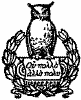

Volume I Contents
Main Contents

NEW YORK
HENRY HOLT AND COMPANY
1906
Copyright, 1906
By
HENRY HOLT AND COMPANY
The preparation of this work was suggested to the author by the difficulty he experienced in obtaining an accurate knowledge of the movements of political parties and their leaders in the Empire State. "After living a dozen years in New York," wrote Oliver Wolcott, who had been one of Washington's Cabinet, and was afterwards governor of Connecticut, "I don't pretend to comprehend their politics. It is a labyrinth of wheels within wheels, and it is understood only by the managers." Wolcott referred to the early decades of the last century, when Clintonian and Bucktail, gradually absorbing the Federalists, severed the old Republican party into warring factions. In later years, Daniel S. Dickinson spoke of "the tangled web of New York politics"; and Horace Greeley complained of "the zigzag, wavering lines and uncouth political designations which puzzled and wearied readers" from 1840 to 1860, when Democrats divided into Conservatives and Radicals, Hunkers and Barnburners, and Hards and Softs; and when Whigs were known as Conscience and Cotton, and Woollies and Silver Grays. More recently James Parton, in his Life of Andrew Jackson, speaks of "that most unfathomable of subjects, the politics of the State of New York."
There is no attempt in this history to catalogue the prominent public men of New York State. Such a list would itself fill a volume. It has only been possible, in the limited space given to over a century, to linger here and there in the company of the famous figures who rose conspicuously above their fellow men and asserted themselves masterfully in influencing public thought and action. Indeed, the history of a State or nation is largely the history of a few leading men,i. iv and it is of such men only, with some of their more prominent contemporaries, that the author has attempted to write.
It would be hard to find in any Commonwealth of the Union a more interesting or picturesque leadership than is presented in the political history of the Empire State. Rarely more than two controlling spirits appear at a time, and as these pass into apogee younger men of approved capacity are ready to take their places. None had a meteoric rise, but in his day each became an absolute party boss; for the Constitution of 1777, by creating the Council of Appointment, opened wide the door to bossism. The abolition of the Council in 1821 doubtless made individual control more difficult, but the system left its methods so deeply impressed upon party management that what before was done under the sanction of law, ever after continued under the cover of custom.
After the Revolution, George Clinton and Alexander Hamilton led the opposing political forces, and while Aaron Burr was forging to the front, the great genius of DeWitt Clinton, the nephew of George Clinton, began asserting itself. The defeat of Burr for governor, and the death of Hamilton would have left DeWitt Clinton in complete control, had he found a strong man for governor whom he could use. In 1812 Martin Van Buren discovered superiority as a manager, and for nearly two decades, until the death of the distinguished canal builder, his great ability was taxed to its uttermost in the memorable contests between Bucktails and Clintonians. Thurlow Weed succeeded DeWitt Clinton in marshalling the forces opposed to Van Buren, whose mantle gradually fell upon Horatio Seymour. Clustered about each of these leaders, save DeWitt Clinton, was a coterie of distinguished men whose power of intellect has made their names familiar in American history. If DeWitt Clinton was without their aid, it was because strong men in high position rebelled against becoming errand boys to do his bidding. But the builder of the Erie canal needed no lieutenants, since his great achievement, aiding the farmer and eni. vriching the merchant, overcame the power of Van Buren, the popularity of Tompkins, and the phenomenal ability of the Albany Regency.
In treating the period from 1800 to 1830, the term "Democrat" is purposely avoided, since all anti-federalist factions in New York claimed to be "Republican." The Clay electors, in the campaign of 1824, adopted the title "Democrat Ticket," but in 1828, and for several years after the formation of the Whig party in 1834, the followers of Jackson, repudiating the title of Democrats, called themselves Republicans.
For aid in supplying material for character and personal sketches, the author is indebted to many "old citizens" whom he met during the years he held the office of United States Attorney for the Northern District of New York, when that district included the entire State north and west of Albany. He takes this occasion, also, to express his deep obligation to the faithful and courteous officials of the Library of Congress, who, during the years he has been a member of Congress, assisted him in searching for letters and other unindexed bits of New York history which might throw some light upon subjects under investigation.
The author hopes to complete the work in an additional volume, bringing it down to the year 1896.
D.S.A.
Buffalo, N.Y., March, 1906.
On the 16th of May, 1776, the second Continental Congress, preparing
the way for the Declaration of Independence, recommended that those
Colonies which were without a suitable form of government, should, to
meet the demands of war, adopt some sufficient organisation. The
patriot government of New York had not been wholly satisfactory. It
never lacked in the spirit of resistance to England's misrule, but it
had failed to justify the confident prophecies of those who had been
instrumental in its formation.
For nearly a year New York City saw with wonder the spectacle of a few fearless radicals, organised into a vigilance committee of fifty, closing the doors of a custom-house, guarding the gates of an arsenal, embargoing vessels ladened with supplies for British troops, and removing cannon from the Battery, while an English fleet, well officered and manned, rode idly at anchor in New York harbour. Inspiring as the spectacle was, however, it did not appreciably help matters. On the contrary, it created so much friction among the people that the conservative business men—resenting involuntary taxation, yet wanting, if possible withi. 2 honour, reconciliation and peace with the mother country—organised, in May, 1774, a body of their own known as the Committee of Fifty-one, which thought the time had come to interrupt the assumed leadership of the Committee of Fifty. This usurpation by one committee of powers that had been exercised by another, caused the liveliest indignation.
The trouble between England and America had grown out of the need for a continental revenue and the lack of a continental government with taxing power—a weakness experienced throughout the Revolution and under the Confederation. In the absence of such a government, Parliament undertook to supply the place of such a power; but the Americans blocked the way by an appeal to the principle that had been asserted by Simon de Montford's Parliament in 1265 and admitted by Edward I. in 1301—"No taxation without representation." So the Stamp Act of 1765 was repealed. The necessity for a continental revenue, nevertheless, remained, and in the effort to adopt some expedient, like the duty on tea, Crown and Colonies became involved in bitter disputes. The idea of independence, however, had, in May, 1774, scarcely entered the mind of the wildest New York radical. In their instructions to delegates to the first Continental Congress, convened in September, 1774, the Colonies made no mention of it. Even in May, 1775, the Sons of Liberty in Philadelphia cautioned John Adams not to use the word, since "it is as unpopular in all the Middle States as the Stamp Act itself."[1] Washington wrote from the Congress that independence was then not "desired by any thinking man in America."[2]
The differences, therefore, between the Committees of Fifty and Fifty-one were merely political. One favoured agitation for the purpose of arousing resistance to the King's summary methods—the other preferred a more orderly but not less forceful way of making known their oppoi. 3sition. Members of both committees were patriots in the highest and best sense, yet each faction fancied itself the only patriotic, public spirited and independent party.
It was during these months of discord that Alexander Hamilton, then a lad of seventeen, astonished his listeners at the historic meeting "in the Fields,"[3] with the cogency of his arguments and the wonderful flights of an unpremeditated eloquence while denouncing the act of Parliament which closed the port of Boston. Hamilton had already been a year in America attending the Elizabethtown grammar school, conducted under the patronage of William Livingston, soon to become the famous war governor of New Jersey. This experience quickened the young man's insight into the vexed relations between the Colonies and the Crown, and shattered his English predilections in favour of the little minds that Burke thought so ill-suited to a great empire. A visit to Boston shortly after the "tea party" seems also to have had the effect of crowding his mind with thoughts, deeply and significantly freighted with the sentiment of liberty, which were soon to make memorable the occasion of their first utterance.
The remarkable parallel between Hamilton and the younger Pitt begins in this year, while both are in the schoolroom. Hamilton "in the Fields" recalls Pitt at the bar of the House of Lords, amazing his companions with the ripe intelligence and rare sagacity with which he followed the debate, and the readiness with which he skilfully formulated answers to the stately arguments of the wigged and powdered nobles. Pitt, under the tuition of his distinguished father, was fitted for the House of Commons as boys are fitted for college at Exeter and Andover, and he entered Parliament before becoming of age. Hamilton's preparation had been different. At twelve years of age he was a clerk in a counting house on the island of Nevis in the West Indies; at sixteen he entered a grammar school in New Jersey; at seventeen hei. 4 became a sophomore at King's College. It is then that he spoke "in the Fields"—not as a sophomore, not as a precocious youth with unripe thoughts, not as a boy orator—but as a man speaking with the wisdom of genius.
After the meeting "in the Fields" patriotism proved stronger than prejudice, and in November, 1774, the Committee of Fifty-one gave place to a Committee of Sixty, charged with carrying out recommendations of the Continental Congress. Soon after a Committee of One Hundred, composed of members of the Committees of Fifty and Fifty-one, assumed the functions of a municipal government. Finally, in May, 1775, representatives were chosen from the several counties to organise a Provincial Congress to take the place of the long established legislature of the Colony, which had become so steeped in toryism that it refused to recognise the action of any body of men who resented the tyranny of Parliament. Thus, in the brief space of eighteen months, the government of the Crown had been turned into a government of the people.
For several months, however, the patriots of New York had desired a more complete state government. All admitted that the revolutionary committees were essentially local and temporary. Even the hottest Son of Liberty came to fear the licentiousness of the people on the one hand, and the danger from the army on the other. Nevertheless, the Provincial Congress, whose members had been trained by harsh experience to be stubborn in defence and sturdy in defiance, declined to assume the responsibility of forming such a government as the Continental Congress recommended. That body had itself come into existence as a revolutionary legislature after the Provincial Assembly had refused either to approve the proceedings of the first Continental Congress, or to appoint delegates to the second; and, although it did not hesitate to usurp temporarily the functions of the Tory Assembly, to its great credit it believed the right of creating and framing a new civil government belonged to the people; and, accordingly, on May 24, 1776, it recommended the eleci. 5tion of new representatives who should be specially authorised to form a government for New York.
The members of this new body were conspicuous characters in New York's history for the next third of a century. Among them were John Jay, George Clinton, James Duane, Philip Livingston, Philip Schuyler, and Robert R. Livingston. The same men appeared in the Committee of Safety, at the birth of the state government, as witnesses of the helplessness of the Confederation, and as backers or backbiters of the Federal Constitution. Among those associated with them were James Clinton, Ezra L'Hommedieu, Marinus Willett, John Morin Scott, Alexander McDougall, John Sloss Hobart, the Yateses, Abraham, Richard and Robert; the Van Cortlandts, James, John and Philip; the Morrises, Richard, Lewis and Gouverneur, and all the Livingstons. Only two illustrious names are absent from these early patriotic lists, but already Alexander Hamilton had won the heart of the people by his wonderful eloquence and logic, and Aaron Burr, a comely lad of nineteen, slender and graceful as a girl, with the features of his beautiful mother and the refinement of his distinguished grandfather, had thrown away his books to join Arnold on his way to Quebec. These men passed into history in companies, but each left behind his own trail of light. Where danger called, or civic duties demanded prudence and profound sagacity, this band of patriots appeared in council and in the camp, ready to answer to the roll-call of their country, and by voice and vote set the pace which achieved independence.
The new Provincial Congress met at the courthouse in White Plains on July 9, 1776, and, as evidence of the change from the old institutions to the new, it adopted the name of the "Convention of the Representatives of the State of New York." As further evidence of the new order of things it declared that New York began its existence as a State on April 20, 1775. It also adopted as the law of the State such parts of the common and statute law of England as were in force in the Colony of New York on April 19, 1775.i. 6
By this time the British forces had become so active in the vicinity of New York that the convention thought it advisable to postpone the novel and romantic work of state-making until the threatened danger had passed; but, before its hasty adjournment, by requesting officers of justice to issue all processes and pleadings under the authority and in the name of the State of New York, it served notice that King and Parliament were no longer recognised as the source of political authority. This appears to have been the first official mention of the new title of the future government.[4] When the convention reassembled on the first day of the following August it appointed John Jay chairman of a committee to report the draft of a state constitution.
Jay was then thirty-one years old, a cautious, clever lawyer whose abilities were to make a great impression upon the history of his country. He belonged to a family of Huguenot merchants. The Jays lived at La Rochelle until the revocation of the Edict of Nantes drove the great-grandfather to England, where the family continued until 1686, when Augustus, the grandfather, settled in New York. It was not a family of aristocrats; but for more than a century the Jays had ranked among the gentry of New York City, intermarrying with the Bayards, the Stuyvesants, the Van Cortlandts and the Philipses. To these historic families John Jay added another, taking for his wife Sarah Livingston, the sister of Brockholst, who later adorned the Supreme Court of the United States, and the daughter of William, New Jersey's coming war governor, already famous as a writer of poems and essays.
Jay's public career had begun two years before in connection with the revolutionary Committee of Fifty-one. He did not accept office because he loved it. He went into politics as he might have travelled on a stage-coach at the invitation of a few congenial friends, for their sake, not for his own. When he took up the work of organisation, therefore, it was with no wish to become a leader; he simply desiredi. 7 to guide the spirit of resistance along orderly and forceful lines. But soon he held the reins and had his foot on the brake. In drafting a reply to resolutions from a Boston town meeting, he suggested a Congress of all the Colonies, to which should be referred the disturbing question of non-importation. This letter was not only the first serious suggestion of a general Congress, placing its author intellectually at the head of the Revolutionary leaders; but the plan—which meant broader organisation, more carefully concerted measures, an enlistment of all the conservative elements, and one official head for thirteen distinct and widely separated colonies—gradually found favour, and resulted in sending the young writer as a delegate to the first Continental Congress.
It was in this Congress that Jay won the right to become a constitution-maker. Of all the men of that busy and brilliant age, no one advanced more steadily in the general knowledge and favour. When he wrote the address to the people of Canada, his great ability was recognised at once; and after he composed the appeal to Ireland and to Jamaica, the famous circular letter to the Colonies, and the patriotic address to the people of his own State, his wisdom was more frequently drawn upon and more widely appreciated than ever; but he may be said to have leaped into national fame when he drafted the address to the people of Great Britain. While still ignorant of its authorship, Jefferson declared it "a production of the finest pen in America."
It was early spring in 1777 before John Jay, withdrawing to the
country, began the work of drafting a constitution. His retirement
recalls Cowper's sigh for
"... a lodge in some vast wilderness,
Some boundless contiguity of shade,
Where rumours of oppression and deceit,
Of unsuccessful and successful war,
Might never reach me more."
Too much and too little credit has been given Jay for his part in the work. One writer says he "entered an almost unexplored field." On the other hand, John Adams wrote Jefferson that Jay's "model and foundation" was his own letter to George Wythe of Virginia. Neither is true. The field was not unexplored, nor did John Adams' letter contain a suggestion of anything not already in existence, except the election of a Council of Appointment, with whose consent the governor should appoint all officers. His plan of letting the people elect a governor came later. "We have a government to form, you know," wrote Jay, "and God knows what it will resemble. Our politicians, like some guests at a feast, are perplexed and undetermined which dish to prefer;"[5] but Jay evidently preferred the old home dishes, and it is interesting to note how easily he adapted the laws and customs of the provincial government to the needs of an independent State.
The legislative branch of the government was vested in two separate and distinct bodies, called the Assembly and the Senate. The first consisted of seventy members to be elected each year; the second of twenty-four members, one-fourth to be elected every four years. Members of the Assembly were proportioned to the fourteen counties according to the number of qualified voters. For the election of senators, the State was divided into "four great districts," the eastern being allowed three members, the southern nine, the middle six and the western six. To each house was given the powers and privileges of the Provincial Assembly of the Colony of New York. In creating this Legislature, Jay introduced no new feature. The old Assembly suggested the lower house, and the former Council or upper house of the Province, which exercised legislative powers, made a model for the Senate.[6] In their functions and operations the two bodies were indistinguishable.[7]
The qualifications of those who might vote for members of the Legislature greatly restricted suffrage. Theoretically every patriot believed in the liberties of the people, and the first article of the Constitution declared that "no authority shall, on any pretence whatever, be exercised over the people of the State, but such as shall be derived from and granted by them." This high-sounding exordium promised the rights of popular sovereignty; but in practice the makers of the Constitution, fearing the passions of the multitude as much as the tyranny of kings, deemed it wise to keep power in the hands of a few. A male citizen of full age, possessing a freehold of the value of twenty pounds, or renting a tenement of the yearly value of forty shillings, could vote for an assemblyman, and one possessing a freehold of the value of one hundred pounds, free from all debts, could vote for a senator.
But even these drastic conditions did not satisfy the draftsman of the Constitution. The legislators themselves,i. 10 although thus carefully selected, might prove inefficient, and so, lest "laws inconsistent with the spirit of this Constitution, or with the public good, may be hastily or unadvisedly passed," a Council of Revision was created, composed of the governor, chancellor, and the three judges of the Supreme Court, or any two of them acting with the governor, who "shall revise all bills about to be passed into laws by the Legislature." If the Council failed to act within ten days after having possession of the bill, or if two-thirds of each house approved it after the Council disapproved it, the bill became law. This Council seems to have been suggested by the veto power possessed by the King's Privy Council.
The supreme executive power and authority of the State were vested in a governor, who must be a freeholder and chosen by the ballots of freeholders possessed of one hundred pounds above all debts. His term of office was three years, and his powers similar to those of preceding Crown governors. He was commander-in-chief of the army, and admiral of the navy. He had power to convene the Legislature in extraordinary session; to prorogue it not to exceed sixty days in any one year; and to grant pardons and reprieves to persons convicted of crimes other than treason and murder, in which cases he might suspend sentence until the Legislature acted. In accordance with the custom of his predecessors, he was also expected to deliver a message to the Legislature whenever it convened. To aid him in his duties, the Constitution provided for the election of a lieutenant-governor, who was made the presiding officer of the Senate.
The proposition that no authority should be exercised over the people except such as came from the people necessarily opened the door to an election of the governor by the people; but how to restrict his power seems to have taxed Jay's ingenuity. He had reduced the number of voters to its lowest terms, and put a curb on the Legislature, as well as the governor, by the creation of the Council of Revision; but how to curtail the chief executive's power in making appointi. 11ments, presented a problem which gave Jay himself, when governor, good reason to regret the manner of its solution.
The only governors with whom Jay had had any experience were British governors, and the story of their rule was a story of astonishing mistakes and vexing stupidities. To go no farther back than Lord Cornbury, the dissolute cousin of Queen Anne, not one in the long list, covering nearly a century, exhibited gifts fitting him for the government of a spirited and intelligent people, or made the slightest impression for good either for the Crown or the Colony. Their disposition was to be despotic, and to prevent a repetition of such arbitrary conduct, Jay sought to restrict the governor's power in making appointments to civil office.
The new Constitution provided for the appointment of sheriffs, mayors of cities, district attorneys, coroners, county treasurers, and all other officers in the State save governor, lieutenant-governor, state treasurer and town officers. Some members of the convention wished the governor to make these appointments; others wanted his power limited by the Legislature's right to confirm. Jay saw objections to both methods. The first would give the governor too much power; the latter would transfer too much to the Legislature. To reconcile these differences, therefore, he proposed "Article XXIII. That all officers, other than those who, by this Constitution, are directed to be otherwise appointed, shall be appointed in the manner following, to wit: The Assembly shall, once in every year, openly nominate and appoint one of the senators from each great district, which senators shall form a Council for the appointment of the said officers, of which the governor shall be president and have a casting vote, but no other vote; and with the advice and consent of the said Council shall appoint all of the said officers."[8]
This provision was simply, as the sequel showed, a bungling compromise. Jay intended that the governor should nominate and the Council confirm, and in the event of a tie the governor should have the casting vote. But in practice it subordinated the governor to the Council whenever a majority of the Assembly was politically opposed to him, and the annual election of the Council greatly increased the chances of such opposition. When, finally, the Council of Appointment set up the claim that the right to nominate was vested concurrently in the governor and in each of the four senators, it practically stripped the chief executive of power.
The anomaly of the Constitution was the absence of provision for the judicature, the third co-ordinate branch of the government. One court was created for the trial of impeachments and the correction of errors, but the great courts of original jurisdiction, the Supreme Court and the Court of Chancery, as well as the probate court, the county court, and the court of admiralty, were not mentioned except incidentally in sections limiting the ages of the judges, the offices each might hold, and the appointment of clerks. Instead of recreating these courts, the Constitution simply recognised them as existing. The new court established, known as the Court of Errors and Impeachment, consisted of the president of the Senate, the senators, the chancellor, and the three judges of the Supreme Court, or a major part of them. The conception of vesting supreme appellate jurisdiction in the upper legislative house was derived from the former practice of appeals to the Council of the Province,[9] which possessedi. 13 judicial as well as legislative power. The Constitution further followed the practice of the old Council by providing that judges could not vote on appeals from their own judgments, although they might deliver arguments in support of the same—a custom which had obtained in New York from the earliest times.[10]
In like manner provincial laws, grants of lands and charters, legal customs, and popular rights, most of which had been in existence for a century, were carried over. The Constitution simply provided, in a general way, for the continuance of such parts of the common law of England, the statute law of England and Great Britain, and the acts of the legislature of the Colony of New York, as did not yield obedience to the government exercised by Great Britain, or establish any particular denomination of Christians, or their priests or ministers, who were debarred from holding any civil or military office under the new State; but acts of attainder for crimes committed after the close of the war were abrogated, with the declaration that such acts should not work a corruption of the blood.
The draft of the Constitution in Jay's handwriting was reported to the convention on March 12, 1777, and on the following day the first section was accepted. Then the debate began. Sixty-six members constituted the convention, a majority of whom, led by John Morin Scott, believed in the reign of the people. The spirit that nerved a handful of men to embargo vessels and seize munitions of war covered by British guns never wanted courage, and this historic band now prepared to resist a conservatism that seemed disposed simply to change the name of their masters. Jay understood this feeling. "It is probable that the convention was ultra-democratic," says William Jay, in the biography of his father, "for I have heard him observe that another turn of the winch would have cracked the cord."[11]
Jay was not without supporters. Conservatives like thei. 14 Livingstons, the Morrises, and the Yateses never acted with the recklessness of despair. They had well-formed notions of a popular government, and their replies to proposed changes broke the force of the opposition. But Jay, relying more upon his own policy, prudently omitted several provisions that seemed to him important, and when discussion developed their need, he shrewdly introduced them as amendments. Upon one question, however, a prolonged and spirited debate occurred. This centred upon the freedom of conscience. The Dutch of New Netherland, almost alone among the Colonies, had never indulged in fanaticism, and the Constitution, breathing the spirit of their toleration, declared that "the free exercise and enjoyment of religious profession and worship without diminution or preference shall forever hereafter be allowed within the State to all mankind." Jay did not dissent from this sentiment; but, as a descendant of the persecuted Huguenots, he wished to except Roman Catholics until they should deny the Pope's authority to absolve citizens from their allegiance and to grant spiritual absolution, and he forcefully insisted upon and secured the restriction that "the liberty of conscience hereby granted shall not be so construed as to excuse acts of licentiousness or justify practices inconsistent with the safety of the State." The question of the naturalisation of foreigners renewed the contention. Jay's Huguenot blood was still hot, and again he exacted the limitation that all persons, before naturalisation, shall "abjure and renounce all allegiance to all and every foreign king, prince, potentate, and state, in all matters ecclesiastical as well as civil."
Jay intended reporting other amendments—one requiring a similar renunciation on the part of all persons holding office, and one abolishing domestic slavery. But before the convention adjourned he was, unfortunately, summoned to the bedside of his dying mother. Otherwise, New York would probably have had the distinction of being first to set the example of freedom. "I should have been for a clausei. 15 against the continuance of domestic slavery," he said, in a letter objecting to what occurred after his forced retirement.[12]
Although the Constitution was under consideration for more than a month, haste characterised the close of the convention's deliberations. As soon as Jay left, every one seemed eager to get away, and on Sunday, April 20, 1777, the Constitution was adopted as a whole practically as he left it, and a committee appointed to report a plan for establishing a government under it. Unlike the Constitution of Massachusetts, it was not submitted to the voters for ratification. The fact that the delegates themselves had been elected by the people seemed sufficient, and two days after its passage, the secretary of the convention, standing upon a barrel in front of the courthouse at Kingston, published it to the world by reading it aloud to those who happened to be present. As it became known to the country, it was cordially approved as the most excellent and liberal of the American constitutions. "It is approved even in New England," wrote Jay, "where few New York productions have credit."[13]
The absence of violent democratic innovations was the Constitution's remarkable feature. Although a product of the Revolution, framed to meet the necessities growing out of that great event, its general provisions were decidedly conservative. The right of suffrage was so restricted that as late as 1790 only 1303 of the 13,330 male residents of New York City possessed sufficient property to entitle them to vote for governor. Even the Court of Chancery remained undisturbed, notwithstanding royal governors had created it in opposition to the wishes of the popular assembly. But despite popular dissatisfaction, which evidenced itself in earnest prayers and ugly protests, the instrument, so rudelyi. 16 and hastily published on April 22, 1777, remained the supreme law of the State for forty-four years.
Before adjournment the convention, adopting the report of its committee for the organisation of a state government, appointed Robert R. Livingston, chancellor; John Jay, chief justice of the Supreme Court; Robert Yates, Jr., and John Sloss Hobart, justices of the Supreme Court, and Egbert Benson, attorney-general. To a Council of Safety, composed of fifteen delegates, with John Morin Scott, chairman, were confided all the powers of the State until superseded by a regularly elected governor.
After the constitutional convention adjourned in May, 1777, the
Council of Safety immediately ordered the election of a governor,
lieutenant-governor, and members of the Legislature. The selection of
a governor by ballot interested the people. Although freeholders who
could vote represented only a small part of the male population,
patriots of every class rejoiced in the substitution of a neighbour
for a lord across the sea. And all had a decided choice. Of those
suggested as fittest as well as most experienced Philip Schuyler, John
Morin Scott, John Jay and George Clinton were the favourites. Just
then Schuyler was in the northern part of the province, watching
Burgoyne and making provision to meet the invasion of the Mohawk
Valley; George Clinton, in command on the Hudson, was equally watchful
of the movements of Sir Henry Clinton, whose junction with Burgoyne
meant the destruction of Forts Clinton and Montgomery at the lower
entrance to the Highlands; while Scott and Jay, as members of the
Council of Safety, were directing the government of the new State.
Schuyler's public career began in the Provincial Assembly of New York in 1768. He represented the people's interests with great boldness, and when the Assembly refused to thank the delegates of the first Continental Congress, or to appoint others to a second Congress, he aided in the organisation of the Provincial Congress which usurped the Assembly's functions and put all power into the hands of the people. Chancellor Kent thought that "in acuteness of intellect,i. 18 profound thought, indefatigable activity, exhaustless energy, pure patriotism, and persevering and intrepid public efforts, Schuyler had no superior;" and Daniel Webster declared him "second only to Washington in the services he rendered the country."[14] But there was in Schuyler's make-up a touch of arrogance that displayed itself in letters as well as in manners. The soldierly qualities that made him a commander did not qualify him for public place dependent upon the suffrage of men. People respected but did not love him. If they were indignant that Gates succeeded him, they did not want him to govern them, however much it may have been in his heart to serve them faithfully.
John Morin Scott represented the radical element among the patriots. By profession he was an able and wealthy lawyer; by occupation a patriotic agitator. John Adams, who breakfasted with him, speaks of his country residence three miles out of town as "an elegant seat, with the Hudson just behind the house, and a rural prospect all around him." But the table seems to have made a deeper impression upon the Yankee patriot than the picturesque scenery of the river. "A more elegant breakfast I never saw—rich plate, a very large silver coffee-pot, a very large silver teapot, napkins of the very finest materials, toast and bread and butter in great perfection. Afterwards a plate of beautiful peaches, another of pears, another of plums, and a musk melon." As a parting salute, this lover of good things spoke of his host as "a sensible man, one of the readiest speakers upon the continent, but not very polite."[15] This is what the Tories thought. According to Jones, the Tory historian, Scott had the misfortune to graduate at Yale—"a college remarkable for itsi. 19 republican principles and religious intolerance," he says, and to belong to a triumvirate whose purpose was "to pull down church and state, and to raise their own government upon the ruins."[16]
Scott, no doubt, was sometimes mistaken in the proper course to pursue, but he was always right from his point of view, and his point of view was bitter hostility to English misrule. Whatever he did he did with all the resistless energy of a man still in his forties. He was of distinguished ancestry. His great-great-grandfather, Sir John Scott, baronet, of Ancrum, Scotland, had been a stalwart Whig before the revolution of 1688, and his grandfather, John Scott, coming to New York in 1702, had commanded Fort Hunter, a stronghold on the Mohawk. Both were remarkable men. Tory blood was foreign to their veins. Young John, breathing the air of independence, scorned to let his life and property depend upon the pleasure of British lords and a British ministry, or to be excluded from the right of trial by a jury of his neighbours, or of taxation by his own representatives. In 1775 he went to the Continental Congress; in 1776, to the Provincial Congress of New York; and later he participated in the battle of Long Island as a brigadier-general. After the adoption of the State Constitution he became secretary of state, and from 1780 to 1783 served in the Continental Congress. He lived long enough to see his country free, although his strenuous life ended at fifty-four.
George Clinton possessed more popular manners than either Schuyler or Scott. Indeed, it has been given to few men in New York to inspire more passionate personal attachment than George Clinton. A patriot never lived who was more bitter in his hostility to English misrule, or more uncompromising in his opposition to toryism. He was a typical Irishman—intolerant, often domineering, sometimes petulant, and occasionally too quick to take offence, but he was magnetic and generous, easily putting himself in touchi. 20 with those about him, and ready, without hesitation, to help the poorest and carry the weakest. This was the kind of man the people wanted for governor.
Clinton came of a good family. His great-grandfather, a too devoted adherent of Charles I., found it healthful to wander about Europe, and finally to settle in the north of Ireland, out of reach of Cromwell's soldiers, and out of sight of his ancestral patrimony. By the time Charles II. came to the throne, the estate was lost, and this friend of the Stuarts lived on in the quiet of his secluded home, and after him, his son; but the grandson, stirred by the blood of a Puritan mother, exchanged the North Sea shore for the banks of the Hudson, where his son breathed the air that made him a leading spirit in the war for American independence. Clinton's youth is one record of precocity. Before the war began he passed through a long, a varied, even a brilliant career, climbing to the highest position in the State before he had reached the age when most men begin to fill responsible places. At fifteen he manned an American privateer; at sixteen, as a lieutenant, he accompanied his father in a successful assault upon Fort Frontenac; at twenty-six, in the colonial legislature, he became the rival of Philip Schuyler in the leadership and influence that enabled a patriotic minority to resist the aggressions of Great Britain; at thirty-six, holding a seat in the Second Continental Congress, he voted for the Declaration of Independence, and commanded a brigade of Ulster County militia.
The election which occurred in June was not preceded by a campaign of speaking. People were too busy fighting to supplement a campaign of bullets with one of words. But Jay sent out an electioneering letter recommending Philip Schuyler for governor and George Clinton for lieutenant-governor. This was sufficient to secure for these candidates the conservative vote. It showed, too, Jay's unconcern for high place. He was modest even to diffidence, an infirmity that seems to have depressed him at times as much as it did Nathaniel Hawthorne in a later day.i. 21
The returns were made to the Council of Safety, and Jay carefully scanned them as they came in. On June 20 he wrote Schuyler: "The elections in the middle district have taken such a turn as that, if a tolerable degree of unanimity should prevail in the upper counties, there will be little doubt of having, ere long, the honour of addressing a letter to your excellency. Clinton, being pushed for both offices, may have neither; he has many votes for the first and not a few for the second. Scott, however, has carried a number from him, and you are by no means without a share. You may rely on receiving by express the earliest notice of the event alluded to."[17] When the voters from Orange and other southern counties came in, however, Jay discovered that the result did not follow the line either of his wishes or of his suggestions. On the contrary, Clinton was elected to both offices by a considerable plurality.[18]
The result of the election proved a great surprise and something of a humiliation to the ruling classes. "Gen. Clinton, I am informed, has a majority of votes for the Chair," Schuyler wrote to Jay, on June 30. "If so he has played his cards better than was expected."[19] A few days later, after confirmation of the rumour, he betrayed considerable feeling. "Clinton's family and connections do not entitle him to so distinguished a pre-eminence," he wrote, showing that Revolutionary heroes were already divided into more democratic and less democratic whigs, and more aristocratic and less aristocratic patriots; but the division was still in the mind rather than in any settled policy. "Hei. 22 is virtuous and loves his country," added Schuyler, in the next line; "he has ability and is brave, and I hope he will experience from every patriot support, countenance and comfort."[20] Washington understood his merits. "His character will make him peculiarly useful at the head of your State," he wrote the Committee of Safety.
Clinton's inauguration occurred on July 30, 1777. He stood in front of the courthouse at Kingston on top of the barrel from which the Constitution had been published in the preceding April, and in the uniform of his country, with sword in hand, he took the oath of office. Within sixty days thereafter Sir Henry Clinton had carried the Highland forts, scattered the Governor's troops, dispersed the first Legislature of the State, burned Kingston to the ground, and very nearly captured the Governor himself, the latter, under cover of night, having made his escape by crossing the river in a small rowboat. Among the captured patriots was Colonel McClaughry, the Governor's brother-in-law. "Where is my friend George?" asked Sir Henry. "Thank God," replied the Colonel, "he is safe and beyond the reach of your friendship."
During the war Governor Clinton's duties were largely military. Every
important measure of the Legislature dealt with the public defence,
and the time of the Executive was fully employed in carrying out its
enactments and performing the work of commander-in-chief of the
militia. A large proportion of the population of the State was either
avowedly loyal to the Crown or secretly indisposed to the cause of
independence. "Of all the Colonies," wrote William Jay, "New York was
probably the least unanimous in the assertion and defence of the
principles of the Revolution. The spirit of disaffection was most
extensive on Long Island, and had probably tainted a large majority of
its inhabitants. In Queens County, in particular, the people had, by a
formal vote, refused to send representatives to the colonial congress
or convention, and had declared themselves neutral in the present
crisis."[21]
The Governor sought to crush this spirit by methods much in vogue in the eighteenth century. At the outset of his career he declared that he had "rather roast in hell to all eternity than be dependent upon Great Britain or show mercy to a damned Tory." To add to his fame, he enforced this judgment with heavy fines, long imprisonments, summary banishments, and frequent coats of tar and feathers.
Very soon after the adoption of the Constitution, the Legislature passed a law requiring an oath of allegiance to thei. 24 State; and under the vigorous enforcement of this act the Governor sent many Tories from the rural districts into the city of New York or expelled them from the State. Others were required to give a pledge, with security, to reside within prescribed limits. At times even the churches were filled with prisoners, some of whom were sent to jails in Connecticut, or exchanged for prisoners of war. In 1779 the Legislature increased the penalty of disloyalty to the State, by passing the Confiscation Act, declaring "the forfeiture and sale of the estates of persons who had adhered to the enemy."
Up to this time only one political party had existed among the Whig colonists. The passage of the Confiscation Act, however, encountered the opposition of many sincere lovers of the cause of independence, who favoured a more moderate policy toward loyalists, since they were probably as sincere in their opinions as those opposed to them. Besides, a generous and magnanimous course, it was argued, would induce the return of many desirable citizens after hostilities had ceased. To this the ultra-Whigs replied that the law of self-preservation made a severe policy necessary, and if any one suffered by its operation he must look to the government of his choice for comfort and reimbursement. As for the return of the Tories, the ultras declared that only citizens sincerely loyal to an independent country would be acceptable.
This division into moderate and ultra Whigs was emphasised in 1781 by the legislative grant to Congress of such import duties as accrued at the port of New York, to be levied and collected "under such penalties and regulations, and by such officers, as Congress should from time to time make, order, and appoint." Governor Clinton did not cordially approve the act at the time of its passage, and as the money began flowing into the national treasury, he opposed the method of its surrender. In his opinion, the State, as an independent sovereignty, had associated itself with other Colonies only for mutual protection, and not for their support. At his instance, therefore, the Legislature substitutedi. 25 for the law of 1781 the act of March, 1783, granting the duties to Congress, but directing their collection by officers of the State. Although this act was subsequently amended, making collectors amenable to Congress, another law was enacted in 1786 granting Congress the revenue, and reserving to the State, as in the law of 1783, "the sole power of levying and collecting the duties." When Congress asked the Governor to call a special session of the Legislature, that the right to levy and collect might be yielded as before, he refused to do so.
Governor Clinton understood the commercial advantages of New York's geographical location, which were greatly enhanced by the navigation acts of other States. The peace treaty had made New York the port of entry for the whole region east of the Delaware, and into its coffers poured a revenue so marvellous as to excite hopes of a prospective wealth which a century, remarkable as was its productiveness, did little more than realise. If any State, therefore, could survive without a union with other Colonies, it was New York, and it is not surprising that many, perhaps a majority of its people, under the leadership of George Clinton, settled into a policy unfriendly to a national revenue, and later to a national government.
The Governor had gradually become mindful of an opposition as stubborn as it was persistent. He had encountered it in his treatment of the Tories, but not until Alexander Hamilton became an advocate of amnesty and oblivion, did Clinton recognise the centre and future leader of the opposing forces. Hamilton did not appear among those interested in the election of governor in 1777. His youth shut him out of Assembly and Congress, out of committees and conventions, but it did not shut him out of the army; and while Governor Clinton was wrestling with new problems of government in the formation of a new State, Hamilton was acting as secretary, aide, companion, and confidant of Washington, accepting suggestions as commands, and acquiescing in his chief's judgment with a fidelity born of lovei. 26 and admiration. In the history of war nothing is more beautiful than the friendship existing between the acknowledged leader of his country and this brave young officer, spirited and impulsive, brilliant and able, yet frank and candid, without ostentation and without egotism. It recalls a later-day relationship between Ulysses S. Grant and John A. Rawlins, his chief of staff.
In July, 1781, Hamilton, in command of a corps, accompanied Washington in the forced march of the American army from New York to Yorktown. This afforded him the opportunity, so long and eagerly sought, of handling an independent command at a supreme moment of danger, and before the sun went down on the 14th of October, he had led his troops with fixed bayonets, under a heavy and constant fire, over abatis, ditch, and palisades; then, mounting the parapet, he leaped into the redoubt. Washington saw the impetuosity of the attack in the face of the murderous fire, the daring leap to the parapet with three of his soldiers, and the almost fatal spring into the redoubt. "Few cases," he says, "have exhibited greater proofs of intrepidity, coolness, and firmness." Three days later Cornwallis surrendered.
In the summer of 1782 Hamilton was admitted to the bar in Albany, but soon afterward settled in New York City, where he seems to have come into practice and into fame by defending the rights of Tories. For four years after the war ended, the treatment of British sympathisers was the dominant political issue in New York. Governor Clinton advocated disfranchisement and banishment, and the Legislature enacted into law what he advised; so that when the British troops, under the peace treaty, evacuated New York, in November, 1783, loyalists who had thus far escaped the wrath of this patriot Governor, flocked to Nova Scotia and New Brunswick like birds seeking a more congenial clime, recalling the flight of the Huguenots after the revocation of the Edict of Nantes one hundred years earlier. It is not easy to estimate the number who fled before this savage and violent action of the Legislature. Sir Guy Carleton, in comi. 27mand at New York, fixes the emigration at one hundred thousand souls. For many years the "Landing of the Loyalists" was annually commemorated at St. John, and in the cemeteries of England and Scotland are found the tombstones of these unfortunate devotees of the mother country.
It is likely Clinton was too intolerant, but it was the intolerance that follows revolution. Hamilton, on the other hand, became an early advocate of amnesty and oblivion, and, although public sentiment and the Legislature were against him, he finally succeeded in modifying the one and changing the other. "Nothing is more common," he observed, "than for a free people in times of heat and violence to gratify momentary passions by letting in principles and precedents which afterwards prove fatal to themselves. If the Legislature can disfranchise at pleasure, it may soon confine all the votes to a small number of partisans, and establish an aristocracy or an oligarchy; if it may banish at discretion, without hearing or trial, no man can be safe. The name of liberty applied to such a government would be a mockery of common sense."[22]
The differences between Congress and the Legislature respecting the collection of duties also brought Clinton and Hamilton into conflict. As early as 1776 Hamilton had considered the question whether Congress ought not to collect its own taxes by its own agents,[23] and, when a member of Congress in 1783, he urged it[24] as one of the cardinal features of an adequate federal system. In 1787 he was a member of the Legislature. Here he insisted upon having the federal revenue system adopted by the State. His argument was an extended exposition of the facts which made such action important.[25] Under the lead of Clinton, however, New York was willing to surrender the money, but not the power of collection to Congress.
Meantime, the pitiable condition to which the Confederation had come, accented the need of a stronger central government. To this end Clinton and Hamilton seemed for several years to be working in harmony. In 1780 Clinton had presented to the Legislature the "defect of power" in the Confederation, and, in 1781, John Sloss Hobart and Egbert Benson, representing New York at a convention in Hartford, urged the recommendation empowering Congress to apportion taxes among the States in the ratio of their total population. The next year, Hamilton, although not a member of the Legislature, persuaded it to adopt resolutions written by him, declaring that the powers of the central government should be extended, and that it should be authorised to provide revenue for itself. To this end "it would be advisable," continued the resolutions, "to propose to Congress to recommend, and to each State to adopt, the measure of assembling a general convention of the States, specially authorised to revise and amend the Constitution." To Washington's farewell letter, appealing for a stronger central government, Governor Clinton sent a cordial response, and in transmitting the address to the Legislature in 1784, he recommended attention "to every measure which has a tendency to cement the Union, and to give to the national councils that energy which may be necessary for the general welfare."[26]
Nevertheless, Clinton was not always candid. His official communications read like the utterances of a friend; but his influence, as disclosed in the acts of 1783 and 1786, reserving to the State the sole power of levying and collecting duties, clearly indicate that while he loved his country in a matter-of-fact sort of way, it meant a country divided, a country of thirteen States each berating the other, a country of trade barriers and commercial resentments, a country of more importance to New York and to Clinton than to other Commonwealths which had made equal sacrifices.
Thus matters drifted until New York and other middlei. 29 Atlantic States discovered that it was impossible under the impotent Articles of Confederation to regulate commerce in waters bordered by two or more States. Even when New York and New Jersey could agree, Pennsylvania, on the other side of New Jersey, was likely to withhold its consent. Friction of a similar character existed between Maryland and Virginia, North Carolina and Virginia, and Maryland and Pennsylvania. This compelled Congress to call the convention, to which commissioners from New York, New Jersey, Pennsylvania, Delaware, and Virginia, assembled at Annapolis in 1786, to consider the trade and commerce of the United States, and to suggest measures for the action of Congress. Hamilton and Egbert Benson were members of this body, the former of whom wrote the address, afterward adopted, which declared the federal government inefficient, and proposed a convention to revise the Articles of Confederation,[27] in order to render them adequate to the exigencies of the Union. This was the resolution unanimously adopted by the New York Legislature in 1782, but to the surprise of Hamilton and the friends of a stronger government, the Legislature now disapproved such a convention. The idea did not please George Clinton. As Hamilton summed up the opposition, it meant disinclination to taxation, fear of the enforcement of debts, democratic jealousy of important officials, and the influence of foreign powers.[28]
In 1787, however, the Legislature adopted a joint resolution instructing members of Congress from the State to urge that a convention be held to amend the Articles of Confederation, and, when Congress issued the call,[29] Robert Yates, John Lansing, Jr., and Alexander Hamilton were elected delegates "for the sole purpose of revising the Articles of Confederation, and reporting to Congress and the several Legislatures such alterations as shall, when agreed to by Congress and confirmed by the several States, render the Federali. 30 Constitution adequate to the exigencies of government and the preservation of the Union." Hamilton's election to this convention was cited as proof of Clinton's disposition to treat fairly the opponents of state supremacy, since it was well understood that his presence at Philadelphia would add the ablest and most ultra exponent of a strong, central government. It was certainly in Clinton's power to defeat Hamilton as he did John Jay, but his liberality carried a high check-rein, for Robert Yates and John Lansing were selected to overcome Hamilton's vote.
Clinton's first choice for a delegate was Yates, whose criticism of the work of the convention manifests hostility to a Union. He seemed to have little conception of what would satisfy the real needs of a strong government, preferring the vague doctrines of the old Whigs in the early days of revolution. Lansing was clearer, and, perhaps, less extreme in his views; but he wanted nothing more than an amendment of the existing Confederation, known as the New Jersey plan.[30] The moment, therefore, that a majority favoured the Virginia plan which contemplated a national governmenti. 31 with an executive, legislature, and judiciary of its own, Lansing and Yates, regarding it a violation of their instructions, and with the approval of Governor Clinton, withdrew[31] from the convention and refused to sign the Constitution after its adoption.[32]
Hamilton doubted if Madison's plan was strong enough to secure the object in view. He suggested a scheme continuing a President and Senate during good behaviour, and giving the federal government power to appoint governors of States and to veto state legislation. In the notes of a speech presenting this plan, he disclaimed the belief that it was "attainable," but thought it "a model which we ought to approach as near as possible."[33] After the Madison plan had been preferred, however, Hamilton gave it earnest support, and although he could not cast New York's vote, since a majority of the State's representatives had withdrawn, he was privileged to sign the Constitution. If he had never done anything else, it was glory enough to have subscribed his name to that immortal record. When Hamilton returnedi. 32 home, however, he found himself discredited by a majority of the people. "You were not authorised by the State," said Governor Clinton.[34] Richard Morris, the chief justice, remarked to him: "You will find yourself, I fear, in a hornet's nest."[35]
On September 28, 1787, Congress transmitted a draft of the Constitution, which required the assent of nine of the thirteen States, to the several legislatures. At once it became the sole topic of discussion. In New York it was the occasion of riots, of mobs, and of violent contests. It was called the "triple-headed monster," and declared to be "as deep and wicked a conspiracy as ever was invented in the darkest ages against the liberties of a free people." Its opponents, numbering four-sevenths of the community—although their strength was mainly in the country[36]—and calling themselves Federal Republicans, organised a society and opened correspondence with leading men in other States. "All the old alarm about liberty was now revived," says W.G. Sumner, "and all the elements of anarchy and repudiation which had been growing so strong for twenty years were arrayed in hostility."[37] But its bitterest opponent in the thirteen Colonies was George Clinton.[38] "He preferred to remain the most powerful citizen of New York, rather than occupy a subordinate place under a national government in which his own State was not foremost."[39] On the other hand, the Federalist, written largely by Hamilton, carried conviction to the minds of thousands who had previously doubted the wisdom of the plan. In the last number of the series, he said: "The system, though it may not be perfect in every part, is upon the whole a good one, is the best that the present views and circumstances will permit,i. 33 and is such an one as promises every species of security which a reasonable people can desire."[40]
When the Legislature opened, Governor Clinton delivered the usual speech or message, but he said nothing of what everybody else was talking about. Consideration of the Constitution was the only important business before that body; four States had already ratified it, and three others had it under consideration; yet the Governor said not a word. His idea was for New York to hold off and let the others try it. Then, if the Union succeeded, although revenue difficulties were expected to break it up immediately,[41] the State could come in. Meantime, like Patrick Henry of Virginia, he proposed another general convention, to be held as soon as possible, to consider amendments. Thus matters drifted until January, 1788, when Egbert Benson, now a member of the Legislature, offered a resolution for holding a state convention to consider the federal document. Dilatory motions blocked its way, and its friends began to despair of better things; but Benson persisted, until, at last, after great bitterness, the resolution was adopted.
Of the sixty-one delegates to this convention, which assembled at the courthouse in Poughkeepsie on June 17, two-thirds were opposed to the Constitution.[42] The convention organised with Governor Clinton for president. Among the champions of the Constitution appeared Hamilton, Jay, Robert R. Livingston, Robert Morris, James Duane, then mayor of New York, John Sloss Hobart, Richard Harrison, and others of like character. Robert Yates, Samuel Jones, Melancthon Smith, and John Lansing, Jr., led the fight against it. Beginning on June 19, the discussion continued until July 28. Hamilton, his eloquence at its best, so that at times there was not a dry eye in the assembly,[43] especially emphasised the public debt. "It is a fact that should strike us with shame, that we are obliged to borrow money in orderi. 34 to pay the interest of our debt. It is a fact that these debts are accumulating every day by compound interest."[44] In the old Confederation, he declared, the idea of liberty alone was considered, but that another thing was equally important—"I mean a principle of strength and stability in the organisation of our government, and of vigour in its operations."[45] Professor Sumner, in his admirable biography, expresses surprise that nothing is said about debts in the Federalist, and comparatively little about the Supreme Court. "This is very remarkable," he says, "in view of the subsequent history; for if there is any 'sleeping giant' in the Constitution, it has proved to be the power of the Supreme Court to pass upon the constitutionality of laws. It does not appear that Hamilton or anybody else foresaw that this function of the Court would build upon the written constitution a body of living constitutional law."[46]
Melancthon Smith was the ablest opponent of the Constitution. Familiar with political history, and one of the ablest debaters in the country, he proved himself no mean antagonist even for Hamilton. "He must have been a man of rare candour, too," says John Fiske, "for after weeks of debate he owned himself convinced."[47] Whatever could be said against the Constitution, Smith voiced it; and there was apparent merit in some of his objections. To a majority of the people, New York appeared to be surrendering natural advantages in much larger measure than other Commonwealths, while its concession of political power struck them as not unlikely to endanger the personal liberty of the citizen and the independence of the State. They disliked the idea of a far-off government, with many officers drawing large salaries, administering the army, the navy, and the diplomatic relations with nations of the Old World. It was so different from anything experienced since their separation from England, that they dreaded this centralised power;i. 35 and, to minimise it, they proposed several amendments, among them one that no person should be eligible to the office of President for a third term. Time has demonstrated the wisdom of some of these suggestions; but commendable as they now appear after the lapse of more than a century, they were of trifling importance compared to the necessity for a closer, stronger union of the States in 1787.
Federalists were much alarmed over the failure of New York to ratify. Although the State ranked only fifth in population, commercially it was the centre of the Union. From the standpoint of military movements, too, it had been supremely important in the days of Montcalm and Burgoyne, and it was felt that a Federal Union cut in twain by the Mohawk and Hudson valleys must have a short life. "For my own part," said Hamilton, "the more I can penetrate the views of the anti-federal party in this State, the more I dread the consequences of the non-adoption of the Constitution by any of the other States—the more I fear eventual disunion and civil war."[48] His fear bred an apparent willingness to agree to a conditional ratification,[49] until Madison settled the question that there could be no such thing as conditional ratification since constitutional secession would be absurd. On July 11 Jay moved that "the Constitution be ratified, and that whatever amendments might be deemed expedient should be recommended." This, however, did not satisfy the opposition, and the discussion continued.
Hamilton, however, did not rely upon argument alone. He arranged for news of the Virginia and New Hampshire conventions, and while Clinton, clinging to his demand for conditional ratification, still hesitated, word came from New Hampshire, by a system of horse expresses, telling the glad story that the requisite number of States had been secured. This reduced the question to ratification or secession. A few days later it was learned that Virginia had also joined the majority. The support of Patrick Henry had been a tower of strength to Governor Clinton, and his defeat exaggerated Clinton's fear that New York City and the southern countiesi. 36 which favoured the Constitution might now execute their threat to split off unless New York ratified. Then came Melancthon Smith's change to the federalist side. This was like crushing the centre of a hostile army. Finally, on July 28, a resolution "that the Constitution be ratified in full confidence that the amendments proposed by this convention will be adopted," received a vote of thirty to twenty-seven. Governor Clinton did not vote, but it was known that he advised several of his friends to favour the resolution. On September 13, he officially proclaimed the Federal Constitution as the fundamental law of the Republic.
Posterity has never severely criticised George Clinton's opposition to national development. His sincerity and patriotism have been accepted. To Washington and Hamilton, however, his conduct seemed like a cold and selfish desertion of his country at the moment of its utmost peril. "The men who oppose a strong and energetic government," wrote Washington to Hamilton on July 10, 1787, the day of Yates' and Lansing's retirement from the Philadelphia convention, "are, in my opinion, narrow-minded politicians, or are under the influence of local views." This reference to "local views" meant George Clinton, upon whose advice Yates and Lansing acted, and who declared unreservedly that only confusion could come to the country from a convention and a measure wholly unnecessary, since the Confederation, if given sufficient trial, would probably answer all the purposes of the Union.
The march of events has so clearly proved the wisdom of Hamilton and the unwisdom of Clinton, that the name of one, joined inseparably with that of Washington, has grown with the century, until it is as much a part of the history of the Union as the Constitution itself. The name of George Clinton, on the contrary, is little known beyond the limits of his native State. It remained for DeWitt Clinton, the Governor's distinguished nephew, to link the family with an historic enterprise which should bring it down through the ages with increasing respect and admiration.
At each triennial election for twelve years, ever since the adoption
of the State Constitution in 1777, George Clinton had been chosen
governor. No one else, in fact, had ever been seriously talked of,
save John Jay in 1786. Doubtless Clinton derived some advantage from
the control of appointments, which multiplied in number and increased
in influence as term succeeded term, but his popularity drew its
inspiration from sources other than patronage. A strong, rugged
character, and a generous, sympathetic nature, sunk their roots deeply
into the hearts of a liberty-loving people who supported their
favourite with the fidelity of personal friendship.
The time had, however, come at last when Clinton's right to continue as governor was to be contested. Hamilton's encounter with the New York opponents of the Federal Constitution had been vigorous and acrimonious. It was easy to stand with one's State in opposing the Constitution when opposition had behind it the powerful Clinton interest and the persuasive Clinton argument that federal union meant the substitution of experiment for experience, and the exchange of a superior for an inferior position; but it required a splendid stubbornness to face, daringly and aggressively, the desperate odds arrayed against the Constitution. Every man who wanted to curry favour with Clinton was ready to strike at Hamilton, and they covered him with obloquy. Very likely his attitude was not one to tempt the forbearance of angry opponents. He did not fight with gloves. Neveri. 38theless, his success added one more to his list of splendid victories. He had beaten Clinton in his intolerant treatment of loyalists; he had beaten him in obtaining for Congress the sole power of regulating commerce; he had beaten him in the Philadelphia convention called to frame a federal constitution; he had beaten him in a state convention called to ratify that constitution; and now he proposed to beat him for governor in a State which would have great influence in smoothing the way for the new federal government.
After the close of the Revolution, there had been local parties in the various Stales, divided on issues of hard and soft money, on imposts, on treatment of Tories, and on state rights, and these issues had coincided in many of the States. During the contest growing out of the adoption of the Federal Constitution, all these elements became segregated into two great political parties, those who supported the Constitution being known as Federalists—those who were opposed to strengthening the bond between the States being called anti-Federalists. The latter were clearly in the majority in New York, and Hamilton rightly inferred that, notwithstanding the people, since the adoption of the Constitution, manifested a disposition to sustain the general government, a large majority of freeholders, having heretofore supported Clinton as a wise, patriotic governor, would not now desert him for an out-and-out Federalist. To meet this emergency, several Federalists, at a meeting held February 11, 1789, nominated Robert Yates, an anti-Federalist judge of the Supreme Court, hoping thus to form a coalition with the more moderate men of his party.
In support of such politics, of the doubtful wisdom of which there was abundant illustration in the recent unnatural coalition between Lord North and the brilliant Charles James Fox, Hamilton wrote to his friends in Albany that in settling upon a candidate, some difficulties occurred. "Our fellow citizens in some parts of the State," he said, "had proposed Judge Yates, others had been advocates of Lieutenant-Governor Van Cortlandt, and others for Chief Justicei. 39 Morris. It is well known that the inhabitants of this city are, with few exceptions, strongly attached to the new Constitution. It is also well known that the Lieutenant-Governor and Chief Justice, whom we respect and esteem, were zealous advocates for the same cause. Had it been agreed to support either of them for governor, there would have been reason to fear that the measure would have been imputed to party, and not to a desire of relieving our country from the evils they experience from the heats of party. It appeared, therefore, most advisable to elect some man of the opposite party, in whose integrity, patriotism, and temper, confidence might be placed, however little his political opinions on the question lately agitated might be approved by those who were assembled upon that occasion.
"Among the persons of this description, there were circumstances which led to a decision in favour of Judge Yates. It is certain that as a man and a judge he is generally esteemed. And, though his opposition to the new Constitution was such as his friends cannot but disapprove, yet, since the period of its adoption, his conduct has been tempered with a degree of moderation, and seems to point him out as a man likely to compose the differences of the State. Of this at least we feel confident, that he has no personal revenge to gratify, no opponents to oppress, no partisans to provide for, nor any promises for personal purposes to be performed at the public expense."[50]
To many the selection of Robert Yates seemed almost ungracious. The Federalists wanted Richard Morris, chief justice of the Supreme Court, who had encouraged the establishment of a strong government, and, as a member of the Poughkeepsie convention, had voted to ratify the Federal Constitution. Besides, he was a gentleman of the old school, of inflexible integrity, firm and decided in character, whose full, rounded face and commanding presence appeared to advantage among the stately and dignified personages who supported knee breeches and silk stockings, and displayed thei. 40 delicate ruffles of a shirt under the folds of a rich velvet coat. Hamilton was fond of Morris, and recognised the justice of his claims. Their views in no wise differed, their families were intimate, and at the Poughkeepsie convention, after listening for three hours to Hamilton's speech, Morris had pronounced it the ablest argument and most patriotic address ever heard in the State of New York. But the great Federalist, determined to destroy Clinton, wanted availability, not fidelity, and so Morris declined in favour of Yates.
In everything Robert Yates was an anti-Federalist. He dressed like one and he talked like one. He had been an opponent of the Federal Constitution, an advocate of the doctrine of state supremacy, and an ardent supporter of the Governor. With Clinton's approval he had withdrawn from the Philadelphia convention when the majority favoured a strong government wielding supreme authority; with Clinton's approval, he had opposed the ratification of the Federal Constitution in the state convention at Poughkeepsie, and with Clinton's approval he declined to change his vote, although New Hampshire's action and Hamilton's speech had already settled the question of ratification. What Hamilton proposed, Yates opposed; what Clinton advocated, Yates approved. After the ratification of the Constitution, however, Robert Yates charged the grand jury that it would be little short of treason against the Republic to disobey it. "Let me exhort you, gentlemen," he said, "not only in your capacity as grand jurors, but in your more durable and equally respectable character as citizens, to preserve inviolate this charter of our national rights and safety, a charter second only in dignity and importance to the Declaration of our Independence."
Upon the bench Yates distinguished himself for impartiality and independence, if not for learning. He abated the intemperate zeal of patriotic juries, and he refused to convict men suspected of disloyalty, without proof. On one occasion he sent a jury back four times to reconsider a verdict of guilty unauthorised by the evidence, and subsequentlyi. 41 treated with indifference a legislative threat of impeachment, based upon a fearless discharge of duty. He could afford to be just, for, like George Clinton, he had early embraced the cause of the Colony against the Crown. From an Albany alderman he became a maker of the State Constitution, and from a writer of patriotic essays, he shone as an active member of the Committee of Safety. Together with John Jay and Robert R. Livingston, he had obstructed the passage of Lord Howe's ships up the Hudson, and with General Schuyler he devised measures to repel the British from the northern and western frontier. He had helped to fix the dividing line between Massachusetts and New York, and, as one of the Council of Administration, he governed southern New York from the withdrawal of the British until the assembling of the Legislature.
Having decided to go outside his own party, Hamilton made no mistake in picking his man. If Clinton was the Hampden of the colonial period, Robert Yates could well be called its Pym. He had toleration as well as patriotism. But he also had an itching desire for office. Some one has said that the close connection between man and a child is never more clearly illustrated than in the joy and pride which the wisest statesman feels in the wearing of a ribbon or a star. It could not be said of Robert Yates then, as it was said, with good reason, six years later, that his desire for office extinguished his devotion to party and his character for political consistency, but it was openly charged that, upon the suggestion of Hamilton, he urged the grand jury to support the Federal Constitution in order to strengthen himself with the Federalists. Whether this be true or not, Yates' previous devotion to the anti-Federalist party set his present conduct in sharp contrast to that of other distinguished anti-Federalist statesmen of the time—to men like Samuel Jones and Melancthon Smith, who accepted the action of the Poughkeepsie convention, but supported George Clinton. "Men, not principles, are involved," they declared.
All that we know of Yates would seem to deny his suri. 42render of principle, or his condescension to any act of baseness, to obtain office. It was indeed a question whether Clinton, or Hamilton through Yates, should control the state government; but the gubernatorial contest involved more than that. The new government, soon to be placed on trial, needed the help of sympathetic governors and legislatures, and Clinton and his supporters, forced to accept the Constitution, could hardly be regarded as its wisest and safest guardians. From Hamilton's standpoint, therefore, it was more principle than men. However agreeable to him it might be to defeat and humiliate Clinton, greater satisfaction must spring from the consciousness that while in its leading-strings, at least, the general government would have the hearty support of New York.
Hamilton's great coalition, intended to work such wonders, boasted many brilliant names. Of the younger men Robert Troup, of Hamilton's age, an early friend of Burr, took a most conspicuous part, while among the older members of this galaxy was James Duane, a lawyer of rare ability, the first mayor of New York, for ten years continuously in the Continental Congress, a man of great force, of large wealth, and superb character. He was in his forties when Hamilton, a boy of seventeen, won his heart by a single speech, denouncing the act of Parliament which closed the port of Boston. The most notable man in the coalition, next to Hamilton and Jay, was Robert R. Livingston, now Hamilton's devoted friend, before long to be his bitter enemy. He was still young, little more than forty, but in everything he was bold and skilful, vigorous as a writer, eloquent as a speaker, deeply learned as a jurist, and rich in scholarship. Of the same age as Livingston was William Duer,[51] who started at eighteen as an aide to Lord Clive in India. Duer was at one time the most useful man in America. Nobody could cheat him. As soon as Hamilton becamei. 43 secretary of the treasury, he made Duer assistant secretary, an office which he held with credit until 1790, when he resigned to become the chief of a ring of speculators, who, two years later, left him insolvent and in jail. Hamilton's coalition also furnished the only instance of the political association of himself and Burr, although Burr's support of Yates is said to have been personal rather than political. The story is that Burr, seeking admission to the bar after reading law less than a year, induced Judge Yates to suspend the rule requiring three years of study, because of the applicant's term as a soldier, a service that laid the foundation of a lasting friendship.
On the opposite side were many men who live in history as builders of the Empire State. None belong to the gallery of national characters, perhaps, but John Lansing, Livingston's successor as chancellor, and Samuel Jones,[52] the first state comptroller, known, by common consent, as the father of the New York bar, find places in the list of New York's ablest statesmen. To this memorable company also belonged Melancthon Smith, the head of the anti-Federalist forces at the Poughkeepsie convention, and Gilbert Livingston of Dutchess, whose one patriotic address was the last blow needed to ratify the Constitution. He was not, like Smith, a great debater, but his ready eloquence classed him among the orators who were destined to live in the memory of a later generation. Beside him was James Clinton, brother of the Governor and father of DeWitt Clinton. A soldier by profession, he had taken part in several important battles and marches, charging with Bradstreet at the capture of Fort Frontenac, following the lamented Montgomery to Quebec, and serving with Sullivan in his famous expeditioni. 44 against the Indians. Finally, he shared in the glory of being with Washington at the surrender of Lord Cornwallis. He seems to have been the real soldier of the family, blending the strong, active powers of the Clinton mind with the gentler virtues which made him as sympathetic on the field as he was affectionate in the home.
Thus the contest between Yates and Clinton, although the first real political conflict in the history of the State, became one of the sharpest and most bitterly fought. For six weeks the atmosphere was thick and hot with political passion. Veteran observers declared that their generation had seen nothing like it. But the arguments of Duer, the powerful influence of Chancellor Livingston, the leadership of Hamilton, and the phenomenal popularity of John Jay, could not win the voters who saw nothing more in the arrangement than a question of individual preference, and while Yates carried the western district by a large majority and held his own in the southern, Clinton's home county gave him 1093 out of 1245 votes, making his majority 429 in a total vote of 12,353.
The call for the Governor was so close that he quickly prepared for a repetition of the contest in 1792. The inauguration of Washington on April 30 had given Hamilton control of the federal offices in New York, and, although of trifling importance compared to state patronage, they were used to strengthen federalism, and, if possible, to destroy Clinton. John Jay became chief justice of the Supreme Court, James Duane judge of the District Court, Richard Harrison United States attorney, and William S. Smith United States marshal. It was a brilliant array of talent and legal learning. Of the lights and ornaments of the law in his day, Richard Harrison excelled in an intimate knowledge of its intricacies and mysteries. Added to these officials were Rufus King and Philip Schuyler, United States senators, and three members of Congress, with Egbert Benson at their head. As secretary of the treasury and the trusted friend of the President, Hamilton had also multiplied his personal influence.i. 45
Governor Clinton felt the full force of the Federalist combination, the fear of which had intensified his hostility to the Union; but he governed his conduct with the toleration and foresight of a master politician. He declined to punish those who had deserted his standard, refusing to accept Robert Yates' apostacy as sufficient cause to bar his promotion as chief justice, and appointing to the vacancy John Lansing, Jr., who, although a strong anti-Federalist, had already shown an independence of political domination.
But the master-stroke of Clinton's diplomacy displayed itself in the appointment of Aaron Burr as attorney-general. After Burr left the army "with the character of a true knight," as John Adams put it, he began the practice of law at Albany. Later he removed to New York, taking up his home in Maiden Lane. Thus far his political career, limited to two terms in the Legislature, had been insignificant. During the great controversy over the Federal Constitution he remained silent. His silence, however, was the silence of concealment. He shared no confidences, he exploited no principles, he did nothing in the open. He lived in an air of mystery, writing letters in cipher, using messengers instead of the mails, and maintaining espionage upon the movements of others. Of himself he wrote to Theodosia, "he is a grave, silent, strange sort of animal, inasmuch that we know not what to make of him." In the political parlance of to-day, his methods savoured of the "still hunt," and in their exercise he exhibited the powers of a past-master in stirring up men's prejudices, and creating divisions among his rivals; but his methods, whether practised in law or in politics, were neither modern nor moral. He marshalled forces with equal celerity under either flag.
Shortly after Burr moved into Maiden Lane, Hamilton made his home in Wall Street. Their first meeting, which occurred on the road from Harlem bridge to White Plains during the disastrous retreat of Washington's army from Manhattan in September, 1776, had been characterised by mutual dislike. Burr, with the rank of major, acted as aide to General Putnam; Hamilton, as an officer of artillery, wasi. 46 soon to become an aide to Washington. Both were young then—Hamilton not yet twenty, Burr scarcely twenty-one; yet their character, then fully developed, shines out in their estimate of the commander-in-chief. Burr thought Washington inferior as an officer, and weak, though honest, as a man; Hamilton thought him a great soldier and a great statesman, upon whose services the welfare of the country largely depended. Burr's prejudices settled into positive dislike; Hamilton's appreciation voiced the sentiment of the people and the judgment of posterity.
There is a legend that from the first, destiny seemed determined to oppose the genius and fame of Hamilton with the genius and fame of Aaron Burr. It is certainly a remarkable coincidence that two men, born without the State, so nearly of an age, so similar in brilliant attainments, so notably distinguished in charm of manner and phenomenal accomplishments, and so strikingly alike in ripeness of intelligence and bent of ambition, should happen to have lived at the same time, in the same city, and become members of the same profession; yet it is not surprising that these men should prove formidable rivals and deadly foes, since difference in character was far more real than resemblance of mental attainments. Both were fearless and brave, but the one was candid, frank and resolute; the other subtle, crafty and adventurous. Perhaps their only common characteristic was an ungoverned admiration for the charms of women, though, unlike Burr, Hamilton neither bragged of his amours, nor boasted that success attended his pursuit of pleasure.
It can hardly be supposed that in appointing Burr attorney-general, Clinton did not have in mind the necessity of securing to the ranks of the anti-Federalists all talented and spirited young men; but it is none the less evident that Clinton was thinking more of himself than of his party. Burr figured as an ugly opponent in the recent campaign. Besides, he possessed the happy faculty of surrounding himself with young men who recognised in him a superlativei. 47 combination of bravery, chivalry, and ability. Hamilton called them "Burr's myrmidons," but Theodosia, with a daughter's devotion and diplomatic zeal, entitled them "the Tenth Legion." They had joined Burr when a violent Whig in 1784, sending him to the Assembly for two terms; they had rallied under his call to the Sons of Liberty, attracting the fierce fire of Hamilton; and they had broken party bonds to support Robert Yates because of their chief's personal friendship.
Such a man would attract the attention of any political manager, and although Clinton up to this time had had no particular relations with Burr, the latter's enthusiastic support of Yates accentuated his political value. In after years Burr declared that Clinton had always been his rival, and Clinton no less frankly avowed his distrust of Burr, charging him with always being "for sale;" but Burr's rivalry and Clinton's distrust do not date back to 1790.
If Clinton thought himself fortunate in gaining Burr, he was still more fortunate in the defection of the influential Livingstons. What Cæsar said of Gaul used to be said of the Empire State, that all New York was divided into three parts—the Clintons, the Livingstons, and the Schuylers. Parton said "the Clintons had power, the Livingstons had numbers, and the Schuylers had Hamilton."[53] In 1788 seveni. 48 members of the Livingston family, with the Schuylers, had overthrown the Clintons, and turned the Confederation into the Union. Robert R. Livingston, standing at their head, was the exponent of a liberal policy toward all American citizens, and the champion of a broader national life. His associates were the leading Federalists; his principles were the pillars of his party; and his ambitions centred in the success and strength of his country.
Prudence, therefore, if no higher motive, required that the Livingstons be not overlooked in the division of federal patronage. There was much of it to divide. Besides cabinet positions and judicial appointments, the foreign service offered rare opportunities to a few accomplished statesmen and recognised scholars. Robert R. Livingston, as chancellor of New York, stood in line of promotion for chief justice of the United States Supreme Court, but John Jay stood nearer to Hamilton, just as Philip Schuyler did when United States senators were chosen. Other honourable and most desirable positions, however, were open. John Quincy Adams thought a mission to England or France better than the Cabinet, but Gouverneur Morris went to France, Thomas Pinckney to England, William Short to Spain, and David Humphreys to Portugal. The Livingstons were left out.
Hamilton's funding system, especially the proposed assumption of state debts, then dividing the public mind, afforded plausible cause for opposing federalism; and ostensibly for this reason, the Livingstons ceased to be Federalists. Some of the less conspicuous members, residents of Columbia County, continued their adherence, but the statesmen who give the family its name in history wanted nothing more of a party whose head was a "young adventurer," a man "not native to the soil," a "merchant's clerk from the West Indies." The story is that the Chancellor convened the family and made the separation so complete that Washington's subsequent offer of the mission to France failed to secure his return.i. 49
The first notice of the Livingston break was in the election of a United States senator in 1791. Philip Schuyler, Hamilton's father-in-law, confidently expected a re-election. His selection for the short term was with this understanding. But several members of the Assembly, nominally Federalists, were friendly to Clinton, who preferred Aaron Burr to Schuyler because of Hamilton's influence over him;[54] and when the Governor promised Morgan Lewis, the Chancellor's brother-in-law, Burr's place as attorney-general, Livingston's disposition to injure Hamilton became intensified, and to the disappointment of Schuyler, the vote of the Legislature disclosed a small majority for Burr.
It is easy to conjecture that the haughty, unpopular, aristocratic old General[55] would not be as acceptable as a young man of thirty-five, fascinating in manner, gifted in speech, and not yet openly and offensively partisan; but it needed something more than this charm of personality to line up the hard-headed, self-reliant legislator against Hamilton and Philip Schuyler, and Burr found it in his appeal to Clinton, and in the clever brother-in-law suggestion to Livingston.
The defeat of Schuyler was a staggering blow to Hamilton. The great statesman had achieved success as secretary of the treasury, but as a political manager, his lack of tact, impatience of control, and infirmity of temper, had crippled the organisation. In less than three years the party had lost a United States senator, suffered the separation of a family vastly more important than federal appointees, and sacrificed the prestige of victory, so necessary to political success.
Burr’s rapid advancement gave full rein to his ambition. Not content
with the exalted office to which he had suddenly fallen heir, he now
began looking for higher honours; and when it came time to select
candidates for governor, he invoked the tactics that won him a place
in the United States Senate. He found a few anti-Federalists willing
to talk of him as a stronger candidate than George Clinton, and a few
Federalists who claimed that the moderate men of both parties would
rally to his support. In the midst of the talk Isaac Ledyard wrote
Hamilton that "a tide was likely to make strongly for Mr. Burr,"[56]
and James Watson, in a similar strain, argued that Burr's chances, if
supported by Federalists, would be "strong."[57]
Clinton's firm hold upon his party quickly checked Burr's hope from that quarter, but the increasing difficulty among Federalists to find a candidate offered opportunity for Burr's peculiar tactics, until his adherents were everywhere—on the bench, in the Legislature, in the drawing-rooms, the coffee-houses, and the streets. Hamilton had only to present him and say, "Here is your candidate," and Aaron Burr would cheerfully have opposed the friend who, within less than two years, had appointed him attorney-general and elected him United States senator. But Hamilton deliberately snuffed him out. The great Federalist had finally induced John Jay to become the candidate of his party. Thisi. 51 was on February 13, 1792. Two days later, the anti-Federalists named George Clinton and Pierre Van Cortlandt, the old ticket which had done service for fifteen years.
In inducing John Jay to lead his party, Hamilton made a good start. Heretofore Jay had steadily refused to become a candidate for governor. "That the office of the first magistrate of the State," he wrote, May 16, 1777, "will be more respectable as well as more lucrative than the place I now fill is very apparent; but my object in the course of the present great contest neither has been nor will be either rank or money."[58] After his return from Europe, when Governor Clinton's division of patronage and treatment of royalists had become intensely objectionable, Jay was again urged to stand as a candidate, but he answered that "a servant should not leave a good old master for the sake of more pay or a prettier livery."[59] If this was good reasoning in 1786 and 1789, when he was secretary of foreign affairs, it was better reasoning in 1792, when he was chief justice of the United States; but the pleadings of Hamilton seem to have set a presidential bee buzzing, or, at least, to have started ambition in a mind until now without ambition. At any rate, Jay, suddenly and without any apparent reason, consented to exchange the most exalted office next to President, to chance the New York governorship.
There had never been a time since John Jay entered public life that he was not the most popular man in the city of New York. In 1788 he received for delegate to the Poughkeepsie convention, twenty-seven hundred and thirty-five votes out of a total of twenty-eight hundred and thirty-three. John Adams called him "a Roman" because he resembled Cato more than any of his contemporaries. Jay's life divided itself into three distinct epochs of twenty-eight years each—study and the practice of law, public employment, and retirement. During the years of uninterrupted public life, he ran the gamut of office-holding. It is a longi. 52 catalogue, including delegate to the Continental Congress, framer of the New York Constitution, chief justice of the New York Supreme Court, president of the Continental Congress, minister to Spain, member of the Peace Commission, secretary of foreign affairs, chief justice of the United States Supreme Court, negotiator of the Jay treaty, and finally governor of New York. No other American save John Quincy Adams and John Marshall ever served his country so continuously in such exalted and responsible place. On his return from Europe after an absence of five years, Adams said he returned to his country "like a bee to its hive, with both legs loaded with merit and honour."[60]
Jay accepted the nomination for governor in 1792, on condition that he be not asked to take part in the campaign. "I made it a rule," he wrote afterward, "neither to begin correspondence nor conversation upon the subject."[61] Accordingly, while New York was deeply stirred, the Chief Justice leisurely rode over his circuit, out of hearing and out of sight of the political disturbance, apparently indifferent to the result.
The real political campaign which is still periodically made in New York, may be said to have had its beginning in April, 1792. Seldom has an election been contested with such prodigality of partisan fury. The rhetoric of abuse was vigorous and unrestrained; the campaign lie active and ingenious; the arraignment of class against class sedulous and adroit, and the excitement most violent and memorable. If a weapon of political warfare failed to be handled with craft and with courage, its skilful use was unknown.
Indeed, if any one doubts that it was a real time of political upheaval, he has only to glance at local histories. Federalists and anti-Federalists were alike convulsed by a movement which was the offspring of a genuine and irresistible enthusiasm of that strong, far-reaching kind that makes epochs in the history of politics. The people having cut loosei. 53 from royalty, now proposed cutting loose from silk stockings, knee breeches, powdered hair, pigtails, shoe buckles, and ruffled shirts—the emblems of nobility. Perhaps they did not then care for the red plush waistcoats, the yarn stockings, and the slippers down at the heel, which Jefferson was to carry into the White House; but in their effort to overthrow the tyranny of the past, they were beginning to demand broader suffrage and less ceremony, a larger, freer man, and less caste. To them, therefore, Jay and Clinton represented the aristocrat and the democrat. Jay, they said, had been nurtured in the lap of ease, Clinton had worked his way from the most humble rank; Jay luxuriated in splendid courts, Clinton dwelt in the home of the lowly son of toil; Jay was the choice of the rich, Clinton the man of the people; Jay relied upon the support of the President and the Secretary of the Treasury, Clinton upon the poor villager and the toiling farmer.
Newspapers charged Jay with saying that "there ought to be in America only two sorts of people, one very rich, the other very poor,"[62] and to support the misrepresentation, they quoted his favourite maxim that "those who own the country ought to govern it," pointing to the State Constitution which he drafted, to prove that only the well-to-do could vote. The Dutch, largely the slave holders of the State, accused him of wishing to rob them by the abolition of slavery. Dressed in other rhetorical clothes, these stories did service again in 1795 and 1798.
But the assumption of state debts, and Hamilton's financial system, became the fiercest objects of attack. To them were traced the "reign of speculators" that flowered in the year 1791. "Bank bubbles, tontines, lotteries, monopolies, usury, gambling and swindling abound," said the New York Journal; "poverty in the country, luxury in the capitals, corruption and usurpation in the national councils." Hamilton's system had given the deepest stab to the hopes of the anti-Federalists, since it taught people to look to the Unioni. 54 rather than to the State. Internal taxes and import duties were paid to the United States; coin was minted by the United States; paper money issued by the United States; letters carried and delivered by the United States; and state debts assumed by the United States. All this had a tendency to break state attachments and state importance; and in striking back, Republican orators branded the reports of the Secretary of the Treasury as "dangerous to liberty," the assumption of debts as "a clever device for enslaving the people," and the whole fiscal system "a dishonest scheme." The failure and imprisonment of William Duer, until recently Hamilton's trusted assistant, followed by riots in New York City, gave colour to the charge, and, although the most bitter opponents of the great Federalist in no wise connected him with any corrupt transaction, yet in the spring of 1792 Hamilton, the friend and backer of Jay, was the most roundly abused man in the campaign.
The Federalists resented misrepresentation with misrepresentation. Clinton's use of patronage, his opposition to the Federal Constitution, and the impropriety of having a military governor in time of peace, objections left over from 1789, still figured as set pieces in rhetorical fireworks; but the great red light, burned at every meeting throughout the State, exposed Governor Clinton as secretly profiting by the sale of public lands. The Legislature of 1791 authorised the five state officers, acting as Commissioners of the Land Office, to sell unappropriated lands in such parcels and on such terms as they deemed expedient, and under this power 5,542,173 acres returned $1,030,433. Some of the land brought three shillings per acre, some two shillings six pence, some one shilling, but Alexander McComb picked up 3,635,200 acres at eight pence. McComb was a friend of Clinton. More than that, he was a real estate dealer and speculator. In the legislative investigation that followed, resolutions condemning the commissioners' conduct tangled up Clinton in a division of the profits, and sent McComb to jail. This was a sweet morsel for the Federalists. It mattered noti. 55 that the Governor denied it; that McComb contradicted it; that no proof supported it; or that the Assembly acquitted him by a party vote of thirty-five to twenty; the story did effective campaign service, and lived to torture Aaron Burr, one of the commissioners, ten years afterward. Burr tried to escape responsibility by pleading absence when the contracts were made; but the question never ceased coming up—if absence included all the months of McComb's negotiations, what time did the Attorney-General give to public business?
It was a deep grief to Jay that the Livingstons opposed him. The Chancellor and Edward were his wife's cousins, Brockholst her brother. Brockholst had been Jay's private secretary at the embassy in Madrid, but now, to use a famous expression of that day, "the young man's head was on fire," and violence characterised his political feelings and conduct. Satirical letters falsely attributed to Jay fanned the sparks of the Livingston opposition into a bright blaze, and, although the Chief Justice denied the insinuation, the Chancellor gave battle with the enthusiasm of a new convert.
As one glances through the list of workers in the campaign of 1792, he is reminded that the juniors or beginners soon came to occupy higher and more influential positions than some of their elders and leaders. DeWitt Clinton, for instance, not yet in office, was soon to be in the Assembly, in the State Senate, and in the United States Senate—a greater force than any man of his time in New York, save Hamilton. James Kent had just entered the Assembly. As a student in Egbert Benson's office, his remarkable industry impressed clients and teacher, but when his voice sounded the praises of John Jay, few could have anticipated that this young man, small in stature, vivacious in speech, quick in action, with dark eyes and a swarthy complexion, was destined to become one of the most famous jurists in a century. Ambrose Spencer had not yet scored his first political honour, but his herculean frame and statelyi. 56 presence, with eyes and complexion darker than Kent's, are to be seen leading in every political contest for more than forty years.
There were also Smith Thompson, taught in the law by Chancellor Kent and tutored in politics by George Clinton, who was to follow the former Chief Justice and end his days on the United States Supreme bench; Joseph C. Yates, founder of Union College, and Samuel L. Mitchill, scientist and politician, who has been called the Franklin of New York. Younger than these, but equally alert, was Cadwallader A. Colden, grandson of the royal lieutenant-governor of Stamp Act days. He was now only twenty-two, just beginning at the bar, but destined to be the intimate friend of Robert Fulton, a famous leader of a famous bar, and a political chieftain of a distinguished career.[63]
At the election, the people gave Jay a majority of their votes; but at the count, a majority of the state canvassers gave Clinton the governorship. This was the first vicious party precedent established in the Empire State. It has had many successors at the polls, in the Legislature, and at the primaries, but none bolder and more harmful, or ruder and more outrageously wrong. Under the law, inspectors of election sealed the ballots, delivered them to the sheriff or his deputy, who conveyed them to the secretary of state. In Otsego County, Richard R. Smith's term as sheriff had expired, and the new sheriff had not yet qualified, but Smith delivered the ballots to a person specially deputised by him.i. 57 Tioga's sheriff turned the ballots over to his deputy, who, being taken ill on the journey, handed them to a clerk for transmission. In Clinton the sheriff gave the votes to a man without deputation. No ballots were missing, no seals were broken, nor had their delivery been delayed for a moment. But as soon as it became known that these counties gave Jay a majority of about four hundred, quite enough to elect him, it was claimed that the votes had not been conveyed to the secretary of state by persons authorised to do so under the law, and the canvassers, voting as their party preferences dictated, ruled out the returns by a vote of seven to four in Clinton's favour. The discussion preceding this action, however, was so acrimonious and the alleged violation of law so technical, that the board agreed to refer the controversy to Rufus King and Aaron Burr, the United States senators.
Burr had many an uneasy hour. He preferred to avoid the responsibility, since an opinion might jeopardise his political interests. If he found for Clinton, his Federalist friends would take offence; if he antagonised Clinton, the anti-Federalists would cast him out. Thus far it had been his policy to keep in the background, directing others to act for him; now he must come out into the open. He temporised, delayed, sought suggestions of friends, and endeavoured to induce his colleague to join him in declining to act as a referee, but King saw no reason for avoiding an opinion, and in answering the question of the canvassers, he took the broad ground that an election law should be construed in furtherance of the right of suffrage. The act was for the protection of voters whose rights could not be jeopardised by the negligence or misconduct of an agent charged with the delivery of the ballots, nor by canvassers charged with their counting. It was preposterous to suppose that the sudden illness of a deputy, or the failure of an official to qualify, could disfranchise the voters of a whole county. If it were otherwise, then the foolish or intentional misconduct of a sheriff might at any time overturn the will of a majori. 58ity. There was no pretence of wrong-doing. The ballots had been counted, sealed, and delivered to the secretary of state no less faithfully than if there had been a technical adherence to the strict letter of the law. He favoured canvassing Tioga's vote, therefore, although it was doubtful if a deputy sheriff could deputise a deputy, while the vote of Clinton should be canvassed because a sheriff may deputise by parol. As to Otsego, on which the election really turned, King held that Smith was sheriff until a successor qualified, if not in law, then in fact; and though such acts of a de facto officer as are voluntarily and exclusively beneficial to himself are void, those are valid that tend to the public utility.
Burr was uninfluenced by respect for suffrage. Being statutory law, it must be construed literally, not in spirit, or because of other rights involved. He agreed with his colleague as to the law governing the Clinton case; but following the letter of the act, he held that Tioga's votes ought not to be counted, since a deputy could not appoint a deputy. The Otsego ballots were also rejected because the right of a sheriff to hold over did not exist at common law; and as the New York statute did not authorise it, Smith's duties ceased at the end of his term; nor could he be an officer de facto, since he had accepted and exercised for one day the office of supervisor, which was incompatible with that of sheriff. In other words, Burr reduced the question of Jay's election to Smith's right to act, and to avoid the de facto right, so ably presented by Senator King, he relied upon Smith's service of a day as supervisor before receiving and forwarding the ballots, notwithstanding sheriffs invariably held over until their successors qualified. Seven of such cases had occurred in fifteen years, and never before had the right been seriously questioned. In one instance a hold-over sheriff had executed a criminal. When urged to appoint a sheriff for Otsego earlier in the year, Governor Clinton excused his delay because the old one could hold over.
After this decision, only Clinton himself could avert thei. 59 judgment certain to be rendered by a partisan board. Nevertheless, the Governor remained silent. Thus, by a strict party vote of seven to four, the canvassers, omitting the three counties with four hundred majority in Jay's favour, returned 8,440 votes for Clinton and 8,332 for Jay. Then, to destroy all evidence of their shame, the ballots were burned, although the custom obtained of preserving them in the office of the secretary of state.[64]
News travelled slowly in those days. There were no telegrams, no reporters, no regular correspondents, no special editions to tell the morning reader what had happened the day before; but when it once became known that John Jay had been counted out, the people of the State were aroused to the wildest passion of rage, recalling the famous Tilden-Hayes controversy three-quarters of a century later. A returning board, it was claimed, had overturned the will of the people; and to the superheated excitement of the campaign, was added the fierce anger of an outraged party. Wild menaces were uttered, and the citizens of Otsego threatened an appeal to arms. "People are running in continually," wrote Mrs. Jay to her husband, "to vent their vexation. Senator King says he thinks Clinton as lawfully governor of Connecticut as of New York, but he knows of no redress."[65] Hamilton agreed with King, and counselled peaceful submission.
Meantime the Chief Justice was returning home from Vermont by way of Albany. At Lansingburgh the people met him, and from thence to New York public addresses and public dinners were followed with the roar of artillery and the shouts of the populace. "Though abuse of power may for a time deprive you and the citizens of their right," said one committee, "we trust the sacred flame of liberty is not so far extinguished in the bosoms of Americans as tamely to submit to the shackles of slavery, without at least a struggle to shake them off."[66] Citizens of New York met him eight miles from the city, and upon his arrival, "the friends of liberty" condemned the men who would deprive him of the high office "in contempt of the sacred voice of the people, in defiance of the Constitution, and in violation of the uniform practice and settled principles of law."[67]
During these days of excitement, Jay conducted himself with remarkable forbearance and dignity. It was the poise of Washington. "The reflection that the majority of electors were for me is a pleasing one," he wrote his wife; "that injustice has taken place does not surprise me, and I hope will not affect you very sensibly. The intelligence found me perfectly prepared for it. A few years more will put us all in the dust, and it will then be of more importance to me to have governed myself than to have governed the State."[68] This thought influenced his conduct throughout. When armed resistance seemed inevitable, he raised his voice in opposition to all feeling. "Every consideration of propriety forbids that difference in opinion respecting candidates should suspend or interrupt that natural good humour which harmonises society, and softens the asperities incident to human life and human affairs."[69] At a large dinner on the 4th of July, Jay gave the toast: "May the people always respect themselves, and remember what they owe to posterity;" but after he had retired, the banqueters let loose their tongues, drinking to "John Jay, Governor by voice of thei. 61 people," and to "the Governor (of right) of the State of New York."
Clinton entered upon his sixth term as governor amidst vituperation and obloquy. He was known as the "Usurper," and in order to reduce him to a mere figurehead, the Federalists who controlled the Assembly, led by Josiah Ogden Hoffman, the brilliant New York lawyer, now proposed to choose a new Council of Appointment, although the term of the old Council had not yet expired. The Constitution provided that the Council should hold office one year, and that the Governor, with the advice of the Council, should appoint to office. Up to this time such had been the accepted practice. Nevertheless, the Federalists, having a majority of the Assembly, forced the election of a Council made up entirely of members of their own party, headed by Philip Schuyler, the veteran legislator and soldier, and then proceeded to nominate and confirm Egbert Benson as a judge of the Supreme Court. Clinton, as governor and a member of the Council, refused to nominate Benson, insisting that the exclusive right of nomination was vested in him. Here the matter should have ended under the Constitution as Jay interpreted it; but Schuyler held otherwise, claiming that the Council had a concurrent right to nominate. He went further, and decided that whenever the law omitted to limit the number of officers, the Council might do it, and whenever an officer must be commissioned annually, another might be put in his place at the expiration of his commission. This would give the Council power to increase at will the number of officials not otherwise limited by law, and to displace every anti-Federalist at the expiration of his commission.
Clinton argued that the governor, being charged under the Constitution with the execution of the laws, was vested with exclusive discretion as to the number of officers necessary to their execution, whereas, if left to one not responsible for such execution, too many or too few officials might be created. With respect to the continuation of an incumbent in office at the pleasure of the Council, "the Constitutioni. 62 did not intend," he said, "a capricious, arbitrary pleasure, but a sound discretion to be exercised for the promotion of the public good; that a contrary practice would deprive men of their offices because they have too much independence of spirit to support measures they suppose injurious to the community, and might induce others from undue attachment to office to sacrifice their integrity to improper considerations."[70] This was good reasoning and good prophecy; but his protests fell upon ears as deaf to a wise policy as did the protests of Jay's friends when the board of canvassers counted Jay out and Clinton in.
The action of the Council of Appointment was a stunning blow to Clinton. Under Jay's constitution, every officer in city, county, and State, civil and military, save governor, lieutenant-governor, members of the Legislature, and aldermen, could now be appointed by the Council regardless of the Governor; and already these appointments mounted up into hundreds. In 1821 they numbered over fifteen thousand. Thus, as if by magic, the Council was turned into a political machine. Under this arrangement, a party only needed a majority of the Assembly to elect a Council which made all appointments, and the control of appointments was sufficient to elect a majority of the Assembly. Thus it was an endless chain the moment the Council became a political machine, and it became a political machine the moment Philip Schuyler headed the Council of 1793.
This arbitrary proceeding led to twenty years of corrupt methods and political scandals. Schuyler's justification was probably the conviction that poetic justice required that Clinton, having become governor without right, should have his powers reduced to their lowest terms; but whatever the motive, his action was indefensible, and his reply that the Governor's practices did not correspond to his precepts fell for want of proof. Clinton had then been in office seventeen years, and, although he took good care to select members of his own party, only one case, and that a doubtful one,i. 63 could be cited in support of the charge that appointments had been made solely for political purposes.
In a published address, on January 22, 1795, Governor Clinton declined to stand for re-election in the following April because of ill health and neglected private affairs. Included in this letter was the somewhat apocryphal statement that he withdrew from an office never solicited, which he had accepted with diffidence, and from which he should retire with pleasure. The reader who has followed the story of his career through the campaigns of 1789 and 1792 will scarcely believe him serious in this declaration, although he undoubtedly retired with pleasure. At the time of his withdrawal, he had an attack of inflammatory rheumatism, but he was neither a sick man nor an old one, being then in his fifty-fifth year, with twelve years of honourable public life still before him. It is likely the reason in the old rhyme, "He who fights and runs away, lives to fight another day," had more to do with his retirement than shattered health and crippled fortune. Defeat has never been regarded helpful to future political preferment, and this shrewd reader of the signs of the times, his ambition already fixed on higher honours and more exalted place, saw the coming political change in New York as clearly and unmistakably as an approaching storm announced itself in an increase of his rheumatic aches.
With Clinton out of the race for governor in 1795, his party's
weakness discovered itself in the selection of Chief Justice Robert
Yates, Hamilton's coalition candidate in 1789. It was a makeshift
nomination, since none cared to run after Clinton's declination
sounded a note of defeat. Yates' passion for office led him into
strange blunders. He seemed willing to become the candidate of any
party, under any conditions, at any time, if only he could step into
the official shoes of George Clinton. He was excusable in 1789,
perhaps, when the way opened up a fair chance of success, but in 1795
his ambition subjected him to ridicule as well as to humiliation. It
was said derisively that he was defeated, although every freeholder in
the State had voted for him.
The Federalists were far from unanimous in their choice of John Jay. He had not yet returned from England, whither Washington had sent him in the preceding year to negotiate a treaty to recover, among other things, compensation for negroes who followed English troops across the Atlantic at the close of the war; to obtain a surrender of the Western military posts not yet evacuated; and to secure an article against impressments. It was believed that a storm of disapproval would greet his work, and the timid ones seriously questioned the expediency of his nomination. The submission of the treaty had already precipitated a crisis in the United States Senate, and while it might not be ratified and officially promulgated before election, grave danger exi. 65isted of its clandestine publication by the press. Hamilton, however, insisted, and Jay became the nominee. "It had been so decreed from the beginning," wrote Egbert Benson.
The campaign that followed was featureless. Chief Justice Yates aroused no interest, and Chief Justice Jay was in England. From the outset, Jay's election was conceded; and a canvass of the votes showed that he had swept the State by a large majority. In 1789 Clinton received a majority of 489; in 1792 the canvassers gave him 108; but in 1795 Jay had 1589.[71]
What would have happened had the treaty been published before election, fills one with interested conjecture. Its disclosure on July 2, the day after Jay's inauguration, turned the applause of that joyous occasion into the most exasperating abuse. Such a sudden and tempestuous change in the popularity of a public official is unprecedented in the history of American politics. In a night the whole State was thrown into a ferment of intense excitement, the storm of vituperation seeming to centre in New York city. Jay was burned in effigy; Hamilton was struck in the face with a stone while defending Jay's work; a copy of the treaty was burned before the house of the British Minister; riot and mob violence held carnival everywhere. Party spirit never before, and never since, perhaps, ran so high. One effigy represented Jay as saying, while supporting a pair of scales, with the treaty on one side and a bag of gold on the other, "Come up to my price, and I will sell you my country." Chalked in large white letters on one of the principal streets in New York, appeared these words: "Damn John Jay! Damn every one that won't damn John Jay!! Damn every one that won't put lights in his windows and sit up all night damning John Jay!!!"[72] This revulsion of public sentiment was not exactly a tempest in a teapot, but it provedi. 66 a storm of limited duration, the elections in the spring of 1796 showing decided legislative gains for the Federalists.
Hamilton divined the cause of the trouble. "There are three persons," he wrote,[73] "prominent in the public eye as the successor of the President—Mr. Adams, Mr. Jay, and Mr. Jefferson.... Mr. Jay has been repeatedly the object of attacks with the same view. His friends, as well as his enemies, anticipated that he could make no treaty which would not furnish weapons against him; and it were to have been ignorant of the indefatigable malice of his adversaries to have doubted that they would be seized with eagerness and wielded with dexterity. The peculiar circumstances which have attended the two last elections for governor of this State have been of a nature to give the utmost keenness to party animosity. It was impossible that Mr. Jay should be forgiven for his double, and, in the last instance, triumphant success; or that any promising opportunity of detaching from him the public confidence, should pass unimproved.... Trivial facts frequently throw light upon important designs. It is remarkable that in the toasts given on July 4, 1795, whenever there appears a direct or indirect censure of the treaty, it is pretty uniformly coupled with compliments to Mr. Jefferson, and to our late governor, Mr. Clinton, with an evident design to place those gentlemen in contrast to Mr. Jay, and, decrying him, to elevate them. No one can be blind to the finger of party spirit, visible in these and similar transactions. It indicates to us clearly one powerful source of opposition to the treaty."
The treaty was undoubtedly a disappointment to the country, and not greatly pleasing to Washington. Perhaps Jay said the best thing that could be said in its favour: "One more favourable was not attainable." The thing he was sent especially to do, he failed to accomplish, except the evacuation of the posts, and a concession as to the West Indian trade, which the Senate rejected. Nevertheless the country was greatly and permanently benefited. The treaty acquiredi. 67 extradition for criminals; it secured the collection of debts barred by the Revolution, amounting to ten million dollars; it established the principle that war should not again be a pretext for the confiscation of debts or for the annulment of contracts between individuals; and it avoided a war with England, for which the United States was never more unprepared. "As the first treaty negotiated under the new government," says John W. Foster, "it marked a distinct advance in international practice."[74] In a recent biography of Andrew Jackson, Professor Sumner says: "Jay's treaty was a masterpiece of diplomacy, considering the times and the circumstances of this country." Even the much-criticised commercial clause, "the entering wedge," as Jay called it, proved such a gain to America, that upon the breaking out of war in 1812, Lord Sheffield declared that England had "now a complete opportunity of getting rid of that most impolitic treaty of 1794, when Lord Grenville was so perfectly duped by Jay."[75]
John Jay's first term as governor was characteristically cautious and conservative. He began with observing the proprieties, gracefully declining the French Consul's invitation to a republican entertainment, and courageously remaining at his post during the yellow fever epidemic of 1795. With equal ease he settled the growing conflict between the severity of the past and the sympathy of the present, by changing the punishment in cases of ordinary felony, from death to imprisonment. Up to that time men might have been executed for stealing a few loaves of high-priced bread to relieve the sufferings of a hungry family. Under Jay's humane plea for mercy the death penalty was limited to treason, murder, and stealing from a church. A quarter of a century passed before Sir James Mackintosh succeeded in carrying a similar measure through the British Parliament.
In his first message Jay recommended neither the abolitioni. 68 of slavery, nor the discontinuance of official changes for political reasons, "since the best and most virtuous men," he said, "must, in the distribution of patronage, yield to the influence of party considerations." As the only important questions before him just then involved the freedom of slaves and reform in the civil service, his silence as to the one and his declaration as to the other were certainly sufficient to allay any suspicion that he was to become a radical reformer. He did recommend a legislative interpretation of the Constitution relating to the governor's exclusive right to nominate to office; but in the blandest and most complimentary words, the Legislature invited the Governor to let well enough alone. "The evidence of ability, integrity and patriotism," so the answer ran, "which has been invariably afforded by your conduct in the discharge of the variety of arduous and important trusts, authorise us to anticipate an administration conducive to the welfare of your constituents." This amiable answer betrayed the deft hand of Ambrose Spencer, who, to make it sweeter and more acceptable, moved the insertion of the word "invariably."[76] Thus ended the suggestion of a law that might have undone the mischief of Schuyler, and prevented the scandal and corrupt methods that obtained during the next two decades. At least, this is the thought of a later century, when civil service reform has sunk a tap-root into American soil, still frosty, perhaps, yet not wholly congealed as it seems to have been one hundred years ago.
Jay's administration might be called the reward days of earnest, able men, whose meritorious service became their passport to office. Upon the retirement in 1798 of Robert Yates and John Sloss Hobart from the Supreme bench, he appointed James Kent and Jacob Radcliff. If Jay had never done anything else, the appointment of Kent would immortalise him, just as the selection of John Marshall placed a halo about the head of President Adams. Kent, now thirty-five years old, a great lawyer and a strong partisan, had thei. 69 conservatism of Jay, and held to the principles of Hamilton. He was making brilliant way in politics, showing himself an administrator, a debater, and a leader of consummate ability; but he steadily refused to withdraw from the professional path along which he was to move with such distinction. Until Kent's appearance, the administration of the law had been inefficient and unsatisfactory. Men of ability had occupied the bench; but the laborious and business methods which subsequently gave strength and character to the court, had not been applied. The custom of writing opinions in the most important cases did not then obtain, while the principles and foundation of the law were seldom explored. But Kent began at once, after a most laborious examination of the cases and the law, to bring the written opinions which enrich the reports of Caines and Johnson, to the consultations of the judges, thus setting an example to his associates, and opening the way for that admirable and orderly system of jurisprudence that has adorned the judiciary of New York for more than a century. The men of the older school had had their day. The court of Hobart was closed; the age of Kent had opened.
Radcliff, the other judicial appointee, was not a new name in 1798; but it was destined to become dearer to every lover of a chancery lawyer. He had a natural gift for chancery, and no natural inclination whatever for politics or the bench. So, after serving a single term in the Assembly, two years as an assistant attorney-general, and six years on the Supreme Court, he returned to the practice, to which he devoted the remaining forty years of his life, save when holding the office of mayor of New York in 1810, and again in 1815 during the brief retirement of DeWitt Clinton. Wherever he appeared, Radcliff's erect, dignified bearing and remarkably handsome face, illuminated with large eyes and a highly intellectual expression, marked him as a man of distinction. He set the custom of dictating bills in chancery to an amanuensis, doing it with such accuracy that a word had seldom to be changed. Of the samei. 70 age as Kent, he must have been of great help to that distinguished jurist, had he continued with the court. While hovering somewhat uncertain between the bench and the bar, he removed to New York City, where the opportunities for one of his gifts soon settled the question.
Other appointments of Jay were equally satisfactory. The comptrollership of state, recently created, went to Samuel Jones in return for having patiently worked out this more perfect method of controlling and disbursing state funds. Ambrose Spencer became an assistant attorney-general, and the appointment of Rufus King as minister to England made room for the election of John Lawrence to the United States Senate. Lawrence had little claim, perhaps, to be entered in the class with Rufus King, since he was neither leader nor statesman; but he had been the faithful adjutant-general of Washington, and a steady, fearless supporter of Hamilton. Lawrence, an Englishman by birth, had settled in New York at an early period in life, and by his marriage to the daughter of Alexander McDougall, quickly came into conspicuous sympathy with the radical wing of the patriotic party. He will always be remembered in history as judge-advocate of the court that tried Major André. He held office almost continuously from 1775 until his death in 1810, serving eight years in the army, one in the State Senate, six in Congress, four as judge of the United States District Court, and four as a United States senator, closing his honourable career as president pro tem. of that body.
As a rebuke to Aaron Burr's snap game so successfully played in 1791, Philip Schuyler succeeded him in the United States Senate in 1797, an event that must have sweetened the closing years of the Revolutionary veteran. But Schuyler was now a sick man, and in January, 1798, he resigned the senatorial toga to others, upon whose shoulders it rested briefly, and possibly with less ease and grace. John Sloss Hobart wore it for three months. After him, for ten months, came William North, followed by James Watson, who, in turn, resigned in March, 1800. Thus, in the short periodi. 71 of thirty-six months, four men tasted the sweets of the exalted position so brilliantly filled by the erratic grandson of Jonathan Edwards. North and Watson were men of certain ability and certain gifts. Both had been soldiers. North had followed Arnold to Quebec, had charged with his regiment at Monmouth, had served with credit upon Baron Steuben's staff,[77] and had acquitted himself with honour at Yorktown. He belonged to that coterie of brilliant young men, noted for bravery and endurance, who quickly found favour with the fighting generals of the Revolution. Watson resigned his captaincy in 1777, and engaged successfully in mercantile pursuits, subsequently entering the Assembly with North, the former becoming speaker in 1794 and the latter in 1795 and 1796. At the time of North's election to the United States Senate, Watson was a member of the State Senate. Like Lawrence, both were perfervid Federalists, zealous champions of Hamilton, and profound believers in the wisdom of minimising, if not abrogating, the rights of States.
Watson's resignation from the United States Senate enabled the Federalists to elect Gouverneur Morris just before the political change in 1800 swept them from power. Morris was a fit successor to Schuyler. His family had belonged to the State for a century and a half. The namei. 72 stood for tradition and conservatism—an embodiment of the past amid the changes of revolution. His home near Harlaem, an estate of three thousand acres, with a prospect of intermingled islands and water, stretching to the Sound, which had been purchased by a great-grandfather in the middle of the preceding century, reflected the substantial character of its founder, a distinguished officer in Cromwell's army.
Gouverneur was the child of his father's second marriage. The family,[78] especially the older children, of whom Richard, chief justice of the State, was the third and youngest boy, resented the union, making Gouverneur's position resemble that of Joseph among his brethren. Twenty-two years intervened between him and Richard. Before the former left the schoolroom, the latter had succeeded his father as judge of the vice-admiralty; but as for being of any assistance to the fatherless lad Richard might as well have been vice-admiral of the blue, sailing the seas. There would be something pathetic in this estrangement, if independence and self-reliance had not dominated the youngest son as well as the older heirs of this noble family. Lewis, the eldest, served ini. 73 the Continental Congress and became a signer of the Declaration of Independence, while Staats Long, the second son, wandered to England, married the Countess of Gordon, became a general in the British army, and a member of Parliament in the days of Lord North and Charles James Fox. It was a strange coincidence, one brother resisting Parliament in Congress, the other resisting Congress in Parliament.
The influences surrounding Gouverneur's youth were decidedly Tory. His mother warmly adhered to George the Third; his professors at King's taught loyalty to the Crown; his distinguished tutor in the law, William Smith, New York's Tory historian, magnified the work and the strength of Parliament; while his associates, always his mother's welcomed guests at Morrisania, were British officers, who talked of Wolfe and his glorious struggles for England. But there never was a moment from the time Gouverneur Morris entered the Provincial Congress of New York on May 22, 1775, at the age of twenty-three, that he was not conspicuously and brilliantly active in the cause of America. Whenever or wherever a Revolutionary body was organised, or for whatever purpose, Congress, Convention, or Committee of Safety, he became a member of it. Six years younger than Jay, and six years older than Hamilton, he seemed to complete that remarkable New York trio, so fertile in mental resources and so successful in achievement. He did not, like Jay, outline a constitution, but he believed, with Jay, in balancing wealth against numbers, and in contending for the protection of the rights of property against the spirit of democracy. It is interesting to study these young men, so different in temperament, yet thinking alike and acting together for a quarter of a century—Jay, gentle and modest; Hamilton, impetuous and imperious; Morris, self-confident and conceited; but on all essential matters of state, standing together like a tripod, firm and invincible. In his distrust of western influences, however, Morris was more conservative than Jay or Hamilton. He was broad and libi. 74eral toward the original thirteen States, but he wanted to subordinate the balance of the country to their control. He regarded the people who might seek homes west of the Alleghanies with something of the suspicion Jay entertained for the propertyless citizens of New York. The day would come, he believed, when those untutored, backwoods settlers would outnumber their brethren on the Atlantic coast, and he desired some provision in the Constitution which would permit the minority to rule such a majority. If these views shrivelled his statesmanship, it may be said to his credit that they discovered a prophetic gift most uncommon in those days, giving him the power to see a great empire of people in the fertile valley of the Mississippi and its tributaries.[79] Fifteen years later Robert R. Livingston expressed the belief that not in a century would a white man cross the Father of Waters.
Into the life of Jay's peaceful administration came another interesting character, the champion of every project known to the inventive genius of his day. We shall hear much of Samuel Latham Mitchill during the next three decades. He was now thirty-five years old, a sort of universal eccentric genius, already known as philosopher, scientist, teacher, and critic, a professor in Columbia, the friend of Joseph Priestley, the author of scientific essays, and the firsti. 75 in America to make mineralogical explorations. Perhaps if he had worked in fewer fields he might have won greater renown, making his name familiar to the general student of our own time; but he belonged to an order of intellect far higher than most of his associates, filling the books with his doings and sayings. Although his influence, even among specialists, has probably faded now, he inspired the scientific thought of his time, and established societies which still exist, and whose history, up to the time of his death in 1831, was largely his own. Mitchill belonged to the Republican party because it was the party of Jefferson, and he followed Jefferson because Jefferson was a philosopher. For the same reason he became the personal friend of Chancellor Livingston, with whom, among other things, he founded the Society for the Promotion of Agriculture, Manufactures, and the Useful Arts. It was said of Mitchill that "he was equally at home in studying the geology of Niagara, or the anatomy of an egg; in offering suggestions as to the angle of a windmill, or the shape of a gridiron; in deciphering a Babylonian brick, or in advising how to apply steam to navigation."
Mitchill became a member of the Assembly in 1798, and it was his interest in the experiments then being made of applying steam to navigation, that led him to introduce a bill repealing the act of 1787, giving John Fitch the sole right to use steamboats on the Hudson, and granting the privilege to Chancellor Livingston for a term of twenty years, provided that within a year he should build a boat of twenty tons capacity and propel it by steam at a speed of four miles an hour. John Fitch had disappeared, and with him his idea of applying steam to paddles. He had fitted a steam engine of his own invention into a ferry-boat of his own construction, and for a whole summer this creation of an uneducated genius had been seen by the people of Philadelphia moving steadily against wind and tide; but money gave out, the experiment was unsatisfactory, and Fitch wandered to the banks of the Ohio, where opium helped him end his life in an obscure Kentucky inn, while his steamboati. 76 rotted on the shores of the Delaware. Then John Stevens of Hoboken began a series of experiments in 1791, trying elliptical paddles, smoke-jack wheels, and other ingenious contrivances, which soon found the oblivion of Fitch's inventions. Subsequently Rumsey, another ingenious American, sought with no better success to drive a boat by expelling water from the stern. When it was announced that the great Chancellor also had a scheme, it is not surprising, perhaps, that the wags of the Assembly ridiculed the project as idle and whimsical. "Imagine a boat," said one, "trying to propel itself by squirting water through its stern." Another spoke of it as "an application of the skunk principle." Ezra L'Hommedieu, then a state senator, declared that Livingston's "steamboat bill" was a standing subject of ridicule throughout the entire session.
But there were others than legislators who made sport of these apparently visionary projects to settle the value of steam as a locomotive power. Benjamin H. Latrobe, the most eminent engineer in America, did not hesitate to overwhelm such inventions with objections that, in his opinion, could never be overcome. "There are indeed general objections to the use of the steam engine for impelling boats," he wrote, in 1803, "from which no particular mode of application can be free. These are, first, the weight of the engine and of the fuel; second, the large space it occupies; third, the tendency of its action to rack the vessel and render it leaky; fourth, the expense of maintenance; fifth, the irregularity of its motion and the motion of the water in the boiler and cistern, and of the fuel-vessel in rough water; sixth, the difficulty arising from the liability of the paddles or oars to break, if light, and from the weight, if made strong. Perhaps some of the objections against it may be obviated. That founded on the expense and weight of the fuel may not for some years exist in the Mississippi, where there is a redundance of wood on the banks; but the cutting and loading will be almost as great an evil."[80]
Mitchill, however, would not be suppressed by the fun-making legislators or the reasoning of a conservative engineer. "I had to encounter all their jokes and the whole of their logic," he wrote a friend. His bill finally became a law, and Livingston, with the help of the Doctor, placed a horizontal wheel in a well in the bottom and centre of a boat, which propelled the water through an aperture in the stern. The small engine, however, having an eighteen-inch cylinder and three feet stroke, could obtain a speed of only three miles an hour, and finding that the loss of power did not compensate for the encumbrance of external wheels and the action of the waves, which he hoped to escape, Livingston relinquished the plan. Four years later, however, the Chancellor's money and Robert Fulton's genius were to enrich the world with a discovery that has immortalised Fulton and placed Livingston's name among the patrons of the greatest inventors.
It is difficult to select a more popular or satisfactory
administration than was Jay's first three years as governor.
Opposition growing out of his famous treaty had entirely subsided,
salutary changes in laws comforted the people, and with Hamilton's
financial system, then thoroughly understood and appreciated, came
unprecedented good times. To all appearances, therefore, Jay's
re-election in 1798 seemed assured by an increased majority, and the
announcement that Chancellor Livingston was a voluntary rival proved
something of a political shock.[81] For many years the relations
between Jay and Livingston were intimate. They had been partners in
the law, associates in the Council of Revision, colleagues in
Congress, co-workers in the formation of a state constitution, and
companions in the Poughkeepsie convention. Jay had succeeded
Livingston in 1784 as secretary of foreign affairs under the
Confederation, and while the charming Mrs. Jay was giving her now
historic dinners and suppers at 133 Broadway, her cousin, Robert R.
Livingston, of No. 3 Broadway, was among her most distinguished
guests. In her home Livingston made those arrangements with Hamilton
and Jay, the Morrises and the Schuylers, that resulted in the
overthrow of Governor Clinton and his supporters in the convention
which ratified the Federal Constitution.
But after Washington's inauguration, and Jay's appointment as chief justice of the United States Supreme Court, the Chancellor had been as intense, if not as violent an oppoi. 79nent of Federalism as Brockholst Livingston. In their criticism of Jay's treaty these two cousins had been especially bitter. The Chancellor attacked it as "Cato," Brockholst as "Decius;" the one spoke against it on the platform with Aaron Burr, the other voluntarily joined the mob—if he did not actually throw the stone—that wounded Hamilton; while the Chancellor saw a copy of the treaty slowly destroyed at Bowling Green, Brockholst coolly witnessed its distinguished author burned in effigy "in the Fields." Relationship did not spare John Jay. Cousin and brother-in-law had the "love frenzy for France," which finally culminated in celebrating the ninth anniversary of the treaty of alliance between France and America, at which Brockholst became proudly eloquent, and the Chancellor most happy in the felicity of an historic toast: "May the present coolness between France and America produce, like the quarrels of lovers, a renewal of love."
Chancellor Livingston was now in the fifty-first year of his age, tall and handsome, with an abundance of hair already turning gray, which fell in ringlets over a square high forehead, lending a certain dignity that made him appear as great in private life as he was when gowned and throned in his important office.[82] In the estimation of his contemporaries he was one of the most gifted men of his time, and the judgment of a later age has not reversed their decision. He added learning to great natural ability, and brilliancy to profound thought; and although so deaf as to make communication with him difficult, he nearly concealed the defect by his remarkable eloquence and conversational gifts. Benjamin Franklin called him "the Cicero of America." His love for the beautiful attracted Edmund Burke. It is doubtfuli. 80 if he had a superior in the State in the knowledge of history and the classics, and in the study of science Samuel L. Mitchill alone stood above him. He lacked the creative genius of Hamilton, the prescient gifts of Jay, and the skill of Burr to marshal men for selfish purposes, but he was at home in debate with the ablest men of his time, a master of sarcasm, of trenchant wit, and of felicitous rhetoric.
Livingston's candidacy for governor was clearly a dash for the Presidency. He reasoned, as every ambitious New York statesman has reasoned from that day to this, that if he could carry the State in an off year, he would be needed in a presidential year. This reasoning reduces the governorship to a sort of spring-board from which to vault into the White House, and, although only one man in a century has performed the feat, it has always figured as a popular and potent factor in the settlement of political nominations. George Clinton thought promotion would come to him, and Hamilton inspired Jay with a similar notion, although it is doubtful if the people ever seriously considered the candidacy of either; but Livingston, sanguine of better treatment, was willing voluntarily to withdraw from the professional path along which he had moved to great distinction, staking more than he had a right to stake on success. In his reckoning, as the sequel showed, he miscalculated the popularity of Jay as much as Hamilton did that of George Clinton in 1789.
The Chancellor undoubtedly believed the tide of Federalism, which had been steadily rising for six years, was about to ebb. There were sporadic indications of it. Perhaps Livingston thought it had already turned, since Republicans had recently won several significant elections. Two years before DeWitt Clinton and his associates had suffered defeat in a city which now returned four assemblymen and one senator with an average Republican majority of more than one thousand. This indicated that the constant talk of monarchical tendencies, of Hamilton's centralising measures, and of the court customs introduced by Washington and foli. 81lowed by Adams, was beginning to influence the timid into voting with Republicans.
But counteracting influences were also at work, which Livingston, in his zeal for political honours, possibly did not observe. New England Federalists, attracted by the fertile valleys of the Hudson and the Mohawk, had filled the western district, and were now holding it faithful to the party of Jay and Hamilton. Just at this time, too, Federalists were bound to be strengthened by the insulting treatment of American envoys sent to France to restore friendly intercourse between the two republics. President Adams' message, based upon their correspondence, asserted that nothing could be accomplished "on terms compatible with the safety, honour, and essential interests of the United States," and advised that immediate steps be taken for the national defence. What the President had withheld for prudential reasons, the public did not know; but it knew that the Cabinet favoured an immediate declaration of war, and that the friends of the Administration in Congress were preparing for such an event. This of itself should have taken Livingston out of the gubernatorial contest; for if war were declared before the April election, the result would assuredly be as disastrous to him as the publication of Jay's treaty in April, 1795, would have been hurtful to the Federalists. But Chancellor Livingston, following the belief of his party that France did not intend to go to war with America, accepted what he had been seeking for months, and entered the campaign with high hopes.
Jay had intended retiring from public life at the close of his first term as governor.[83] For a quarter of a century he had been looking forward to a release from the cares of office, and to the quiet of his country home in Westchester; but "the indignities which France was at that time heaping upon his country," says William Jay, his son and biographer, "and the probability that they would soon lead to war, forbade him to consult his personal gratification."[84] On thei. 82 6th of March, therefore, he accepted renomination on a ticket with Stephen Van Rensselaer for lieutenant-governor.
It is significant that the anti-Federalists failed to nominate a lieutenant-governor on the ticket with Livingston. Stephen Van Rensselaer was a Federalist of the old school, a brother-in-law of Hamilton, and a vigorous supporter of his party. It is difficult to accept the theory that none of his opponents wanted the place; it is easier to believe that under existing conditions no one of sufficient prominence cared to make the race, especially after President Adams had published the correspondence of the American envoys, disclosing Talleyrand's demand for $240,000 as a gift and $6,000,000 as a loan, with the threat that in the event of failure to comply, "steps will be taken immediately to ravage the coast of the United States by French frigates from St. Domingo." The display of such despicable greed, coupled with the menace, acted very much as the fire of a file of British soldiers did in Boston in 1770, and sent the indignant and eloquent reply of Charles C. Pinckney, then minister to France, ringing throughout the country—"Millions for defence, but not a cent for tribute." Within four weeks Congress authorised the establishment of a navy department, the construction of ten war vessels, the recapture of American ships unlawfully seized, the purchase of cannon, arms, and military stores, and the raising of a provisional army of ten thousand, with the acceptance of militia volunteers. The French tri-colour gave place to the black cockade, a symbol of patriotism in Revolutionary days, and "Hail Columbia," then first published and set to the "President's March," was sung to the wildest delight of American audiences in theatres and churches.
In the midst of this excitement occurred the election for governor. The outcome was a decided change, sending Jay's majority up to 2380.[85] It is not easy to estimate how much of this result was influenced by the rising war cloud, andi. 83 how much is to be credited to the individuality of the candidates. Both probably entered into the equation. But the fact that Jay carried legislative districts in which Republicans sent DeWitt Clinton and Ambrose Spencer to the Senate, would indicate that confidence in Jay, if not dislike of Livingston, had been the principal factor in this sweeping victory. "The result of this election terminated, as was foreseen," wrote William P. Van Ness, four years later, "in the defeat and mortification of Mr. Livingston, and confirmed the conviction of the party, that the people had no confidence in his political integrity, and had been disgusted by his unwarrantable expectations. His want of popularity was so well known that nothing could have induced this inexpedient measure, but a desire to show the futility of his pretensions, and thus in future avoid his hitherto unceasing importunities."[86]
Livingston's search for distinction in the political field seems to have resulted in unhappiness. The distinguished ability displayed as chancellor followed him to the end, but the joy of public life vanished when he entered the domain of partisan politics. Had he possessed those qualities of leadership that bind party and friends by ties of unflinching services, he might have reaped the reward his ambition so ardently craved; but his peculiar temper unfitted him for such a career. Jealous, fretful, sensitive, and suspicious, he was as restless as his eloquence was dazzling, and, although generous to the poor, his political methods savoured of selfishness, making enemies, divorcing friends, and darkening his pathway with gathering clouds.
The story of John Jay's second term is not all a record of success. Strenuous statesmen, catching the contagion of excitement growing out of the war news from France, formed themselves into clubs, made eloquent addresses, and cheered John Adams and his readiness to fight rather than pay tribute, while the Legislature, in extra session, responded toi. 84 Jay's patriotic appeal by unanimously pledging the President the support of the State, and making appropriations for the repair of fortifications and the purchase of munitions of war. From all indications, the Federalists seemed certain to continue in power for the next decade, since the more their opponents sympathised with the French, the stronger became the sentiment against them. If ever there was a period in the history of the United States when the opposite party should have been encouraged to talk, and to talk loudly and saucily, it was in the summer of 1798, when the American people had waked up to the insulting treatment accorded their envoys in France; but the Federalist leaders, horrified by the bloody record of the French Revolution, seemed to cultivate an increasing distrust of the common people, whom they now sought to repress by the historic measures known as the Naturalisation Act of June 18, 1798, the Alien Act of June 25, and the Sedition Act of July 14.
The briefest recital of the purpose of these laws is sufficient to prove the folly of the administration that fathered them, and when one considers the possible lengths to which an official, representing the President, might go if instigated by private or party revenge, Edward Livingston's declaration that they "would have disgraced the age of Gothic barbarity" does not seem too strong.[87] Under the Alien Act persons not citizens of the United States could be summarily banished at the sole discretion of the President, without guilt or even accusation, thus jeopardising the liberty and business of the most peaceable and well-disposed foreigner. Under the Act of Sedition a citizen could be dragged from his bed at night and taken hundreds of miles from home to be tried for circulating a petition asking that these laws be repealed. The intended effect was to weed out the foreign-born and crush political opponents, and, the better to accomi. 85plish this purpose, the Alien Act set aside trial by jury, and the Sedition Act transferred prosecutions from state courts to federal tribunals.
Governor Jay approved these extreme measures because of alleged secret combinations in the interest of the French; and, although no proof of their existence appeared except in the unsupported statements of the press, he submitted to the Legislature, in January, 1799, several amendments to the Federal Constitution, proposed by Massachusetts, increasing the disability of foreigners, and otherwise limiting their rights to citizenship. The Legislature, still strongly Federal in both its branches, did not take kindly to the amendments, and the Assembly rejected them by the surprising vote of sixty-two to thirty-eight. Then came up the famous Kentucky and Virginia resolutions. The Virginia resolves, drafted by Madison and passed by the Virginia Legislature, pronounced the Alien and Sedition laws "palpable and alarming infractions of the Constitution;" the Kentucky resolutions, drafted by Jefferson, declared each act to be "not law, but altogether void and of no force." This was nullification, and the States north of the Potomac hastened to disavow any such doctrine, although the vote in the New York Assembly came perilously near indorsing it.
The discussion of these measures gave opportunity for the public opening of a great career in New York legislation—a career that was to continue into the years made memorable by Martin Van Buren and William L. Marcy. The record of New York party politics for forty years is a record of long and brilliant contests in which Erastus Root, if not a recognised party chieftain, was one of the ablest lieutenants that marshalled on the field of combat. He was a man of gigantic frame, scholarly and much given to letters, and, although somewhat uncouth in manner and rough in speech, his forceful logic, coupled with keen wit and biting sarcasm, made him a dreaded opponent and a welcomed ally. He resembled Hamilton in his independence, relying less upon organisation and more upon the strength of his personality,i. 86 yet shrewdly holding close relations with those whose careful management and adroit manipulation of the spoils kept men in line whatever the policy it seemed expedient to adopt. For eleven years he served in the Assembly, and thrice became speaker; for eight years he served in the Senate, and twice became its president; for twelve years he served in the lower house of Congress, and once became lieutenant-governor. Wherever he served, he was recognised as a master, not always consistent, but always earnest, eloquent, and popular, fighting relentlessly and tirelessly, and compelling respect even when unsuccessful.
Just now Root was an ardent admirer of Aaron Burr and a bitter opponent of Alexander Hamilton. He was only twenty-six years old. During the contest over the Federal Constitution he was a leader in boyish sports at his Connecticut home, thinking more of the next wrestling match and the girl he should escort from the lyceum than of the character of the constitution under which he should live; but he came to the Assembly in 1798 a staunch supporter of republicanism, believing that Federalists should give place to men inclined to trust the people with larger power, and in this spirit he led the debate against the Alien and Sedition laws with such brilliancy that he leaped into prominence at a single bound. Freedom and fearlessness characterised the work of this young orator, singling him out as the people's champion, and giving him the confidence of five thousand "Wild Irishmen," as Otis called them, who had sought America as an asylum for the oppressed of all nations. Unrestrained by precedent and unruled by fear for the future, he spoke with confidence to a people whom he delighted with the breadth and liberality of his views, lifting them onto heights from which they had never before surveyed their political rights.
In the debate in the Assembly on the indorsement of the Kentucky resolutions Root maintained with great force the right of the people's representatives in the Legislature to express an opinion upon an act of Congress, however solemn, and he ridiculed the argument that questions limited to thei. 87 judiciary were beyond the jurisdiction of any other body of men to criticise and condemn. This touched a popular chord, and if the mere expression of an opinion by the Assembly had been the real question at issue, young Root might have carried his point as he did the fight against the amendments proposed by Massachusetts. But there was one question Root did not successfully meet. Although Jefferson's eighth and ninth resolutions—declaring that whenever the general government assumed powers not delegated, "a nullification of the act is the rightful remedy" of every State—had been stricken out, the dangerous doctrine was still present in the preamble, making it apparent to the friends of the Constitution that the promulgation of such a monstrous heresy would be worse than the acts sought to be annulled. It is not clear that Root's understanding of these resolutions went so far; for the question discussed by him concerned only the right of the Legislature to express an opinion respecting the wisdom or unwisdom of an act of Congress. Nor does it appear that he favoured what afterward became known as "nullification;" for it is certain that when, thirty-four years later, the doctrine came up again under John C. Calhoun's leadership, Erastus Root, then in Congress, struck at it as he would at the head of a viper, becoming the fearless expounder of principles which civil war permanently established.
While young Root was leading the debate in the Assembly, Ambrose Spencer led it in the Senate. Spencer's apostacy produced a profound sensation in political circles. He had given no intimation of a change of political principles. Although still a young man, barely thirty-three, he had ranked among the foremost leaders of the Federalist party, having been honoured as an assistant attorney-general, a state senator, a member of the Council of Appointment, a friend of Hamilton, and the confidential adviser of Jay. The latter's heart might well sink within him to be abandoned by such a colleague at a time when the stability of the Union was insidiously attacked; nor ought Spencer to have been surprised that public rumour immediately set to work to findi. 88 some reason for his change less simple and less honest, perhaps, than a dislike of the Federalist policy. Various causes have been given for his mysterious behaviour. Some thought him eager for a high mark of presidential favour, possibly a mission abroad, which was not warmly advocated by Hamilton; others believed that the bitter quarrel between Adams and Hamilton influenced him to desert a sinking party; but the rumour generally accepted by the Federalists ascribed it to his failure to become state comptroller in place of Samuel Jones, an office which he sought. It was recalled that shortly after Jones' appointment, Spencer raised the question, with some show of bitterness, that Jones' seat in the Senate should be declared vacant.
Spencer denied the charges with expletives and with emphasis, treating the accusations as a calumny, and insisting that his change of principles occurred in the spring of 1798 before his re-election as senator. This antedated the alien and sedition measures, but not the appointment of Samuel Jones, making his conversion contemporary with the candidacy for governor of Chancellor Livingston, to whom he was related. It is not unlikely that he shared Livingston's confidence in an election and thought it a good time to join the party of his relative; but whether his change was a matter of principle, of self-interest, or of resentment, it bitterly stung the Federalists, who did not cease to assail him as a turncoat for the flesh-pots.[88]
The début of the brilliant Root and the St. Paul-like conversion of Ambrose Spencer were not, however, needed to overthrow a party responsible for the famous alien and sedition laws. No one has ever yet successfully defended this hasty, ill-considered legislation, nor has any one ever admitted responsibility for it, except President Adams who approved it, and who, up to the last moment of his long life,i. 89 contended that it was "constitutional and salutary, if not necessary." President Adams had, indeed, refrained from using the power so lavishly given him; but rash subordinates listened to the dictate of unwise party leaders. The ridiculous character of these prosecutions is illustrated by a fine of one hundred dollars because one defendant wished that the wadding used in a salute to John Adams had lodged in the ample part of the President's trousers.
But the sedition law had a more serious enemy than rash subordinates. John Armstrong, author of the celebrated "Newburgh Letters," and until recently a Federalist, wrote a vitriolic petition for its repeal, which Jedediah Peck circulated for signatures. This incited the indiscreet and excitable Judge Cooper, father of the distinguished novelist, to begin a prosecution; and upon his complaint, the United States marshal, armed with a bench-warrant, carried off Peck to New York City for trial. It is two hundred miles from Cooperstown to the mouth of the Hudson, and in the spring of 1800 the marshal and his prisoner were five days on the way. The newspapers reported Peck as "taken from his bed at midnight, manacled, and dragged from his home," because he dared ask his neighbours to petition Congress to repeal an offensive law. "The rule of George Third," declared the press, "was gracious and loving compared to such tyranny." In the wildest delirium of revolutionary days, when patriots were refusing to drink tea, and feeding it to the fishes, New York had not been more deeply stirred than now. "A hundred missionaries in the cause of democracy, stationed between New York and Cooperstown," says Hammond, the historian, "could not have done so much for the Republican cause as this journey of Jedediah Peck from Otsego to the capital of the State. It was nothing less than the public exhibition of a suffering martyr for the freedom of speech and the press, and for the right of petition."[89]
This was the political condition when Aaron Burr, in the spring of 1800, undertook to gain twelve electoral votes fori. 90 the Republicans by carrying the Legislature of New York. It required seventy electoral votes to choose a President, and outside of New York the anti-Federalists could count sixty-one. The capture of this State, therefore, would give them a safe majority. Without advertising his purposes, Burr introduced the sly methods that characterised his former campaigns, beginning with the selection of a ticket that would commend itself to all, and ending with an organisation that would do credit to the management of the later-day chiefs of Tammany. To avoid the already growing rivalry between the Clinton and Livingston factions, George Clinton and Brockholst Livingston headed the ticket, followed by Horatio Gates of Revolutionary fame, John Broome, soon to be lieutenant-governor, Samuel Osgood, for two years Washington's postmaster-general, John Swartout, already known for his vigorous record in the Assembly, and others equally acceptable. Burr himself stood for the county of Orange. For the first time in the history of political campaigning, too, local managers prepared lists of voters, canvassed wards by streets, held meetings throughout the city, and introduced other methods of organisation common enough nowadays, but decidedly novel then.
Hamilton was alive to the importance of the April election, but scarcely responsible for the critical character of the situation. He had not approved the alien and sedition measures, nor did he commit himself to the persecuting policy sanctioned by most Federal leaders, and although he favoured suppressing newspaper libels against the government, he was himself alien-born, and of a mind too broad not to understand the danger of arousing foreign-born citizens against his party on lines of national sentiment. "If we make no false step," he wrote Oliver Wolcott, "we shall be essentially united, but if we push things to extremes, we shall then give to faction body and solidity."[90] It was hasty United States attorneys and indiscreet local politicians rather than thei. 91 greatest of the Federal leaders, who gave "to faction body and solidity."
Hamilton threw himself with energy into the desperate fight. For four days, from April 29 to May 2, while the polls were open, he visited every voting precinct, appealing to the public in his wonderfully persuasive and captivating manner. On several occasions Burr and Hamilton met, and it was afterward recalled that courtesy characterised the conduct of each toward the other, one champion waiting while the other took his turn. Rarely if ever in the history of the country have two men of such ability and astuteness participated in a local canvass. The rivalry was all the more exciting because it was a rivalry of styles as well as of capacities. Burr was smooth, polished, concise, never diffuse or declamatory, always serious and impressive. If we may accept contemporary judgment, he was a good speaker whom everybody was curious to hear, and from whom no one turned away in disappointment. On the other hand, Hamilton was an acknowledged orator, diffuse, ornate, full of metaphor, with flashes of poetical genius, revelling in exuberant strength, and endowed with a gift of argumentative eloquence which appealed to the intellect and the feelings at the same time. Erastus Root says Hamilton's words were so well chosen, and his sentences so finely formed into a swelling current, that the hearer would be captivated if not convinced, while Burr's arguments were generally methodised and compact. To this Root added a judgment, after thirty years' experience in public life at Washington and in New York, that "they were much the greatest men in the State, and perhaps the greatest men in the United States."
When the polls closed the Republicans had carried the Legislature by twenty-two majority on joint ballot. This secured to them the election of the needed twelve presidential electors. To recover their loss the Federalists now clamoured for a change in the law transferring the election of presidential electors from the Legislature to districts crei. 92ated for that purpose. Such an amendment would give the Federalists six of the twelve electors.
This was Hamilton's plan. In an earnest plea he urged Jay to convene the Legislature in extraordinary session for this purpose. "The anti-Federal party," he wrote to the Governor, "is a composition indeed of very incongruous materials, but all tending to mischief; some of them to the overthrow of the government by stripping it of its due energies; others of them by revolutionising it after the manner of Bonaparte. The government must not be confided to the custody of its enemies, and, although the measure proposed is open to objection, a popular government cannot stand if one party calls to its aid all the resources which vice can give, and the other, however pressing the emergency, feels itself obliged to confine itself within the ordinary forms of delicacy and decorum."[91]
Jay's response to Hamilton's proposal is not of record, but some time afterward the great Federalist's letter was found carefully filed among the papers in the public archives, bearing an indorsement in the Governor's handwriting: "This is a measure for party purposes which I think it would not become me to adopt."
The sincerity of Jay's action has been doubted. He was about to retire from public life, it was said, with no political future before him, and with that courage which inspires a man under such circumstances, he declined to act. But Jay's treatment of Hamilton's suggestion stands out conspicuously as his best judgment at the most trying moment in a long and eventful life. Jay was a stalwart Federalist. He had supported Washington and Hamilton in the making of a federal constitution; he had approved the alien and sedition laws; he had favourably reported to the Legislature the proposed amendments of Massachusetts, limiting service in Congress to native-born citizens; he regarded the advent of Jefferson and his ideas with as much alarm as Hamilton, and he knew as well as Hamilton that the adoption of thei. 93 district plan of choosing electors would probably defeat the Virginian; but to call an extra session of the Legislature for the purpose indicated by Hamilton, would defeat the expressed will of the people as much as the action of the state canvassers defeated it in 1792. Should he follow such a precedent and save his party, perhaps his country, from the dire ills so vividly portrayed by Hamilton? The responsibility was upon him, not upon Hamilton, and he wisely refused to do what the people of the State had so generally and properly condemned in the canvassers.
Hamilton's proposition naturally provoked the indignation of his opponents, and later writers have used it as a text for unlimited vituperation; but if one may judge from what happened and continued to happen during the next three decades, not a governor who followed Jay in those eventful years would have declined under similar circumstances to concur in Hamilton's suggestion. It was undoubtedly a desperate proposal, but it was squarely in line with the practice of party leaders of that day. George Clinton countenanced, if he did not absolutely advise, the deliberate disfranchisement of hundreds of voters in 1792 that he might continue governor. A few years later, in 1816, methods quite as disreputable and unscrupulous were practised, that Republicans might continue to control the Council of Appointment. Hamilton's suggestion involved no concealment, as in the case of the Manhattan Bank, which Jay approved; no violation of law, as in the Otsego election case, which Clinton approved; no deliberate fraud, as in the Allen-Fellows case, which Tompkins approved. All this does not lessen the wrong involved in Hamilton's proposed violation of moral ethics, but it places the suggestion in the environment to which it properly belongs, making it appear no worse if no better than the political practices of that day.
The ten months following the Republican triumph in New York on May 2,
1800, were fateful ones for Hamilton and Burr. It is not easy to
suggest the greater sufferer, Burr with his victory, or Hamilton with
his defeat. Hamilton's bold expedients began at once; Burr's desperate
schemes waited until after the election in November; but when the
conflict was over, the political influence of each had ebbed like
water in a bay after a tidal wave. Although Jay's refusal to reconvene
the old Legislature in extra session surprised Hamilton as much as the
Republican victory itself, the great Federalist did not despair. He
still thought it possible to throw the election of President into the
House of Representatives, and to that end he wrote his friends to give
equal support to John Adams and Charles C. Pinckney, the candidates of
the Federal party. "This is the only thing," he said, "that can
possibly save us from the fangs of Jefferson."[92]
But the relations between Adams and Hamilton were now to break. For twelve years Hamilton had kept Adams angry. He began in 1789 with the inconsiderate and needless scheme of scattering the electoral votes of Federalists for second place, lest Washington fail of the highest number, and thus reduced Adams' vote to thirty-four, while Washington received sixty-nine. In 1796 he advised similar tactics, in order that Thomas Pinckney might get first place. For the past three years the President had endured the mortificationi. 95 of having Hamilton control his cabinet advisers. After the loss of New York, however, Adams turned elsewhere for strength, appointing John Marshall secretary of state in place of Timothy Pickering, and Samuel Dexter secretary of war in place of James McHenry. The mutual dislike of Hamilton and Adams had become so intensified that the slightest provocation on the part of either would make any form of political reconciliation impossible, and Adams' reconstruction of his Cabinet furnished this provocation. Pickering and McHenry were Hamilton's best supporters. They had done more to help him and to embarrass Adams, and their dismissal, because of the loss of New York, made Hamilton thirsty for revenge. Pickering suggested "a bold and frank exposure of Adams," offering to furnish the facts if Hamilton would put them together, and agreeing to arrange with George Cabot and other ultra Federalists of New England, known as the "Essex Junto," to throw Adams behind Charles C. Pinckney in the electoral vote. Their plan was to start Pinckney as the second Federalist candidate, with the hope that parties would be so divided as to secure his election for President. It was nothing more than the old "double chance" manœuvres of 1796, when Thomas Pinckney was Hamilton's choice for President; but the iniquity of the scheme was the deception practised upon the voters who desired Adams.
Of course, Adams soon learned of the revival of this old conspiracy, and passionately and hastily opened a raking fire upon the "Essex Junto," calling them a "British faction," with Hamilton as its chief, a designation to which the Republican press had made them peculiarly sensitive. This aroused Hamilton, who, preliminary to a quarrel, addressed the President, asking if he had mentioned the writer as one who belonged to a British faction. Receiving no reply, he again wrote the President, angrily repelling all aspersions of the kind. This the President likewise ignored.
Then Hamilton listened to Timothy Pickering. Fiery as his temper had often proved, and grotesquely obstinate as hei. 96 had sometimes shown himself, Hamilton's most erratic impulse appears like the coolness of Jay when contrasted with the conduct upon which he now entered. The letter he proposed to write, ostensibly in justification of himself, was apparently intended for private circulation at some future day among Federal leaders, to whom it would furnish reasons why electors should unite in preferring Pinckney. It is known, too, that Hamilton's coolest and ablest advisers opposed such a letter, recalling the congressional caucus agreement, which he had himself advised, to vote fairly for both Adams and Pinckney. Besides, to impair confidence in Adams just at that moment, it was argued, would impair confidence in the Federal party, while at best such a letter could only produce confusion without compensatory results. But between Adams and Jefferson, Hamilton now preferred the latter. "I will never be responsible for him by my direct vote," he wrote in May, 1800, "even though the consequence be the election of Jefferson."[93] Moreover, Hamilton was accustomed to give, not to receive orders. Had Washington lived, Hamilton would doubtless never have written the letter, but now he wrote it, printed it, and in a few days was forced to publish it, since garbled extracts began appearing in the press. Many theories have been advanced as to how it fell into the hands of a public printer, some fanciful, others ridiculous, and none, perhaps, absolutely truthful. The story that Burr unwittingly coaxed a printer's errand boy to give him a copy, is not corroborated by Matthew L. Davis; but, however the publication happened, it was not intended to happen in that way and at that time.
It was an ugly letter, not up to Hamilton's best work. The vindication of himself and the Pinckneys lost itself in the severity of the attack upon Adams, whose career was reviewed from the distant day of an unsound judgment ventured in military affairs during the Revolution, to the latest display of a consuming egotism, vanity, and jealousy as President. In a word, all the quarrels, resentments, and ani. 97tagonisms which had torn and rent the Federal party for four years, but which, thanks to Washington, had not become generally known, were now, in a moment, officially exposed to the whole country, to the great astonishment of most Federalists, and to the great delight of all Republicans. "If the single purpose had been to defeat the President," said John Adams, "no more propitious moment could have been chosen." Fisher Ames declared that "the question is not how we shall fight, but how we shall fall." In vain did Hamilton journey through New England, struggling to gain votes for Pinckney; in vain did the "Essex Junto" deplore the appearance of a document certain to do their Jacobin opponents great service. The party, already practically defeated by its alien and sedition legislation, and now inflamed with angry feelings, hastened on to the inevitable catastrophe like a boat sucked into the rushing waters of Niagara, while the party of Jefferson, united in principle, and encouraged by the divisions of their adversaries, marched on to easy victory. When the result was known, Jefferson and Burr had each seventy-three electoral votes, Adams sixty-five, Pinckney sixty-four, and Jay one.
It is difficult to realise the arguments which persuaded Hamilton to follow the suggestion of the fallen minister. Hot-tempered and impatient of restraint as he was, he knew Adams' attack had only paid him in kind. Nor is mitigation of Hamilton's conduct found in the statement, probably true, that the party could not in any case have carried the election. The great mass of Federalists believed, as Hamilton wrote Jay when asking an extra session of the Legislature, that the defeat of Jefferson was "the only means to save the nation from more disasters," and they naturally looked to him to accomplish that defeat. Of all men that ever led a political party, therefore, it was Hamilton's duty to sink personal antipathy, but in this attack upon Adams he seems deliberately to have sinned against the light. This was the judgment of men of his own day, and at the end of ai. 98 century it is the judgment of men who cherish his teachings and revere his memory.
While Hamilton wrote and worried and wrestled, Aaron Burr rested on the well-earned laurels of victory. It had been a great fight. George Clinton did not take kindly to Thomas Jefferson, and stubbornly resisted allowing the use of his name to aid the Virginian's promotion; Horatio Gates and other prominent citizens who had left the political arena years before, if they could be said ever to have entered it, were also indisposed to head a movement that seemed to them certain to end in rout and confusion; but Burr held on until scruples disappeared, and their names headed a winning ticket. It was the first ray of light to break the Republican gloom, and when, six months later, the Empire State declared for Jefferson and Burr it added to the halo already surrounding the grandson of Jonathan Edwards.
It was known that Jefferson and Burr had run very evenly, and by the middle of December, 1800, it became rumoured that their vote was a tie. "If such should be the result," Burr wrote Samuel Smith, a Republican congressman from Maryland, "every man who knows me ought to know that I would utterly disclaim all competition. Be assured that the Federalist party can entertain no wish for such an exchange. As to my friends, they would dishonour my views and insult my feelings by a suspicion that I would submit to be instrumental in counteracting the wishes and the expectations of the people of the United States. And I now constitute you my proxy to declare these sentiments if the occasion should require."[94] At the time this letter was much applauded at public dinners and other Republican gatherings as proof of Burr's respect for the will of the people.
But the Federalists had plans of their own. "To elect Burr would be to cover the opposition with chagrin, and to sow among them the seeds of a morbid division," wrote Harrison Gray Otis of Massachusetts.[95] Gradually this sentiment took possession of New England and the Middle States, untili. 99 it seemed to be the prevailing opinion of the Federal party. "Some, indeed most of our eastern friends are warm in support of Burr," said Gouverneur Morris, which James A. Bayard of Delaware corroborated in a note to Hamilton. "There appears to be a strong inclination in a majority of the Federal party to support Burr," he said.[96] "The current has already acquired considerable force, and is manifestly increasing." John Rutledge, governor of South Carolina, thought "his promotion will be prodigiously afflicting to the Virginia faction, and must disjoint the party. If Mr. B.'s Presidency be productive of evils, it will be very easy for us to get rid of him. Opposed by the Virginia party, it will be his interest to conciliate the Federalists."[97] Theodore Sedgwick, speaker of the House of Representatives, likewise declared that "most of the Federalists are for Burr. It is very evident that the Jacobins dread this appointment more even than that of General Pinckney. If he be elected by the Federalists against the hearty opposition of the Jacobins, the wounds mutually given and received will probably be incurable. Each will have committed the unpardonable sin. Burr must depend on good men for his support, and that support he cannot receive, but by a conformity to their views. At first, I confess, I was strongly disposed to give Jefferson the preference, but the more I have reflected, the more I have inclined to the other."[98]
To such a course Hamilton was bitterly opposed, not only because he distrusted Burr more than he did Jefferson, but because the Federalists should leave the responsibility of a selection to the Republicans and thus in nowise be answerable for the consequences. "If the anti-Federalists who prevailed in the election," he wrote Bayard of Delaware, "are left to take their own man, they remain responsible, and the Federalists remain free, united, and without stain, in a situation to resist with effect pernicious measures. If the Federalists substitute Burr, they adopt him, and become answerable for him. Whatever may be the theory of the case,i. 100 abroad and at home, Mr. Burr must become, in fact, the man of our party; and if he acts ill, we must share in the blame and disgrace. By adopting him, we do all we can to reconcile the minds of Federalists to him, and we prepare them for the effectual operation of his acts. He will, doubtless, gain many of them; and the Federalists will become a disorganised and contemptible party. Can there be any serious question between the policy of leaving the anti-Federalists to be answerable for the elevation of an objectionable man, and that of adopting him ourselves, and becoming answerable for a man who, on all hands, is acknowledged to be a complete Catiline? 'Tis enough to state the question to indicate the answer, if reason, not passion, presides in the decision."[99]
Gouverneur Morris, now a United States senator, had already taken a similar position. Bayard of Delaware, who carried the vote of the little State in his pocket, and several other leading Federalists, listened with profound respect; but the great portion of the party, maddened by reverses, eager for revenge, and not yet mindless of Hamilton's campaign indiscretion, was in no temper to follow such prudent advice. As already indicated, the disposition was "to cover the opposition with chagrin," and "to sow among them the seeds of morbid division." Nor did they agree with Hamilton's estimate of Burr, which seemed to them attributable to professional and personal feuds, but maintained that he was a matter-of-fact man, artful and dexterous to accomplish his ends, and without pernicious theories, whose very selfishness was a guard against mischievous foreign predilection, and whose local situation was helpful to his appreciation of the utility of the country's commercial and federal systems, while his elevation to the Presidency would be a mortal stab to the Jacobins, breeding invincible hatred and compelling him to lean on the Federalists, who had nothing to fear from his ambition, since it would be checked by his good sense, or from any scheme of usurpation that he might attempt.i. 101
In vain did Hamilton combat these points, insisting that Burr was a man of extreme and irregular ambition, selfish to a degree which even excluded social affection, and decidedly profligate. He admitted that he was far more artful than wise, far more dexterous than able, but held that artfulness and dexterity were objections rather than recommendations, while he thought a systematic statesman should have a theory. "No general principles," he said, "will work much better than erroneous ones."[100] As to foreign predilection, he thought Burr as warm a partisan of France as Jefferson, and instead of leaning on good men, whom he knew would never support his bad projects, he would endeavour to disorganise both parties, and from the wreck form a third out of conspirators and other men fitted by character to carry out his schemes of usurpation. As the campaign advanced he became more emphatic, insisting that Burr's election would disgrace the country abroad, and that no agreement with him could be relied upon. "As well think to bind a giant by a cobweb as his ambition by promises."[101]
In the meantime the electoral count, as already anticipated, had thrown the election into the House of Representatives, where it would be decided on the 11th of February, 1801. In the House the Republicans controlled eight States to the Federalists' six, with Maryland and Vermont without a majority of either party. To elect Jefferson, therefore, an additional State must be secured, and to prevent it, if possible, the Federalists, by a party caucus held in January, resolved to support Burr, Bayard and three others, any one of whom could decide the choice for Jefferson, reserving the right to limit the contest to March 4, and thus avoid the risk of general anarchy by a failure to elect.
Very naturally the Republicans became alarmed and ugly. Jefferson wrote Madison of the deplorable tie, suggesting that it had produced great dismay and gloom among Republicans and exultation among Federalists, "who openly dei. 102clare they will prevent an election."[102] James Gunn, a United States senator from Georgia and a Federalist, advised Hamilton that "the Jacobins are determined to resist the election of Burr at every hazard, and I am persuaded they have taken their ground with a fixed resolution to destroy the government rather than yield their point."[103] Madison thought if the then House of Representatives did not choose Jefferson, the next House would do so, supported as he was by the great body of the people, who would no longer submit "to the degradation of America by attempts to make Burr the President."[104]
Not a word came from Burr. Jefferson tried repeatedly to bring him to an explicit understanding without avail. His only published utterance on the subject, save the letter to Samuel Smith, was in a family note of January 15 to his son-in-law, Joseph Allston of South Carolina, in which he spoke of the tie as exciting great speculation and much anxiety, adding, "I believe that all will be well, and that Jefferson will be our President."[105] Five days before this, Speaker Sedgwick informed Hamilton that "Burr has expressed his displeasure at the publication of his letter by Samuel Smith,"[106] which, wrote Bayard on January 7, "is here understood to have proceeded either from a false calculation as to the result of the electoral vote, or was intended as a cover to blind his own party."[107] But there was no danger of Joseph Allston publishing his note, at least not until the fight was over.
Burr's letter to his son-in-law bore date at Albany. Being a member of the Legislature he had gone there early in January, where he not only kept silent but mysteriously aloof, although his lobbyists thronged Washington in such numbers that Senator Morris, on February 14, asked his colleague, John Armstrong, "how it happened that Burr, who is four hundred miles off, has agents here at work with greati. 103 activity, while Mr. Jefferson, who is on the spot, does nothing?"[108] That these agents understood their mission and were quite as active as Morris represented, was evident by the reports sent from time to time to Hamilton, who remained in New York. "Some who pretend to know his views," wrote Morris, "think he will bargain with the Federalists."[109] Bayard was also approached. "Persons friendly to Mr. Burr state distinctly that he is willing to consider the Federalists as his friends, and to accept the office of President as their gift."[110] As early as January 10 Governor Rutledge wrote that "we are assured by a gentleman who lately had some conversation with Mr. Burr on this subject that he is disposed to maintain and expand our systems."[111]
As the campaign proceeded it became evident to Burr that Republicans were needed as well as Federalists, and a bright young man, William P. Van Ness, who had accompanied Burr to Albany as a favourite companion, wrote Edward Livingston, the brilliant New York congressman, that "it is the sense of the Republicans in this State that, after some trials in the House, Mr. Jefferson should be given up for Mr. Burr."[112] This was wholly conjectural, and Burr and his young friend knew it; but it was a part of the game, since Burr, so Hamilton wrote Morris, "perfectly understands himself with Edward Livingston, who will be his agent at the seat of government," adding that Burr had volunteered the further information "that the Federalists might proceed in the certainty that, upon a second ballot New York and Tennessee would join him."[113] There is no doubt Burr believed then, and for some time afterward, that Edward Livingston was his friend, but he did not know that Jefferson had offered the secretaryship of the navy to Edward's brother, thei. 104 powerful Chancellor,[114] or that the Chancellor's young brother was filling Jefferson's diary with the doings and sayings of those who were interested in Burr's election. Edward got a United States attorneyship for his treachery, and soon after became a defaulter for thirty thousand dollars under circumstances of culpable carelessness, as the Treasury thought.[115]
The voting began on February 11. On the first ballot eight States voted for Jefferson and six for Burr, Vermont and Maryland being neutralised by an even party division. In this manner the voting continued for six days, through thirty-five ballots, the House taking recesses to give members rest, caucuses opportunity to meet, and the sick time to be brought in on their beds. Finally, on the thirty-sixth ballot, the Vermont Federalist withdrew, and the four Maryland Federalists, with Bayard of Delaware, put in blanks, giving Jefferson ten States and Burr five.
Burr had played his game with the skill of a master. The tactics that elected him to the United States Senate in 1791 and made him a gubernatorial possibility in 1792 were repeated on a larger scale and shrouded in deeper mystery. He had appeared to disavow any intention of supplanting Jefferson, and yet had played for Federalist and Republican support so cleverly that Jefferson pronounced his conduct "honourable and decisive, and greatly embarrassing" to those who tried to "debauch him from his good faith." In the evening of the inauguration, President and Vice President received together the congratulations of their countrymen at the presidential mansion. At Albany banqueting Republicans drank the health of "Aaron Burr, Vice President of the United States; his uniform and patriotic exertions in favour of Republicanism eclipsed only by his late disinterested conduct."i. 105
But when soberer thoughts came the Republican mind was disturbed with the question why Burr, after the Federalists had openly resolved to support him, did not proclaim on the housetop what he had written to Samuel Smith before the tie was known. Gradually the truth began to dawn as men talked and compared notes, and before three months had elapsed Jefferson's estimate of Burr's character corresponded with Hamilton's. It is of record that from 1790 to 1800 Jefferson considered him "for sale," and when the Virginians, after twice refusing to vote for him, finally sustained him for Vice President, they did so repenting their act.[116]
It is not easy to indicate the source of Burr's inherent badness. His father, a clergyman of rare scholarship and culture, became, at the age of thirty-two, the second president of Princeton College, while Jonathan Edwards, his maternal grandfather, whose "Freedom of the Will" made him an intellectual world-force, became its third president; but if one may accept contemporary judgment, Aaron Burr had scarcely one good or great quality of heart. Like Lord Chesterfield, his favourite author, he had intellect without truth or virtue; like Chesterfield, too, he was small in stature and slender.[117] Here, however, the comparison must end if Lord Hervey's description of Chesterfield be accepted, for ini. 106stead of broad, rough features, and an ugly face, Burr's personal appearance, suggested by the delicately chiselled features in the marble, was the gift of a mother noted for beauty as well as for the inheritance of her father's great intellectuality. Writers never forget the large black eyes, keen and penetrating, so irresistible to gifted and beautiful women. They came from the Edwards side; but from whence came the absence of honour that distinguished this son and grandson of the Princeton presidents, tradition does not inform us.
The election that decided the contest for Jefferson, returned DeWitt
Clinton to the State Senate, and a Republican majority to the
Assembly. As soon as the Legislature met, therefore, Clinton proposed
a new Council of Appointment. Federalists shrieked in amazement at
such a suggestion, since the existing Council had served little more
than half its term. To this Republicans replied, good naturedly, that
although party conditions were reversed, arguments remained the same,
and reminded them that in 1794, when an anti-Federalist Council had
served only a portion of its term, the Federalists compelled an
immediate change. Whatever was fair for Federalists then, they argued,
could not be unfair for Republicans now. If it was preposterous, as
Josiah Ogden Hoffman had asserted, for a Council to serve out its full
term in 1794, it was preposterous for the Council of 1800 to serve out
its full term; if Schuyler was right that it was a dangerous and
unconstitutional usurpation of power for the anti-Federalist Council
to continue its sittings, it was a dangerous and unconstitutional
usurpation of power for the Federalist Council of 1800 to continue its
sittings. Of course Federalists were wrong in 1794, and Republicans
were wrong in 1800, but there was as much poetic justice in the
situation as a Republican could desire. As soon as the Assembly had
organised, therefore, DeWitt Clinton, Ambrose Spencer, Robert
Roseboom, and John Sanders became the Council of Appointment. Sanders
was a Federalist, but Roseboom was a Republican, whose pliancy and
weakness made him the tool of Clinton and Spencer.i. 108
DeWitt Clinton had at last come to his own. Until now his life had been uncheckered by important incident and unmarked by political achievement. He had run rapidly through the grammar school of Little Britain, his native town; through the academy at Kingston, the only one then in the State; through Columbia College, which he entered as a junior at fifteen and from which he graduated at the head of his class; and through his law studies with Samuel Jones. In 1789 came an appointment as private secretary to his uncle, George Clinton. When Governor Jay sought the assistance of another in 1795, Clinton resumed the law; but he continued to practise politics for a living, and at last found himself in the Assembly of 1797. He was then twenty-eight, strong, handsome, and well equipped for any struggle. He had devoted his leisure moments to reading, for which he had a passion that lasted him all his lifetime. He was especially fond of scientific studies, and of the active-minded Samuel L. Mitchill, six years his senior, who gave scientific reputation to the whole State.
In spite of his love for science, DeWitt Clinton was a born politician, with all the characteristic incongruities incident to such a life. He had the selfishness of Livingston, the inconsistency of Spencer, the imperiousness of Root, and the ability of a statesman. Unlike most other men of his party, he did not rely wholly upon discipline and organisation, or upon party fealty and courtesy. Hamilton had cherished the hope that Clinton might become a Federalist, not because he was a trimmer, or would seek a party in power simply for the spoils in sight, but because he had the breadth and liberality of enlightened opinions, the prophetic instinct, and the force of character to make things go his way, without drifting into success by a fortunate turn in tide and wind. He was not a mere day-dreamer, a theorist, a philosopher, a scholar, although he possessed the gifts of each. He was, rather, a man of action—self-willed, self-reliant, independent—as ambitious as Burr without his slippery ways, and as determined as Hamilton with all his ability to criticise ani. 109 opponent. Clinton relied not more upon men than upon measures, and in the end the one thing that made him superior to all his contemporaries of the nineteenth century was a never-failing belief in the possibility of success along lines marked out for his life's work. He had faults and he committed errors. His one great political defect filled him with faults. He would be all or nothing. Attachment to his interests was the one supreme and only test of fitness for favours or friendship, and at one time or another he quarrelled with every friend who sought to retain independence of action.
Just now Clinton was looking with great expectancy into the political future. From defeat in 1796 he had reached the Assembly in 1797, and then passed to the State Senate in 1798; and from defeat in 1799 he passed again into the Senate in 1800. Thus far his record was without blemish. As a lad of eighteen he sided with his uncle in the contest over the Federal Constitution; but once it became the supreme law of the land he gave it early and vigorous support, not even soiling his career by a vote for the Kentucky resolutions. Unlike the Livingstons, he found little to commend in the controversy with Genet and the French, and in Jay's extra session of the Legislature he voted arms and appropriations to sustain the hands of the President and the honour of the flag. But he condemned the trend of Federalism as unwise, unpatriotic, and dangerous to the liberty of the citizen and to the growth of the country; and with equal force he opposed the influence of the French Revolution, maintaining that deeds of violence were unnecessary to startle the public into the knowledge that suffering exists, and that bad laws and bad social conditions result in hunger and misery. If he had been a great orator he would have charmed the conservatives who hated Federalism and dreaded Jacobinism. Like his uncle he spoke forcibly and with clearness, but without grace or eloquence; his writing, though correct in style and sufficiently polished, lacked the simplicity and the happy gift of picturesque phrase which characterisedi. 110 the letters of so many of the public men of that day. Yet he was a noble illustration of what may be accomplished by an indomitable will, backed by a fearless independence and a power to dominate people in spite of antagonism of great and successful rivals.
Clinton was now only at the opening of his great career. Even at this time his contemporaries seem to have made up their minds that he had a great career before him, and when he and Governor Jay met as members of the new Council of Appointment, on February 11, 1801, it was like Greek meeting Greek. If Jay was the mildest mannered man in the State, he was also one of the firmest; and on this occasion he did not hesitate to claim the exclusive right of nomination for office as had Governor Clinton in 1794. Clinton, on the other hand, following the course pursued by Philip Schuyler, boldly and persistently claimed a concurrent right on the part of the senatorial members. The break came when Jay nominated several Federalists for sheriff of Orange County, all of whom were rejected. Then Clinton made a nomination. Instead of putting the question Jay made a further nomination, on which the Council refused to vote. This ended the session. Jay asked for time to consider, and never again convened the Council; but two days later he sent a message to the Assembly, reviewing the situation and asking its advice. He also requested the opinion of the Chancellor and the Supreme Court Judges. The Assembly replied that it was a constitutional question for the Governor and the Council; the Judges declined to express an opinion on the ground that it was extra-judicial. Three weeks later Clinton, Spencer, and Roseboom reported to the Assembly, with some show of bitterness, that they had simply followed the precedent of Egbert Benson's appointment to the Supreme Court in 1794, an appointment, it will be remembered, which was made on the nomination of Philip Schuyler and confirmed, over the protest of Governor Clinton, by a majority of the Council.
Jay's failure to reconvene the Council seemed to gratifyi. 111 Clinton—if, indeed, his action had not been deliberately taken to provoke the Governor into such a course. Appointments made under such conditions could scarcely satisfy an ambitious leader who had friends to reward; and, besides, the election of a new governor in the following month would enable him to appoint a corps of men willing to do the bidding of their new master. On the other hand, Governor Jay closed his official career as he began it. His first address to the Legislature discovered an intention of adhering to the dogmas of civil service, and so far as directly responsible he seems to have maintained the principle of dismissing no one for political reasons.
The closing days of Jay's public life included an act for the gradual abolition of domestic slavery. It cannot be called an important feature of his administration, since Jay was entitled to little credit for bringing it about. Although he had been a friend of emancipation, and as president of an anti-slavery society had characterised slavery as an evil of "criminal dye," his failure to recommend emancipation in his messages emphasises the suggestion that he was governed by the fear of its influence upon his future political career. However this may be, it is certain that he resigned the presidency of the abolition society at the moment of his aroused ambition immediately preceding his nomination for governor in 1792. His son explains that the people of the State did not favour abolition; yet the reform apparently needed only the vigorous assistance of the Governor, for in 1798 a measure similar to the act of 1799 failed in the Assembly only by the casting vote of the chairman in committee of the whole.
One thing, though, may be assumed, that a man so animated by high principles as John Jay must have felt amply justified in taking the course he did. Of all distinguished New Yorkers in the formative period of the government, John Jay, perhaps, possessed in fullest measure the resplendent gifts that immortalise Hamilton. Nevertheless, it was the purity of his life, the probity of his actions, the exceli. 112lence of his public purposes, that commended him to the affectionate regard of everybody. "It was never said of him," wrote John Quincy Adams, "that he had a language official and a language confidential." During a political career of eight and twenty years, if he ever departed from the highest ideal of an irreproachable uprightness of character, it is not of record. His work was criticised, often severely, at times justly, but his character for honesty and goodness continued to the end without blemish.
It is difficult to say in what field Jay did the best work. He excelled in whatever he undertook. He had poise, forcefulness, moderation, moral earnestness, and mental clearness. Whether at home or abroad the country knew his abiding place; for his well-doing marked his whereabouts as plainly as smoke on a prairie indicates the presence of a camp. He has been called the draftsman of the Continental Congress, the constitution-maker of New York, the negotiator of the peace treaty, and dictator under the Confederation, and he came very near being all that such designations imply. In a word, it may be said that what George Washington was in the field, in council, and as President, John Jay was in legislative halls, in diplomatic circles, and as a jurist.
The crowning act of his life was undoubtedly the peace treaty of 1783. But great as was this diplomatic triumph he lived long enough to realise that the failure to include Canada within the young Republic's domain was ground for just criticism. In his note to Richard Oswald, preliminary to any negotiations, Franklin suggested the cession of Canada in token "of a durable peace and a sweet reconciliation," having in mind England's desire that loyalists in America be restored to their rights. This was one of the three essentials to peace, and to meet it Franklin's note proposed that compensation be paid these loyalists out of the sale of Canada's public lands. Subsequent revelations made it fairly certain that had such cession, with its concessions to the loyalists, been firmly pressed, Canada would have become Americani. 113 territory. Why it was not urged remains a secret. There is no evidence that Franklin ever brought his suggestion to Oswald to the attention of Jay,[118] but it is a source of deep regret that Jay's profound sagacity did not include a country whose existence as a foreign colony on our northern border has given rise to continued embarrassment. The feeling involuntarily possesses one that he, who owned the nerve to stop all negotiations until Englishman and American met on equal terms as the representatives of equal nations, and dared to break the specific instructions of Congress when he believed France favoured confining the United States between the Atlantic and the Alleghanies, would have had the temerity to take Canada, had the great foresight been his to discern the irritating annoyances to which its independence would subject us.
Jay's brief tenure of the chief-justiceship of the United States Supreme Court gave little opportunity to test his real ability as a jurist. The views expressed by him pending the adoption and ratification of the Federal Constitution characterised his judicial interpretation of that instrument, and he lived long enough to see his doctrine well established that "government proceeds directly from the people, and is ordained and established in the name of the people." His distinguishing trait as chief justice was the capacity to confront, wisely and successfully, the difficulties of any situation by his own unaided powers of mind, but it is doubtfuli. 114 if the Court, under his continued domination, would have acquired the strength and public confidence given it by John Marshall. Jay believed that "under a system so defective it would not obtain the energy, weight, and dignity essential to its affording due support to the general government." This was one reason for his declining to return to the office after he ceased to be governor; he felt his inability to accomplish what the Court must establish, if the United States continued to grow into a world power. Under these circumstances, it was well, perhaps, that he gave place to John Marshall, who made it a great, supporting pillar, strong enough to resist state supremacy on the one side, and a disregard of the rights of States on the other; but Jay did more than enough to confirm the wisdom of Washington, who declared that in making the appointment he exercised his "best judgment."
John Jay, tired of public life, now sought his Westchester farm to
enjoy the rest of an honourable retirement, leaving the race for
governor in April, 1801, to Stephen Van Rensselaer. On the other hand,
George Clinton, accepting the Republican nomination, got onto his
gouty legs and made the greatest run of his life.[119] Outside of New
England, Federalism had become old-fashioned in a year. Following
Jefferson's sweeping social success, men abandoned knee breeches and
became democratic in garb as well as in thought. Henceforth, New York
Federalists were to get nothing except through bargains and an
occasional capture of the Council of Appointment.
The election of George Clinton gave the party of Jefferson entire control of the State. It had the governor, the Legislature, and the Council of Appointment. It only remained to empower the Council to nominate as well as to confirm, and the boss system, begun in 1794, would have the sanction of law. For this purpose delegates, elected by the people, met at Albany on the 13th of October, 1801, and organised a constitutional convention by the election of Aaron Burr as president. Fortune had thus far been very good to Burr. At forty-five he stood one step only below the highest place in the nation, and now by a unanimous vote he became president of the second constitutional convention of the Empire State. His position was certainly imposing, but when the convention declared, as it did, that each member of thei. 116 Council had the right to nominate as well as to confirm, Burr sealed DeWitt Clinton's power to overthrow and humiliate him.
In its uncompromising character DeWitt Clinton's dislike of Burr resembled Hamilton's, although for entirely different reasons. Hamilton thought him a dangerous man, guided neither by patriotism nor principle, who might at any moment throttle constitutional government and set up a dictatorship after the manner of Napoleon. Clinton's hostility arose from the jealousy of an ambitious rival who saw no room in New York for two Republican bosses. Accordingly, when the Council, which Jay had refused to reassemble, reconvened under the summons of Governor Clinton, it quickly disclosed the policy of destroying Burr and satisfying the Livingstons.[120] President Jefferson had already sent the Chancellor to France, and the Legislature had made John Armstrong, his brother-in-law, a United States senator. But enough of the Chancellor's family remained to fill other important offices, and the Council made Edward, a brother, mayor of New York; Thomas Tillotson, a brother-in-law, secretary of state; Morgan Lewis, a fourth brother-in-law, chief justice, and Brockholst Livingston, a cousin, justice of the Supreme Court.
Out of the spoils that remained, and there was an abundance, DeWitt Clinton and Ambrose Spencer helped themselves; and then they divided the balance between their relatives and supporters. Sylvanus Miller, an ardent and lifelong friend of the former, became surrogate of New York; Elishai. 117 Jenkins, who deserted the Federalists in company with Spencer, took John V. Henry's place as state comptroller; Richard Riker, the friend and second of Clinton in his famous duel with John Swartout, became district attorney in place of Cadwallader D. Colden, a worthy grandson of "Old Silver Locks," the distinguished colonial lieutenant-governor; John McKisson, a protégé of Spencer, took the clerkship of the Circuit Court from William Coleman, subsequently the brilliant editor of the Evening Post, established by Jay and Hamilton; and William Stewart, a brother-in-law of George Clinton, displaced Nathan W. Howell as assistant attorney-general. Thus the work of the political guillotine went on. It took sheriffs and surrogates; it spared neither county clerks nor justices of the peace; it left not a mayor of a city, nor a judge of a county. Even the residence of an appointee did not control. Sylvanus Miller of Ulster was made surrogate of New York with as much disregard of the people's wishes as Ruggles Hubbard of Rensselaer, who had visited the city but twice and knew nothing of its people or its life, was afterward made its sheriff.
When Clinton and Spencer finished their work a single Federalist, Josiah Ogden Hoffman, the attorney-general, remained in office, and he survived only until Ambrose Spencer could take his place. Soon afterward Spencer was advanced to the Supreme Court in place of Jacob Radcliff, a promotion that filled Federalists with the greatest alarm. Looking back upon the distinguished career of Chief Justice Spencer, it seems strange, almost ridiculous, in fact, that his appointment to the bench should have given rise to such fears; but Spencer had been the rudest, most ferocious opponent of all. The Federalists were afraid of him because they believed with William P. Van Ness, the young friend of Burr, that he was "governed by no principles or feelings except those which avarice and unprincipled ambition inspired."[121] Van Ness wrote with a pen dipped in gall, yet, if contemporary criticism be accepted, he did not exaggeratei. 118 the feeling entertained for Spencer by the Federalists of that day. Like DeWitt Clinton, he was a bad hater, often insolent, sometimes haughty, and always arbitrary. After he left the Federalist party and became a member of the celebrated Council of 1801, he seemed over-zealous in his support of the men he had recently persecuted, and unnecessarily severe in his treatment of former associates. "The animosity of the apostate," said Van Ness, "cannot be controlled. Savage and relentless, he thirsts for vengeance. Such is emphatically the temper of Ambrose Spencer, who, after his conversion, was introduced to a seat in the Legislature, by his new friends, for the express purpose of perplexing and persecuting his old ones."[122] Spencer never got over being a violent partisan, but he was an impartial, honest judge. The strength of his intellect no one disputed, and if his political affiliations seemed to warp his judgment in affairs of state, it was none the less impartial and enlightened when brought to bear on difficult questions of law.
The timely resignation of John Armstrong from the United States Senate made room for DeWitt Clinton, who, however, a year later, resigned the senatorship to become mayor of New York. The inherent strength of the United States Senate rested, then as now, upon its constitutional endowment, but the small body of men composing it, having comparatively little to do and doing that little by general assent, with no record of their debates, evidently did not appreciate that it was the most powerful single chamber in any legislative body in the world. It is doubtful if the framers of the Constitution recognised the enormous power they had given it. Certainly DeWitt Clinton and his resigning colleagues did not appreciate that the combination of its legislative, executive, and judicial functions would one day practically dominate the Executive and the Congress, for the reason that its members are the constitutional advisers of the President, without whose assent no bill can become a law, no office can be filled, no officer of the government impeached, and no treaty made operative.i. 119
In taking leave of the United States Senate, Clinton probably gave little thought to the character of the place, whether it was a step up or a step down to the mayoralty. Just then he was engaged in the political annihilation of Aaron Burr, and he felt the necessity of entering the latter's stronghold to deprive him of influence. Out of six or seven thousand appointments made by the Council of Appointment not a friend of Aaron Burr got so much as the smallest crumb from the well-filled table. Even Burr himself, and his friend, John Swartout, were forced from the directorate of the Manhattan Bank that Burr had organised. "With astonishment," wrote William P. Van Ness, "it was observed that no man, however virtuous, however unspotted his life or his fame, could be advanced to the most unimportant appointment, unless he would submit to abandon all intercourse with Mr. Burr, vow opposition to his elevation, and like a feudal vassal pledge his personal services to traduce his character and circulate slander."[123]
Governor Clinton feebly opposed this wholesale slaughter by refusing to sign the minutes of the Council and by making written protests against its methods; but greater emphasis would doubtless have availed no more, since the constitutional convention had reduced the governor to the merest figurehead. His one vote out of five limited the extent of his prerogative. Power existed in the combine only, and so well did DeWitt Clinton control that when the famous Council of 1801 had finished its work nothing remained for succeeding Councils to do until Clinton, the prototype of the party boss, returned in 1806 to crush the Livingstons.
Occasionally a decapitated office-holder fiercely resented the Council's action, and, to make it sting the more, complimented the Governor for his patriotic and unselfish opposition. John V. Henry evidenced his disgust by ever after declining public office, though his party had opportunities of recognising his great ability and rewarding his fidelity. Ebenezer Foote, a bright lawyer, who took his removal fromi. 120 the clerkship of Delaware County very much to heart, opened fire on Ambrose Spencer, charging him with base and unworthy motives in separating from the Federalists. To this Spencer replied with characteristic rhetoric. "Your removal was an act of justice to the public, inasmuch as the veriest hypocrite and the most malignant villain in the State was deprived of the power of perpetuating mischief. If, as you insinuate, your interests have by your removal been materially affected, then, sir, like many men more honest than yourself, earn your bread by the sweat of your brow."[124]
At Washington, Jefferson had rewarded friends as openly as DeWitt Clinton took care of them in Albany. In telling the story, James A. Bayard of Delaware produced an oratorical sensation in the House of Representatives. "And now, sir, let me ask the honourable gentleman," said the congressman, in reply to William Giles' defence of the Virginia President, "what his reflections and belief will be when he observes that every man on whose vote the event of Mr. Jefferson's election hung has since been distinguished by presidential favour. Mr. Charles Pinckney of South Carolina was one of the most active, efficient and successful promoters of the election of the present chief magistrate, and he has since been appointed minister plenipotentiary to the court of Madrid—an appointment as high and honourable as any within the gift of the Executive. I know what was the value of the vote of Mr. Claiborne of Tennessee; the vote of a State was in his hands. Mr. Claiborne has since been raised to the high dignity of governor of the Mississippi Territory. I know how great, and how greatly felt, was the importance of the vote of Mr. Linn of New Jersey. The delegation of the State consists of five members; two of the delegation were decidedly for Mr. Jefferson, two were decidedly for Mr. Burr. Mr. Linn was considered as inclining to one side, but still doubtful; both parties looked up to him for the vote of New Jersey. He gave it to Mr. Jefferson; and Mr. Linn has since had the profitable office of supervisor of his districti. 121 conferred upon him. Mr. Lyon of Vermont was in this instance an important man; he neutralised the vote of Vermont; his absence alone would have given the State to Mr. Burr. It was too much to give an office to Mr. Lyon; his character was low; but Mr. Lyon's son has been handsomely provided for in one of the executive offices. I shall add to the catalogue but the name of one more gentleman, Mr. Edward Livingston of New York. I knew well—full well I knew—the consequence of this gentleman. His means were not limited to his own vote; nay, I always considered more than the vote of New York within his power. Mr. Livingston has been made the attorney for the district of New York; the road of preferment has been opened to him, and his brother has been raised to the distinguished place of minister plenipotentiary to the French Republic."[125]
Albert Gallatin, Jefferson's secretary of the treasury, thought Burr less selfish than either the Clintons or the Livingstons, and, on the score of office-seeking, Gallatin was probably correct. But Burr, if without relatives, had several devoted friends whom he pressed for appointment, among them John Swartout for marshal, Daniel Gelston for collector, Theodorus Bailey for naval officer, and Matthew L. Davis for supervisor. Swartout succeeded, but DeWitt Clinton, getting wind of the scheme, entered an heroic protest to Jefferson, who quickly concurred in Clinton's wishes without so much as a conference with Gallatin or Burr. The latter, hearing rumours of the secret understanding, sent a sharp letter to Gallatin, pressing Davis' appointment on the ground of good faith, with a threat that he would no longer be trifled with; but Gallatin was helpless as well as ignorant, and the President silent. Davis' journey to Monticello developed nothing but Jefferson's insincerity, and on his return to New York the press laughed at his credulity.
This ended Burr's pretended loyalty to the Administration. On his return to Washington, in January, 1802, he quietly watched his opportunity, and two weeks later gave the casti. 122ing vote which sent Jefferson's pet measure, the repeal of the judiciary act of 1801, to a select committee for delay, instead of to the President for approval. Soon after, at a Federalist banquet celebrating Washington's birthday, Burr proposed the toast, "The union of all honest men." This was the fatal stab. The country didn't understand it, but to Jefferson and the Clintons it meant all that Burr intended, and from that moment DeWitt Clinton's newspaper, the American Citizen and Watchtower, owned by his cousin and edited by James Cheetham, an English refugee, took up the challenge thus thrown down, and began its famous attack upon the Vice President.
Burr's conduct during those momentous weeks when Federalists did their utmost to make him President, gave his rivals ample ground for creating the belief that he had evidenced open contempt for the principles of honest dealing. Had he published a letter after the Federalists decided to support him, condemning their policy as a conspiracy to deprive the people of their choice for President, and refusing to accept an election at their hands if tendered him, it must have disarmed his critics and smoothed his pathway to further political preferment; but his failure so to act, coupled with his well-known behaviour and the activity of his friends, gave opponents an advantage that skill and ability were insufficient to overcome.
James Cheetham handled his pen like a bludgeon. Even at this distance of time Cheetham's "View of Aaron Burr's Political Conduct," in which is traced the Vice President's alleged intrigues to promote himself over Jefferson, is interesting and exciting. Despite its bitter sarcasm and torrent of vituperation, Cheetham's array of facts and dates, the designation of persons and places, and the bold assumptions based on apparent knowledge, backed by foot-notes that promised absolute proof if denial were made, impress one strongly. There is much that is weak, much that is only suspicion, much that is fanciful. A visit to an uncle in Connecticut, a call upon the governor of Rhode Island, a comi. 123munication sent under cover to another, letters in cipher, pleasant notices in Federalist newspapers, a journey of Timothy Green to South Carolina—all these belong to the realm of inference; but the method of blending them with well established facts was so artful, the writer's sincerity so apparent, and the strokes of the pen so bold and positive, that it is easy to understand the effect which Cheetham's accusation, taken up and ceaselessly repeated by other papers, would have upon the political fortunes of Burr.
Nevertheless the Vice President remained silent. He did not feel, or seem to feel, newspaper criticism with the acuteness of a sensitive nature trying to do right. "They are so utterly lost on me that I should never have seen even this," he wrote Theodosia, "but that it came inclosed to me in a letter from New York." Still Cheetham kept his battery at work. After his "Narrative" came the "View," and then, in 1803, "Nine Letters on the Subject of Burr's Defection," a heavier volume, a sort of siege-gun, brought up to penetrate an epidermis heretofore apparently impregnable. Finally, the Albany Register took up the matter, followed by other Republican papers, until their purpose to drive the grandson of Jonathan Edwards from the party could no longer be mistaken.[126]
Burr's coterie of devoted friends so understood it, and when the gentle Peter Irving, whose younger brother was helping the newly established Chronicle into larger circulation by his Jonathan Oldstyle essays, showed an indisposition as editor of the Burrite paper to vituperate and lampoon in return, William P. Van Ness, the famous and now historic "Aristides," appeared in the political firmamenti. 124 with the suddenness and brilliancy of a comet that dims the light of stars.
Van Ness coupled real literary ability with political audacity, putting Cheetham's fancy flights and inferences to sleep as if they were babes in the woods. It was quickly seen that Cheetham was no match for him. He had neither the finish nor the venom. Compared to the sentences of "Aristides," as polished and attractive as they were bitter and ill-tempered, Cheetham's periods seemed coarse and tame. The letters of Junius did not make themselves felt in English political life more than did this pamphlet in the political circles of New York. It was novel, it was brilliantly able, and it drove the knife deeper and surer than its predecessors. What Taine, the great French writer, said of Junius might with equal truth be said of "Aristides," that if he made his phrases and selected his epithets, it was not from the love of style, but in order the better to stamp his insult. No one knew then, nor until long afterward, who "Aristides" was—not even Cheetham could pierce the incognito; but every one knew that upon him the full mind of Aaron Burr had unloaded a volume of information respecting men, their doings and sayings, which enriched the work and made his rhetoric an instrument of torture. It bristled with history and character sketches. Whatever the Vice President knew, or thought he knew, was poured into those eighty pages with a staggering fulness and disregard of consequences that startled the political world and captivated all lovers of the brilliant and sensational in literature. Confidences were revealed, conversations made public, quarrels uncovered, political secrets given up, and the gossip of Council and Legislature churned into a story that pleased every one. What Hamilton's attack on Adams did for Federalists, "Aristides'" reply to Cheetham did for the Republicans; but the latter wrote with a ferocity unknown to the pages of the great Federalist's unfortunate letter.
"Aristides" struck at everybody and missed no one. The Governor "has dwindled into the mere instrument of an ami. 125bitious relative;" Tillotson was "a contemptible shuffling apothecary, without ingenuity or devise, or spirit to pursue any systematic plan of iniquity;" Richard Riker was "an imbecile and obsequious pettifogger, a vain and contemptible little pest, who abandoned the Federal standard on the third day of the election, in April, 1800;" John McKisson, "an execrable compound of every species of vice," was the man whom Clinton "exultingly declared a great scoundrel." The attack thus daringly begun was steadily maintained. Ambrose Spencer was "a man as notoriously infamous as the legitimate offspring of treachery and fraud can possibly be;" Samuel Osgood, "a born hypocrite, propagated falsehood for the purpose of slander and imposition;" Chancellor Livingston, "a capricious, visionary theorist," was "lamentably deficient in the practical knowledge of a politician, and heedless of important and laborious pursuits, at which his frivolous mind revolted."
The greatest interest of the pamphlet, however, began when "Aristides," taking up the cause of Burr, struck at higher game than Richard Riker or Ambrose Spencer. DeWitt Clinton was portrayed as "formed for mischief," "inflated with vanity," "cruel by nature," "an object of derision and disgust," "a dissolute and desperate intriguer," "an adept in moral turpitude, skilled in all the combination of treachery and fraud, with a mind matured by the practice of iniquity, and unalloyed with any virtuous principle." "Was it not disgraceful to political controversy," continues "Aristides," with an audacity of denunciation and sternness of animosity, "I would develop the dark and gloomy disorders of his malignant bosom, and trace each convulsive vibration of his wicked heart. He may justly be ranked among those, who, though destitute of sound understandings, are still rendered dangerous to society by the intrinsic baseness of character that engenders hatred to everything good and valuable in the world; who, with barbarous malignity, view the prevalence of moral principles, and the extension of benevolent designs; who, foes to virtue, seek the subversioni. 126 of every valuable institution, and meditate the introduction of wild and furious disorders among the supporters of public virtue. His intimacy with men who have long since disowned all regard to decency and have become the daring advocates of every species of atrocity; his indissoluble connection with those, who, by their lives, have become the finished examples of profligacy and corruption; who have sworn enmity, severe and eternal, to the altar of our religion and the prosperity of our government, must infallibly exclude him from the confidence of reputable men. What sentiments can be entertained for him, but those of hatred and contempt, when he is seen the constant associate of a man whose name has become synonymous with vice, a dissolute and fearless assassin of private character, of domestic comfort, and of social happiness; when he is known to be the bosom friend and supporter of the profligate and abandoned libertine, who, from the vulgar debauches of night, hastens again to the invasion of private property. Who, through the robbery of the public revenue, and the violation of private seals, hurries down the precipice of deep and desperate villainy."
This parting shot at Cheetham penetrated the most secret corners of private life, and leaves an impression that Cicero's denunciation of Catiline had delighted the youth of "Aristides." It would be fruitless to attempt the separation of the truth from the undeserved reproaches of Van Ness, but at the end of the discussion, Burr's character had not benefited. However unscrupulous and selfish the Clintons and the Livingstons might be, Burr's unprincipled conduct was fixed in the mind of his party, not by Cheetham's indulgence in fancy and inference, but by the well known and well established facts of history, which no rhetoric could wipe out, and no denunciation strengthen.
In the days of the duello such a war of words could hardly go on for two or three years without a resort to the pistol. Cheetham's pen had stirred up the tongues of men who resented charge with countercharge, and the high spirited United States marshal, John Swartout, the only friendi. 127 of Burr in office, was quick to declare that DeWitt Clinton's opposition to the Vice President was based upon unworthy and selfish motives. Clinton answered promptly and passionately. The Governor's nephew displayed a fondness for indulging the use of epithets even in mature years, after he had quarrelled with William L. Marcy and Martin Van Buren. In those calmer days when age is supposed to bring a desire for peace, he was accustomed to call Erastus Root "a bad man," Samuel Young "much of an imbecile," Marcy "a scoundrel," and Van Buren "the prince of villains." Just now, however, Clinton was younger, only thirty-two years old, about the age of Swartout, and on hearing of the latter's criticism he trebled his epithets, pronouncing him "a liar, a scoundrel and a villain." Swartout quickly demanded a retraction, which Clinton declined unless the Marshal first withdrew his offensive words. Thereupon, the latter sent a challenge, and Clinton, calling in his friend, Richard Riker, the district attorney, met his adversary the next day at Weehawken and exchanged three shots without effect. On the fourth Clinton's bullet struck Swartout's left leg just below the knee, and while the surgeon was cutting it out, the Marshal renewed his demand for an apology. Clinton still refused, although expressing entire willingness to shake hands and drop the matter. On the fifth shot, the Marshal caught Clinton's ball in the same leg just above the ankle. Still standing steadily at his post and perfectly composed, Swartout demanded further satisfaction; but Clinton, tired of filling his antagonist with lead, declined to shoot again and left the field. In the gossip following the duel, Riker reported Clinton as saying in the course of the contest, "I wish I had the principal here."[127] The principal, of course, was Burr, to whose house the wounded Swartout was taken. "No one ever explained," says Henry Adams,[128] "why Burr did not drag DeWitt Clini. 128ton from his ambush and shoot him, as two years later he shot Alexander Hamilton with less provocation."
Out of this quarrel grew another, in which Robert Swartout, John's younger brother, fought Riker, wounding him severely. William Coleman of the Evening Post, in letting fly some poisoned arrows, also got tangled up with Cheetham. "Lie on Duane, lie on for pay, and Cheetham, lie thou too; more against truth you cannot say, than truth can say 'gainst you." The spicy epigrams ended in a challenge, but Cheetham made such haste to adjust matters that a report got abroad of his having shown the white feather. Harbour-Master Thompson, an appointee of Clinton, now championed Cheetham's cause, declaring that Coleman had weakened. Immediately the young editor sent him a challenge, and, without much ado, they fought on the outskirts of the city, now the foot of Twenty-first Street, in the twilight of a cold winter day, exchanging two shots without effect. Meantime, the growing darkness compelled the determined combatants to move closer together, and at the next shot Thompson, mortally wounded, fell forward into the snow.[129]
The campaign for governor in 1804 was destined to become historic.
Burr was driven from his party; George Clinton, ambitious to become
Vice President, declined re-election;[130] and the Federalists, beaten
into a disunited minority, refused to put up a candidate. This
apparently left the field wide open to John Lansing, with John Broome
for lieutenant-governor.
For many years the Lansing family had been prominent in the affairs of the State and influential in the councils of their party. The Chancellor, some years younger than Livingston, a large, handsome, modest man, was endowed with a remarkable capacity for public life. The story of his career is a story of rugged manhood and a tragic, mysterious death. He rose by successive steps to be mayor of Albany, member of the Assembly of which he was twice speaker, member of Congress under the Confederation, judge and chief justice of the Supreme Court, and finally chancellor. Indeed, so long as he did the bidding of the Clintons he kept rising; but the independence that early characterised his action at Philadelphia in 1787 and at Poughkeepsie in 1788 became more and more pronounced, until it separated him at last from the faction that had steadily given him support. Perhaps his nearest approach to a splendid virtue was hisi. 130 stubborn independence. Whether this characteristic, amounting almost to stoical indifference, led to his murder is now a sealed secret. All that we know of his death is, that he left the hotel, where he lived in New York, to mail a letter on the steamer for Albany, and was never afterward seen. That he was murdered comes from the lips of Thurlow Weed, who was intrusted with the particulars, but who died with the secret untold. Lansing disappeared in 1829 and Weed died in 1882, yet, after the lapse of half a century, the latter did not feel justified in disclosing what had come to him as a sort of father confessor, years after the tragedy. "While it is true that the parties are beyond the reach of human tribunals and of public opinion," he said, "yet others immediately associated with them, and sharing in the strong inducement which prompted the crime, survive, occupying high positions and enjoying public confidence. To these persons, should my proof be submitted, public attention would be irresistibly drawn."[131]
Lansing had the instinct, equipment, and training for a chancellor. It has been truly said of him that he seemed to have no delights off the bench except in such things as in some way related to the business upon it. He had the unwearied application of Kent, coupled with the ability to master the most difficult details, and, although he lacked Livingston's culture, he was as resolute, and, perhaps, as restless and suspicious; but it is doubtful if he possessed the trained sagacity, the native shrewdness, and the diplomatic zeal to have negotiated the Louisiana treaty. Lansing began the study of law in 1774, and from that moment was wedded to its principles and constant in his devotions. His mysterious murder must have been caused by an irresistible longing to trace things to their source, bringing into his possession knowledge of some missing link or defective title, which would throw a great property away from its owner, but which, by his death, would again be buried from the ken of men. This, of course, is only surmise; but Weed indicatesi. 131 that property prompted the crime, and that the heirs of the murderer profited by it. Lansing was in his seventy-sixth year when the fatal blow came, yet so vigorous that old age had not set its seal upon him.
In 1804 Lansing hesitated to exchange the highest place on the bench, which would continue until the age limit set him aside in 1814, for a political office that would probably end in three years; but he finally consented upon representations that he alone could unite his party. Scarcely, however, had his name been announced before a caucus of Republican legislators named Aaron Burr, with Oliver Phelps of Ontario for lieutenant-governor—nominations quickly ratified at public meetings in New York and Albany. Among Burr's most conspicuous champions were Erastus Root of Delaware, James Burt of Orange, Peter B. Porter of Ontario, and Marinus Willett of New York.
If it is surprising that these astute and devoted friends did not appreciate, in some measure, at least, the extent to which popular esteem had been withdrawn from their favourite, it is most astonishing that Burr himself did not recognise the strength of the Clinton-Livingston-Spencer machine as it existed in 1804. Its managers were skilled masters of the political art, confident of success, fearless of criticism, unscrupulous in methods, and indefatigable in attention to details. They controlled the Council of Appointment, its appointees controlled the Assembly, and the Assembly elected the Council, an endless chain of links, equally strong and equally selfish. To make opposition the more fruitless, the distrust of Burr, hammered into the masses by Cheetham's pen, practically amounted to a forfeiture of party confidence. One cannot conceive a more inopportune time for Burr to have challenged a test of strength, yet Lansing's selection had hardly sounded in the people's ears before Burr's "Little Band," burning with indignation and resentment at his treatment, gathered about the tables in the old Tontine Coffee House at Albany and launched him as an independent candidate.i. 132
Rarely has a candidate for governor encountered greater odds; but with Burr, as afterward with DeWitt Clinton, it was now or never. In one of his dramas Schiller mourns over the man who stakes reputation, health, everything upon success—and no success in the end. Even Robert Yates, the coalition candidate in 1789, started with the support of a Federalist machine and the powerful backing of Hamilton. But in 1804 Burr found himself without a party, without a machine, and bitterly opposed by Hamilton.
When the sceptre passed from Federalist to Republican in 1801, Hamilton gave himself to his profession with renewed zeal, earning fifteen thousand dollars a year, and a reputation as a lawyer scarcely surpassed by Daniel Webster. "In creative power Hamilton was infinitely Webster's superior," says Chief Justice Ambrose Spencer, before whom both had practised.[132] Erastus Root, possibly looking through the eyes of Theodosia, thought Burr not inferior to Hamilton as a lawyer, although other contemporaries who knew Burr at his best, regarded him as an indefatigable, tireless, adroit lawyer rather than a profound and learned one. This put him in a different class from Hamilton. As well might one compare Offenbach with Mozart as Burr with Hamilton.
Hamilton journeyed to Albany in February, 1804, to argue the case of Harry Croswell, so celebrated and historic because of Hamilton's argument. Croswell, the editor of the Balance, a Federalist newspaper published at Hudson, had been convicted of libelling President Jefferson. Chief Justice Lewis, before whom the case was originally tried, declined to permit the defendant to prove the truth of the alleged libel. To this point, in his argument for a new trial, Hamilton addressed himself, contending that the English doctrine was at variance with common sense, common justice, and the genius of American institutions. "I have always considered General Hamilton's argument in this cause," said his great contemporary, Chancellor Kent, "as the greatest forensic efi. 133fort he ever made. He had come prepared to discuss the points of law with a perfect mastery of the subject. He believed that the rights and liberties of the people were essentially concerned. There was an unusual solemnity and earnestness on his part in this discussion. He was at times highly impassioned and pathetic. His whole soul was enlisted in the cause, and in contending for the rights of the jury and a free press, he considered that he was establishing the surest refuge against oppression. He never before in my hearing made any effort in which he commanded higher reverence for his principles, nor equal admiration of the power and pathos of his eloquence."[133] Such a profound impression did his argument make, that, although the Court declined to depart from the settled rule of the common law, the Legislature subsequently passed a statute authorising the truth to be given in evidence, and the jury to be the judges of the law as well as of the facts in libel cases.
It was during the argument of this case at Albany that Hamilton, joining his Federalist friends at Lewis' Tavern, gave his reasons for preferring Chancellor Lansing to Aaron Burr for governor. There was something new in these reasons. In 1801 he preferred Jefferson to Burr because the latter, as he wrote Gouverneur Morris, "has no principles, public or private; could be bound by no argument; will listen to no monitor but his ambition; and for this purpose will use the worst portion of the community as a ladder to climb to permanent power, and an instrument to crush the better part. He is sanguine enough to hope everything, daring enough to attempt everything, wicked enough to scruple nothing."[134]
Nothing had occurred in the intervening years to change this opinion, but much was now happening to strengthen it. A Federalist faction in New England, led by Pickering in the United States Senate and Roger Griswold in the House, thought a dissolution of the Union inevitable to save Federalism, and for months the project had been discussed in ai. 134 stifled, mysterious manner. "It (separation) must begin in Massachusetts," wrote Pickering to George Cabot, "but New York must be the centre of the confederacy."[135] To Rufus King, Pickering became more specific. "The Federalists have in general anxiously desired the election of Burr—and if a separation should be deemed proper, the five New England States, New York and New Jersey, would naturally be united."[136] But King disapproved disunion. "Colonel Pickering has been talking to me about a project they have for a separation of the States and a northern confederacy," he said to Adams of Massachusetts; "and he has also been this day talking with General Hamilton. I disapprove entirely of the project, and so, I am happy to tell you, does General Hamilton."[137] But the conspirators were not to be quieted by disapproving words. Griswold, in a letter to Oliver Wolcott, declared Burr's election and consequent leadership of the Federalist party "the only hope which at this time presents itself of rallying in defence of the Northern States,"[138] and in order not to remain longer inactive, he entered into a bargain with Burr, of which he wrote Wolcott fully. Wolcott sent the letter to Hamilton.[139]
It was plain to Hamilton that these timid conspirators wanted a bold chief to lead them into secession, and that since he would have nothing to do with them, they had invoked the aid of Aaron Burr. Thus, to his former desire to defeat Burr, was now added a determination to defeat incipient disunion, and in the Lewis Tavern conference he argued that Burr, a Democrat either from principle or calculation,i. 135 would remain a Democrat; and that, though detested by leading Clintonians, it would not be difficult for a man of his talents, intrigue and address, possessing the chair of government, to rally under his standard the great body of the party, and such Federalists as, from personal goodwill or interested motives, may give him support. The effect of his elevation, with the help of Federalists would, therefore, be to reunite, under a more adroit, able and daring chief, not only the now scattered fragments of his own party, but to present to the confidence of the people of Federalist New England the grandson of President Edwards, for whom they had already a strong predilection. Thus he would have fair play to disorganise the party of Jefferson, now held in light esteem, and to place himself at the head of a northern party favouring disunion.
"If he be truly, as the Federalists have believed, a man of irregular and insatiable ambition," continued Hamilton, "he will endeavour to rise to power on the ladder of Jacobin principles, not leaning on a fallen party, unfavourable to usurpation and the ascendancy of a despotic chief, but rather on popular prejudices and vices, ever ready to desert a government by the people at a moment when he ought, more than ever, to adhere to it. On the other hand, Lansing's personal character affords some security against pernicious extremes, and, at the same time, renders it certain that his party, already much divided and weakened, will disintegrate more and more, until in a recasting of parties the Federalists may gain a great accession of force. At any rate it is wiser to foster schism among Democrats, than to give them a chief, better able than any they have yet had, to unite and direct them."[140]
Within a week after the Lewis Tavern conference Burr's chances brightened by the sudden withdrawal of Lansing, because the latter would not allow the Clintons to dictate his appointments. This was a great surprise to Republicans and a great grief to Hamilton—the more so since it was not easy to find an available successor. The mention of DeWitt Clinton raised the cry of youth; Ambrose Spencer had too recently come over from the Federalists; Morgan Lewis lacked capacity and fitness. Thus the contention continued, but with a leaning more and more toward Morgan Lewis, a brother-in-law of Chancellor and Edward Livingston.
Lewis' youth had promised a brilliant future. He graduated with high honours at Princeton, and when the guns of Bunker Hill waked the country he promptly exchanged John Jay's law office for John Jay's regiment. In the latter's absence he retained command as major until ordered to the northern frontier, when he suddenly dropped into a place as assistant quartermaster-general, useful and important enough, but stripped of the glory usually preferred by the hot blood of a gallant youth. In time, the faithful, efficient quartermaster became a plodding, painstaking lawyer, a safe, industrious attorney-general, and a dignified, respectable judge; but he had not distinguished himself, nor did he possess the striking, showy characteristics of mind or manner often needed in a doubtful and bitterly contested campaign. Heretofore place had sought him by appointment. He became attorney-general when Aaron Burr gave it up for the United States Senate; and a year later, by the casting vote of Governor Clinton, the Council made him a Supreme Court judge. In 1801 the chief-justiceship dropped into his lap when Livingston went to France and Lansing became chancellor, just as the chancellorship would probably have come to him had Lansing continued a candidate for governor. In 1803 he wanted to be mayor of New York.
But with all his ordinariness no one else in sight seemed so available a candidate for governor. The Livingstons, already jealous of DeWitt Clinton's growing influence, sei. 137cretly nourished the hope that Lewis might develop sufficient independence to check the young man's ambition. On the other hand, DeWitt Clinton, equally jealous of the power wielded by the Livingstons, thought the Chief Justice, a kind, amiable man of sixty, without any particular force of character, sufficiently plastic to mould to his liking. "From the moment Clinton declined," wrote Hamilton to Rufus King, "I began to consider Burr as having a chance of success. It was still my reliance, however, that Lansing would outrun him; but now that Chief Justice Lewis is his competitor, the probability, in my judgment, inclines to Burr."[141]
Burr's friends, knowing his phenomenal shrewdness in cloaking bargains and intrigues until the game was bagged, now relied upon him with confidence to bring victory out of the known discord and jealousy of his opponents, and for a time it looked as if he might succeed. Lansing's withdrawal and Hamilton's failure to put up Rufus King as he contemplated, gave Burr the support of Lansing's sympathy and a clear field among Federalists, except as modified by Hamilton's influence. In addition, his friends cited his ability and Revolutionary services, his liberal patronage of science and the arts, his distinguished and saintly ancestry, his freedom from family connections to quarter upon the public treasury, and his honest endeavour to free himself from debt by disposing of his estate. Especially in New York City did he meet with encouragement. His headquarters in John Street overflowed with ward workers and ward heelers, eager to elect the man upon whom they could rely for favours and with whom they doubtless sincerely sympathised. It was the contest of April, 1800, over again, save that Hamilton did not speak or openly oppose.
As the fight continued it increased in bitterness. Cheetham pounded Burr harder than ever, accusing him of seduction and of dancing with a buxom wench at a "nigger ball" given by one of his coloured servants at Richmond Hill. Jefferson was quoted as saying that Burr's party was not thei. 138 real democracy, a statement that the American Citizen printed in capitals and kept standing during the three days of the election. With great earnestness Hamilton quietly warned the Federalists not to elevate a man who would use their party only to strengthen their opponents. In the up-counties, where the influence of the Clinton-Livingston-Spencer combine held the party together with cords of steel, every appointee, from judge of the Supreme Court to justice of the peace, was ranged on the side of Livingston's brother-in-law.
But Burr, too, had powerful abettors. In Orange and Dutchess he had always been a favourite; in Delaware, Erastus Root gave all his influence and all his gifts with the devotion that animated John Swartout and Marinus Willett in New York; in Ontario, Oliver Phelps, the great land speculator, endowed with an unconquerable energy and the strategy of a tactician, was backed by Peter B. Porter, the young and exceedingly popular clerk of that county, soon to be dismissed for his independence; in Albany, John Van Ness Yates, remembering Burr's support of his father's candidacy in 1789, also came to his assistance. Zealous and active, however, as these and other friends were, they were few and weak compared to the army of office-holders shouting and working for Morgan Lewis. When the returns, therefore, were in, although Burr carried New York by one hundred, he lost the State by over eight thousand.[142] A comparison of the vote with the senatorial returns of 1803 showed that for every Republican voting for Burr, a Federalist, influenced by Hamilton, voted for Lewis.
It was Burr's Waterloo. He had staked everything and lost. Bankrupt in purse, disowned by his party, and distrusted by a large faction of the leading Federalists, he was without hope of recovery so long as Hamilton blocked the way. There is no evidence that Burr ever saw Hamilton's confidential letters to Morris and other trusted Federal leaders, or knew their contents, but he did know that Hamiltoni. 139 bitterly opposed him, and that his influence was blighting. To get rid of him, therefore, Burr now seems to have deliberately determined to kill him.[143]
While in Albany in February to argue the Croswell case, Hamilton had dined with John Taylor, in company with Dr. Charles D. Cooper, who wrote a friend that, in the course of the dinner, Hamilton had declared, in substance, that he looked upon Burr as a dangerous man—one who ought not to be trusted with the reins of government. "I could detail to you," continued Cooper, "a still more despicable opinion which General Hamilton has expressed of Mr. Burr." This letter found its way into the newspapers, and in a note, dated June 18, 1804, Burr called Hamilton's attention to the words "more despicable," and added: "You must perceive, sir, the necessity of a prompt and unqualified acknowledgment or denial of the use of the expression which could warrant the assertions of Dr. Cooper."[144] This note, purposely offensive in its tone, was delivered by William P. Van Ness, a circumstance clearly indicating an intention to follow it with a challenge. Two days later, Hamilton replied, declining to make the acknowledgment or denial, since he could attach no meaning to the words used in the letter, nor could he consent to be interrogated as to the inferences drawn byi. 140 third parties, but he was ready to avow or disavow any definite opinion with which he might be charged. "I trust on further reflection," concluded Hamilton, "you will see the matter in the same light with me. If not, I can only regret the circumstances and must abide the consequences."[145]
Burr's answer, which plainly shows the rhetoric of "Aristides," was more offensive than his initial letter. After replying to it, Hamilton prepared a note to be informally communicated to Burr, in which he stated that if the latter chose to inquire into the purport of any conversation between himself and Dr. Cooper, he would be able to reply with truth that it turned wholly on political topics, and had no relation to Burr's private character, adding that he was ready to make an equally frank answer with regard to any other conversation which Burr would specify.[146] When Burr pronounced this honourable proposition "a mere evasion," his purpose was as evident as it became on June 27th, the day he sent the challenge.
Hamilton's acceptance of the challenge was inevitable. For a hundred years men have regretted and mourned that he did not dare to stand alone against duelling, as he had dared to stand alone for economic and patriotic principles against the clamour of mobs and the malice of enemies. But absurd and barbarous as was the custom, it flourished in Christian America, as it did in every other Christian country, in spite of Christian ethics; and it would not permit a proud, sensitive nature, jealous of his honour, especially of his military honour, to ignore it. Lorenzo Sabine's list of duellists includes a score of prominent Englishmen, Frenchmen and Americans, many of them contemporary with Hamilton, and some of them as profoundly admired, who succumbed to its tyranny. Proof of his valour at Monmouth and at Yorktown would no more placate the popular contempt and obloquy sure to follow an avoidance of its demands than would the victory at Waterloo have excused Wellington had he declined to challenge Lord Winchilsea. All this did not makei. 141 duelling right, but it excuses a noble soul for yielding "to the force of an imperious custom," as Dr. Knott put it—a custom that still exists in France and Germany, and in some parts of America, perhaps, though now universally execrated by Christian people and pronounced murder by their laws. Even at that time Hamilton held it in abhorrence. In a paper drawn for publication in the event of death, he announced his intention of throwing away his fire, and in extenuation of yielding, he adds: "To those who, with me, abhorring the practice of duelling, may think that I ought on no account to have added to the number of bad examples, I answer that my relative situation, as well in public as in private, enforcing all the considerations which constitute what men of the world denominate honour, imposed on me, as I thought, a peculiar necessity not to decline the call. The ability to be in the future useful, whether in resisting mischief, or effecting good, in those crises of our public affairs which seem likely to happen, would probably be inseparable from a conformity with public prejudice in this particular."[147] The pathway of history is strewn with the wrecks of customs and superstitions which have held men in their grip, compelling obedience and demanding regularity; but no custom ever had a firmer hold upon gifted men than duelling, making them its devotees even when their intellects condemned it, their hearts recognised its cruelty, and their consciences pronounced it wrong.
Because of Hamilton's engagements in court, the hostile meeting was deferred until Wednesday, July 11th. In the meantime the principals went about their vocations with apparent indifference to the coming event. On the evening of July 4th, Hamilton and Burr attended the annual dinner of the Society of the Cincinnati, of which the former had succeeded Washington as president. The occasion was remembered as the gayest and most hilarious in the society's history. Hamilton leaped upon the table and sang "The Drum," an old camp song that became historic because of his frei. 142quent rendition of it. It was recalled afterward that Burr withdrew before the festivities had ended. On Saturday evening Hamilton dined Colonel Trumbull, one of Washington's first aides, and on Monday attended a reception given by Oliver Wolcott, John Adams' secretary of the treasury. Tuesday evening he prepared the paper already quoted, and addressed a letter to Theodore Sedgwick, one of Pickering's sternest conspirators, warning him against disunion. "Dismemberment of our empire," he said, "will be a clear sacrifice of great positive advantages, without any counterbalancing good; administering no relief to our real disease, which is democracy—the poison of which, by a subdivision, will only be the more concentred in each part, and consequently the more virulent."[148]
Meantime the secret had been confined to less than a dozen persons, and to none of Hamilton's intimate friends. Troup remained with him until a late hour Monday night without suspecting anything, the gaiety of his manner leading his friend to think his health was mending. Had Troup divined the hostile meeting, it might not have occurred. When John Swartout entered Burr's room at daylight on that fatal 11th of July, he found him sound asleep.
It was seven o'clock Wednesday morning, a hot July day, that Hamilton crossed the Hudson to Weehawken, with Pendleton, his second, and Dr. Hosack, Burr and Van Ness having preceded them. It took but a moment to measure ten paces, load the pistols, and place the principals in position. As the word was given, Burr took deliberate aim and fired. Instantly Hamilton reeled and fell forward headlong upon his face, involuntarily discharging his pistol. "This is a mortal wound, Doctor," he gasped, and immediately sank into a swoon. An examination showed that the ball had penetrated the right side. Burr, sheltered by Van Ness under an umbrella, hurried from the scene, while Hamilton, conveyed in his boat to the city, gradually recovered consciousness. "My vision is indistinct," he murmured; but soon after,i. 143 catching sight of a pistol near him, cautioned them to take care of it. "It is undischarged and still cocked," he said; "it may go off and do harm. Pendleton knows I did not intend to fire at him." As the boat neared the wharf, he asked that Mrs. Hamilton be sent for. "Let the event be gradually broken to her," he said, "but give her hopes." Thus he lingered for thirty-one hours in great agony, but retaining his self-command to the last, and dying in the midst of his stricken family and sorrowing friends.
If Washington and Lincoln be excepted, it is doubtful if an American was ever more deeply mourned. Had he been President, he could not have been buried with greater pomp, or with manifestations of more profound sorrow. Although he had been hated by his enemies, and at times misunderstood by some of his friends, at his death the people, without division, instantly recognised that his life had been passionately devoted to his country, and they paid him the tribute only accorded the memory of a most illustrious patriot. Such demonstrations were not confined to New York. The sorrow became national; speeches, sermons, and poems without number, were composed in his honour; in every State, some county or town received his name; wherever an American lived, an expression of sympathy found record. It was the consensus of opinion that the life which began in January, 1757 and ended in July, 1804, held in the compass of its forty-seven years the epitome of what America meant for Americans in the days of its greatest peril and its greatest glory. "Had he lived twenty years longer," said Chancellor Kent, "I have very little doubt he would have rivalled Socrates or Bacon, or any other of the sages of ancient or modern times, in researches after truth and in benevolence to mankind. The active and profound statesman, the learned and eloquent lawyer, would probably have disappeared in a great degree before the character of the sage and philosopher, instructing mankind by his wisdom, and elevating the country by his example."[149]
Burr became a name of horror.[150] When Hamilton's death was announced there came a cry of execration on his murderer, which the publication of the correspondence intensified. A coroner's jury pronounced him a murderer, the grand jury instructed the district attorney to prosecute, and the Vice President found it necessary to take refuge in concealment until the first fury of the people had subsided. Cheetham's pen, following him remorselessly, charged that he ransacked the newspapers for the grounds of a challenge; that for three months he daily practised with a pistol; and that while Hamilton lay dying, he sat at the table drinking wine with his friends, and apologising that he had not shot him through the heart.
Within two years Burr was arrested for treason, charged with an attempt to place himself at the head of a new nation formed from the country of the Montezumas and the valley of the Mississippi, and, although he was acquitted, his countrymen believed him guilty of a treasonable ambition. In the State where he had found his chief support, he ever after ranked in infamy next to Benedict Arnold. Thenceforth he became a stranger and a wanderer on the face of the earth. His friends left him and society shunned him. "I have not spoken to the damned reptile for twenty-five years," said former Governor Morgan Lewis, in 1830.[151]
For the moment, one forgets the horrible tragedy of July 11, 1804, and thinks only of the lonely man who lived to lament it. He was in his eighty-first year when he died. On his return from Europe in 1812, only one person welcomed him. This was Matthew L. Davis, his earliest political friend and biographer. Burr made Davis his literary executor, and turned over to him the confidential female correspondence that had accumulated in the days of his popularity as United States senator and Vice President, and thati. 145 he had carefully filed and indorsed with the full name of each writer. The treachery, falsehood, and desertion with which these letters charged him, seemed to this unnatural man to add to their value, and he gave them to his executor without instructions, that the extent of his gallantries, his power of fascination, and the names of the gifted and beautiful victims of his numerous amours might not become a secret in his grave. One can conceive nothing baser. The preservation of letters to satisfy an erotic mind is low enough, but deliberately to identify each anonymous or initialled letter with the full name of the writer, for the use of a biographer, is an act of treachery of which few men are capable. To the credit of Davis, these letters were either returned to their writers or consigned to the flames.
Burr was a politician by nature, habit and education. In his younger days he easily enlisted the goodwill and sympathy of his associates, surrounding himself with a large circle of devoted, obedient friends; and, though neither a great lawyer nor a brilliant speaker, his natural gifts, supplemented by industry and perseverance, and a very attractive presence, made him a conspicuous member of the New York bar and of the United States Senate. He was, however, the ardent champion of nothing that made for the public good. Indeed, the record of his whole life indicates that he never possessed a great thought, or fathered an important measure. Throughout the long, and, at times, bitter controversy over the establishment of the Union, his silence was broken only to predict its failure within half a century.
It is doubtful if he was ever a happy man. In the very hours when he was the most famous and the most flattered, he described himself as most unhappy. So long, though, as Theodosia lived, he was never alone. When she died, he suffered till the end. There has hardly ever been in the world a more famous pair of lovers than Burr and his gifted, noble daughter, and there is nothing in history more profoundly melancholy than the loss of the ship, driven by the pitiless wind of fate, on which Theodosia had taken passage for heri. 146 southern home. Yet one is shocked at the unnatural parent who instructs his daughter to read, in the event of his death in the duel with Hamilton, the confidential letters which came to him in the course of his love intrigues and affairs of gallantry. It imports a moral obliquity that, happily for society, is found in few human beings. As he lived, so he died, a strange, lonely, unhappy man, out of tune with the beautiful world in which he was permitted to exist upward of four score years. He had done a great deal of harm, and, except as a Revolutionary soldier, no good whatever.
When Morgan Lewis began his term as governor tranquillity
characterised public affairs in the State and in the nation. The
Louisiana Purchase had strengthened the Administration with all
classes of people; Jefferson and George Clinton had received 162
electoral votes to 14 for Pinckney and Rufus King; Burr had gone into
retirement and was soon to go into obscurity; the Livingstons, filling
high places, were distinguishing themselves at home and abroad as able
judges and successful diplomatists; DeWitt Clinton, happy and
eminently efficient as the mayor of New York, seemed to have before
him a bright and prosperous career as a skilful and triumphant party
manager; while George Clinton, softened by age, rich in favouring
friends, with an ideal face for a strong, bold portrait, was basking
in the soft, mellow glow that precedes the closing of a stormy life.
Never before, perhaps never since, did a governor enter upon his
duties, neither unusual nor important, under more favourable auspices;
yet the story of Lewis' administration is a story of astonishing
mistakes and fatal factional strife.
The Governor inaugurated his new career by an unhappy act of patronage. The appointment of Maturin Livingston, his son-in-law, and the removal of Peter B. Porter, the friend of Burr, showed a selfish, almost malevolent disregard of public opinion and the public service, a trait that, in a way, characterised his policy throughout. Livingston was notoriously unfitted for recorder of New York. He was unpopular in his manners, deficient in a knowledge of law, withouti. 148 industry, and given to pleasure rather than business, but, because of his relationship, the Governor forced him into that responsible position. In like manner, although until then no change had occurred within the party for opinion's sake, Lewis voted for the removal of Peter B. Porter, the young and popular clerk of Ontario County. Porter's youth indicated an intelligence that promised large returns to his country and his party, and the Governor lived long enough to see him honourably distinguished in Congress, highly renowned when his serious career began on the Niagara frontier in the War of 1812, and, afterward, richly rewarded as secretary of war in the Cabinet of John Quincy Adams. But in 1805 the Governor cheerfully voted for his removal, thus establishing the dangerous precedent that a member of one's political household was to be treated with as little consideration as a member of the opposite party.
Although Lewis' conduct in the case of Maturin Livingston and Peter B. Porter was not the most foolish act in a career of folly, it served as a fitting preface to his policy in relation to the incorporation of the Merchants' Bank of New York, a policy that proved fatal to his ambition and to the influence of the Livingstons. Already doing business under the general laws, two Republican Legislatures had refused to incorporate the Merchants' Bank. But during the legislative session of 1805 the bank people determined to have their way, and in the efforts that followed they used methods and means common enough afterward, but probably unknown before that winter. Although in no wise connected with the scandal growing out of the controversy, Lewis favoured the incorporation of the bank. On the other hand, DeWitt Clinton opposed it, maintaining that two banks in New York City were sufficient. However, the Governor, backed by the Federalists and a small Republican majority, was successful. In the Council of Revision, Ambrose Spencer opposed the act of incorporation on the ground that existing banks, possessing five million dollars of capital, with authority to issue notes and create debts to the amount of fifteen million more, werei. 149 sufficient, especially as the United States had suffered an alarming decrease of specie, and as no one save a few individuals, inspired solely by cupidity, had asked for a new bank. Spencer, however, relied principally in his attack upon affidavits of Obadiah German, the Republican leader of the Assembly, and Stephen Thorn of the same body, charging that Senator Ebenezer Purdy, the father of the measure, had offered them large rewards for their votes, German having Purdy's admission that he had become convinced of the propriety of incorporating the bank after a confidential conference with its directors. From this it was to be inferred, argued Spencer, that before such improper means were made use of, Purdy himself, whose vote was necessary to its passage, was averse to its incorporation. "To sanction a bill thus marked in its progress through one branch of the Legislature with bribery and corruption," concluded the Judge, "would be subversive of all pure legislation, and become a reproach to a government hitherto renowned for the wisdom of its councils and the integrity of its legislatures."[152] But Spencer's opposition and Purdy's resignation, to avoid an investigation, did not defeat the measure, which had the support of Chief Justice Kent, a Federalist, and two members of the Livingston family, a majority of the Council.
DeWitt Clinton had not approved the Governor's course. The flagrant partiality shown Lewis' family in the unpopular appointment of Maturin Livingston, his son-in-law, displeased him, and the removal of Porter seemed to him untimely and vindictive. In killing Hamilton, Clinton reasoned, Burr had killed himself politically, and out of the way himself there was no occasion to punish his friends who would now rejoin and strengthen the Republican party. Clinton, however, remained passive in his opposition until the incorporation of the bank furnished a plausible excuse for an appeal to the party; then, with a determination to subjugate the Livingstons, he caused himself and his adherents to be nominated and elected to the State Senate uponi. 150 the platform that "a new bank has been created in our city, and its charter granted to political enemies." It was a bold move, as stubborn as it was dangerous. Clinton had little to gain. The Livingstons were not long to continue in New York politics. Maturin was insignificant; Brockholst was soon to pass to the Supreme Court of the United States; Edward had already sought a new home and greater honours in New Orleans; and the Chancellor, having returned from France, was without ambition to remain longer in the political arena. Even the brothers-in-law were soon to disappear. John Armstrong was in France; Smith Thompson, who was to follow Brockholst upon the bench of the United States Supreme Court, refused to engage in party or political contests, and the gifts of Tillotson and Lewis were not of quality or quantity to make leaders of men. On the other hand, Clinton had much to lose by forcing the fight. It condemned him to a career of almost unbroken opposition for the rest of his life; it made precedents that lived to curse him; and it compelled alliances that weakened him.
Lewis resented Clinton's imperious methods, but he made a fatal mistake in furnishing him such a pretext for open opposition. He ought to have known that in opposing the Merchants' Bank, Clinton represented the great majority of his party which did not believe in banks. Undoubtedly Clinton's interest in the Manhattan largely controlled his attitude toward the Merchants', but the controversy over the latter was so old, and its claims had been pressed so earnestly by the Federalists in their own interest, that the question had practically become a party issue as much as the contest over the Bank of the United States. Already two Republican Legislatures had defeated it, and in a third it was now being urged to success with the help of a solid Federalist vote and a system of flagrant bribery, of which the Governor was fully advised. A regard for party opinion, if no higher motive, therefore, might well have governed Lewis' action. After the fight had been precipitated, resulting in a warfare fatal to Lewis, the Governor's apologists claimed that in favouringi. 151 the bank he had simply resisted Clinton's domination. The Governor may have thought so, but it was further evidence of his inability either to understand the sentiment dominating the party he sought to represent, or successfully to compete with Clinton in leadership. DeWitt Clinton, with all his faults, and they were many and grave, had in him the gifts of a master and the capacity of a statesman. Lewis seems to have had neither gifts nor capacity.
In January, 1806, DeWitt Clinton, securing a majority of the Council of Appointment by the election of himself and two friends, sounded the signal of attack upon the Governor and his supporters. He substituted Pierre C. Van Wyck for Maturin Livingston and Elisha Jenkins for Thomas Tillotson. The Governor's friends were also evicted from minor office, only men hostile to Lewis' re-election being preferred. Nothing could be less justifiable, or, indeed, more nefarious than such removals. They were discreditable to the Council and disgraceful to DeWitt Clinton; yet sentiment of the time seems to have approved them, regarding Clinton's conduct merely as a stroke of good politics. In the midst of this wretched business it is pleasant to note that Jenkins' transfer from comptroller to secretary of state opened a way for the appointment of Archibald McIntyre, whose safe custody of the purse in days when economies and husbandries were in order, distinguished him as a faithful official, and kept him in office until 1821.
After such drastic treatment of the Governor, it is not without interest to think of Lewis in Albany and Clinton in New York keeping their eyes upon the election in April, 1806, both alike hopeful of finding allies in the party breakup. The advantage seemed to be wholly with the Mayor and not with the Governor. Indeed, Republicans of all factions were so well assured of Clinton's success that it required the faith of a novice in politics to believe that Lewis had any chance. But DeWitt Clinton had to deal with two classes of men, naturally and almost relentlessly opposed to him—the friends of Burr and the Federalists. It was of immense imi. 152portance that the former should stand with him, since the Federalists were certain to side with the Lewisites or "Quids," as the Governor's friends came to be known, and to secure such an advantage Clinton promptly made overtures to the Burrites, of whom John Swartout, Peter Irving and Matthew L. Davis were the leaders.
There is some confusion as to details, but Davis is authority for the statement that in December, 1805, Theodorus Bailey, as Clinton's agent, promised to aid Burr's friends through the Manhattan Bank, to recognise them as Republicans, to appoint them to office on the same footing with the most favoured Clintonian, and to stop Cheetham's attacks in the American Citizen. Clinton pronounced the story false, but it was known that the Manhattan Bank loaned eighteen thousand dollars to a prominent Burrite; that on January 24, 1806, Clinton met Swartout, Irving and Davis at the home of Bailey; and that afterward, on February 20, leading Clintonians banqueted the Burrites at Dyde's Hotel in the suburbs of New York in celebration of their union. There were many reasons for maintaining the profoundest secrecy as to this alliance and Dyde's Hotel had been selected for the purpose of avoiding publicity, but the morning's papers revealed the secret with an exaggerated account of their doings and sayings. Immediately, other Burrites, joining the Lewisites at Martling's Long-room, a popular meeting-place, organised a protestant faction, afterward known as Martling Men, whose enmity was destined to follow Clinton to his downfall.
As election day approached the Quids made a decisive struggle against Clinton. They rehearsed the charges of "Aristides;" they denounced him as cold and imperious; they charged that he had an almost boundless political ambition; that he maintained his own councils regardless of his associates, and accepted no suggestion not in harmony with his own policy. The Martling Men accused him of duplicity, and of a desire only for place and pay. In aid of Lewis, Chancellor Lansing took this opportunity of revealing the secreti. 153 that led him to withdraw from the gubernatorial race in 1804, charging that George Clinton had sought "to pledge him to a particular course of conduct in the administration of the government of the State." When the latter denied the statement, Lansing, becoming more specific, affirmed that the venerable statesman had mentioned DeWitt Clinton as a suitable person for chancellor. It is not surprising, perhaps, that DeWitt Clinton's reply that if tendered the office he would have declined it, fell upon incredulous ears, since the young man at that very moment was holding three offices and drawing three salaries.
But the contest did not become seriously doubtful until the Quids received the active support of the Federalists, just then led by William W. Van Ness, who seems to have leaped into prominence as suddenly as did "Aristides," his cousin. If we may estimate the man by the praises of his contemporaries, William W. Van Ness' eloquence delighted the Assembly of which he had become a member in 1805, not more than his pointed and finished wit charmed every social gathering which he honoured with his presence. Indeed, as a popular orator he seems to have had no rival. Though his passion for distinction was too ardent and his fondness for sensual pleasure immoderate, sober minded men were carried away with the fascinating effervescence of his public utterances and the brilliancy of his conversation. He had a commanding presence, almost a colossal form, and a voice marvellous for its strength and for the music of its intonations. He was neither profound nor learned. The common school at Claverack, where he was born in independence year, furnished him little more than the rudiments of English, and at the age of twenty he closed the door to further advancement by prematurely burdening himself with a family; yet he seemed to know without apparent effort everything that was necessary to know, and to exert a gentle, unconscious, unpretending power that was resistless. A sweetness of temper and a native dignity of manner cast a grace and charm about him which acted as a spell upon all who came within its influi. 154ence. Hammond, the historian, thought him the possessor of every gift that nature and fortune could bestow—wit, beauty, good nature, suave manners, eloquence, and admirable conversation. Such a combination gave him leadership, and he led his followers solidly to Lewis, with the result that the coalition of Federalists and Quids won out by a small majority.
When the Legislature assembled, in January, 1807, the intense bitterness of the fight exhibited itself in the defeat of Solomon Southwick for clerk of the Assembly. Southwick possessed the amiable, winning qualities that characterised William W. Van Ness. He was associated with his brother-in-law in the management of the Albany Register, and from his earliest youth had been as zealous a Republican as he was warm and disinterested in his friendships. To friend and foe he was alike cordial and generous. He possessed an open mind, not so eloquent as Van Ness, and less brilliant, perhaps, in conversation; but the fluent splendour of his speech and the beauty of his person and manners went as far toward the attainment of his ambition. He had been elected clerk of the Assembly continuously since 1803, until his popularity among the members, whom he served with uniform politeness and zeal, seemed proof against the attacks of any adversary. Just now, however, the enemies of DeWitt Clinton were the opponents of Solomon Southwick, while his rival, Garret Y. Lansing, the nephew of the Chancellor, had become the bitterest and most formidable enemy the Clintons had to encounter. Popular as he was, Southwick could not win against such odds, although it turned out that a change of four votes would have elected him.
A Lewis Council of Appointment made a clean sweep of the Governor's enemies and of DeWitt Clinton's friends. Clinton himself gave up the mayoralty of New York, Maturin Livingston again assumed the duties of recorder, and Thomas Tillotson was restored to the office of secretary of state. Perhaps Clinton thought he stood too high to be in danger from Lewis' hand. If he did he found out his mistake,i. 155 for Lewis struck him down in the most unsparing and humiliating way. Public affront was added to political deprivation. Without warning or explanation, the first motion put at the first meeting of the new Council, on February 6, 1807, made him the first sacrifice. Had he been a justice of the peace in a remote western county he could not have been treated more rudely; and, it may be added, if better reason than that already existing were needed to seal the fate of Lewis, Clinton's removal furnished it. New York has seldom been roused to greater passion by a governor's act. It could even then be said of Clinton that his name was associated with every great enterprise for the public good. Less than a year before, in his efforts to educate the children of the poor, unprovided for in parochial schools, he had laid the foundation of the public school system, heading the subscription list for the purchase of suitable quarters. In spite of his faults he was a great executive, and before the sun went down on the day of his removal a large majority of the Republican members of the Legislature, guided by the deposed mayor, had nominated Daniel D. Tompkins for governor in place of Morgan Lewis.
In disposing of the mayoralty, Lewis recognised the importance of keeping it in the family, and offered it to Smith Thompson, both of whose wives were Livingstons; but only once in forty years did Thompson's love for the judiciary give way to political preferment, and then Martin Van Buren defeated him for governor. The mayoralty finally went to Marinus Willett, an officer of distinguished service in the Revolutionary war, whose gallantry at Fort Schuyler in the summer of 1777 won him a sword from Congress and the admiration of General Washington. But the steadfast, judicious qualities that commended him as a soldier seem to have forsaken him as a politician. He supported Burr, he followed Lewis, and he finally ran for lieutenant-governor against DeWitt Clinton, the regular nominee of his party, losing the election by a large majority; yet his amiability and war services kept him a favourite in spite of his politicali. 156 wavering. It was hard for a lover of his country to dislike a real hero of the Revolution, even though he forfeited the confidence of his party.
Clinton, who had kept his head cool in victory, did not lose it in defeat; but the Governor found himself in an awkward and humiliating position. Although the Federalists had made it possible for him to organise the Legislature and elect a friendly Council, he dared not appoint one of them to office, and the few ambitious Republicans who had marshalled under his standard proved inferior, inexperienced, or indiscreet. Only one Federalist fared well, and he succeeded in spite of Lewis. William W. Van Ness aspired to the Supreme Court judgeship made vacant by Brockholst Livingston's appointment to the Supreme Court of the United States. The Governor, favouring, of course, a member of his own family, proposed Maturin Livingston. To this Thomas Thomas of the Council agreed, but Edward Savage proposed John Woodworth; John Nicholas inclined to Jonas Platt, and James Burt, the fourth member of the Council, preferred Van Ness. Platt was a Federalist, and in his way a remarkable man. His father, Zephaniah Platt, served in the Continental Congress, and as judge of the Circuit Court had pushed his way to the northern frontier, founded Plattsburg, and advocated a system of canals connecting the Hudson with the lakes. The son, following his example, studied law and emigrated to the western frontier, settling in Herkimer County, at Whitesboro. He had already served one term in the Legislature and one in Congress, and was destined to receive other honourable preferment. But just now Nicholas, his political backer, a recent comer from Virginia, who had served with him in Congress, was no match for the adroit Burt, whose shrewd management in the interest of Aaron Burr had recently sent Theodorus Bailey to the United States Senate over John Woodworth. Burt convinced Nicholas that Platt's candidacy would result in the election of Livingston or Woodworth, and having thus destroyed the Herkimer lawyer, he appealed to Savage to drop Woodworthi. 157 in favour of Van Ness. Savage was a Republican of the old school, a supporter of George Clinton, an opponent of the Federal Constitution, who had apparently followed Lewis for what he could make out of it; but he was indisposed to add to the sin of rebellion against DeWitt Clinton the folly of voting for Maturin Livingston, and so he joined Burt and Nicholas in support of Van Ness. Thus it happened that the popular young orator became a member of the Supreme Court at the early age of thirty-one, being the youngest member of the court, save Daniel D. Tompkins, to serve on the old, conservative Council of Revision.
News of this bad business intensified the angry feeling against the Governor. A place on the Supreme Court, valued then even more highly than now, had been lost to the party because of his arrogant and consuming nepotism, and men turned with enthusiasm to Daniel D. Tompkins, whose nomination for governor brought him champions that had heretofore avoided all appearance of violent partisanship. Tompkins was accepted as the exponent of all that Republicans most prized; Lewis as their most obstinate and offensive opponent. Thus, at last, the Clintons faced the Livingstons on a fair field.
Had DeWitt Clinton succeeded to the governorship in 1807, his way to
the Presidency, upon which his eye was already fixed, might have
opened easily and surely. But the bitterness of the Livingstons and
the unfriendly disposition of the Federalists compelled him to flank
the difficulty by presenting a candidate for governor who was void of
offence. If it was humiliating to admit his own ineligibility, it was
no less so to meet the new condition, for Lewis' election in 1804 had
discovered the scarcity of available material, and developed the
danger of relying upon another to do his bidding. Just now Clinton
wanted a candidate with no convictions, no desires, no ambitions, and
no purposes save to please him. There were men enough of this kind,
but they could neither conceal their master's hand, nor command the
suffrages of a majority on their own account. In this crisis,
therefore, he selected, to the surprise of all and to the disgust of
some, Daniel D. Tompkins, the young and amiable justice of the Supreme
Court, who had taken the place of James Kent on the latter's promotion
to chief justice.
Thus it happened that the day which witnessed DeWitt Clinton's removal from the New York mayoralty, welcomed into larger political life this man of honourable parentage, who was destined to play a very conspicuous part in affairs of state. Daniel D. Tompkins, a youth of promise and a young man of ripening wisdom, had been for some years in the public eye, first as a member of the constitutional convention of 1801, afterward as a successful candidate for Coni. 159gress, and later as a judge of the Supreme Court. His rise had been phenomenally rapid. He passed from the farm to the college at seventeen, from college to the law office at twenty-one, from the law office to the constitutional convention at twenty-seven, and thence to Congress and the Supreme Court at thirty. He was now to become governor at thirty-three. But with all his promise and wisdom and rapid advancement, no one dreamed in 1807 that he was soon to divide political honour and power with DeWitt Clinton, five years his senior.
Tompkins was on the farm when Clinton was in Columbia College; but if the plow lengthened his days, study shortened his nights, and five years after Clinton graduated, Tompkins entered the same institution. Just then it was a stern chase. Clinton had the advantage of family, Tompkins the disadvantage of being a stranger. When the former entered the Legislature, the latter had only opened a law office. Then, but four years later, they met in the constitutional convention, Clinton on the winning side and Tompkins on the right side. The purpose of this convention, it will be recalled, had been to give each member of the Council of Appointment the power to nominate candidates for office—Clinton holding that the Council had the right to nominate as well as to confirm appointments; Tompkins, with barely a dozen associates, took the ground, maintained by Governors Clinton and Jay, that its power was limited to confirmation. This position showed the nerve as well as the independence of the younger man, and he was able proudly to refer to it when, twenty years later, the constitutional convention of 1821, inspired by the popular contempt, achieved the abolition of the Council, and with it the political corruption and favouritism to which it had given rise.
The record of New York politics is a record of long and bitter contests between these chiefs of two antagonistic Republican factions. What the struggle between Stalwarts and Half Breeds was to our own time, the struggle between Clinton and Tompkins was to our ancestors of two and threei. 160 generations ago. Two men could hardly be more sharply contrasted. The one appeared cold and reserved, the other most gracious and gentle; Clinton's self-confidence destroyed the fidelity of those who differed in opinion, Tompkins' urbanity disarmed their disloyalty; Clinton was unrelenting, dogged in his tenacity, quick to speak harshly, moving within lines of purpose regardless of those of least resistance. Although he often changed his associates, like Lord Shaftesbury, he never changed his purposes. Tompkins, always firm and dignified, was affable in manner, sympathetic in speech, overflowing with good nature, and unpretending to all who approached him. It used to be said that Tompkins made more friends in refusing favours than Clinton did in granting them.
The two men also differed as much in personal appearance as in manner. Tompkins, shapely and above the ordinary height, had large, full eyes, twinkling with kindness, a high forehead wreathed with dark, curly hair, and an oval face, easily and usually illuminated with a smile; Clinton had a big frame, square shoulders, a broad, full forehead, short, pompadour hair, dark penetrating eyes, and a large mouth with lips firmly set. It was a strong face. A dullard could read his character at a glance. To his intimate friends Clinton was undoubtedly a social, agreeable companion; but the dignified imperiousness of his manner and the severity of his countenance usually overcame the ordinary visitor before the barriers of his reserve were broken. Tompkins, on the contrary, carried the tenderness of a wide humanity in his face.
It was hardly creditable to Clinton's knowledge of human nature that he selected Daniel D. Tompkins for a gubernatorial candidate, if he sought a man whom he might control. The memory of the constitutional convention, or a glance into the history of the elder Tompkins, who had stood firm and unyielding in the little settlement of Fox Meadows in Winchester after the American defeat on Long Island, when all his neighbours save two had faltered in the cause of indei. 161pendence, would have enlightened him respecting the Tompkins character. The farmer boy's determined, patient preparation for public life, and his fortitude in the face of conscious disadvantages, ought also to have suggested that the young man was made of sterner stuff than the obedient Theodorus Bailey. Still more surprising is it that Clinton should overlook, or insufficiently consider the fact that Tompkins was now the son-in-law of Mangle Minthorne, a wealthy citizen of New York, and the leader of the Martling Men, of whose opposition he had already been apprised, and whose bitter hostility he was about to experience. If he thought to disarm the enmity of Minthorne by helping the son-in-law, his hopes were raised only to be dashed to earth again.
It is certain DeWitt Clinton had no one save himself to thank for taking this Hercules, whose political direction was conspicuously inevitable from the first. But Clinton wanted an assured victor against Morgan Lewis and the Livingstons, with their Federalist supporters, and, although some people inclined to the opinion that Tompkins had already been promoted too rapidly, Clinton believed his services on the bench had made him the most available man in the party. For three years this young judge, substituting sympathy for severity, had endeared himself to all who knew him. The qualities of fairness and fitness which Greek wisdom praised in the conduct of life were characteristic of his life. From what we know of his work it is fair to presume, had he tarried upon the bench until 1821, he would have been a worthy associate of Smith Thompson and Ambrose Spencer.
Sixty-five Republican members of the Legislature signed the address, drawn by DeWitt Clinton, putting Tompkins into the race for governor; forty-five indorsed the platform on which Governor Lewis stood for re-election. The Clinton address gave no reason for preferring Tompkins to Lewis, but the latter's weakness as an executive, foreshadowed a defeat which each day made plainer, and when the votes, counted on the last day of April, gave Tompkins 4085 majority, the result was as gratifying to Clinton as it was disi. 162astrous to Lewis.[153] It was not a sweeping victory, such as Lewis had won over Burr three years before, for the former's weakness was less offensive than the latter's wickedness, but it launched the successful candidate on his long period of authority, which was not to be ended until he was broken in health, if not in character.
Daniel D. Tompkins had the good fortune to begin his administration at a time when England and the United States were about to quarrel over the former's insistence on impressing American seamen into its service, thus giving the people something to think about save offices, and dividing them again sharply into two parties. Indeed, while the election was pending in April, three deserters from the Melampus, a British sloop-of-war, by enlisting on the Chesapeake, a United States frigate of thirty-eight guns, became the innocent cause of subjecting the United States to gross insult. The American government, smarting under England's impressment of its seamen, refused to surrender these deserters, inquiries showing that they were coloured men of American birth, two of whom had been pressed into the British service from an American vessel in the Bay of Biscay. When the Chesapeake sailed, therefore, the Leopard, an English man-of-war mounting fifty guns, followed her to the high seas and demanded a return of the deserters. Receiving a prompt refusal, the Englishman raked the decks of the Chesapeake for the space of twelve minutes, killing three men and wounding eighteen, among them the commander. The Chesapeake was not yet ready for action. Her crew was undrilled in the use of ordnance, her decks littered, appliances for reloading were wanting, and at the supreme moment neither priming nor match could be found. Under these distressing circumstances, the boarding officer of the Leopard took the deserters and sailed for Halifax. The sight of the dismantled Chesapeake, with its dead and dying, aroused the people irrespective of party into demanding repi. 163aration or war. "This country," wrote Jefferson, "has never been in such a state of excitement since the battle of Lexington."[154] Immediately the most exposed ports were strengthened, and the States were called upon to organise and equip 100,000 militia ready to march. Among other things, Jefferson ordered British cruisers to depart from American waters, forbidding all aid and intercourse with them.
On the day of Governor Tompkins' inauguration the crippled Chesapeake sailed back into Norfolk; and before the New York Legislature assembled in the following January, England had published its Orders in Council, forbidding all neutral trade with France. Napoleon had also promulgated his Milan Decree, forbidding all neutral trade with England, and the Congress of the United States, with closed doors, in obedience to the recommendation of the President, had ordered an embargo forbidding all foreign-bound American vessels to leave United States ports.
For several years American commerce, centring chiefly in New England and New York, and occupying a neutral position toward European belligerents, had enjoyed unparalleled prosperity. Reaching all parts of the world, it had, indeed, largely engrossed the carrying trade, especially of France and the European powers. As restraints increased, the Yankee skippers became sly and cunning—risking capture, using neutral flags, and finding other subterfuges for new restrictions. The embargo would tie up the ships to rot, throw seamen out of employment, destroy perishable commodities like breadstuffs, and paralyse trade. From the moment of its passage, therefore, merchants and shipowners resisted it, charging that Napoleon's Decree had provoked the British Orders, and that if the former would recede, the latter would be modified. It revived the old charge of Jefferson's enmity to commerce. In the excitement, DeWitt Clinton opposed it, and Cheetham, with his bitter, irritating pen, sustained him. He thought American commerce might be left to solve the difficulty for itself, by allowing meri. 164chants to arm their vessels or otherwise encounter the risks and perils at their own discretion, rather than be compelled to abandon the highway of nations to their British rivals, whose sole purpose, he maintained, was to drive us from the ocean and capture French supplies being transported in French vessels.
But the Republicans in Congress stood firmly by the embargo, holding that if George Canning would modify the Orders in Council, which were intended to drive American commerce from the ocean, Napoleon would modify his decrees, which were provoked by the British Orders. It was not a question of avoiding sacrifices, said Governor Tompkins, in his speech to the Legislature, in January, 1808, but whether one sacrifice might not better be borne than another. The belligerents had issued decrees regardless of our rights. If we carried for England, France would confiscate; if for France, England would confiscate. England exacted tribute, and insisted upon the right of search; France demanded forfeiture if we permitted search or paid tribute; between the two the world was closed to us. But the belligerents needed our wheat and breadstuffs, and while the embargo was intended only for a temporary expedient, giving the people time for reflection, and keeping our vessels and cargoes from spoliation, it must prevail in the end by making Europe feel the denial of neutral favours. "What patriotic citizen," he concluded, "will murmur at the temporary privations and inconveniences resulting from this measure, when he reflects upon the vast expenditure of national treasure, the sacrifice of the lives of our countrymen, the total and permanent suspension of commerce, the corruption of morals, and the distress and misery consequent upon our being involved in the war between the nations of Europe? The evils which threaten us call for a magnanimous confidence in the efforts of our national councils to avert them, and for a firm, unanimous determination to devote everything that is dear to us to maintain our right and national honour."[155]
Governor Tompkins' views, sustained by decided majorities in both branches of the Legislature, hastened DeWitt Clinton's change of attitude; and, to the great disgust of Cheetham, he now swung into line. Deceived by the first outcry against Jefferson's policy, Clinton had presided at an opposition meeting, while Cheetham, following his lead, had assailed it in the American Citizen. In the same spirit George Clinton, the Vice President, imprudently and impulsively attacked it in letters to his friends; but DeWitt Clinton, seeing his mistake, quickly jumped into line with his party, leaving Cheetham and his uncle to return as best they could. It was an ungracious act, since Cheetham, who had devoted the best of his powers in justifying the conduct of Clinton, was now left in the air, without the means of gracefully getting down.
Meantime, the new Council of Appointment, elected in February, and controlled by DeWitt Clinton, had reversed the work of Lewis. Marinus Willett surrendered the mayoralty to DeWitt Clinton, Maturin Livingston gave up the recordership, Thomas Tillotson turned over the secretaryship of state to Elisha Jenkins, Sylvanus Miller again became surrogate of New York, and John Woodworth was dismissed from the office of attorney-general. Under the Constitution, the Legislature elected the treasurer of the State, an office which Abraham G. Lansing, brother of the Chancellor and father of Garrett, had held continuously since the defalcation of McClanan in 1803. Lansing was wealthy, and, like his brother, a man of the highest character for integrity and correct business methods, but he had followed Lewis to defeat and now paid the penalty by giving place to David Thomas, who, like McClanan, was also to prove a defaulter. Thus, within a year after Tompkins' inauguration, an entire change of persons holding civil offices in the State had taken place, the Governor shrewdly strengthening himself by assuming to have helped the winners, and weakening Clinton by permitting the disappointed to charge their failure to the Mayor.i. 166
The nomination of a Republican candidate to succeed Jefferson, gave Tompkins further opportunity of strengthening himself at the expense of DeWitt Clinton. For months the latter had been urging the claims of George Clinton for President, on the ground of the Vice President's hitherto undisputed right to promotion, and because Virginia had held the office long enough. But a congressional caucus, greatly to the disgust of Monroe and the Clintons, and without the knowledge of the Vice President, hastily got together according to the custom of the day and nominated James Madison for President and George Clinton for Vice President. The disappointed friends of Monroe and Clinton charged that the caucus was irregular, only eighty-nine out of one hundred and thirty-nine Republican representatives and senators having attended it, and could they have agreed upon a candidate among themselves Madison must have been beaten. Leading Federalists waited until late in April for DeWitt Clinton to make some arrangement which their party might support, but, while Federalists waited, the threatened Republican bolt wasted itself in a fruitless endeavour to unite upon a candidate for first place. Monroe's friends would not have George Clinton, whom they pronounced too old and too infirm, and Clinton's friends declined to accept Monroe, who was objectionable, if for no other reason, because he was a Virginian. Finally, the Federalists nominated Charles C. Pinckney of South Carolina for President and Rufus King of New York for Vice President, making Madison's election absolutely certain.
This ought to have ended the strife in Republican ranks. Under similar circumstances any ordinary politician would have hastened to re-establish himself with his party. But DeWitt Clinton, carrying the contest to the New York Legislature, called to appoint presidential electors, insisted that the vote of the State be given to his uncle. The strong affection for the venerable statesman insured the suggestion favourable consideration by a large portion of the Republican party, but Tompkins assailed it with unanswerable argui. 167ment. Without being of the slightest use to George Clinton, he contended, such a course would exhibit an unhappy division in Republican ranks, excite the jealousy of Madison's friends, impair the influence of New York Republicans with the Administration, and make them appear ridiculous to their brethren in other States. This was the talk of a wise politician. The contest was squarely between James Madison, regularly nominated by the method then accepted, and Charles C. Pinckney, the candidate of the Federalists; and a vote for Clinton meant a Republican vote thrown away out of pique. DeWitt Clinton understood this; but he could not curb a disposition to have things his way, and, upon his insistence, it was finally agreed that each elector should vote his preference. Under this arrangement, George Clinton received six votes out of the nineteen, Ambrose Spencer leading the minority. Of the votes cast for President, Madison received 122, Clinton 6, and Pinckney 48; for Vice President, George Clinton had 113, Rufus King 48, John Langdon of New Hampshire 9, and Madison and Monroe three each, the votes of Judge Spencer and his five associates.
Within a twelve-month DeWitt Clinton had plainly made a series of serious mistakes. He had opposed the embargo, he had antagonised Madison, who still resented the Clintons' opposition to the Federal Constitution, and he had forced a discovery of Tompkins' superior management and political wisdom. To add to his embarrassment, the Lewisites, the Burrites, and the Martling Men now openly charged him with hostility to Madison and with insincere support of Jefferson and Tompkins, since he continued on friendly terms with Cheetham, who still bitterly opposed the embargo. If these three political groups of men, having a bond of union in their common detestation of DeWitt Clinton, could have found a leader able to marshal them, they must have compassed the latter's political overthrow long before he prostrated himself. Already it was whispered that Tompkins approved their attacks, a suspicion that found many believers, since Minthorne had set to work to destroy Clinton. But thei. 168 Governor was too wise to be drawn openly into gladiatorial relations with DeWitt Clinton at this time, although, as it afterward appeared, Madison and Tompkins even then had an understanding to which Clinton was by no means a stranger.
Clinton, however, continued seemingly on good terms with Tompkins; and to disprove the attacks of the Martling Men he introduced a series of resolutions in the State Senate, to which he had been elected in the preceding April, approving the administration of President Madison and pledging support to Governor Tompkins. To make his defence the more complete, he backed the resolutions with an elaborately prepared speech, in which he bitterly assailed the Federalists, who, he declared, thought it "better to reign in hell than serve in heaven." Clinton may be excused for getting in accord with his party; but since his change disclosed an absence of principle, it was bad manners, to say the least, to denounce, with Miltonic quotation, those who consistently held to the views formerly entertained by himself. Of Clinton it could scarcely be said, that he was a favourite in the Legislature. He frequently allowed his fierce indignation to get the better of his tongue. His sharp sarcasms, his unsparing ridicule, and his heedless personalities, sometimes withered the effect of his oratory; yet it is quite certain that the fury of his assaults and the exuberance of his anger aroused the keenest interest, and that when the Martling Men finally prevented his return to the Legislature his absence was generally regretted.
Clinton's speech did not convince Federalists that embargo was the product of profound statesmanship. Abraham Van Vechten, the leader of the Federalists in the Legislature, was a powerful and logical reasoner, and an orator of singular eloquence. His success as an advocate at the bar followed him to the Assembly, and in every debate he proved a formidable antagonist. He had a gift of sarcasm that made an adversary exceedingly uncomfortable; and as he shattered the reasoning of Clinton, he exposed the impei. 169rious and domineering trimmer to ridicule and jest. Van Vechten ranked among the ablest men of New York. His tall, erect, and dignified figure was well known throughout the State, and although he did not assume to lead his party, the Federalists recognised his right to share in its leadership. Governor Jay offered him a place on the Supreme bench; but he preferred the bar and the brief sessions of the Legislature.
By the side of Van Vechten sat Daniel Cady, at that time thirty-six years of age, already renowned as a lawyer, the rival of Ogden Hoffman and Marcus T. Reynolds, and, in the estimation of his contemporaries, one of the most generous and gifted men of his time. Three terms in the Legislature and one in Congress measured, until his election to the Supreme Court in 1847, his career in public life; but brief as was this service, his great ability adorned the State and strengthened his party. His distinguished daughter, Elizabeth Cady Stanton, whose achievements covered more than half of the last century, represented in a marked degree his gifts, his accomplishments, and the sweetness of his nature.
Under the lead of Van Vechten and Cady, the Federalists tormented DeWitt Clinton and the friends of embargo, by contrasting the busy wharves in 1807, covered with bales of cotton, barrels of flour, and hogsheads of sugar, with the stagnation that characterised all avenues of commerce in 1809. Ropewalks were deserted, sailmakers idle, draymen without business, and sailors without bread. If England bled, they declared, the United States bled faster. An ocean whitened with American sails had been turned over to British ships which were absorbing the maritime trade. France showed an indifference to America's commerce and England boasted an independence of America's trade. As a weapon of coercion, exclaimed Cady, embargo has been a failure—as a measure of defence it has been suicidal. What would happen if our ships were suffered to go to Europe and the Indies? Some would reach Europe and find a market; othi. 170ers would go to England, obtain a license to sail to a Baltic port, and then sell at great profit. Out of a hundred ships, two would probably be seized by the French. Better to lose two by seizure than the destruction of all by embargo.
Obadiah German had much to say in defence of the justice and prudence of the embargo. There was nothing brilliant about German; but ample evidence of his parliamentary ability lines the pathway of his public career. Without eloquence or education, he had the full courage of his convictions and an intellectual vigour sufficient to back them. He came to the Legislature in 1798, and, in 1809, very unexpectedly succeeded Samuel L. Mitchill as United States senator. Later he served one term as speaker of the Assembly. Just now he was the recognised leader of the Republican majority in that body, and in his wise, uncouth way dealt many a hard blow with telling effect.
Nathan Sanford also assisted in repelling the assaults of Cady and Van Vechten. Sanford was the pet of the Martling Men and the enemy of DeWitt Clinton. He had been appointed United States attorney upon the resignation of Edward Livingston in 1803, holding the office until his election to the United States Senate to succeed Obadiah German in 1815. In the meantime he served two terms in the Assembly, one of them as speaker, and three terms in the State Senate. Afterward, he became chancellor for two or three years, and then took another term as United States senator. His activity gave him strength, and his loyalty to the Martling Men, now known as Tammany, supplied him with backers enough to keep him continuously in office for thirty years. Despite his titles of Senator and Chancellor, however, and his long public service, he did not leave a memory for eloquence, scholarship, or for great ability; though he was a ready talker and a willing friend, quick to catch the favouring breeze and ready to adopt any political method that promised success. In upholding embargo, Sanford admitted its seriousness, but emphasised its necessity. He recalled how England had searched our ships, impressed our seamen,i. 171 killed our citizens, and insulted our towns. The ocean, he argued, had become a place of robbery and national disgrace, since Great Britain, by its orders in Council, had provoked France into promulgating the Berlin Decree of November, 1806, and the Milan Decree of December, 1807, which denationalised any ship that touched an English port, or suffered an English search, or paid an English tax—whether it entered a French port, or fell into the power of a French privateer. Thus, since England had blockaded one-half of Europe and France the other half, he thought it time for dignified retirement, until England felt the need of additional supplies, and France awoke to the loss of its luxuries.
At the close of the spirited debate, DeWitt Clinton's resolutions were adopted by both houses—in the Senate without a division; in the Assembly by a vote of sixty-one to forty-one. But almost before the result was announced, American wheat dropped from two dollars to seventy cents a bushel, turning the election of April, 1809, into a Federalist victory. It was a great surprise to Tompkins and his party, whose only gleam of hope grew out of the failure of the Federalists to return senators from the middle and eastern districts, thus preventing, as they assumed, a Federalist majority in the new Council of Appointment and a wholesale removal of Republican officials. But the Federalists understood their work. After welcoming to the speakership their old friend, William North of Duansburgh, who had served in the same capacity in 1795 and again in 1796, the Assembly elected to the Council, two Federalists and two Republicans, including Robert Williams of the middle district. Williams had been a Lewisite, a Burrite, and a Clintonian. With the help of a Federalist governor in 1799, he became sheriff of Dutchess County, and, although he bore the reputation of a trimmer, he seems to have concealed the real baseness of his character until the meeting of the new Council, when his casting vote turned out of office every Republican in the State. By this treachery his son-in-law, Thomas J. Oakley, of whom we shall hear much hereafter, became surrogate of Dutchessi. 172 County; Jacob Radcliff, the great chancery lawyer, mayor of New York; Abraham Van Vechten, attorney-general, and Abraham G. Lansing, treasurer of state. From the moment of his apostacy Robert Williams, classified by his neighbours with Judas Iscariot and ignored by men of all parties, passed into obscurity.
Though DeWitt Clinton again lost the mayoralty of New York, he was
still in the Senate; and to maintain an appearance of friendship with
the Governor, he wrote the address to the people, signed by the
Republican members of the Legislature, placing Tompkins in the race
for re-election. The Federalists, encouraged by their gains in April,
1809, had with confidence nominated Jonas Platt for governor, and
Nicholas Fish for lieutenant-governor. Fish is little known to the
present generation except as the father of Hamilton Fish, the able
secretary of state in President Grant's Cabinet; but in his day
everybody knew of him, and everybody admitted his capacity and
patriotism. His distinguished gallantry during the Revolution won him
the confidence of Washington and the intimate friendship of Hamilton,
after whom he named his illustrious son. For many years he was
adjutant-general of the State, president of the New York Society of
the Cincinnati, and a representative Federalist. It is said that Aaron
Burr felt rebuked in his presence, because he recognised in him those
high qualities of noble devotion to principle which the grandson of
Jonathan Edwards well knew were wanting in his own character. Just now
Fish was fifty-two years old, a member of the New York Board of
Aldermen, and an inveterate opponent of Republicanism, chafing under
DeWitt Clinton's dictatorship in the State and Tammany's control in
the city.
Jonas Platt had borne an important part in propping up falling Federalism. He was a born fighter. Though somei. 174what uncouth in expression and unrefined in manner, he had won for himself a proud position at the bar of his frontier home, and was rapidly writing his name high on the roll of New York statesmen. He had proved his popularity by carrying his senatorial district in the preceding election; and he had demonstrated his ability as a debater by replying to the arguments of DeWitt Clinton with a power that comes only from wide information and a consciousness of being in the right. He could not be turned aside from the real issue. Whatever or whoever had provoked the British Orders in Council, he declared, one thing was certain, those orders could not have driven American commerce from the ocean had not the embargo established British commerce in its place. This was the weak point in the policy of Jefferson, and the strong point in the argument of Jonas Platt. Five hundred and thirty-seven vessels, aggregating over one hundred and eighty thousand tons, had been tied up in New York alone; and the public revenues collected at its custom house had dropped from four and a half millions to nothing. History concedes that embargo, since it required a much greater sacrifice at home than it caused abroad, utterly failed as a weapon for coercing Europe; and with redoubled energy and prodigious effect, Platt drove this argument into the friends of the odious and profitless measure, until the Governor's party in the election of 1809 had gone down disastrously.
To Obadiah German, a living embodiment of the Jeffersonian spirit, the most extravagant arguments in support of the embargo came naturally and clearly. To a man of DeWitt Clinton's high order of intellect, however, it must have been difficult, in the presence of Jonas Platt's logic, backed as it was by an unanswerable array of facts, to believe that the arguments in favour of embargo were those which history would approve. As if, however, to establish Platt's position, Congress, in the midst of the New York campaign, voted to remove the embargo, and to establish in its stead, non-intercourse with Great Britain and France—thus reopeningi. 175 trade with the rest of Europe and indulging those merchants who desired to take the risks of capture. For the moment, this was a great blow to Clinton and a great victory for Platt, giving him a prestige that his party thought entitled him to the governorship.
In the legislative session of 1810, however, Jonas Platt developed neither the strength nor the shrewdness that characterised his conduct on the stump during the campaign of 1809. William Erskine, the British minister, a son of the distinguished Lord Chancellor, whose attachment to America was strengthened by marriage, had negotiated a treaty with the United States limiting the life of the Orders in Council to June 10, 1809. This treaty had been quickly disavowed by the English government, and, in referring to it in his message, Governor Tompkins accused England of wilfully refusing to fulfil its stipulations. "With Great Britain an arrangement was effected in April last," wrote the Governor, "which diffused a lively satisfaction through the nation, and presaged a speedy restoration of good understanding and harmony between the two countries. But our hopes were blasted by an unexpected disavowal of the agreement, and an unqualified refusal to fulfil its stipulations on the part of England. Since the recall of the minister who negotiated the arrangement, nothing has occurred to brighten the prospect of an honourable adjustment of our differences. On the contrary, instead of evincing an amicable disposition by substituting other acceptable terms of accommodation in lieu of the disavowed arrangement, the new minister has persisted in impeaching the veracity of our Administration, which a sense of respect for themselves, and for the dignity of the nation they represent, forbade them to brook."
There was nothing in this statement to rebuke. Young Erskine had been displaced by an English minister who had acquired the reputation of being an edged-tool against neutral nations, a curiously narrow, hide-bound politician, whose language was as insolent as his manners were offensive. The Governor's reference, therefore, had not been too severe, nori. 176 had his statement overleaped the truth; yet Jonas Platt attacked it with great asperity, arraigning the national administration and charging that the country had more cause for war with France than with Great Britain. This was both unwise and untenable. The Governor had aimed his criticism at France as well as at England. He spoke of one as controlling the destinies of the European continent, of the other as domineering upon the ocean, and of both as overleaping "the settled principles of public law, which constituted the barriers between the caprice, the avarice, or the tyranny of a belligerent, and the rights and independence of a neutral." But Jonas Platt, betrayed by his prejudices against Jefferson and France, went on with an argument well calculated to give his opponents an advantage. His language was strong and clear, his sarcasm pointed; but it gave DeWitt Clinton the opportunity of charging Federalists with taking sides with the British against their own country.
There never was a time when the Federalists, as a national party, were willing to join hands with England to the disadvantage of their country. They had the same reasons for disliking England that animated their opponents. But their antipathy to Jacobins and to Jefferson, and the latter's partiality for France, drove them into sympathy with Great Britain's struggle against Napoleon, until the people suspected them of too great fondness for English institutions and English principles. Several events, too, seemed to justify such a suspicion, notably the adherence of British Tories to the Federalist party, and the latter's zeal to allay hostile feelings growing out of the Revolutionary war. To such an extent had this sentimental sympathy been carried, that, in the summer of 1805, the Federalists of Albany, having a majority in the common council, foolishly refused to allow the Declaration of Independence to be read as a part of the exercises in celebration of the Fourth of July. Naturally, such a policy quickly aroused every inherited and cultivated prejudice against the British, strengthening the belief that the Federalists, as a party, were willing to suppress the pai. 177triotic utterances of their own countrymen rather than injure the feelings of America's hereditary foe.
When DeWitt Clinton, therefore, charged the party of Jonas Platt with taking the side of the British against their own country, the debate revived old tales of cruelty and massacre, growing out of England's alliance with the Indians in the early days of the Revolution; and it gave John Taylor opportunity to recount the horrors which he had witnessed in the days of his country's extreme peril. Taylor was sixty-eight years old. For nearly twenty years he had been a member of the Legislature, and was soon to be lieutenant-governor for nearly ten years more. Before the Revolutionary war, he served in the Provincial Congress; and in Arnold's expedition to Canada, in 1775, he had superintended the commissary department, contributing to the comfort of the shattered remnant who stood with Montgomery on the Plains of Abraham on that ill-fated last day of the year.
Taylor was a man of undoubted integrity and great political sagacity. His character suffered, perhaps, because a fondness for money kept growing with his growing years. "For a good old gentlemanly vice," says Byron, "I think I must take up with avarice." Taylor did not wait to be an old gentleman before adopting "the good old gentlemanly vice," but it did not seem to hurt him with the people, for he kept on getting rich and getting office. He was formed to please. His tall, slender form, rising above the heads of those about him, made his agreeable manners and easy conversation the more noticeable, gaining him the affection of men while challenging their admiration for his ability.
In 1760, Taylor had followed the British army to Oswego, and there acquired a knowledge of the Indian language. He knew of the alliance between the British and Indians in 1776, and had witnessed the horrible massacres growing out of these treaty relations. The most tragic stories of Indian atrocities begin with the payment of bounties by the British for the scalps of women and children, and for the capture ofi. 178 men and boys who would make soldiers. Often guided by Tories, the fierce Mohawks sought out the solitary farmhouse, scalped the helpless, and, with a few prisoners, started back on their lonely return journey to Canada, hundreds of miles through the forest, simply to receive the promised reward of a few Spanish dollars from their British allies. When DeWitt Clinton, therefore, charged the Federalists with loving the English more than their own country, John Taylor won the Senate by recalling Indian atrocities set on foot by British officers, and often carried out with the assistance of British Tories, now members of the Federalist party. Daniel Parrish, a senator from the eastern district, having more courage than eloquence, came to Platt's support with the most exact and honest skill, repelling the insinuations of Clinton, and indignantly denying Taylor's tactful argument. But when Taylor, pointing his long, well-formed index finger at the eastern senator, expressed surprise and grief to hear one plead the English cause whose father had been foully murdered by an Indian while under British pay and British orders, Parrish lost his temper and Platt his cause.
It was a sad day for Platt. So successfully did Taylor revive the old Revolutionary hatred of the British that the Herkimer statesman's arraignment of Governor Tompkins, offered as a substitute for DeWitt Clinton's friendly answer, was rejected by a vote of twenty-three to six. Coming as it did on the eve of the gubernatorial election it was too late to retrieve his lost position. Moreover, the repeal of the embargo had materially weakened the Federalists and correspondingly strengthened the Republicans, since the commerce of New York quickly revived, giving employment to the idle and bread to the hungry. The conviction deepened, also, that a Republican administration was sincerely impartial in sentiment between the two belligerents, and that the present foreign policy, ineffective as it might be, fitted the emergency better than a bolder one. Added to this, was the keen desire of the Republicans to recover the offices whichi. 179 had been lost through the apostacy of Robert Williams; and although the Federalists struggled like drowning men to hold their ill-gotten gains, the strong anti-British sentiment, backed by a determination to approve the policy of Madison, swept the State, re-electing Governor Tompkins by six thousand majority[156] and putting both branches of the Legislature in control of the Republicans. Surely, Jonas Platt was never to be governor.
In the heated temper of the triumphant party, the new Council of Appointment, chosen soon after the Legislature convened in January, 1811, began removing officials with a fierceness that in our day would have brought shame and ruin upon any administration. It was a Clinton Council, and only Clintonians took office. Jacob Radcliff again turned over the New York mayoralty to DeWitt Clinton; Abraham Van Vechten gave up the attorney-generalship to Matthias B. Hildreth; Daniel Hale surrendered the secretaryship of state to Elisha Jenkins; Theodore V.W. Graham bowed his adieus to the recordership of Albany as John Van Ness Yates came in; and James O. Hoffman, Cadwallader D. Colden, and John W. Mulligan, as recorder, district attorney, and surrogate of New York, respectively, hastened to make way for their successors. As soon as an order could reach him, Thomas J. Oakley, surrogate of Dutchess County, vacated the office that the treachery of his father-in-law had brought him. It was another clean sweep throughout the entire State. Even Garrett T. Lansing, because he once belonged to the Lewisites, found the petty office of master in chancery catalogued among the "spoils."
The death of Lieutenant-Governor Broome, in the summer of 1810,
created a vacancy which the Legislature provided should be filled at
the following election in April. John Broome had been distinguished
since the olden days when the cardinal policy of New York was the
union of the Colonies in a general congress. He had belonged to the
Committee of Fifty-one with John Jay, to the Committee of One Hundred
with James Duane, and to the Committee of Observation with Philip
Livingston. After the Revolution, he became president of the Board of
Aldermen, treasurer of the Chamber of Commerce, and, in 1789, had
stood for Congress against James Lawrence, the trusted
adjutant-general of Washington. Although Broome's overwhelming defeat
for Congress in no wise reflected upon his character as a patriot and
representative citizen, it kept him in the background until the
Federalists had frittered away their power in New York City. Then he
came to the front again, first as state senator, and afterward, in
1804, as lieutenant-governor; but he never reached the coveted
governorship. In that day, as in this, the office of
lieutenant-governor was not necessarily a stepping stone to higher
preferment. Pierre Van Cortlandt served with fidelity for eighteen
years without getting the long wished-for promotion; Morgan Lewis
jumped over Jeremiah Van Rensselaer in 1804; and Daniel D. Tompkins
was preferred to John Broome in 1807. Indeed, with the exception of
Enos T. Throop, Hamilton Fish, David B. Hill, and Frank W. Higgins,
none of the worthy men who have prei. 181sided with dignity over the
deliberations of the State Senate have ever been elected governor.
DeWitt Clinton now wished to succeed Broome; and a large majority of Republican legislators quickly placed him in nomination. Clinton had first desired to return to Albany as senator, as he would then have possessed the right to vote and to participate in debate. But the Martling Men, who held the balance of power, put forward Morgan Lewis, his bitterest enemy. It was a clever move on the part of the ex-Governor. Clinton had literally driven Lewis from the party, and for three years his name remained a reminiscence; but, with the assistance of Tammany, he now got out of obscurity by getting onto the ticket with Governor Tompkins. To add, too, to Clinton's chagrin, Tammany also put up Nathan Sanford for the Assembly, and thus closed against him the door of the Legislature. But to carry out his ambitious scheme—of mounting to the Presidency in 1812—Clinton needed to be in Albany to watch his enemies; and, although he cared little for the lieutenant-governorship, the possession of it would furnish an excuse for his presence at the state capital.
The announcement of DeWitt Clinton's nomination raised the most earnest outcries among the Martling Men. They had endeavoured to defeat his reappointment to the mayoralty; but their wild protests had fallen upon deaf ears. Indeed, the hatred of Minthorne, the intriguing genius of Teunis Wortman, and the earnestness of Matthew L. Davis, seemed only to have been agencies to prepare the way for Clinton's triumphant restoration. Now, however, these accomplished political gladiators proposed to give battle at the polls, and if their influence throughout the State had been as potent as it proved within the wards of New York City, the day of DeWitt Clinton's destiny must have been nearly over.
Since its organisation in 1789, the Society of St. Tammany had been an influential one. It was founded for charitable purposes; its membership was made up mostly of nai. 182tive Americans, and its meetings were largely social in their character.
"There's a barrel of porter at Tammany Hall,
And the Bucktails are swigging it all the night long;
In the time of my boyhood 'twas pleasant to call
For a seat and cigar 'mid the jovial throng."
Thus sang Fitz-Greene Halleck of the social customs that continued far into the nineteenth century. Originally, Federalists and anti-Federalists found a welcome around Tammany's council fire; and its bucktail badge, the symbol of liberty, hung from the hat of Clintonian and Hamiltonian alike. But toward the end of Washington's second administration the society became thoroughly partisan and thoroughly anti-Federalist, shifting its wigwam to the historic "Long Room," at the tavern of Abraham Martling, a favourite hostlery which the Federalists contemptuously called "the Pig-Pen." Then it was, that Aaron Burr made Tammany a power in political campaigns. He does not seem to have been its grand sachem, or any sachem at all; nor is it known that he ever entered its wigwam or affiliated as a member; but its leaders were his satellites, who began manufacturing public opinion, manipulating primaries, dictating nominations, and carrying wards.
Out of Burr's candidacy for President sprang Tammany's long and bitter warfare against DeWitt Clinton. The quarrel began in 1802 when Clinton and Cheetham charged Burr with intriguing to beat Jefferson; it grew in bitterness when Clinton turned Burr and the Swartouts out of the directorate of the Manhattan Bank; nor was it softened after the secret compromise, made at Dyde's Hotel, in February, 1806. Indeed, from that moment, Tammany seemed the more determined to harass the ambitious Clinton; and, although his agents, as late as 1809, sought reconciliation, the society expelled Cheetham and made Clinton an object of detestation. Cheetham, who died in 1810, did not live to wreak full vengeance; but he did enough to arouse a shower of brick-i. 183bats which broke the windows of his home and threatened the demolition of the American Citizen.
Though Cheetham's decease relieved Tammany of one of its earliest and most vindictive assailants, the political death of DeWitt Clinton would have been more helpful, since Clinton's opposition proved the more harmful. As mayor he lived like a prince distributing bounty liberally among his supporters. He was lavish in the gift of lucrative offices, lavish in the loan of money, and lavish in contributions to charity. His salary and fees were estimated at twenty thousand dollars, an extravagant sum in days when eight hundred dollars met the expense of an average family, and the possessor of fifty thousand dollars was considered a rich man. Besides, his wife had inherited from her father, Walter Franklin, a wealthy member of the Society of Friends, an estate valued at forty thousand dollars, making her one of the richest women in New York.
But Clinton had more than rich fees and a wealthy wife. The foreign element, especially the Irish, admired him because, when a United States senator, he had urged and secured a reduction of the period of naturalisation from fourteen years to five; and because he relieved the political and financial distress of their countrymen, by aiding the repeal of the alien and sedition laws. For a score of years, America had invited to its shores every fugitive from British persecution. But the heroes of 'Ninety-eight, who had escaped the gibbet, and successfully made their way to this country through the cordon of English frigates, were welcomed with laws even more offensive than the coercion acts which they had left behind. The last rebellious uprising to occur in Ireland under the Georges, had sent Thomas Addis Emmet, brother of the famous and unfortunate Irish patriot, a fugitive to the land of larger liberty. To receive this brother with laws that might send him back to death, was to despise the national sentiment of Irishmen; and the men, Clinton declared, who had been indisposed or unable to take account of the force of a national sentiment,i. 184 were not and never could be fit to carry on the great work of government.
Thoughtful, however, as DeWitt Clinton had been of the oppressed in other lands, he lacked what Dean Swift said Bolingbroke needed—"a small infusion of the alderman." If he thought a man stupid he let him know it. To those who disagreed with him, he was rude and overbearing. All of what is known as the "politician's art" he professed to despise; and while Tammany organised wards into districts, and districts into blocks, Clinton pinned his faith on the supremacy of intellect, and on office-holding friends. The day the news of his nomination for lieutenant-governor reached New York, Tammany publicly charged him with attempting "to establish in his person a pernicious family aristocracy;" with making complete devotion "the exclusive test of merit and the only passport to promotion;" and with excluding himself from the Republican party by "opposing the election of President Madison." There was much truth in some of these charges. Clinton had quarrelled with Aaron Burr; he had overthrown Morgan Lewis; and he was ready to defeat Daniel D. Tompkins. Even Cheetham had left him some months before his death, and Richard Riker, who acted as second in the duel with John Swartout, was soon to ignore the chilly Mayor when he passed. The estrangement of these friends is pathetic, yet one gets no melancholy accounts of Clinton's troubles. The great clamour of Tammany brought no darkening clouds into his life. He was soon to learn that Tammany, heretofore an object of contempt, was now a force to be reckoned with, but he did not show any qualms of uneasiness even if he felt them.
Tammany bolted Clinton's nomination, selecting for its candidate Marinus Willett, its most available member, and most brilliant historic character. Before and during the Revolution, Willett did much to make him a popular hero. He served the inefficient Abercrombie in his unsuccessful attack on Ticonderoga in 1758; he was with the resolute Bradstreet at the brilliant charge of Fort Frontenac; he led thei. 185 historic sortie at Fort Schuyler on the 7th of August, 1777. Men were still living who saw his furious assault upon the camp of Johnson's Greens, so sudden and sharp that the baronet himself, before joining the flight of his Indians to the depths of the thick forest, did not have time to put on his coat, or to save the British flag and the personal baggage of Barry St. Leger. The tale was strange enough to seem incredible to minds more sober than those of the Tammany braves, who listened with pride to the achievements of their sachem. With two hundred and fifty men and an iron three-pounder, Willett had fallen so unexpectedly upon the English and Indians, that the advance guard, panic-stricken, suddenly disappeared—officers, men, and savages—leaving twenty-one wagon loads of rich spoil. This heroic deed was a part of Willett's stock in trade, and, although he was wobbly in his politics, the people could not forget his courage and good judgment in war. But Willett's influence was confined to the wards of a city. The rural counties believed in New York's mayor rather than in New York's hero; and when the votes were counted, Clinton had a safe majority. He had fared badly in New York City, being deprived of more than half his votes through the popular candidacy of Nicholas Fish; but, in spite of Tammany, he was able to go to Albany, and to begin work upon a scheme which, until then, had been only a dream. It was to be a gigantic struggle. Lewis and the Livingstons opposed him, Tammany detested him, Tompkins was jealous of him, Spencer deserted him; but he had shown he knew how to wait; and when waiting was over, he showed he knew how to act.
During the early years of the last century, efforts to incorporate
banks in New York were characterised by such an utter disregard of
moral methods, that the period was long remembered as a black spot in
the history of the State. Under the lead of Hamilton, Congress
incorporated the United States Bank in 1791; and, inspired by his
broad financial views, the Legislature chartered the Bank of New York
in the same year, the Bank of Albany in 1792, and the Bank of
Columbia, located at Hudson, in 1793. These institutions soon fell
under the management of Federalists, who believed in banks and were
ready to aid in their establishment, so long as they remained under
Federalist control.
Republicans, on the other hand, disbelieved in banks. They opposed the United States Bank; and by George Clinton's casting vote defeated an extension of its charter, which expired by limitation on March 4, 1811. To them a bank was a combination of the rich against the poor, a moneyed corporation whose power was a menace to free institutions, and whose secret machinations were to be dreaded. At the same time, Republican leaders recognised the political necessity of having Republican banks to offset the influence of Federalist banks, and in order to overcome the deep seated prejudice of their party and to defeat the opposition of Federalists, inducements were offered and means employed which unscrupulous men quickly turned into base and shameless bribery.
In his partisan zeal Burr began the practice of deception.i. 187 The Republicans needed a bank. The only one in New York City was controlled by the Federalists, who also controlled the Legislature, and the necessities of the rising party, if not his own financial needs, appealed to Burr's clever management. Under the cover of chartering a company to supply pure water, and thus avoid a return of the yellow fever which had so recently devastated the city, he asked authority to charter the Manhattan Company, with a capital of two million dollars, provided "the surplus capital might be employed in any way not inconsistent with the laws and Constitution of the United States and of the State of New York." The people remembered the terrible yellow fever scourge, and the Legislature considered only the question of relieving the danger with pure and wholesome water; and, although the large capitalisation aroused suspicion in the Senate, and Chief Justice Lansing called it "a novel experiment,"[157] the bill passed. Thus the Manhattan Bank came into existence, while wells, brackish and unwholesome, continued the only sufficient source of water supply.
That was in 1799. Four years later, the Republicans of Albany, realising the importance of a bank and the necessity of avoiding the opposition of their own party, obtained a charter for the State Bank, by selling stock to Republican members of the Legislature, with an assurance that it could be resold at a premium as soon as the institution had an existence. There was a ring of money in this proposition. Such an investment meant a gift of ten or twenty dollars on each share, and immediately members clamoured, intrigued, and battled for stock. The very boldness of the proposition seemed to save it from criticism. Nothing was covered up. To put the stock at a premium there must be a bank; to makei. 188 a bank there must be a charter; and to secure a charter a majority of the members must own its stock. The result was inevitable.
It seems incredible in our day that such corruption could go on in broad daylight without a challenge. At the present time a legislator could not carry a district in New York if it were known that his vote had been secured by such ill-gotten gains. Yet the methods of the Republican promoters of the State Bank seem not to have brought a blush to the cheek of the youngest legislator. No one of prominence took exception to it save Abraham Van Vechten, and he was less concerned about the immorality of the thing than the competition to be arrayed against the Federalist bank in Albany. Even Erastus Root, then just entering his first term in Congress, saw nothing in the transaction to shock society's sense of propriety or to break the loftiest code of morality. "There was nothing of mystery in the passage of the bank," he wrote. "The projectors sought to push it forward by spreading the stock among the influential Republicans of the State, including members of the Legislature, and carry it through as a party measure. It was argued by the managers of the scheme that the stock would be above par in order to induce the members of the Legislature to go into the measure, but nothing in the transaction had the least semblance of a corrupt influence. No one would hesitate from motives of delicacy, to offer a member, nor for him to take, shares in a bank sooner than in a turnpike or in an old canal."[158]
One can hardly imagine Erastus Root serious in the expression of such a monstrous doctrine. His life had been pure and noble. He was a sincere lover of his country; a statesman of high purpose, and of the most commanding talents. No one ever accused him of any share in this financial corruption. Yet a more Machiavellian opinion could not have been uttered. On principle, Republican members of the Legi. 189islature opposed banks, and that principle was overcome by profits; in other words, members must be bought, or the charter would fail. That the stock did go above par is evident from Root's keen desire to get some of it. As an influential Republican, he was allowed to subscribe for fifty shares, but when he called for it the papers could not be found. The bank was not a bubble. It had been organised and its stock issued, but its hook had been so well baited that the legislators left nothing for outsiders. Subsequently the directors sent Root a certificate for eight shares, and John Lamb, an assemblyman from Root's home, gave up eight more; but the Delaware congressman, angry because deprived of his fifty shares, refused to accept any. "I had come prepared to take the fifty," he wrote, "and in a fit of more spunk than wisdom, I rejected the whole."[159]
Two years after, in 1805, the Federalists desired to charter the Merchants' Bank of New York City. But the Legislature, largely Republican, was led by DeWitt Clinton, now at the zenith of his power, who resented its establishment because it must become a competitor of the Manhattan, an institution that furnished him fat dividends and large influence. Clinton had undoubtedly acquired a reputation for love of gain as well as of power, but he had never been charged, like John Taylor, with avarice. He spent with a lavish hand, he loaned liberally to friends, and he borrowed as if the day of payment was never to come; yet he had no disposition to help opponents of a bank that must cripple his control and diminish his profits. In this contest, too, he had the active support of Ambrose Spencer, who fought the proposed charter in the double capacity of a stockholder in the Manhattan and the State, and a member of the Council of Revision. Three banks, with five millions of capital and authority to issue notes and create debts for fifteen millions more, he argued, were enough for one city. He had something to say also about "an alarming decrease of specie,"i. 190 and "an influx of bills of credit," which "tended to further banish the precious metals from circulation."[160]
Governor Lewis would have been wiser had he joined Clinton and Spencer in their opposition. But Lewis would not play second fiddle in any game with Clinton, and so when he discovered that Clinton opposed the bank, he yielded party principle to personal prejudice and favoured it. With this powerful recruit the managers still lacked a majority, and, to influence others, Ebenezer Purdy, a Republican senator, employed his gifts in offering his legislative associates large rewards and rich benefits. As a statesman, Purdy seems to have been without any guiding principle, or any principle at all. He toiled and pushed and climbed, until he had landed in the Senate; then he pulled and bargained and promised until he became a member of the Council of Appointment, and, later, chairman of the legislative caucus that nominated Chancellor Lansing for governor; but not until the Merchants' Bank wanted a charter did Purdy find an opportunity to develop those aldermanic qualifications which distinguish him in history. He was getting on very well until he had the misfortune to confide his secret to Stephen Thorn, a senator from the eastern district, and Obadiah German, the well-known assemblyman from Chenango, whose views were not as liberal as Erastus Root's. "No one would hesitate, from motives of delicacy, to offer a member shares in a bank," said Root. This was Purdy's view also; but Thorn and German thought such an offer had the "semblance of a corrupt influence," and they made affidavits that Purdy had attempted to corrupt their votes. According to these affidavits the Senator promised German fifty shares of stock, with a profit of twenty dollars a share, and Thorn thirty shares, with a profit of twenty-five dollars a share. Similar affidavits were made by other members.
Erastus Root took exception to such transactions. "The Merchants' Bank in 1805," he says, "had powerful opposition to encounter, and, of course, made use of powerful means toi. 191 accomplish the object. Then the shares and the assurance became down-right corruption."[161] But it is not easy to observe the difference between the methods of the State Bank managers, which Root affirms "had not the least semblance of a corrupt influence," and those of the Merchants' Bank, which he pronounces "down-right corruption," except that the one was open bribery and the other secret bribery. In either case, votes were obtained by the promise of profits. It is likely the methods of the Merchants' would have escaped notice, as did those of the State Bank, had not Clinton, determined to beat it, complained of Purdy's bribery. The latter resigned to escape expulsion, but the bank received its charter. This aroused the public conscience, and in the following winter the Legislature provided suitable punishment for the crime of bribery.
It was not until 1812 that any one had the hardihood to suggest another bank. Then the Federalists sought a charter for the Bank of America, with a capital of six millions, to be located in New York City. The applicants proposed to pay the school fund four hundred thousand dollars, the literature fund one hundred thousand, and the State one hundred thousand, provided no other bank be chartered for twenty years. In addition to this extravagant bonus, its managers agreed to loan the State one million dollars at five per cent. for the construction of canals, and one million to farmers at six per cent. for the improvement of their real estate. This bold and liberal proposal recalls John Law's South Sea Bubble of the century before; for, although the Bank of America sought no monopoly and promised the payment of no national debt, it did seem to be aiming its flight above the clouds, since, counting the Manhattan at two, the united capital of the banks of the State did not exceed five millions. The promoters, anticipating an outcry against the incorporation of such a gigantic institution, employed David Thomas of Washington and Solomon Southwick of Albanyi. 192 to visit members of the Legislature at their homes with the hope of enlisting their active support.
It is doubtful if two men better equipped to supply the necessary legislative majority could have been found in the State. Both were stalwart Republicans, possessing the confidence of DeWitt Clinton and an extensive acquaintance among local party managers. Thomas had caution and rare sagacity. Indeed, his service of four years in the Legislature and eight years in Congress had added to his political gifts such shrewdness and craft that he did not scruple, on occasion, to postpone or hasten an event, even though such arrangement was made at the expense of some one else. This characteristic had manifested itself in the removal of Abraham G. Lansing as treasurer of state. The Chancellor's brother, by long service, had won the confidence of the people as a keeper of the State's money, and, although his family had followed the fortunes of Governor Lewis, it did not occur to the Legislature to dispossess him of his office until David Thomas wanted a position. Then, the silent, crafty Washingtonian developed so artfully the iniquity of Lansing's political perfidy that he succeeded in obtaining the office for himself. It was because of this craftiness, this unscrupulous use of every weapon of political warfare, that the bank hired him. His gifts, his schemes, his faults, his vices, were alike useful.
Solomon Southwick belonged to a different type. He lacked the caution of Thomas, but nature had given him the appearance and manners which well fitted him for the task of attracting those who came within the range of his influence. He was singularly handsome and graceful. No stranger came near him without feeling an instant desire to know him. He was all the more attractive because there seemed to be nothing artificial or made up about him. He had his intimates, but with an unstudied and informal dignity, he was hail-fellow with every one, keeping none at a distance, and concealing his real feelings behind no mask of conventionalism. It was said of him at this time that hei. 193 knew more men personally than any other citizen in the State. He had been four times elected clerk of the Assembly, he had served as sheriff of his county, and he was now sole editor and proprietor of the Albany Register, the leading and most influential Republican paper. To ability as a writer he also added eloquence of speech. Southwick could not be called a great orator, but he had grace, wit, imagination, and a beauty of style that appealed to the hearts and sympathies of his hearers. In the conduct of his business affairs, nobody could be more careful, more methodical, more precise. Indeed, we may take it for granted, without any biographical information on the subject, that in 1811 Solomon Southwick was on the road to the highest honours in the gift of his State.
But his connection with the Bank of America covered him with suspicion from which he never entirely recovered. It must have occurred to him, when accepting the bank's retainer, that his opposition to the Merchants' Bank would be recalled to the injury of his consistency. In 1805, he had boldly declared in the Register that any Republican who voted for a Federalist bank was justly censurable; in 1812, he so far changed his mind as to hold that any one "who supports or opposes a bank upon the grounds of Federalism or Republicanism, is either deceiver or deceived, and will not be listened to by any man of sense or experience." A little later in the contest, when partisan fury and public corruption were the opposing forces, several sub-agents of the bank were indicted for bribery, among them a former clergyman who was sent to the penitentiary. Then it was whispered that David Thomas, following the example of Purdy in 1805, had scattered his purchase-money everywhere, sowing with the sack and not with the hand. Finally, Casper M. Rouse, a senator from Chenango, accused Thomas of offering him ten shares of stock, with a profit of one thousand dollars, adding that Thomas had told him to call upon Southwick in Albany. Southwick had evidently fallen into bad company, and, although Rouse disclaimed having seen thei. 194 Albany journalist, a week or two later Alexander Sheldon, speaker of the Assembly, made a charge against Southwick similar to Rouse's accusation against Thomas. Both men were indicted, but the jury preferred accepting the denial of the defendants, since it appeared that Rouse and Sheldon, instead of treating the accused as bribers and men unworthy of confidence, had maintained their former relations with them, subsequently voting for Thomas for treasurer of state, and for Southwick as regent of the State University. As positive proof of bribery was limited in each case to the prosecuting witness, we may very well accept the defendants' repeated declarations of their own integrity and uprightness, although the conditions surrounding them were too peculiar not to leave a stigma upon their memory.
These charges of crime, added to the bank's possession of a solid majority in both branches of the Legislature, aroused the opposition into a storm of indignation and resentment. Governor Tompkins had anticipated its coming, and in a long, laboured message, warned members to beware of the methods of bank managers. Such institutions, he declared, "facilitate forgeries, drain the country of specie, discourage agriculture, swallow up the property of insolvents to the injury of other creditors, tend to the subversion of government by vesting in the hands of the wealthy and aristocratic classes powerful engines to corrupt and subdue republican notions, relieve the wealthy stockholder from an equal share of contribution to the public service, and proportionally enhance the tax on the hard earnings of the farmer, mechanic and labourer." He spoke of the "intrigue and hollow pretences" of applicants, insisting that the gratification of politicians ought not to govern them, nor the "selfish and demoralising distribution of the stock." "Nor ought we to be unmindful," he continued, "that the prominent men who seek the incorporation of new banks, are the very same men who have deeply participated in the original stock of most of the previously established banks. Having disposed of that stock at a lucrative advance, and their avidity being sharpened byi. 195 repeated gratification, they become more importunate and vehement in every fresh attempt to obtain an opportunity of renewing their speculations." As if this were not reason enough, he exhorted them not to be deceived by the apparent unanimity of sentiment about the capital, since it "is no real indication of the sentiments of the community at large," but so to legislate as "to retain and confirm public confidence, not only in the wisdom, but also in the unbending independence and unsullied integrity of the Legislature."[162]
The Governor's arguments were supplemented by others from Ambrose Spencer, whose bank holdings seemed more likely than ever to suffer if this gigantic combination succeeded. Spencer's opposition to the Merchants' Bank in 1805 had been earnest, but now his whole soul was aflame. To counteract the influence of Southwick's Register, he established the Albany Republican, which ceased to exist at the end of the campaign, but which, during its brief life, struck at every head that favoured the bank. Its editorials, following the line of his objections in the Council of Revision, lifted into prominence the injurious effect likely to flow from such an alarming extension of banking capital at a time when foreign commerce was stagnant, and when the American nation was on the eve of a war in defence of its commercial rights. This was mixed with a stronger personal refrain, discovering the danger to his bank-holdings and revealing the intensity of a nature not yet inured to defeat. A bank controlling three times as much capital as any other, he argued, with unlimited power to establish branches throughout the State, must be a constant menace to minor institutions, which were established under the confidence of governmental protection and upon the legislative faith that no further act should impair or destroy their security. "A power thus unlimited," he declared, "may be exercised not only to prejudice the interests, but to control the operations, destroy the independence, and impair the security of every bank north of the city of New York. A bill thus improvisoryi. 196 and alarming, giving undefined and unnecessary powers, and leaving the execution of those powers to a few individuals, would materially weaken the confidence of the community in the justice, wisdom, and foresight of the Legislature."[163]
With Tompkins and Spencer stood John Taylor, whose fear for his stock in the State Bank, of which he was president, made his opposition more conspicuous than it appeared in 1805, when he assaulted Purdy, knocking him down as he left the senate chamber; but in this contest, he did not strike or threaten. He moved among his associates in the Senate with the grace of a younger man, his tall, spare form bending like a wind-swept tree as he reasoned and coaxed. In the same group of zealous opponents belonged Erastus Root, who had just entered the Senate, and whose speech against the Bank of America was distinguished for its suppressed passion and its stern severity. He had waked up, at last, to the scandalous barter in bank charters.
There was, however, one Republican in Albany whose course excited more serious censure than was meted out to all others. At a moment when the methods of bank managers aroused the most bitter hostility of his closest political allies, DeWitt Clinton became conspicuous by his silence. At heart he opposed the Bank of America as bitterly as Ambrose Spencer and for the same reasons; nor did he recognise any difference in the conditions surrounding it and those which existed in 1805 when he drove Ebenezer Purdy from the Senate; but, consumed with a desire to get a legislative indorsement for President, before Madison secured a congressional nomination, he refused to take sides, since the bank people, who dominated the Legislature, refused such an indorsement until the passage of their charter. In vain did Spencer threaten and Taylor plead. He would vote, Clinton said, against the bank if opportunity presented, but he would not be drawn into the bitter contest; he would not denounce Southwick; he would not judge Thomas; he would not even venture to criticise the bank. For fourteen yearsi. 197 Clinton and Spencer had been fast political friends; but now, at the supreme moment of Clinton's ambition, these brothers-in-law were to fall under the guidance of different stars.
Governor Tompkins, whose desire to enter the White House no longer veiled itself as a secret, understood the purpose and importance of Clinton's silence, and to give President Madison an advantage, he used a prerogative, only once exercised under the Constitution of 1777, to prorogue the Legislature for sixty days. Ostensibly he did it to defeat the bank; in reality he desired the defeat of Clinton. It is not easy to appreciate the wild excitement that followed the Governor's act. It recalled the days of the provincial governors, when England's hand rested heavily upon the liberties of the people; and the friends of the bank joined in bitter denunciation of such a despotic use of power. Meantime, a congressional caucus renominated Madison. But whatever the forced adjournment did for Clinton, it in no wise injured the bank, which was chartered as soon as the Legislature reassembled on May 21.
While the Bank of America was engrossing the attention of the Legislature and the nomination of a presidential candidate convulsed Congress, George Clinton closed his distinguished career at Washington on the 20th of April, 1812. If he left behind him a memory of long service which had been lived to his own advantage, it was by no means lived to the disadvantage of his country or his State. He did much for both. Perhaps he was better fitted for an instrument of revolution than a governor of peace, but the influence which he exercised upon his time was prodigious. In the two great events of his life—the revolt of the Colonies and the adoption of a Federal Constitution—he undoubtedly swayed the minds of his countrymen to a degree unequalled among those contemporaries who favoured independence and state supremacy. He lacked the genius of Hamilton, the scholarly, refined integrity of Jay, and the statesmanship of both; but he was by odds the strongest, ablest, and most astute man of his partyi. 198 in the State. Jay and Hamilton looked into the future, Clinton saw only the present. The former possessed a love for humanity and a longing for progress which encouraged them to work out a national existence, broad enough and strong enough to satisfy the ambition of a great nation a century after its birth; Clinton was satisfied to conserve what he had, unmoved by the great possibilities even then indistinctly outlined to the eye of the statesman whose vision was fixed intently upon an undivided America. But Clinton wisely conserved what was given to his keeping. As he grew older he grew more tolerant and humane, substituting imprisonment for the death penalty, and recommending a complete revision of the criminal laws. His administration, too, saw the earliest attempts made in a systematic way toward the spread of education among the multitudes, his message to the Legislature of 1795 urging a generous appropriation to common schools. This was the first suggestion of state aid. Colleges and seminaries had been remembered, but schools for the common people waited until Clinton had been governor for eighteen years.
For many years DeWitt Clinton had had aspirations to become a
candidate for President. He entered the United States Senate in 1802
with such an ambition; he became mayor of New York in 1803 with this
end in view; he sought the lieutenant-governorship in 1811 for no
other purpose; and, although he had never taken a managing step in
that direction, looking cautiously into the future, he saw his way and
only waited for the passing of the Vice President. DeWitt Clinton,
whatever his defects of character and however lacking he may have been
in an exalted sense of political principle, appears to have been
sincere in his anxiety to elevate his uncle to the presidential chair.
During Jefferson's administration his efforts seem never to have been
intermitted, and only when the infirmities of advanced age admonished
him that George Clinton's life and career were nearly at an end, did
his mind and heart, acquiescing in the appropriation of his relative's
mantle, seize the first opportunity of satisfying his unbounded
ambition.
The opening presented in the spring of 1812 was not an unattractive one. A new party, controlled by a remarkable coterie of brilliant young men from the South, whose shibboleth was war with England, had sprung up in Congress, and, by sheer force of will and intellect, had dragged to the support of its policies the larger part of the Republican majority.[164] President Madison was thoroughly in sympathyi. 200 with these members. He thought war should be declared before Congress adjourned, and, to hasten its coming, he had recommended an embargo for sixty days. "For my own part," he wrote Jefferson, "I look upon a short embargo as a step to immediate war, and I wait only for the Senate to make the declaration."[165] This did not sound like a peace voice; yet the anti-English party felt little cordiality for him. His abilities, as the event amply proved, were not those likely to wage a successful war. He was regarded as a timid man, incapable of a burst of passion or a bold act. In place of resolute opinion he courted argument; with an inclination to be peevish and fretful, he was at times arrogantly pertinacious. Although his health, moreover, was delicate and he looked worn and feeble, he exhibited no consciousness of needing support, declining to reconstruct his Cabinet that abler men might lend the assistance his own lack of energy demanded. As time went on Republicans would gladly have exchanged him for a stronger leader, one better fitted by character and temperament to select the men and find a way for a speedy victory. It was no less plain that the conservatives thoroughly disliked him, and if they could have wrought a change without disrupting the party, it would have suited their spirit and temper to have openly opposed his renomination.
DeWitt Clinton understood the situation, and his friends pointed with confidence to his well known character for firmness and nerve. Of Clinton, it may be justly said, that he seems most attractive, not as a politician, not as a mayor solicitous for the good government of a growing city, not as a successful promoter of the canal, but as a rugged, inflexible, determined, self-willed personality. Perhaps not many loved him, or longed for his companionship, or had any feeling of tenderness for him; yet, in spite of his manners or want of manners, there was a fascination about the man that ofteni. 201 disarmed censure and turned the critic into a devotee. At this time he undoubtedly stood at the head of his party in the North. He was still young, having just entered his forties, still ambitious to shine as a statesman of the first magnitude. An extraordinary power of application had equipped him with the varied information that would make him an authority in the national life. Even his enemies admitted his capacity as a great executive. He had sometimes been compelled, for the sake of his own career, to regulate his course by a disregard of party creed, especially at a time when the principles of Republicanism were somewhat undefined in their character; but amid all the doubts and distractions of a checkered, eventful political career he was known for his absolute integrity, his clear head, and his steady nerve. His very pride made it impossible for him to condescend to any violation of a promise.
Clinton's New York party friends naturally desired a legislative indorsement for him before Congress could act. But Governor Tompkins' sudden adjournment of the Legislature had stripped him of that advantage, and three days before the houses reassembled, on May 18, Madison was renominated by a congressional caucus, seventeen senators and sixty-six representatives, including three from New York, taking part in its proceedings. Eleven days later, ninety out of ninety-five Republican members of the New York Legislature voted in caucus to support Clinton.[166] If the Madison caucus doubted the wisdom of its action, the Clinton caucus was no less uncertain of the expediency of its decision. Governor Tompkins opposed it; the Livingstons assailed it; the Martling Men, led by Sanford and Lewis, refused to attend; Ambrose Spencer and John Taylor went into it because theyi. 202 were driven; and Erastus Root, in maintaining that Clinton could not, and as a Federal candidate ought not, to succeed, clearly voiced the sentiment of a large minority. In short, the most prominent men in the State opposed the nomination, knowing that Republicans outside of New York could not support it because of its irregularity.
But, at the supreme moment, events greatly favoured Clinton. Pierre Van Cortlandt, Obadiah German, and other members of Congress appeared upon the scene, bringing the story of Madison's unpopularity and bearing letters from Gideon Granger, the postmaster-general, urging the support of Clinton. Granger belonged to Connecticut, and, except William Eustis, about to retire as an inefficient secretary of war, was the only cabinet officer from a northern State. He knew that not a dozen northern members of Congress sincerely favoured war, and that not a man in the party save Madison himself, sincerely favoured the President's renomination; but he also knew that the South had determined to force the issue; and so in a powerful document he demanded the nomination of a man who, when conflict came, could shorten it by a vigorous administration. This appeal lifted the Clinton movement above the level of an ordinary state nomination.
On the day of his selection, DeWitt Clinton believed his chances more than even. Though the declaration of war had popularised Madison in the South and West, and, in a measure, solidified the Republicans in the North, the young aspirant still counted on a majority of malcontents and Federalists. The best obtainable information indicated that three Republicans in Massachusetts would unite with the Federalists in choosing Clinton electors; that the rest of New England would act with Massachusetts; and that Clinton would also obtain support in Maryland, Ohio, North Carolina, Delaware, New Jersey, and, possibly, Virginia. "If Pennsylvania should be combined," Clinton said to Gouverneur Morris, "I would come out all right." As late, too, as the middle of September, Rufus King ventured the opinioni. 203 to Christopher Gore that while North Carolina was still uncertain, Delaware, New Jersey and Maryland would probably become Clintonian, although Pennsylvania and Vermont would be "democratic and Madisonian."
To the Federalist leaders, Clinton called himself an American Federalist. If chosen President he engaged to make immediate peace with England, and to oppose the views of those Southern States which sought to degrade the Northern States by oppressing commerce.[167] It was this suggestion that led to a secret conference between Clinton, John Jay, Rufus King and Gouverneur Morris, held at the latter's home on August 5, to consider the advisability of forming a peace party. Few scenes in political history are more dramatic than this meeting of Clinton and the three Federalist leaders of the Empire State. King at first objected to taking any part. He looked on Clinton, he said, as one who could lead only so long as he held the views and prejudices of his followers, and who, unless a large body of Republicans came with him, was not worth accepting. But King finally consented to be present, after Jay, although in ill health, promised to join them. Morris was pleased to undertake his part, for association with Clinton upon the Canal Commission had made them somewhat intimate. It was agreed to exclude every topic except the plan of forming a peace party. The hour fixed was two in the afternoon; but it was five o'clock before Clinton entered the stately library at Morrisania.
In opening the interview, Morris simply read the resolui. 204tions prepared for a peace meeting. "Then Clinton observed," says Rufus King, "that he did not differ from us in opinions respecting public affairs, and that he entirely approved the resolutions; but, as his friends, comprehending a great majority of the Republican party in the State, were divided in their opinions respecting the war—prejudices against England leading some of them to approve the war—time was necessary to bring them to one opinion. Disastrous events had already happened, and owing to the incapacity of the national administration still further misfortunes would occur, and would serve to produce an union of opinion respecting the war; that for these reasons the proposed peace meeting should be deferred four or five weeks; in the interim he would confer with his friends for the purpose of bringing about a common opinion, and apprise the movers of his ulterior views on Monday, August 10, when the canal commissioners would hold a meeting."[168]
During the now historic interview, Clinton said that the President's incapacity made it impossible for him longer to continue his party relation; and he pledged his honour that the breach between them was irreparable. Yet, on account of his friends as well as his own account, he said, he deemed it expedient to avoid publicity on the subject. He spoke of Spencer with bitterness, styling him "his creature," whom Armstrong governed, and who, in turn, influenced Tompkins and John Taylor. "Armstrong," he repeated, "while engaged in measures to procure a peace meeting in Dutchess County over which he had promised to preside, had been bought off by the miserable commission of a brigadier-general."[169]
As the campaign grew older, the Federalists were perplexed and distracted by an increasing uncertainty as to what they should do. This was especially true of those who sighed for power and despaired of getting it through the continuance of a Federalist party. Rufus King, clear as toi. 205 the course which ought to be followed, earnestly advised his friends to nominate a respectable Federalist, not with the expectation of succeeding in the election, but for the purpose of keeping the Federal body unbroken in principle; that its character and influence might be reserved for the occasion which, in the present course of affairs, he said, could not fail to arrive. King, however, failed to influence his friends. On September 15, in a convention of sixty or more delegates from all the States north of the Potomac, it was recommended that, as it would be inexpedient to name a Federal candidate because impractical to elect one, Federalists should co-operate in the election of a President who would be likely to pursue a different policy from Madison.
This resolution was largely due to the eloquence of Harrison Gray Otis. He urged that the defeat of Madison would speedily lead to a peace, for which the door stood open in the repeal of the Orders in Council. Rufus King insisted that the name all had in mind be given in the resolution; although, he admitted, no one knew whether Clinton would pursue a policy different from Madison's. No man in the country, he said, was more equivocal in his character. He had disapproved the embargo and then receded from his opinion; and, to restore himself to the confidence of his party, he had published a tirade against the Federalists. "If we succeed in promoting his election," thundered the orator, "I fear we may place in the chair a Cæsar Borgia instead of a James Madison."[170] These were bitter words, recalling Hamilton's famous criticism of Aaron Burr, but they were spoken without the wealth of Hamilton's experience to support them. That Clinton would sacrifice his own interests and his own ambition for the sake of any political cause no one could believe; that he had played fast and loose for a time with the great question of embargo was too well known to be denied; but that anything had occurred in his public career to justify Rufus King's simile, his worst enemies could not seriously credit. Even Christopher Gore wasi. 206 compelled to admit that the Federal leaders of Massachusetts "are favourably impressed with the character and views of Clinton. Indeed, since last spring I have scarcely heard any one speak of him but extolled the excellence of his moral character and the purity of his present political views."[171] To this King simply replied: "I stated my sentiments to the meeting, a great majority of whom thought them incorrect. Time, which reveals truth, must decide between us."[172]
By the middle of September, Clinton exhibited lamentable weakness as a political organiser. Opposing him, he had the whole power of state and national administrations, and the most prominent men of the party, led by Erastus Root. Besides, a new Legislature, elected in the preceding April, had a Republican majority on joint ballot divided between Clintonians and Madisonians; and, still further to perplex the situation, twenty Republican assemblymen absolutely refused to vote unless Madison were given a fair division of the electors. This meant the surrender of one elector out of three, an arrangement to which Clinton dared not consent.
Clinton, though seriously impressed by the gravity of his position, seems to have done nothing to clear the way; but the hour of crisis brought with it the man demanded. During recent years a new and very remarkable figure in political life had been coming to the front. Martin Van Buren, afterward President of the United States, was establishing his claim to the position of commanding influence he was destined to hold during the next three decades. His father, an innkeeper in the village of Kinderhook, gave him a chance to learn a little English at the common schools, and a little Latin at the academy. At the age of fourteen, he began sweeping an office and running errands for a country attorney, who taught him the law. Then he went to New York City to finish his education in the office of William P. Van Ness, an old Columbia County neighbour, at that time making his brilliant and bitter attack as "Aristides" uponi. 207 the Clintons and the Livingstons. A year later, in 1803, Van Buren celebrated his twenty-first birthday by forming a partnership in Kinderhook with a half-brother, James J. Van Alen, already established in the practice. In 1808, he became surrogate; and when the Legislature convened in November, 1812, he took a seat in the Senate, the youngest man save one, it is said, until then elected to that body.
Martin Van Buren had shown unusual sagacity as a politician. Born under conditions which might have disheartened one of different mould, bred in a county given up to Federalism, and taught in the law for six years by an uncompromising follower of Hamilton, he nevertheless held steadfastly to the Jeffersonian faith of his father. Nor would he be moved in his fealty to the Clintons, although Van Ness, his distinguished law preceptor, worshipped Burr and hated his enemies. As a very young man, Van Buren was able to see that the principles of Republicanism had established themselves in the minds of the great majority of the people interested in political life, and if he had been persuaded that Aaron Burr and his Federalist allies were to be restored to power in 1804, he was far too shrewd to be tempted by the prospects of such a coalition. He had also shown, from his first entrance into politics, a remarkable capacity for organisation. He had courage, a social and cheerful temper, engaging manners, and extraordinary application. He also had the happy faculty of guiding without seeming to dictate; he could show the way without pushing one along the path. Finally, back of all, was the ability that soon made him the peer of Elisha Williams, the ablest lawyer in a county famous for its brilliant men, enabling him quickly to outgrow the professional limitations of Kinderhook, and to extend his practice far beyond the limits of the busy city of Hudson.
Martin Van Buren cannot be ranked as a great orator. He spoke too rapidly, and he was wanting in imagination, without which eloquence of the highest character is impossible. Besides, although his head was well formed and his face singularly attractive, his small figure placed him at ai. 208 disadvantage. He possessed, however, a remarkable command of language, and his graceful, persuasive manner, often animated, sometimes thrilling, frequently impassioned, inspired confidence in his sincerity, and easily classed him among the ablest speakers. His best qualities consisted in his clearness of exposition, his masterly array of forcible argument, his faculty for balancing evidence, for acquiring and comparing facts, and for appreciating tendencies.
When Van Buren entered the State Senate he was recognised as the Republican leader of his section. A recent biographer says that his skill in dealing with men was extraordinary, due no doubt to his temper of amity and inborn genius for society. "As you saw him once," wrote William Allen Butler, "you saw him always—always punctilious, always polite, always cheerful, always self-possessed. It seemed to any one who studied this phase of his character as if, in some early moment of destiny, his whole nature had been bathed in a cool, clear, and unruffled depth, from which it drew this lifelong serenity and self-control."[173] Any intelligent observer of public life must have felt that Martin Van Buren was only at the opening of a great political career. Inferior to DeWitt Clinton in the endowments which obtain for their possessor the title of a man of genius, he could, though thirteen years younger, weigh the strength of conflicting tendencies in the political world with an accuracy to which Clinton could not pretend.
On reaching Albany, in November, 1812, Van Buren saw the electoral situation at a glance; and naturally, almost insensibly, he became Clinton's representative. He slipped into leadership as easily as Bonaparte stepped into the history of Europe, when he seized the fatal weakness in the well defended city of Toulon. Van Buren had approved embargo, non-intercourse, and the war itself. The discontent growing out of Jefferson's severe treatment of the difficulties caused by the Orders in Council and the Berlin and Milan Decrees, seems never to have shaken his confidence in Republicani. 209 statesmanship, or aroused the slightest animosity against the congressional caucus nominee for President. But he accepted Clinton as the regular and practically the unanimous nominee of the Republican members of a preceding Legislature. Although Madison's nomination had come in the way then accepted, he had a stronger sense of allegiance to the expressed will of his party in the State. His adversaries, of whom he was soon to have many, charged him with treachery to the President and to the party. There came a time when it was asserted, and, apparently, with some show of truth, that he had neither the courage nor the heart to keep the side of his convictions boldly and finally; that he was always thinking of personal interests, and trying to take the position which promised the greatest advantage and the greatest security. We shall have occasion, in the course of these pages, to study the basis of such criticism. But, in the present crisis, had he not been thoroughly sincere and single-hearted, he could easily have thrown in his fortunes with the winning side; for at that time he must have had little faith in the chances of Clinton's election. Vermont had been given up, Pennsylvania was scarcely in doubt, and the South showed unmistakable signs of voting solidly for Madison.[174]
Van Buren's work not only encouraged several Federalists to vote for Clinton electors, but it compelled the Madisonians not to vote at all. It seemed easy, when a master hand guided the helm, to bring order out of chaos. Upon joint ballot, the Clintonian electors received seventy-four votes to the Federalists' forty-five; twenty-eight blanks representedi. 210 the Madison strength. Van Buren, however, could not control in other States. If some one in Pennsylvania, of equal tact in the management of men, could have supplemented his work, Clinton must easily have won. But it is not often given a party, or an individual, to have the assistance of two such men at the same time. After the votes were counted, it appeared that Clinton had carried New Hampshire, Massachusetts, Rhode Island, Connecticut, New York, New Jersey, Delaware, and had five votes in Maryland—eighty-nine in all. The remaining one hundred and twenty-eight belonged to Madison.
In estimating the discontent excited by the declaration of war Clinton had failed to foresee that there is something captivating to a spirited people about the opening of a new war. He had also failed to notice that military failures could not affect Madison's strength. The surrender of Detroit, Dearborn's blunder in wasting time, and the inefficiency of the secretary of war had raised a storm of public wrath sufficient to annihilate Hull and to shake the earth under Eustis; but it passed harmlessly over the head of the President. The foreign policy of Jefferson and Madison, approved by the Republican party, was on trial, and the defeat of the Administration meant a want of confidence in the party itself. Here, then, was a contingency against which Clinton had never thought of providing, and, as so often happens, the one thing not taken into consideration, proved decisive in the result.
After Clinton's loss of the Presidency, it must have been clear to his
friends and enemies alike that his influence in the Republican party
was waning. A revolution in sentiment did not then sweep over the
State with anything like the swiftness and certainty of the present
era of cheap newspapers and rapid transit. Yet, in spite of his
genius, which concealed, and, for a time, checked the suddenness of
his fall, the rank and file of the party quickly understood what had
happened. Friends began falling away. For several months Ambrose
Spencer had openly and bitterly denounced him, and Governor Tompkins
took a decisive part in relieving his rival of the last hope of ever
again reckoning on the support of Republicans.
The feeling against Clinton was intensified by the common belief that the election of Rufus King, as United States senator to succeed John Smith, on March 4, 1813, paid the Federalists their price for choosing Clinton electors. The Republicans had a majority on joint ballot, and James W. Wilkin, a senator from the middle district, was placed in nomination; but when the votes were counted King had sixty-four and Wilkin sixty-one. It looked treacherous, and it suggested gross ingratitude, since Wilkin had presided at the legislative caucus which nominated Clinton for President; but, as we have seen, events had been moving in different ways, events destined to produce a strange crop of political results. In buying its charter, the Bank of America had contracted to do many things, and the election of a Unitedi. 212 States senator was not unlikely among its bargains. This theory seems the more probable since Clinton, whom Rufus King had denounced as a dangerous demagogue, would have preferred putting King into a position of embarrassment more than into the United States Senate. Wilkin himself so understood it, or, at least, he believed that the Bank, and not Clinton, had contributed to his defeat, and he said so in a letter afterward found among the Clinton papers.
Hostile Republicans were, however, now ready to believe Clinton guilty of any act of turpitude or ingratitude; and so, on February 4, when a legislative caucus renominated Daniel D. Tompkins for governor by acclamation, Clinton received only sixteen votes for lieutenant-governor. There is no evidence that Van Buren took part in Clinton's humiliation; but it is certain he did not act with all the fairness that might have been expected. He could well have said that Clinton was no worse than the majority of his party who had nominated him; that his aim, like theirs, was a vigorous prosecution of the war in the interest of an early peace; that he had no intention of separating himself from the Republican party, and that his renomination for lieutenant-governor would reunite the party, making it more potent to create and support war measures. But Van Buren himself was not beyond danger. Tammany's mutterings and Spencer's violent denunciations threatened to exclude others from the party, and to escape their hostility, this rising young statesman found it convenient to drop Clinton and shout for Tompkins. A less able and clear-headed man might have gone wrong at this parting of the ways, just as did Obadiah German and other friends of Clinton; but Van Buren never needed a guide-post to point out to him the safest political road to travel. The better to prove his party loyalty, he consented to draft the usual grandiloquent address issued by the legislative caucus to Republican electors, always a sophomoric appeal, but quite in accord with the rhetoric of the time. If any doubt existed as to the orthodoxy of Van Buren's Republicanism, this address must have dissipated it. Iti. 213 sustained the general government by forcible argument, and it appealed with fervid eloquence and deep pathos to the patriotism of the people to continue their support of the party.
How great a part Clinton was yet to play in the history of his State no one could foresee. Much speculation has been indulged by writers as to the probable course of history had he been elected President, but the mere fact that he was able to inspire so small a fraction of his party with full faith in his leadership is decisive evidence that he was not then the man of the hour. It is certain that his enemies believed his political life had been brought to an ignoble close. Clinton probably felt that he would have no difficulty in living down the opprobrium put upon him by partisan hostility; and to prove that he was still in the political arena, a little coterie of distinguished friends, led by Obadiah German and Pierre Van Cortlandt, made a circle about him. From this vantage ground he defied his enemies, attacking Madison's conduct of the war with great severity, and protesting against the support of Tompkins and Taylor as the mere tools of Madison.
Clinton's usual good fortune also attended him. As we have seen, the April elections in 1812 returned a Federalist Assembly, which selected a Council of Appointment opposed to Clinton's removal from the mayoralty. It displaced everybody else throughout the State. Clintonians and Madisonians alike suffered, including the able and distinguished Thomas Addis Emmet, an ardent friend of Clinton who had been urged to accept the attorney-generalship after the death of Matthias B. Hildreth in the preceding August. But Clinton had the support of Jonas Platt, the leading member of the Council, and Platt refused to permit his removal. Doubtless the latter hoped to fill up the Federalist ranks with Clintonian recruits; and so with greater confidence than usual the Federalists, when their turn came, nominated Stephen Van Rensselaer for governor and George Huntington of Oneida County for lieutenant-governor.i. 214
Aside from the result of the elections of the preceding November, which had given Federalists twenty out of thirty congressmen, it is difficult to understand upon what the party of Hamilton really based its confidence. Before the campaign was a month old, it must have been evident that the defeated candidate for President had as little influence as Van Rensselaer, who, as a major-general of militia in command at Fort Niagara, was a miserable failure. After shivering with fear for sixty days lest Hull's fate overtake him, Van Rensselaer, apparently in sheer desperation, had suddenly ordered a small part of his force across the river to be shot and captured in the presence of a large reserve who refused to go to the assistance of their comrades. The news of this defeat led Monroe to speak of him as "a weak and incompetent man with high pretensions." Jefferson thought Hull ought to be "shot for cowardice" and Van Rensselaer "broke for incapacity."[175]
But the Federalists, unmindful of the real seriousness of that disaster, contested the election with unusual vehemence, until the best informed men of both parties conceded their advantage. The Government's incapacity was abundantly illustrated in the failure of its armies and in the impoverished condition of its treasury, and if the home conditions had been disturbed by distress, the confidence of the Federalists must have been realised. The people of the State, however, had seen and felt nothing of actual warfare. In spite of embargoes and blockades, ample supplies of foreign goods had continued to arrive; and, except along the Niagara frontier, occupied by a few hundred scattered settlers, the farms produced their usual harvests and the industries of life were not impaired. Under these conditions, the voters of the country districts saw no reason for defeating a governor whom they liked, for a man whose military service added nothing to his credit or to the lustre of the State. So, when the election storm subsided, it was found, to the bitter mortii. 215fication of the Federalists, that while the chief towns, New York, Hudson and Albany, were strong in opposition, Tompkins and Taylor had triumphed by the moderate majority of 3606 in a total vote of over 83,000.[176] The Senate stood three to one in favour of the Republicans. The Assembly was lost by ten votes.
Tompkins was now at the zenith of his political career. He was one of those men not infrequently observed in public life, who, without conspicuous ability, have a certain knack for the management of men, and are able to acquire influence and even a certain degree of fame by personal skill in manipulating patronage, smoothing away difficulties, and making things easy. Nature had not only endowed him with a genius for political diplomacy, but good fortune had favoured his march to popularity by disassociating him with any circumstances of birth or environment calculated to excite jealousy or to arouse the suspicion of the people. He was neither rich nor highly connected. The people knew him by the favourite title of the "farmer's boy," and he never appeared to forget his humble beginnings. "He had the faculty," says James Renwick, formerly of Columbia College, who knew him personally, "of never forgetting the name or face of any person with whom he had once conversed; of becoming acquainted and appearing to take an interest in the concerns of their families; and of securing, by his affability and amiable address, the good opinion of the female sex, who, although possessed of no vote, often exercise a powerful indirect influence." Thus, while still in the early prime of life, he had risen to a position in the State which, even in the case of men with superior intellectual endowments, is commonly the reward of maturer years and longer experience.
From the moment Tompkins became governor in 1807 the strongest ambition of his mind was success in the great game of politics; and, although never a good hater, his cai. 216pacity for friendship depended upon whether the success of his own career was endangered by the association. Having laid Clinton in the dust, his eye rested upon John Armstrong, who had recently won the appointment of secretary of war. Armstrong had been recalled from Paris at the request of Napoleon, just in time to get in the way of both Clinton and Tompkins. At first he was a malcontent, grumbling at Madison, and condemning the conduct of public affairs generally; but, after the declaration of war, he supported the Administration, and, on July 6, 1812, to the surprise and indignation of Clinton, he accepted a brigadiership, with command of New York City and its defences. Then came the period of danger and urgency following the surrender of Detroit, and Armstrong, on the 6th of February, 1813, to the great embarrassment of Tompkins, obtained quick promotion to the head of the war department.
There seems to have been no reason why Tompkins should have harboured the feeling of rivalry toward Armstrong that he cherished for Clinton. The former was simply a pretentious occupier of high places, without real ability for great accomplishment. His little knowledge of the theory and practice of war was learned on the staff of General Gates, who, Bancroft says, "had no fitness for command and wanted personal courage." It was while Armstrong was dwelling in the tent of this political, intriguing adventurer, that he wrote the celebrated "Newburgh Letters," stigmatised by Washington. These events, coupled with his want of scruples and known capacity for intrigue and indolence, made him an object of such distrust that the Senate, in spite of his social and political connections, barely confirmed him.
Could Tompkins, looking two years into the future, have foreseen Armstrong passing into disgraceful retirement after the capture of the city of Washington, he might easily have dismissed all rivalry from his mind; but just now the two men who seemed to stand most in his way were Armstrong and Spencer. He thought Spencer in too close and friendly alliance with Armstrong, and that Armstrong, whosei. 217 strength in the State greatly depended upon Spencer's influence, was the only obstacle in his path to the White House. Thus there arose in his mind a sentiment of rivalry for Armstrong, and a strong feeling of distrust and dislike for Spencer. The latter, who now possessed little more real liking for Tompkins than Clinton did, soon understood the Governor's feeling toward him; and he also learned that Van Buren, with an intellect for organisation and control far superior to anything the Republicans of the State had heretofore known, had come into the political game to stay.
By phenomenal luck, DeWitt Clinton's good fortune still continued to attend him. In April, 1813, the Federalists had again carried the Assembly, and, although without senators in the middle and western districts to serve upon the Council of Appointment, Clinton found a friend in Henry A. Townsend, who answered the purpose of a Federalist. Townsend would support Jonas Platt for a judgeship if Clinton was retained as mayor.
Townsend had come into the Senate in 1810 as a Clinton Republican, but his brief legislative career had not been as serene as a summer's day. He fell out with Tompkins and Spencer when he fell in with Thomas and Southwick, and whether or not the favours distributed by the Bank of America actually became a part of his assets, the bank's opponents took such violent exception to his vote that poor Townsend had little to hope for from that faction of his party. It was commonly believed at the time, therefore, that a desire to please Clinton and possibly to gain the favour of Federalists in the event of their future success, influenced him to support Platt, conditional on the retention of Clinton. It is quite within the range of probability that some such motive quickened his instinct for revenge and self-preservation, although it led to an incident that must have caused Clinton keen regret and mental anguish.
Townsend's Republican colleague in the Council was none other than Morgan Lewis, who saw an opportunity of creating trouble by nominating Richard Riker as an opposingi. 218 candidate to Platt. Tompkins had probably something to do with making this nomination—or, at all events, with giving his friend Lewis the idea of bringing it forward just then. Surely, they thought, Clinton would reverence Riker, who acted as second in the Swartout duel and recently headed the committee to promote his election to the Presidency. Clinton felt the sting of his enemies. There was a time when Clinton had supported Tompkins against Lewis; now Lewis, in supporting Tompkins against Clinton, was thrusting the latter through with a two-edged knife; for if Townsend voted for Riker, the Federalists would drop Clinton; if he voted for Platt, Riker would drop him. In vain did Clinton wait for Riker to suggest some avenue of escape. The plucky second wanted a judgeship which meant years of good living, as much as Clinton wanted the mayoralty that might be lost in another year. Clinton had not yet drunk the dregs of the bitter cup. False friends and their unpaid security debts were still to bankrupt him; but he had already seen enough to know that the setting sun is not worshipped. Under these circumstances his friendship for Riker was not strong enough to induce him to throw away his last chance of holding the mayoralty and its fat fees; and so when Townsend voted for Platt, Riker's affection for Clinton turned to hate.
The assumption of extraordinary responsibilities during the War of
1812, justly conferred upon Daniel D. Tompkins the title of a great
war governor. There is an essential difference between a war governor
and a governor in time of war. One is enthusiastic, resourceful, with
ability to organise victory by filling languishing patriotism with new
and noble inspiration—the other simply performs his duty, sometimes
respectably, sometimes only perfunctorily. George Clinton illustrated,
in his own person, the difference between a great war governor and a
governor in time of war. If he failed to win renown on the
battlefield, his ability to inspire the people with confidence, and to
bring glory out of threatened failure and success out of apparent
defeat, made him the greatest war governor the country had yet known.
Daniel D. Tompkins served his State no less acceptably. In the moment
of greatest discouragement he displayed a patriotic courage in
borrowing money without authority of law that made his Administration
famous.
Yet Tompkins' patriotism scarcely rose to that sublime height which suffers its possessor unselfishly to advance a rival even for the public welfare. There is no doubt of DeWitt Clinton's conspicuous devotion to the interests of his country throughout the entire war. He exceeded his power as mayor in inducing the Common Council to borrow money on the credit of the city and loan it to the United States; at the supreme moment of a great crisis, when the national treasury was empty and a British fleet threatened destruction to the coast, an impressive address which he drafted, accompaniedi. 220 by a subscription paper which he headed, resulted in raising a fund of over one million dollars for the city's defence. The genius of Clinton had never been more nobly employed than in his efforts to sustain the war, winning him universal esteem throughout the municipality for his patriotic unselfishness and unlimited generosity. Tompkins must have known that such a man, already holding the rank of major-general in the militia, would be absolute master of any situation. He was not the one to throw up the cards because the chances of the game were going against him. His was a fighting spirit, and his impulse was ever, like that of Macbeth, to try to the last. But Tompkins could not fail to observe the party's growing dislike for Clinton, and, much as he wanted military success, he graciously declined Clinton's request, brought to him by Thomas Addis Emmet, to be assigned to active service in the field.
Tompkins had little to encourage him at the outset of the war. The election in April, 1812, had turned the Assembly over to the Federalists, who not only wasted the time of an extra session, called in November of that year, but carried their opposition through the regular session begun in January, 1813. The emergency was pressing. New England Federalists had declined to make the desired loans to the general government, and the governor of New York wished his State to relieve the situation by advancing the needed money. It was a patriotic measure. Whether right or wrong, the declaration of war had jeopardised the country. Soldiers, poorly equipped, scantily clothed, without organisation, and without pay, were scattered for hundreds of miles along a sparsely settled border, opened to the attacks of a powerful enemy; yet the Federalists refused to vote a dollar to equip a man. Why should we continue a war from the prosecution of which we have nothing to gain, they asked? The Orders in Council have been repealed, England has shrunk from facing the consequences of its own folly, and America has already won a complete triumph. What further need, then, for bleeding our exhausted treasury?i. 221
The Governor's embarrassment, however, did not emanate from the Federalists alone. The northern frontier of New York was to become the great battle-ground, and it was conceded that capable generals and a sufficient force were necessary to carry the war promptly into Canada. But the President furnished neither. He appointed Henry Dearborn, with the rank of major-general, to command the district from Niagara to the St. Lawrence, thus putting all military operations within the State under the control of a man in his sixty-second year, whose only military experience had been gained as a deputy quartermaster-general in 1781, and as colonel of a New Hampshire regiment after the end of the Revolutionary War. Dearborn was a politician—not a general. After serving several years in Jefferson's Cabinet, he graduated into the custom-house at Boston, where he concerned himself more to beat the Federalists than he ever exerted himself to defeat the British. In his opinion, campaigning ought to have its regular alternations of activity and repose, but he never knew when activity should begin. To make the condition more supremely ironic, Morgan Lewis, now in his fifty-ninth year, whose knowledge of war, like Dearborn's, had been learned as a deputy quartermaster-general thirty years before, was associated with him in command.
Dearborn submitted a plan of campaign, recommending that the main army advance by way of Lake Champlain upon Montreal, while three corps of militia should enter Canada from Detroit, Niagara and Sackett's Harbour. This was as near as Dearborn ever came to a successful invasion of Canada. War was declared on June 18, 1812, and July had been frittered away before he left Albany. Meantime General Hull, whose success depended largely upon Dearborn's vigorous support from Niagara, having been a fortnight on British soil, now recrossed the river and a few days later surrendered his army and Detroit to General Brock. This tragic event aroused Dearborn sufficiently to send Stephen Van Rensselaer to command the Niagara frontier, the feeblei. 222 General assuring the secretary of war that, as soon as the force at Lewiston aggregated six thousand men, a forward movement should be made; but Dearborn himself, with the largest force then under arms, took good care to remain on Lake Champlain, clinging to its shores like a barnacle, as if afraid of the fate visited upon the unfortunate Hull. Finally, after two months of waiting, Van Rensselaer sent a thousand men across the Niagara to Queenstown to be killed and captured within sight of four thousand troops who refused to go to the help of their comrades. Disgusted and defeated, Van Rensselaer turned over his command to Brigadier-General Alexander Smith, a boastful Irish friend of Madison from Virginia, who issued burlesque proclamations about an invasion of Canada, and then declined to risk an engagement, although he had three Americans to one Englishman. This closed the campaign of 1812.
With the hope of improving the military situation John Armstrong was made secretary of war in place of William Eustis. Armstrong was never a favourite. His association with Gates and his subsequent career in France, made him an object of distrust. But, once in office, he picked up the Eustis ravellings and announced a plan of campaign which included an attack on Montreal from Lake Champlain; the destruction of Kingston and York (Toronto) by the troops from Sackett's Harbour; and the expulsion of the British from the Niagara frontier. The Kingston part of the programme possessed genuine merit. Kingston commanded the traffic of the St. Lawrence, between Upper and Lower Canada, and no British force could maintain itself in Upper Canada without ready communication with the lower province; but Dearborn decided to reverse Armstrong's plan by taking York, afterward the Niagara frontier, and then unite a victorious army against Kingston. Dearborn, to do him justice, offered to resign, and Armstrong would gladly have gotten rid of him, with Morgan Lewis and other incompetents. The President, however, clung to the old men, making the spring and early summer campaign of 1813, like its predecessor, ai. 223 record of dismal failures. York had, indeed, capitulated after the bloodiest battle of the war, the American loss amounting to one-fifth the entire force, including Pike, the best brigadier then in the service. But the British still held Niagara; two brigade commanders had been sorely defeated; a third had surrendered five hundred and forty men to a British lieutenant with two hundred and sixty; and Sackett's Harbour, with its barracks burned and navy-yard destroyed, had barely escaped capture, while Kingston was unmolested and Dearborn totally incapacitated "with fever and mortification."
It was now mid-summer. Tompkins and a Republican Senate had been re-elected, but the Federalists, whose policy was to obtain peace on any terms, still held the Assembly. Just at this time, therefore, success in the field would have been of immense value politically, and as sickness had put Dearborn out of commission, it gave Armstrong an opportunity of promoting Winfield Scott and Jacob Brown, both of whom had shown unusual ability in spite of the shameless incapacity of their seniors. The splendid fighting qualities of Jacob Brown had saved Sackett's Harbour; and the brilliant pluck of Winfield Scott had withstood a force three times his own until British bayonets pushed him over the crest of Queenstown Heights. Armstrong, however, had a liking for James Wilkinson. They had been companions in arms with Gates at Saratoga, and, although no one knew better than Armstrong the feebleness of Wilkinson's character, he assigned him to New York after the President had forced his removal from New Orleans.
Wilkinson's military life might fairly be described as infamous. Winfield Scott spoke of him as an "unprincipled imbecile."[177] He had recently been several times court-martialled, once for being engaged in a treasonable conspiracy with Spain, again as an accomplice of Aaron Burr, and finally for corruption; and, although each time he had been acquitted, his brother officers regarded him with suspicioni. 224 and contempt. Nevertheless, this man, fifty-six years of age, and broken in health as well as character, was substituted for Dearborn and ordered to take Kingston; and Wade Hampton, one year his senior, without a war record, and not on speaking terms with Wilkinson, was ordered to Plattsburg to take Montreal. Folly such as this could only end in disaster. Whatever Armstrong suggested Wilkinson opposed, and whatever Wilkinson advised Hampton resented; but Wilkinson so far prevailed, that, before either expedition started, it was agreed to abandon Kingston; and before either general had passed far beyond the limits of the State, it was agreed to abandon Montreal, leaving the generals and the secretary of war ample time to quarrel over their responsibility for the failure. Wilkinson charged Hampton with blasting the honour of the army, and both generals accused Armstrong of purposely deserting them to shift the blame from himself. On the other hand, Armstrong accepted Hampton's resignation, sneered at Wilkinson for abandoning the campaign, and, after Hampton's death, saddled him with the responsibility of the whole failure.
Meantime, while the generals and secretary quarrelled, and their twelve thousand troops rested in winter quarters at French Mills and Plattsburg—leaving the country between Detroit and Sackett's Harbour with less than a regiment—the British were vigorously at work. They pounced upon the Niagara frontier; reoccupied Fort George; carried Fort Niagara with great slaughter; and burned Black Rock and Buffalo in revenge for the destruction of Newark and Queenstown and the public buildings at York. This ended the campaign of 1813.
On the high seas, however, the American navy, so small that England had scarcely known of its existence, was redeeming the country from the disgrace its generals had brought upon it. There are some battles of that time, fought out in storm and darkness, which taught Americans the real pleasures of war, and turned the names of vessels and their brave commanders into household words; but not untili. 225 Oliver H. Perry, an energetic young officer, was ordered from Newport to the Niagara frontier, in the spring of 1813, did conditions change from sacrifice and disgrace to real success. Six vessels were at that time building at Erie; and three smaller craft rested quietly in the navy-yard at Black Rock. Perry's orders included the union of these fleets, carrying fifty-four guns and five hundred men, and the destruction of six British vessels, carrying sixty-three guns and four hundred and fifty men. Six months of patient labour on both sides were required to put the squadrons into fighting condition; but when, on the afternoon of September 10, Perry had fought the fight to a finish, the British squadron belonged to him. The War of 1812 would be memorable for this, if it were for nothing else; and the indomitable Perry, whose stubborn courage had wrested victory from what seemed inevitable defeat, is enthroned among the proudest names of the great sea fighters of history.
After Wilkinson, Morgan Lewis, and other incompetent generals had retired in disgrace, Armstrong recognised the genius of Jacob Brown and Winfield Scott. Brown was of Quaker parentage, a school teacher by profession, and a farmer by occupation. After founding the town of Brownsville, he had owned and lived on a large tract of land near Sackett's Harbour, and for recreation he had commanded a militia regiment. In 1811, Tompkins made him a brigadier, and when the contest opened, he found his true mission. He knew nothing of the technique of war. Laying out fortifications, policing camps, arranging with calculating foresight for the far future, did not fall within his knowledge; but for a fighter he must always rank in history with John Paul Jones; and as a leader of men he had hardly a rival in those days. Soldiers only wanted his word of command to undertake any enterprise, no matter how hopeless. Winfield Scott, who understood Brown's limitations, said there was nothing he could not do if he only got a fair opportunity. Armstrong commissioned him a major-general in place of Wilkinson, and assigned Scott to a brigade in his command. These ofi. 226ficers, full of zeal and vigor, infused new life into an army that had been beaten and battered for two years. In twelve weeks, during July, August, and September, the British met stubborn resistance at Chippewa, Lundy's Lane, Fort Erie, and Black Rock, and a repulse as disgraceful as it was complete at Plattsburg. But before Brown could establish the new order of things along the whole Canadian border, the British took Oswego, with its abundant commissary supplies, and their navy inflicted a wound, in the destruction of the Chesapeake and the Argus, that turned the Perry huzzas into suppressed lamentations.
Following this calamity, occurred the April elections of 1814. The uncertain temper of the people gave Tompkins little to expect and much to fear. He believed it had only needed a bold and spirited forward movement to demonstrate that the United States was in a position to dictate terms to England; but existing conditions indicated that England would soon dictate terms to the United States. Tompkins may be fairly excused, therefore, if he failed to discern in the struggle for political supremacy the slightest indication of that victory so long prayed for. Events, however, had been working silently—differently than either Federalist or Republican guessed; and, to the utter amazement of all, the war party swept the State, electing assemblymen even in New York City, twenty out of thirty congressmen, and every senator, save one. Under these circumstances Tompkins lost no time in summoning, in September, an extra session of the newly elected Legislature, which began turning out war measures like cloth from a loom. It raised the pay of the militia above that of the regular army; it encouraged privateering; it authorised the enlistment of twelve thousand men for two years and two thousand slaves for three years; it provided for a corps of twenty companies for coast defence; it assumed the State's quota of direct tax, and it reimbursed Governor Tompkins for personal expenditures incurred without authority of law. Some of these measures were drastic, especially the conscription bill; but the acti. 227 showing the determination of the Republican party to fight the war to a finish, was that allowing slaves to enlist with the consent of their masters, and awarding them freedom when honourably mustered out of service.
There was certainly much need for an active and vigorous Legislature in the fall of 1814. Washington had been captured and burned; Armstrong, threatened with removal, had resigned in disgrace; the national treasury was empty; and every bank between New Orleans and Albany had suspended specie payment, with their notes from twenty to thirty per cent. below par. Although, in ten weeks, from July 3 to September 11, the British had met a bloody and unparalleled check from an inferior force, under the brilliant leadership of Brown and Scott, and a most disgraceful repulse by Macdonough and Macomb at Plattsburg, victorious English veterans, fresh from the battlefields of Spain, continued to arrive, until Canada contained twenty-seven thousand regular troops. On the other hand, Macomb had only fifteen hundred men at Plattsburg, Brown less than two thousand at Fort Erie, and Izard about four thousand at Buffalo.
To make bad matters worse, the New England Federalists were renewing their talk of a dissolution of the Union. "We have been led by the terms of the Constitution," said Governor Strong of Massachusetts, addressing the Legislature on October 5, 1814, "to rely on the government of the Union to provide for our defence. We have resigned to that government the revenues of the State with the expectation that this object would not be neglected. Let us, then, unite in such measures for our safety as the times demand and the principles of justice and the law of self-preservation will justify."[178] Answering for the Legislature, which understood the Governor's words to be an invitation to resume powers the State had given up when adopting the Constitution, Harrison Gray Otis reported that "this people, being ready and determined to defend themselves, have the greatest need of those resources derivable from themselves which the nai. 228tional government has hitherto thought proper to employ elsewhere. When this deficiency becomes apparent, no reason can preclude the right of the whole people who were parties to it, to adopt another."[179] The report closed by recommending the appointment of delegates "to meet and confer with delegates from the States of New England or any of them," out of which grew the celebrated Hartford Convention that met on the 15th of December. The report of this convention, made on the 24th of the same month, declared that a severance of the Union can be justified only by absolute necessity; but, following the Virginia resolution of 1798, it confirmed the right of a State to "interpose its authority" for the protection of its citizens against conscriptions and drafts, and for an arrangement with the general government to retain "a reasonable portion" of the revenues to be used in its own defence and in the defence of neighbouring States. In other words, it favoured the establishment of a New England confederacy. Thus, after ten years, the crisis had come which Pickering, the storm petrel, desired to precipitate in the days when Hamilton declined to listen and Aaron Burr consented to lead.
It is doubtful if the great body of Federalists in New York really sympathised with their eastern brethren. Those who did, like Gouverneur Morris, proclaimed their views in private and confidential letters. "I care nothing more for your actings and doings," Morris wrote Pickering, then in Congress. "Your decree of conscription and your levy of contributions are alike indifferent to one whose eyes are fixed on a star in the east, which he believes to be the dayspring of freedom and glory. The traitors and madmen assembled at Hartford will, I believe, if not too tame and timid, be hailed hereafter as the patriots and sages of their day and generation."[180] Looking back on the history of that portentous event, one is shocked to learn that men like Morrisi. 229 could have sympathy with the principle sought to be established; but if any leading New York Federalist disapproved the convention's report he made no public record of it at the time.[181]
The violent methods of New England governors in withdrawing their militia from the service of the United States, coupled with the action of the New York Federalists in calling a state convention to determine what course their party should pursue, were well calculated to arouse Governor Tompkins, who welcomed the privilege of upholding the general government. He did not minimise the gravity of the situation. Perhaps he did not feel the alarm expressed in Jefferson's letter to Gallatin, a year after the crisis had passed; for he now had behind him a patriotic Legislature and the nucleus of an invincible army under trained leadership. But if the war had continued, and, as the Washington authorities anticipated, the British had prevailed at New Orleans, he would have found a New England confederacy to the east of him as well as an army of English veterans on the north.
The conditions that faced Madison made peace his last hope. American commissioners were already in Europe; but as month after month passed without agreement, the darkest hour of the war seemed to have settled upon the country. Suddenly, on the 4th of February, 1815, the startling and glorious news of General Jackson's decisive victory at New Orleans electrified the nation. A week later, a British sloop of war sailed into New York harbour, announcing that the treaty of Ghent had been signed on the 24th of the preceding December. Instantly Madison's troubles disappeared. The war was over, the Hartford commissioners were out of emi. 230ployment, and the happy phrase of Charles J. Ingersoll of Pennsylvania became the popular summing up of the treaty—"not an inch ceded or lost." Jackson's victory had not entered into the peace negotiations; but intelligent men knew that the superb fighting along the Canadian frontier during the campaign of 1814, had had much to do in bringing about the result. Beginning with the battle of Chippewa, where equal bodies of troops met face to face, in broad daylight, on an open field, without advantage of position, the American army faced British troops with the skill and desperate courage that characterised the struggle between the North and the South forty years later.
Among civilians most admired for their part in the struggle, Daniel D. Tompkins stood first. The genius of an American governor had never been more nobly employed, and, although he was sometimes swayed by prejudice and the impulses of his personal ambition, he did enough to show that he was devotedly attached to his country.
The election of a Republican Assembly in the spring of 1814 opened the
way for a Republican Council of Appointment, composed of Jonathan
Dayton, representing the southern district, Lucas Elmendorff the
middle, Ruggles Hubbard the eastern, and Ferrand Stranahan the
western. Elmendorff had been two years in the Assembly, six years in
Congress, and was now serving the first year of a single term in the
State Senate; but like his less experienced colleagues he was on the
Council simply to carry out the wishes of the leaders. It had been
three years since Republicans had tasted the sweets of office, and a
hungrier horde of applicants never besieged the capital. Yet so
dextrous had politicians become in making changes from one party to
the other, that the Council's work must have ended in a week had not
the jealousies, until now veiled by the war, quickly developed into a
conflict destined to reconcile Ambrose Spencer and DeWitt Clinton, and
to rivet the friendly relations between Governor Tompkins and Martin
Van Buren.
Van Buren desired to become attorney-general. He had been conspicuously prominent almost from the day he entered the Senate; and, after the Republicans recovered control of the Assembly, he was the acknowledged legislative leader of his party. By his persuasive eloquence, his gift of argument, and his political tact in obtaining supporters, he secured the passage of a "classification bill" which divided the military population of the State into twelve thousand classes, each class being required to furnish one able-bodiedi. 232 soldier by voluntary enlistment, by bounty, or by draft. "This act," declared Thomas H. Benton, years afterward, "was the most energetic war measure ever adopted in the country."[182] There appears to be a general agreement among writers who have commented upon the character of Van Buren and his work at this period of his career, that, next to the Governor among civilians, Van Buren was most entitled to the gratitude of his party and his State. Besides, his smooth and pleasing address had become more fascinating the longer he continued in the Senate, until his influence among legislators was equalled only by the kindly and sympathetic Tompkins, whose success in the war had won him a place in the hearts of men similar to that enjoyed by George Clinton after the close of the Revolution.
But popular and deserving as Van Buren was Ambrose Spencer opposed his preferment. He saw in the brilliant young legislator an obstacle to his own influence; and to break his strength at the earliest moment he advocated for attorney-general the candidacy of John Woodworth. Woodworth was filling the position when the Federalists installed Abraham Van Vechten; his right to restoration appealed with peculiar force to his party friends. Ruggles Hubbard of the Council, representing Woodworth's district, naturally inclined to his support, but Stranahan had no other interest in his candidacy than a desire to please Spencer. This left the Council a tie. There can be no question that Tompkins was in thorough accord with Van Buren's wishes, and that he regarded Spencer with almost unqualified dislike, but he was a candidate for President and naturally preferred keeping out of trouble. Nevertheless, when it required his vote to settle the controversy he gave it ungrudgingly to Van Buren. In selecting a secretary of state, the Governor applied the same rule. Spencer's friend, Elisha Jenkins, had previously held the office, and, like Woodworth, desired reinstatement; but Tompkins—tossing Jenkins aside and ignoring Samuel Young, speaker of the Assembly, whoi. 233 was promised and expected the office—insisted upon Peter B. Porter, now a hero of the Niagara frontier.
Spencer had long realised that Tompkins was turning against him. It is doubtful if the Governor ever felt a personal liking for this political meddling judge, although he accepted his services during the war with a certain degree of confidence. But now that hostilities were at an end, he proposed to distribute patronage along lines of his own choosing. Porter had recently been elected to Congress, and his presence in Washington would help the Governor's presidential aspirations, especially if the young soldier's friendship was sealed in advance by the unsolicited honour of an appointment as secretary of state. For the same reason, he desired the election of Nathan Sanford to the United States Senate to succeed Obadiah German. Spencer favoured John Armstrong, late secretary of war, and when the latter was thrust aside as utterly undesirable, the Judge announced his own candidacy. But Van Buren, resenting Spencer's opposition, skilfully resisted his claims until he grew timid and declined to compete "with so young a man as Mr. Sanford." Fourteen years divided their ages.
The change Republicans most clamoured for had not, however, come yet. DeWitt Clinton still held the mayoralty. Spencer urged his removal and controlled Stranahan; the Martling Men demanded it and controlled Dayton; but Elmendorff and Hubbard hesitated, and Tompkins disliked giving the casting vote. The Governor realised that no statesman had lived in his day in whom the people had shown greater confidence; and, in spite of the present clamour, he knew that the iron-willed Mayor still possessed the friendship of the best men and ripest scholars in the State. DeWitt Clinton was seen at his best, no doubt, by those who knew him in private life, among his books; and, though his strong opinions and earnest desire to maintain his side of the controversy, brought him into frequent antagonisms, his guests were encouraged to give free utterance to their own ideas and views.i. 234
These same qualities made him an active, restless leader of men in the world of politics. No doubt many hated him, for he made enemies more easily than friends; but neither enemy nor friend could deny the great natural capacity which had gradually gained a commanding place for him in public life. Tompkins must have felt that it was only a question of time when Clinton would again win the confidence of the people and make his enemies his footstool. What, therefore, to do with him was a serious question. Chained or unchained he was dangerous. The free masonry of intellect and education gave him rank; and if compelled to surrender the mayoralty he might, at any moment, take up some work which would bring him greater fame and influence. Nevertheless, Tompkins felt compelled to reach some decision. The Martling Men were insistent. They charged that Clinton, inspired by unpatriotic motives in the interest of Federalism, had opposed the war, and was an enemy of his party; and in demanding his removal they threatened those who caused delay. Van Buren could probably have relieved Tompkins by influencing Elmendorff, but Van Buren, like Tompkins, was too shrewd to rush into trouble.
It is doubtful if the possibility of a reconciliation between Spencer and Clinton occurred to Van Buren, and, if it did, it must have seemed too remote seriously to be considered; for just then Spencer was indefatigable in his exertions on the opposite side. Van Buren, moreover, understood politics too well to be blind to the danger of incurring the hostility of such a mind. A man who could bring to political work such resources of thought and of experience, who could look beneath the surface and see clearly in what direction and by what methods progress was to be made, was not one to be trifled with.
No doubt Ruggles Hubbard had a sincere attachment for Clinton. In supporting his presidential aspirations Hubbard visited Vermont, where he exercised his companionable gifts in an effort to obtain for Clinton the vote of that State. But Hubbard had neither firmness nor strength of intellect. Iri. 235regular in his habits, lax in his morals, a spendthrift and an insolvent, he could not resist the incessant attacks upon Clinton, nor the offer of the shrievalty of New York, with its large income and fat fees. When, therefore, Elmendorff finally evidenced a disposition to yield, Hubbard made the vote for Clinton's removal unanimous.
There have been seventy-nine mayors of New York since Thomas Willett, in 1665, first took charge of its affairs under the iron rule of Peter Stuyvesant, but only one in the long list, averaging a tenure of three years each, served longer than DeWitt Clinton. Richard Varick, the military secretary of Schuyler and Washington, and the distinguished associate of Samuel Jones in revising the laws of the State, held the mayoralty from 1789 to 1801, continuing through the controlling life of the Federalist party and the closing years of a century full of heroic incident in the history of the city. But DeWitt Clinton, holding office from 1803 to 1815—save the two years given Marinus Willett and Jacob Radcliff—saw the city's higher life keep pace with its growth and aided in the forces that widened its achievement and made it a financial centre. It must have cost this master-spirit of his age a deep sigh to give up a position in which his work had been so wise and helpful. His situation, indeed, seemed painfully gloomy; his office was gone, his salary was spent, and his estate was bankrupt. It is doubtful if a party leader ever came to a more distressing period in his career; yet he preserved his dignity and laughed at the storm that howled so fiercely about him. "Genuine greatness," he said, in a memorial address delivered about this time, "never appears in a more resplendent light, or in a more sublime attitude, than in that buoyancy of character which rises superior to danger and difficulty."
In the meantime, Governor Tompkins was riding on the crest of the political waves. On February 14, 1816, a legislative caucus unanimously instructed the members of Congress from New York to support him for President; a week later it nominated him for governor. Tompkins had no dei. 236sire to make a fourth race for governor, but the unexpected nomination of Rufus King left him no alternative. William W. Van Ness had been determined upon as the Federalist candidate, until the fraudulent capture of the Council of Appointment by the Republicans made it inadvisable for the popular young Judge to leave the bench; and to save the party from disruption Rufus King consented to head the Federalist ticket. His great strength quickly put Republicans on the defensive; and the only man whom the party dared to oppose to him was the favourite champion of the war. Tompkins' re-election by over six thousand majority[183] once more attested his widespread popularity.
For the moment, every one seemed to be carried away by the fascination of the man. His friends asserted that he was always right and always successful; that patriotism had guided him through the long, discouraging war, and that, swayed neither by prejudice, nor by the impulses of personal ambition, in every step he took and every measure he recommended, he was actuated by the most unselfish purpose. Of course, this was the extravagance of enthusiastic admirers; but it was founded on twelve years of public life, marked by success and by few errors of judgment or temper. Even Federalists ceased to be his critics. It is not easy to parallel Governor Tompkins' standing at this time. If DeWitt Clinton's position seemed most wretched, Tompkins' lot appeared most happy. His life had been pure and noble; he was a sincere lover of his country; a brave and often a daring executive; a statesman of high purpose if not of the most commanding talents.
There was one man, however, with whom he must reckon. Ambrose Spencer not only loved power, but he loved to exercise it. He lacked the address of Tompkins, and, likewise, the vein of levity in the Governor's temperament that made him buoyant and hopeful even when most eager and earnest; but he was bold, enterprising, and of commanding intellect,i. 237 with a determination to do with all his might the part he had to perform. His failure to become United States senator, and the appointment of Van Buren and Porter in place of Woodworth and Elisha Jenkins, rankled in his bosom. That was his first defeat. More than this, it proved that he could be defeated. Since DeWitt Clinton's defection in 1812, he had been the most powerful political factor in the State, a man whom the Governor had found it expedient to tolerate and to welcome.
The events of the past year had, however, convinced Spencer that nothing was to be gained by longer adherence to Tompkins, whom he had now come to regard with distrust and dislike. When, therefore, a candidate for President began to be talked about he promptly favoured William H. Crawford. The Georgia statesman, high tempered and overbearing, showed the faults of a strong nature, coupled with an ambition which made him too fond of intrigue; but Gallatin declared that he united to a powerful mind a most correct judgment and an inflexible integrity. In the United States Senate, with the courage and independence of Clay and the intelligence of Gallatin, he had been an earnest advocate of war and a formidable critic of its conduct. Compared to Monroe he was an intellectual giant, whose name was as familiar in New York as that of the President, and whose character was vastly more admired. In favouring such a candidate it may be easily understood how the influence of a man like Spencer affected other state leaders. Their dislike of the Virginian was as pronounced as in 1812, while their faith in the success of Tompkins, of whom Southern congressmen knew as little as they did of DeWitt Clinton four years before, was not calculated to inspire them with the zeal of missionaries. Spencer's bold declaration in favour of Crawford, therefore, hurt Tompkins more than his hesitation to support his brother-in-law in 1812 had damaged Clinton.
In the early autumn of 1814, the President had invited the Governor to become his secretary of state. Madison hadi. 238 been naturally drawn toward Tompkins, who had shown from his first entrance into public life a remarkable capacity for diplomatic management; and, although he had none of the higher faculties of statesmanship, the President probably saw that he would make just the kind of a minister to suit his purposes. Armstrong had not done this. Although a man of some ability and military information, Armstrong lacked conventional morals, and was the possessor of objectionable peculiarities. He never won either the confidence or the respect of Madison. He not only did harsh things in a harsh way, but he had a caustic tongue, and a tone of irreverence whenever he estimated the capacity of a Virginia statesman. On the other hand, Tompkins had gentleness, and that refined courtesy, amounting almost to tenderness, which seemed so necessary in successfully dealing with Madison.
The desire to be first in every path of political success had become such a passion in Tompkins' nature that the question presented by the President's invitation found an answer in the immediate impulses of his ambition. No doubt his duties as Governor and the importance of his remaining through the impending crisis appealed to him, but they did not control his answer. He wanted to be President, and he was willing to sacrifice anything or anybody to secure the prize. So, it is not surprising that he declined Madison's gracious offer, since the experience of Northern men with Virginia Presidents did not encourage the belief that the Presidency was reached through the Cabinet.[184] Yet, had Tompkins fully appreciated, as he did after it was too late, the importance of a personal and pleasant acquaintance with the Virginia statesman and the other men who controlled congressional caucuses, he would undoubtedly have entered Madison's Cabinet. As the ranking, and, save Monroe, the oldest of the President's advisers, he would have had two years in which to make himself popular, a sufficient time, surely, for one having the prestige of a great war govi. 239ernor, with gentleness of manner and sweetness of temper to disarm all opposition and to conciliate even the fiercest of politicians. Fifteen years later Martin Van Buren resigned the governorship to go to the head of Jackson's Cabinet, and it made him President.
It is not at all unlikely that Madison had it in mind to make Tompkins his successor. He had little liking for his jealous secretary of state who had opposed his nomination in 1808, criticised the conduct of the war, and forced the retirement of cabinet colleagues and the removal of favourite army officers—who had, in a word, dominated the President until the latter became almost as tired of him as of Armstrong. But, as the time approached for the nomination of a new Executive, Madison's jealous regard for Virginia, as well as his knowledge of Monroe's fitness, induced him to sustain the candidate from his own State. This was notice to federal office-holders in New York to get into line for the Virginian; and very soon some of Tompkins' closest friends began falling away. To add to the Governor's unhappiness, the Administration, repeating its tactics toward the Clintons in 1808 and 1812, began exalting his enemies. In sustaining DeWitt Clinton's aspirations Solomon Southwick had actively opposed the Virginia dynasty and bitterly assailed Tompkins and Spencer for their desertion of the eminent New Yorker. For three years he had practically excluded himself from the Republican party, criticising the war with the severity of a Federalist, and continually animadverting upon the conduct of the President and the Governor; but Monroe's influence now made this peppery editor of the Register postmaster at Albany, turning his paper into an ardent advocate of the Virginian's promotion. The Governor, who had openly encouraged such a policy when DeWitt Clinton sought the Presidency, now felt the Virginia knife entering his own vitals.
Van Buren's part in Tompkins' disappointment, although not active, showed the shrewdness of a clever politician. He had learned something of national politics since he advoi. 240cated the candidacy of DeWitt Clinton so enthusiastically four years before. He knew the Governor was seriously bent upon being President, and that his friends throughout the State were joining in the bitterness of the old Clinton cry that Virginia had ruled long enough—a cry which old John Adams had taken up, declaring that "My son will never have a chance until the last Virginian is laid in the graveyard;" but Van Buren knew, also, that few New Yorkers in Washington had any hope of Tompkins' success. It was the situation of 1812 over again. Tompkins was personally unknown to the country; Crawford and Monroe were national leaders of wide acquaintance, who practically divided the strength of their party. Could Van Buren have made Tompkins the President, he would have done so without hesitation; but he had little disposition to tie himself up, as he did with Clinton in 1812, and let Crawford, with Spencer's assistance, take the office and hand the patronage of New York over to the Judge. The Kinderhook statesman, therefore, declared for Tompkins, and carried the Legislature for him in spite of Spencer's support of Crawford; then, with the wariness of an old campaigner, he prevented New York congressmen from expressing any preference, although three-fourths of them favoured Crawford. When the congressional caucus finally met to select a candidate, Van Buren had the situation so muddled that it is not known to this day just how the New York congressmen did vote. Monroe, however, was not unmindful of the service rendered him. After the latter's nomination, Tompkins was named for Vice President; and if he did not resent taking second place, as George Clinton did in 1808, it was because the Vice Presidency offered changed conditions, enlarged acquaintance, and one step upward on the political ladder.
There was never a time, probably, when the white man, conversant with
the rivers and lakes of New York, did not talk of a continuous passage
by water from Lake Erie to the sea. As early as 1724, when Cadwallader
Colden was surveyor-general of the colony, he declared the opportunity
for inland navigation in New York without a parallel in any other part
of the world, and as the Mohawk Valley, reaching out toward the lakes
of Oneida and Cayuga, and connecting by easy grades with the Genesee
River beyond, opened upon his vision, it filled him with admiration.
Even then the thrifty settler, pushing his way into the picturesque
country of the Iroquois, had determined to pre-empt the valleys whose
meanderings furnished the blackest loam and richest meadows, and whose
gently receding foot-hills offered sites for the most attractive homes
in the vicinity of satisfactory and enduring markets. It was this
scene that impressed Joseph Carver in 1776. Carver was an explorer. He
had traversed the country from New York to Green Bay, and looking back
upon the watery path he saw nothing to prevent the great Northwest
from being connected with the ocean by means of canals and the natural
waterways of New York. In one of the rhetorical flights of his young
manhood, Gouverneur Morris declared that "at no distant day the waters
of the great inland seas would, by the aid of man, break through their
barriers and mingle with those of the Hudson." George Washington had
visions of the same vast system as he traversed the State, in 1783,
with George Clinton, on his way to the headwaters of the Susquehanna.i. 242
These were the dreams of statesmen, whose realisation, however, was yet far, very far, away. In 1768, long after "Old Silver Locks" had become the distinguished lieutenant-governor, he induced Sir Henry Moore, the gay and affable successor of Governor Monckton, to ascend the Mohawk for the supreme purpose of projecting a canal around Little Falls. Sixteen years later, in 1784, the Legislature tendered Christopher Colles the entire profits of the navigation of the river if he would improve it; yet work did not follow words. It was easy to see what might be done, but the man did not appear who could do it. In 1791, George Clinton took a hand, securing the incorporation of a company to open navigation from the Hudson to Lake Ontario. The company completed three sections of a canal—aggregating six miles in length, with five leaky locks—at a cost of four hundred thousand dollars, but the price of transportation was not cheapened, nor the time shortened. This seemed to end all money effort. Other canal companies were organised, one to build between the Hudson and Lake Champlain, another to connect the Oswego River with Cayuga and Seneca lakes; but the projects came to nothing. Finally, in 1805, the Legislature authorised Simeon DeWitt, the surveyor-general, to cause the several routes to be accurately surveyed; and, after he had reported the feasibility of constructing a canal without serious difficulty from Lake Erie to the Hudson, a commission of seven men, appointed in 1810, estimated the cost of such construction at five million dollars. It was hoped the general government would assist in making up this sum; but it soon became apparent that the war, into which the country was rapidly drifting, would use up the national surplus, while rival projects divided attention and lessened the enthusiasm. Efforts to secure a right of way, developed the avarice of landowners, who demanded large damages for the privilege. Thus, discouragement succeeded discouragement until a majority of the earlier friends of the canal gave up in despair.
But there was one man who did not weaken. DeWitti. 243 Clinton had been made a member of the Canal Commission in 1810, and with Gouverneur Morris, Peter B. Porter and other associates, he explored the entire route, keeping a diary and carefully noting each obstacle in the way. In 1811, he introduced and forced the passage of a bill clothing the commission with full power to act; and, afterward, he visited Washington with Gouverneur Morris to obtain aid from Congress. Then came the war, and, later, in 1815, Clinton's overthrow and retirement.
This involuntary leisure gave Clinton just the time needed to hasten the work which was to transmit his name to later generations. Bitterly mortified over his defeat, he retired to a farm at Newton on Long Island, where he lived for a time in strict seclusion, indulging, it was said, too freely in strong drink. But if Clinton lacked patience, and temporarily, perhaps, the virtue of temperance, he did not lack force of will and strength of intellect. He corresponded with men of influence; sought the assistance of capitalists; held public meetings; and otherwise endeavoured to enlist the co-operation of people who would be benefited, and to arouse a public sentiment which should overcome doubt and stir into activity men of force and foresight. Writing from Buffalo, in July, 1816, he declared that "in all human probability, before the passing away of the present generation, Buffalo will be the second city in the State."[185] A month later, having examined "the land and the water with scrutinising eye, superintending our operations and exploring all our facilities and embarrassments" from the great drop at Lockport to the waters of the Mohawk at Utica, he again refers to the future Queen City of the Lakes with prophetic power. "Buffalo is to be the point of beginning, and in fifty years it will be next to New York in wealth and population."[186]
It is doubtful if any statesman endowed with less geniusi. 244 than Clinton could have kept the project alive during this period of indifference and discouragement. Even Thomas Jefferson doubted the feasibility of the plan, declaring that it was a century in advance of the age. "I confess," wrote Rufus King, long after its construction had become assured, "that looking at the distance between Erie and the Hudson, and taking into view the hills and valleys and rivers and morasses over which the canal must pass, I have felt some doubts whether the unaided resources of the State would be competent to its execution."[187] But Clinton had a nature and a spirit which inclined him to favour daring plans, and he seems to have made up his mind that nothing should hinder him from carrying out the enterprise he had at heart.
In the end, he compelled the acceptance of his project by a stroke of happy audacity. A great meeting of New York merchants, held in the autumn of 1815, appointed him chairman of a committee to memorialise the Legislature. With a fund of information, obtained by personal inspection of the route, he set forth with rhetorical effect and great clearness the inestimable advantages that must come to city and to State; and, with the ease of a financier, inspired with sounder views than had been observed in the care of his own estate, he demonstrated the manner of securing abundant funds for the great work. "If the project of a canal," he said, in conclusion, "was intended to advance the views of individuals, or to foment the divisions of party; if it promoted the interests of a few at the expense of the prosperity of the many; if its benefits were limited to place, or fugitive as to duration; then, indeed, it might be received with cold indifference or treated with stern neglect; but the overflowing blessings from this great fountain of public good and national abundance will be as extensive as our own country and as durable as time. It may be confidently asserted that this canal, as to the extent of its route, as to the countries which it connects, and as to the consequences which it will produce,i. 245 is without a parallel in the history of mankind. It remains for a free state to create a new era in history, and to erect a work more stupendous, more magnificent, and more beneficial than has hitherto been achieved by the human race."
When the people heard and read this memorial, monster mass-meetings, held at Albany and other points along the proposed waterway, gave vent to acclamations of joy; and Clinton was welcomed whenever and wherever he appeared. These marks of public favour were by no means confined to the lower classes. Men of large property openly espoused his cause; and when the Legislature convened, in January, 1816, a new commission, with Clinton at its head, was authorised to make surveys and estimates, receive grants and donations, and report to the next Legislature.
It was a great triumph for Clinton. He went to Albany a political outcast, he returned to New York gilded with the first rays of a new and rising career, destined to be as remarkable as the most romantic story belonging to the early days of the last century. To make his success the more conspicuous, it became known, before the legislative session ended, that his quarrel with Spencer had been settled. Spencer's wife, who was Clinton's sister, had earnestly striven to bring them together; but neither Spencer nor Clinton was made of the stuff likely to allow family affection to interfere with the promotion of their careers. As time went on, however, it became more and more evident to Spencer that some alliance must be formed against the increasing influence of Van Buren and Tompkins; and, with peace once declared with Clinton, their new friendship began just where the old alliance left off. In an instant, like quarrelling lovers, estrangement was forgotten and their interests and ambitions became mutual. Of all Clinton's critics, Spencer had been the meanest and fiercest; of all his friends, he was now the warmest and most enthusiastic. To turn Clinton's enemies into friends was as earnestly and daringly undertaken by Spencer, as the old-time work of turning his friends into enemies; and before the summer of 1816 had advanced intoi. 246 the sultry days of August, Spencer boldly proclaimed Clinton his candidate for governor to take the place of Tompkins, who was to become Vice President on the 4th of March, 1817. It was an audacious political move; and one of less daring mind might well have hesitated; but it is hardly too much to say of Spencer, that he combined in himself all the qualities of daring, foresight, energy, enterprise, and cool, calculating sagacity, which must be united in order to make a consummate political leader.
Tompkins, like Jefferson, had never taken kindly to the canal project. In his message to the Legislature, in February, 1816, he simply suggested that it rested with them to determine whether the scheme was sufficiently important to demand the appropriation of some part of the revenues of the State "without imposing too great a burden upon our constituents."[188] The great meetings held in the preceding autumn had forced this recognition of the existence of such a project; but his carefully measured words, and his failure to express an opinion as to its wisdom or desirability, chilled some of the enthusiasm formerly exhibited for him. To add to the people's disappointment and chagrin, the Governor omitted all mention of the subject on the 5th of November, when the Legislature assembled to choose presidential electors—an omission which he repeated on the 21st of January, 1817, when the Legislature met in regular session, although the construction of a canal was just then attracting more attention than all other questions before the public. If Clinton failed to realise the loss of popularity that would follow his loss of the Presidency in 1812, Tompkins certainly failed to appreciate the reaction that would follow his repudiation of the canal.
When the Legislature convened, the new Canal Commission, through DeWitt Clinton, presented an exhaustive report, estimating the cost of the Erie canal, three hundred and fifty-three miles long, forty feet wide at the surface, and twenty-eight feet at the bottom, with seventy-seven locks, ati. 247 $4,571,813. The cost of the Champlain canal was fixed at $871,000. It was suggested that money, secured by loan, could be subsequently repaid without taxation; and on the strength of this report, a bill for the construction of both canals was immediately introduced in the two houses. This action produced a profound impression throughout the State. The only topics discussed from New York to Buffalo, were the magnificent scheme of opening a navigable waterway between the Hudson and the lakes, and the desirability of having the man build it who had made its construction possible. This, of course, meant Clinton for governor.
Talk of Clinton's candidacy was very general when the Legislature assembled, in January, 1817; and, although Van Buren had hitherto attached little importance to it, the discovery that a strong and considerable part of the Legislature, backed by the stalwart Spencer, now openly favoured the nomination of the canal champion, set him to work planning a way of escape. His suggestion that Tompkins serve as governor and vice president found little more favour than the scheme of allowing Lieutenant-Governor Taylor to act as governor; for the former plan was as objectionable to Tompkins and the people, as the latter was plainly illegal. It is doubtful if Van Buren seriously approved either expedient; but it gave him time to impress upon party friends the objections to Clinton's restoration to power. He did not go back to 1812. That would have condemned himself. But he recalled the ex-Mayor's open, bitter opposition to Tompkins in 1813, and the steady support given him by the Federalists. In proof of this statement he pointed to the present indisposition of Federalists to oppose Clinton if nominated, and their avowed declarations that Clinton's views paralleled their own.
Van Buren had shown, from his first entrance into public life, a remarkable faculty for winning men to his own way of thinking. His criticism of Clinton was now directed with characteristic sagacity and skill. His argument, that the object of those who sustained Clinton was to establish a coni. 248spiracy with the Federalists at home and abroad, for the overthrow of the Republican party in the nation as well as in the State, seemed justified by the open support of William W. Van Ness, the gifted young justice of the Supreme Court. Further to confirm his contention, Jonas Platt, now of the Supreme bench, and Jacob Rutsen Van Rensselaer of Columbia, a bold, active, and most zealous partisan, who had served in the Legislature and as secretary of state, made no secret of their intention to indorse Clinton's nomination, and, if necessary, to ride over the State to secure his election. Under ordinary circumstances nothing could discredit the Clinton agitation, with the more reasonable part of the Republican legislators, more than Van Buren's charge, strengthened by such supporting evidence.
The canal influences of the time, however, were too strong for any ingenuity of argument, or adroitness in the raising of alarm, to prevail; and so the skilful manager turned his attention to Joseph G. Yates, a judge of the Supreme Court, as an opposing candidate who might be successful. Yates belonged to the old-fashioned American type of handsome men. He had a large, shapely head, a prominent nose, full lips, and a face cleanly shaven and rosy. His bearing was excellent, his voice, manner, and everything about him bespoke the gentleman; but neither in aspect nor manner of speech did he measure up to his real desire for political preferment. Yet he had many popular qualities which commended him to the rank and file of his party. He was a man of abstemious habits and boundless industry, whose courtesy and square dealing made him a favourite. Few errors of a political character could be charged to his account. He had favoured Clinton for President; he had supported Tompkins and the war with great zeal, and, to the full extent of his ability and influence, he had proved an ardent friend of the canal policy.
It had been a trait of the Yates family—ever since its founder, an enterprising English yeoman, a native of Leeds in Yorkshire, had settled in the colony during the troublousi. 249 days of Charles I.—to espouse any movement or improvement which should benefit the people. Joseph had already shown his activity and usefulness in founding Union College; he regarded the proposed canal as a long step in the development and prosperity of the State; but he did not take kindly to Van Buren's suggestion that he become a candidate for governor against Clinton. In this respect he was unlike Robert, chief justice, his father's cousin, who first ran for governor on the Federalist ticket at the suggestion of Hamilton, and, three years later, as an anti-Federalist candidate at the suggestion of George Clinton, suffering defeat on both occasions. He was, however, as ambitious as the old Chief Justice; and, had the time seemed ripe, he would have responded to the call of the Kinderhook statesman as readily as Robert did to the appeals of Hamilton and George Clinton.
Peter B. Porter was more willing. He belonged to the Tompkins-Van Buren faction which nourished the hope that the soldier, who had recently borne the flag of his country in triumph on several battlefields, would carry off the prize, although the caucus was to convene in less than forty-eight hours. There could be no doubt of General Porter's strength with the people. He had served his State and his country with a fidelity that must forever class his name with the bravest officers of the War of 1812. He rode a horse like a centaur; and, wherever he appeared, whether equipped for a fight, or off for a hunt through the forests of the Niagara frontier, his easy, familiar manners surrounded him with hosts of friends. The qualities that made him a famous soldier made him, also, a favoured politician. As county clerk, secretary of state, and congressman, he had taken the keenest interest in the great questions that agitated the political life of the opening century; and as a canal commissioner, in 1811, he had supported DeWitt Clinton with all the energy of an enthusiast.
At this time Porter was forty-four years old. He was a graduate of Yale, a student of the law, and as quick in inteli. 250ligence as he was pleasing of countenance. His speeches, enlivened with gleams of humour, rays of fancy, and flashes of eloquence, expressed the thoughts of an honourable, upright statesman who was justly esteemed of the first order of intellect. Certainly, if any one could take the nomination from DeWitt Clinton it was Peter B. Porter.
It is possible, had the nomination been left exclusively to Republican members of the Legislature, as it had been for forty years, Porter might have been the choice of his party. Spencer, however, evidently feared Van Buren's subtle control of the Legislature; for, early in the winter, he began encouraging Republicans living in counties represented by Federalists, to demand a voice in the nominating caucus. It was a novel idea. Up to this time, governors and lieutenant-governors had been nominated by members of the Legislature; yet the plan now suggested was so manifestly fair that few dared oppose it. Why should the Republicans of Albany County, it was asked, be denied the privilege of participating in the nomination of a governor simply because, being in a minority, they were unrepresented in the Legislature? There was no good reason; and, although Van Buren well understood that such counties would return delegates generally favourable to Clinton, he was powerless to defeat the reform. The result was the beginning of nominating conventions, composed of delegates selected by the people, and the nomination of DeWitt Clinton.
The blow to Van Buren was a severe one. "An obscure painter of the Flemish school," wrote Clinton to his friend and confidant, Henry Post, "has made a very ludicrous and grotesque representation of Jonah immediately after he was ejected from the whale's belly. He is represented as having a very bewildered and dismal physiognomy, not knowing from whence he came nor to what place bound. Just so looks Van Buren, the leader of the opposition party."[189] Yet Van Buren seems to have taken his defeat with more serenity andi. 251 dignity than might have been expected. Statesmen of far nobler character have allowed themselves to indulge in futile demonstrations of disappointment and anger, but Van Buren displayed a remarkable evenness of temper. He advocated with ability and sincerity the bill to construct the canal, which passed the Legislature on April 15, the last day of the session. Indeed, of the eighteen senators who favoured the project, five were bitter anti-Clintonians whose support was largely due to Van Buren.
In this vote, the noes, in both Assembly and Senate, came from Clinton's opponents, including the Tammany delegation and their friends. From the outset Tammany, by solemn resolutions, had denounced the canal project as impractical and chimerical, declaring it fit only for a ditch in which to bury Clinton. At Albany its representatives greeted the measure for its construction with a burst of mockery; and, by placing one obstacle after another in its way, nearly defeated it in the Senate. It was during this contest that the friends of Clinton called his opponents "Bucktails"—the name growing out of a custom, which obtained on certain festival occasions, when leading members of Tammany wore the tail of a deer on their hats.
Refusing to accept DeWitt Clinton, Tammany made Peter B. Porter its candidate for governor. There is ample evidence that Porter never concealed the chagrin or disappointment of defeat; but, though the distinguished General must have known that his name was printed upon the Tammany ticket and sent into every county in the State, he did not co-operate with Tammany in its effort to elect him. Other defections existed in the party. Peter R. Livingston seemed to concentrate in himself all the prejudices of his family against the Clintons. Moses I. Cantine of Catskill, a brother-in-law of Van Buren, though perhaps incapable of personal bitterness, opposed Clinton with such zeal that he refused to vote either for a gubernatorial candidate, or for the construction of a canal. Samuel Young, who seemed to nourish a deep-seated dislike of Clinton, never tired of disparaging the ex-Mayor.i. 252 He apparently took keen pleasure in holding up to ridicule and in satirising, what he was pleased to call his ponderous pedantries, his solemn affectation of profundity and wisdom, his narrow-mindedness, and his intolerable and transparent egotism. But the canal sentiment was all one way. With the help of the Federalists, who declined to make an opposing nomination, Clinton swept the State like a cyclone, receiving nearly forty-four thousand votes out of a total of forty-five thousand.[190] Porter had less than fifteen hundred. Clinton's inauguration as governor occurred on the first day of July, 1817, and three days later he began the construction of the Erie canal.
DeWitt Clinton had now reached the highest point in his political
career. He was not merely all-powerful in the administration, he was
the administration. He delighted in the consciousness that he was
looked up to by men; that his success was fixed as a star in the
firmament; and that the greatest work of his life lay before him. He
was still in the prime of his days, only forty-eight years old, with a
marvellous capacity for work. It is said that he found a positive
delight in doing what seemed to others a wearisome and exhaustive tax
upon physical endurance. "The canal," he writes to his friend, Henry
Post, in the month of his inauguration, "is in a fine way. Ten miles
will be completely finished this season, and all within the estimate.
The application of the simple labour-saving machinery of our
contractors has the operation of magic. Trees, stumps, and everything
vanish before it."[191] The exceptional work and responsibility put
upon him during the construction of his "big ditch," as his enemies
sarcastically called it, might well have made him complain of the
official burdens he had to bear; but neither by looks nor words did he
indicate the slightest disposition to grumble. Nature had endowed him
with a genius for success. He loved literature, he delighted in
country life, he was at home among farmers, and with those inclined to
science he analysed the flowers and turned with zest to a closer study
of rocks and soils. No man ever eni. 254joyed more thoroughly, or was
better equipped intellectually to undertake such a career as he had
now entered upon. His audacity, too, amazed his enemies and delighted
his friends.
But Clinton had learned nothing of the art of political management either in his retirement or by experience. He was the same domineering, uncompromising, intolerant dictator, helpful only to those who continually sounded his praises, cold and distant toward those who acted with independence and spirit. He had made his enemies his footstool; and he now assumed to be the recognised head of the party whose destinies were in his keeping and whose fortunes were swayed by his will. It is, perhaps, too much to say that this was purely personal ambition. On the contrary, Clinton seems to have acted on the honest conviction that he knew better than any other man how New York ought to be governed, and the result of his effort inclines one to the opinion that he was right in the belief. At all events, it is not surprising that a man of his energy and capacity for onward movement should refuse to regulate his policy to the satisfaction of the men that had recently crushed him to earth, and who, he knew, would crush him again at the first opportunity. In this respect he was not different from Van Buren; but Van Buren would have sought to placate the least objectionable of his opponents, and to bring to his support men who were restless under the domination of others.
Clinton, however, did nothing of the kind. He would not even extend the olive branch to Samuel Young after the latter had quarrelled with Van Buren. He preferred, evidently, to rely upon his old friends—even though some of their names had become odious to the party—and upon a coterie of brilliant Federalists, led by William W. Van Ness, Jonas Platt, and Thomas J. Oakley, with whom he was already upon terms of confidential communication. He professed to believe that the principles of Republican and Federalist were getting to be somewhat undefined in their character; and that the day was not far off, if, indeed, it had not already come, when the Republican party would breaki. 255 into two factions, and, for the real business of statesmanship, divide the Federalists between them. Yet, in practice, he did not act on this principle. To the embarrassment of his Federalist friends he failed to appoint their followers to office, making it difficult for them to explain why he should profit by Federalist support and turn a deaf ear to Federalist necessities; and, to the surprise of his most devoted Republican supporters, he refused to make a clean sweep of the men in office whom he believed to have acted against him. He quickly dropped the Tammany men holding places in New York City, and occasionally let go an up-state politician at the instance of Ambrose Spencer, but with characteristic independence he disregarded the advice of his friends who urged him to let them all go.
Meanwhile, a change long foreseen by those who were in the inner political circle was rapidly approaching. At no period of American history could such a man as Clinton remain long in power without formidable rivals. No sooner, therefore, had the Legislature convened, in January, 1818, than Martin Van Buren, Samuel Young, Peter R. Livingston, Erastus Root, and their associates, began open war upon him. For a long time it had been a question whether it was to be Clinton and Van Buren, or Van Buren and Clinton. Van Buren had been growing every day in power and influence. Seven years before Elisha Williams had sneered at him as Little Matty. "Poor little Matty!" he wrote, "what a blessing it is for one to think he is the greatest little fellow in the world. It would be cruel to compel this man to estimate himself correctly. Inflated with pride, flattered for his pertness, caressed for his assurance, and praised for his impertinence, it is not to be wondered that in a market where those qualifications pass for evidence of intrinsic merit he should think himself great." Williams, great and brilliant as he was, could not bear with patience the supremacy which Van Buren was all too certainly obtaining. He struggled against him, intrigued against him, and finally hated and lampooned him, but the superiority of Van Buren's talentsi. 256 as a managing politician was destined to make him pre-eminent in the State and in the nation.
That Van Buren was not always honourable, the famous Fellows-Allen contest had recently demonstrated. Henry Fellows, a Federalist candidate for assemblyman in Ontario County, received a majority of thirty votes over Peter Allen, a Republican; but because the former's name appeared in his certificate as Hen. Fellows, the Bucktails, guided by Van Buren, seated Allen, whose vote was absolutely needed to elect a Republican Council of Appointment. Writing "Hen." for Henry was not error; it was not even an inadvertence. Van Buren knew that it stood for Henry as "Wm." did for William, or "Jas." for James. But Van Buren wanted the Council. It cannot be said that this action was inconsistent with the sentiment then governing the conduct of parties; for the maxim obtained that "everything is fair in war." Nevertheless, it illuminated Van Buren's character, and left the impression upon some of his contemporaries that he was a stranger to a high standard of political morality.
Probably DeWitt Clinton would have taken similar advantage. But in practical politics Clinton was no match for the Kinderhook statesman. Van Buren studied the game like a chess-player, taking knights and pawns with the ease of a skilful mover. Clinton, on the other hand, was an optimist, who believed in his destiny. In the performance of his official duties he mastered whatever he undertook and relied upon the people for his support; and so long as he stood for internal improvements and needed reform in the public service, he did not rely in vain. Force, clearness and ability characterised his state papers. For years he had been a student of municipal and county affairs; and, in suggesting new legislation, he exhibited rare judgment and absolute impartiality. A comprehension that sound finance had much to do with domestic prosperity, entered into his review of the financial situation—in its relation to the construction of the canals—indicating fulness of information and great clearness as to existing conditions. Clinton was honestlyi. 257 proud of his canal policy; more than once he declared, with exultation, that nothing was more certain to promote the prosperity of the State, or to secure to it the weight and authority, in the affairs of the nation, to which its wealth and position entitled it. Seldom in the history of an American commonwealth has a statesman been as prophetic. But in managing the details of party tactics—in dealing with individuals for the purpose of controlling the means that control men—he conducted the office of governor much as he did his candidacy for President in 1812, without plan, and, apparently, without organisation. With all his courage, Clinton must have felt some qualms of uneasiness as one humiliation followed another; but if he felt he did not show them. Conscious of his ability, and of his own great purposes, he seems to have borne his position with a sort of proud or stolid patience.
This inattention or inability to attend to details of party management became painfully apparent at the opening of the Legislature in January, 1818. Van Buren and his friends had agreed upon William Thompson for speaker of the Assembly. Thompson was a young man, warm in his passions, strong in his prejudices, and of fair ability, who had served two or three terms in the lower house, and who, it was thought, as he represented a western district, and, in opposition to Elisha Williams, had favoured certain interests in Seneca County growing out of the location of a new courthouse, would have greater strength than other more prominent Bucktails. It was known, also, that Thompson had taken a violent dislike to Clinton and could be relied upon to advance any measure for the latter's undoing. To secure his nomination, therefore, Van Buren secretly notified his partisans to be present at the caucus on the evening before the session opened.
The Clintonians had talked of putting up John Van Ness Yates, son of the former Chief Justice, a ready talker, companionable and brilliant, a gentleman of fine literary taste, with an up-and-down political career due largely to his coni. 258sistent following of Clinton. But the Governor now wanted a stronger, more decided man; and, after advising with Spencer, he selected Obadiah German, for many years a leader in the Assembly, and until recently a member of the United States Senate, with such a record for resistance to Governor Tompkins, and active complicity with the Federalists who had aided his election to the Assembly, that the mere mention of his name to the Bucktails was like a fire-brand thrown onto the roof of a thatched cottage. German himself doubted the wisdom of his selection. He was an old-time fighter, preferring debate on the floor to the wielding of a gavel while other men disputed; but the Governor, with sublime faith in German's fidelity and courage, and a sublimer faith in his own power to make him speaker, turned a deaf ear to the assemblyman's wishes. Had Clinton now conferred with his friends in the Legislature, or simply urged their presence at the caucus, he might easily have nominated German in spite of his record. On the contrary, he did neither, and when the caucus met, of the seventy-five members present, forty-two voted for Thompson and thirty-three for German. When too late Clinton discovered his mistake—seventeen Clintonians had been absent and all the Bucktails present. The great Clinton had been outwitted!
The hearts of the Bucktails must have rejoiced when they heard the count, especially as the refusal of the Clintonians to make the nomination unanimous indicated an intention to turn to the Federalists for aid. This was the one error the Bucktails most desired Clinton to commit; for it would stamp them as the regular representatives of the party, and reduce the Clintonians to a faction, irregular in their methods and tainted with Federalism. It is difficult to realise the arguments which could persuade Clinton to take such a step. Even if such conduct be not considered a question of principle, and only one of expediency, he should have condemned it. Yet this is just what Clinton did not do. After two days of balloting he disclosed his hand in a motion declaring Obadiah German the speaker, and sixty-seven memi. 259bers, including seventeen Federalists, voted in the affirmative, while forty-eight, including three Federalists, voted in the negative.
"The Assembly met on Tuesday," wrote John A. King to his father, on January 8, 1818, "but adjourned without choosing a speaker. The next day, after a short struggle, Mr. German was chosen by the aid of some of the Federalists. I regret to say that there are some of the Federal gentlemen and influential ones, too, who are deeply pledged to support the wanderings fortunes of Mr. Clinton. On this point the Federal party must, if it has not already, divide. Once separated there can be no middle course; a neutrality party in politics, if not an absurdity, at least is evidence of indecision. We are not yet declared enemies, but if I mistake not, the question of Council and the choice of a United States senator must, if these gentlemen persist, decide the matter irrevocably. Mr. W. Duer, Van Vechten, Bunner, Hoffman, and myself are opposed to Mr. W. Van Ness, Oakley, and J. Van Rensselaer. Mr. Clinton has found means to flatter these gentlemen with the prospect of attaining their utmost wishes by adhering to and supporting his administration."[192]
Clinton committed the second great error of his life when he consented to bolt the caucus nominee of his party. It was an act of conscious baseness. He had not manfully put forward his strength. Instead of managing, he temporised; instead of meeting his adversaries with a will, he did nothing, while they worked systematically and in silence. Even then he need not have entered the caucus; but, once having voluntarily entered it, it was his plain duty to support its nominee. As a question of principle or expediency Clinton's conduct, therefore, admits of no defence. The plea that Van Buren had secretly assembled the Bucktails in force neither justifies nor palliates it; for the slightest management on Clinton's part would have controlled the caucus by bringing together fifty members instead of thirty-three, and the slighti. 260est inquiry would have discovered the weakness of having only thirty-three present instead of fifty.
Clinton professed to believe that the Federalists no longer existed as a party; and it is probably true that he desired to create a party of his own out of its membership, strengthened by the Clintonians, and to leave Tammany and its Bucktail supporters to build up an opposition organisation. But in this he was in advance of his time. Though the day was coming when a majority of the Clintonians and Federalists would make the backbone of the Whig party in the Empire State, a new party could not be built up by such methods as Clinton now introduced. New parties, like poets, are born, not made, and a love for principle, not a desire for spoils, must precede their birth. If Clinton had sincerely desired a new organisation, he should have disclaimed all connection with the Republican or Federalist, and planted his standard on the corner-stone of internal improvements, prepared to make the sacrifice that comes to those who are tired of existing conditions and eager for new policies and new associations. But Clinton was neither reformer nor pioneer. He loved the old order of things, the Council of Appointment, the Council of Revision, the Constitution of 1777 as amended by the convention of 1801, and all the machinery that gave power to the few and control to the boss. He had been born to power. From his first entrance into the political arena he had exercised it—first with the help of his uncle George, afterward with the assistance of his brother-in-law, Ambrose Spencer; and now that he had swung back into power again by means of his canal policy, he had no disposition to let go any part of it by letting go the Republican party. What Van Buren got from him he must take by votes, not by gifts.
Clinton's flagrant violation of the caucus rule, that a minority must yield to the majority, not only broke the Republican party into the famous factions known as Clintonians and Bucktails; it alarmed local leaders throughout the State; made the rank and file distrustful of the Governor'si. 261 fealty, and consolidated his enemies, giving them the best of the argument and enabling Van Buren to build up an organisation against which the Governor was ever after compelled to struggle with varying fortune. Indeed, in the next month, Van Buren so managed the selection of a Council that it gave Clinton credit for controlling appointments without the slightest power of making them, so that the disappointed held him responsible and the fortunate gave him no thanks. Following this humiliation, too, came the election, by one majority, of Henry Seymour, a bitter opponent of Clinton, to the canal commissionership made vacant by the resignation of Joseph Ellicott. The Governor's attention had been called to the danger of his candidate's defeat; but with optimistic assurance he dismissed it as impossible until Ephraim Hart, just before the election occurred, discovered that the cunning hand of Van Buren had accomplished his overthrow. "A majority of the canal commissioners are now politically opposed to the Governor," declared the Albany Argus, "and it will not be necessary for a person who wishes to obtain employment on the canal as agent, contractor or otherwise, to avow himself a Clintonian." This exultant shout meant that in future only anti-Clintonians would make up the army of canal employees.
But a greater coup d'état was to come. Van Buren understood well enough that Clinton's strength with the people was not as a politician or Republican leader, but as a stubborn, indefatigable advocate of the canal; and that, so long as the Bucktails opposed his scheme, their control of appointments could not overthrow him. Van Buren, therefore, determined to silence this opposition. Just how he did it is not of record. It was said, at the time, that a caucus was held of Clinton's opponents; but, however it was done, it must have required all Van Buren's strength of will and art of persuasion to sustain him in the midst of so many difficulties—difficulties which were greatly increased by the unfriendly conduct of Erastus Root, and two or three senators from the southern district, including Peter Sharpe,i. 262 afterward speaker of the Assembly. Yet the fact that he accomplished it, and with such secrecy that Clinton's friends did not know how it was brought about, showed the quiet and complete control exercised by Van Buren over the members of the Bucktail party. The National Advocate, edited by Mordecai Manesseh Noah, a conspicuous figure in politics for forty years and one of the most unrelenting partisans of his day, had supported Tammany in its long and bitter antagonism to the canal with a malevolence rarely equalled in that or any other day. He measured pens with Israel W. Clarke of the Albany Register, who had so ably answered every point that Noah charged their authorship to Clinton himself. But after Van Buren had spoken, the Advocate, suddenly, as if by magic, changed its course, and, with the rest of the Bucktail contingent, rallied to the support of Clinton's pet scheme with arguments as sound and full of clear good sense as the Governor himself could wish. The people, however, had good reason to know that statesmen were not all and always exactly as they professed to be; and the immediate effect of the Bucktail change of heart amounted to little more than public notice that the canal policy was a complete success, and that Tammany and its friends had discovered that further opposition was useless.
Although Clinton's canal policy now dominated Bucktails as well as
Clintonians, eliminating all differences as to public measures, the
bitterness between these factions increased until the effort to elect
a United States senator to succeed Rufus King resulted in a complete
separation. The Clintonians had settled upon John C. Spencer, while
the Bucktails thought Samuel Young, a decided friend of Clinton's
canal policy, the most likely man to attract support. Both were
representative men, and either would have done honour to the State.
John C. Spencer needed no introduction or advertisement as the son of Ambrose Spencer. He was a man of large promise. Everything he did he did well, and he had already done much. Though scarcely thirty-four years of age, he had established himself as a leading lawyer of the Commonwealth, whose strong, vigorous English in support of the war had found its way into Parliament as an unanswerable argument to Lord Liverpool's unwise policy, winning him an enviable reputation as a writer. Skilful in expression, adroit in attack, calm and resourceful in argument, with the sarcasm of the younger Pitt, he had presented American rights and British outrages in a clearer light than others, arousing his countrymen very much as the letters of Junius had quickened English political life forty years before. He made it plain that England's insistence upon the right to stop and search an American vessel, and England's persistent refusal to recognise a naturalised American citizen on board ani. 264 American vessel, were the real causes of quarrel. "There is not an individual," said a leading British journal, "who has attended at all to the dispute with the United States, who does not see that it has been embittered from the first, and wantonly urged on by those who, for the sake of their own aggrandisement, are willing to plunge their country into all the evils portrayed by the American writer."
A single term in Congress had placed Spencer in the ranks of the leaders. He was trenchant in speech, forceful on paper, and helpful in committee. Intellectually, he took the place of the distinguished South Carolinian, just then leaving Congress to become Monroe's secretary of war, whose thin face and firm mouth resembled the New Yorker's. Spencer, like Calhoun, delighted in establishing by the subtlest train of philosophical reasoning the delicate lines that exposed sophistry and error, and made clear the disputed point in law or in legislation. The rhetorical drapery that gave Samuel Young such signal success found no place in Spencer's arguments or in his pamphlets; but to a logic that deeply penetrated his subject he added an ethical interest which captivated the mind, as his reasoning illuminated and made plain. He was a born fighter. Like his father, he asked no quarter and he gave none. His eye had the expression one sees in hawks and game-cocks. At twenty-eight, as district attorney of the five western counties of the State, he had become a terror to evil-doers, and it is said of him, at his old home in Canandaigua, that men, conscious of their innocence, preferred appealing to the mercy of the court than endure prosecution at his hands. Possibly he possessed the small affections which Disraeli thought necessary to be coupled with large brains to insure success in public life, yet his nature, in every domestic and social relation, was the gentlest and simplest. DeWitt Clinton did not always approve Spencer's political course. He thought him "an incubus on the party," "the political millstone of the west," and he attributed the occasional loss of Ontario and neighbouring counties "to his deleterious management." The ausi. 265terity and haughtiness of his manner naturally lessened his popularity, just as his caustic pen and satirical tongue made him bitter enemies; but his strong will and imperious manner were no more offensive than Clinton's. Like Clinton, too, Spencer was ill at ease in a harness; he resented being lined up by a party boss. But, at the time he was talked of for United States senator, the intelligent action and tireless industry upon which his fame rests, had so impressed men, that they overlooked unpopular traits in their admiration for his great ability. People did not then know that he was to sit in the Cabinet of a President, and be nominated to a place upon the Supreme bench of the United States; but they knew he was destined to become famous, because he was already recognised as a professional and political leader.
The genius of Samuel Young had also left its track behind. He was not a great lawyer, but his contemporaries thought him a great man. He combined brilliant speaking with brilliant writing. The fragments of his speeches that have been preserved scarcely hint at the extraordinary power accorded them in the judgment of his neighbours. It is likely that the magic of presence, voice, and action, exaggerated their merits, since he possessed the gifts of a trained orator, rivalling the forceful declamation of Erastus Root, the mellow tones and rich vocabulary of William W. Van Ness, and the smoothness of Martin Van Buren. But, if his speeches equalled his pamphlets, the judgment of his contemporaries must be accepted without limitation. Chancellor Kent objected to giving joint stock companies the right to engage in privateering, a drastic measure passed by the Legislature of 1814 in the interest of a more vigorous prosecution of the war; and in his usual felicitous style, and with much learning, the stubborn Federalist pronounced the statute inconsistent with the spirit of the age and contrary to the genius of the Federal Constitution. Young replied to the great Chancellor in a series of essays, brilliant and readable even in a new century. He showed that, although America had been handicapped by Federalist opposition, by a disorganisedi. 266 army, and by a navy so small that it might almost as well have not existed, yet American privateers—outnumbering the British fleet, scudding before the wind, defying capture, running blockades, destroying commerce, and bearing the stars and stripes to the ends of the earth—had dealt England the most staggering blow ever inflicted upon her supremacy of the sea. This was plain talk and plain truth; and it made the speaker of the Assembly known throughout the State as "the sword, the shield, and the ornament of his party." Young was as dauntless as Spencer, and, if anything, a more distinguished looking man. He was without austerity and easy of approach; and, although inclined to reticence, he seemed fond of indulging in jocular remarks and an occasional story; but he was a man of bad temper. He fretted under opposition as much as Clinton, and he easily became vindictive toward opponents. This kept him unpopular even among men of his own faction. Clinton thought him "much of an imbecile," and suggested in a letter to Post that "suspicions are entertained of his integrity."[193] Yet Young had hosts of friends eager to fight his political battles.
The Bucktails had no serious expectation either of nominating or electing Samuel Young to the United States Senate. They knew the Clintonians had a majority, and their purpose, in attending the caucus, was simply to prevent a nomination. No sooner had the meeting assembled, therefore, than several Bucktails attacked the Governor, reproaching him for the conduct of his followers and severely criticising his political methods and character. To this German retorted with great bitterness. German made no pretensions to the gift of oratory; he had neither grace of manner nor alluring forms of expression. On the contrary, there was a certain quality of antagonism in his manner, as if he took grim satisfaction in letting fly his words, seemingly almost coldly indifferent to their effect; and on this occasion his sledge-hammer blows gave Peter R. Livingston, evidentlyi. 267 acting by prearrangement, abundant chance for forcing a quarrel. In the confusion that followed, the caucus hastily adjourned amid mutual recriminations. When too late to mend matters the Clintonians discovered the trick. They had the majority and could easily have named Spencer as the candidate of the party, but in the excitement of German's speech and Livingston's attack they lost their heads. Thus ended forever all caucus relationship between these warring factions, and henceforth they were known as two distinct parties.
At the joint session of the Legislature, on February 2, 1819, the Clintonians gave Spencer sixty-four votes, while Young received fifty-seven, and Rufus King thirty-four. "A motion then prevailed to adjourn," wrote John A. King to his father, "so that this Legislature will make no choice." Young King, a member of the Assembly, was looking after his father's re-election to the Senate. He deeply resented Clinton's control of the Federalists, because it made his father a leader only in name; and to show his dislike of Federalist methods he associated and voted with the Bucktails. Nor did the father dislike Clinton less than the son. Rufus King had felt, what he was pleased to call "the baleful influence of the Clintons," ever since his advent into New York politics. They had opposed the Federal Constitution which he, as a delegate from Massachusetts, helped to frame; they assisted Jefferson in overwhelming Hamilton; and they benefited by the election trick which defeated John Jay. For more than two decades, therefore, Rufus King had watched their control by methods, which a man cast in a mould that would make no concessions to his virtue, could not approve. Under his observation, DeWitt Clinton had grown from young manhood, ambitious and domineering, accustomed to destroy the friend who got in his way with as much ease, apparently, as he smote an enemy. Hence King regarded him much as Hamilton did Aaron Burr; and against his candidacy for President in 1812, he used the argument that the great Federalist had hurled against the intriguing Newi. 268 Yorker in 1801. He rejoiced that Clinton lost the mayoralty in 1815; that he was defeated for elector in 1816; and he deeply regretted his election as governor in 1817.
On his part, Clinton had little use for Rufus King; but his need of Federalist votes made him excessively cautious about appearing to oppose the distinguished Senator; although a deep-laid scheme, understood if not engineered by Clinton, existed to defeat him. John King assured his father that Clinton, inviting Joseph Yates to breakfast, urged him to become a candidate; and that William W. Van Ness had asked Chancellor Kent to enter the race. "I entertain not the slightest doubt," he continued, referring to Van Ness, "of being able to produce such testimony of his hypocrisy and infidelity as will require more art than ever he is master of to explain or escape from."[194]
As the time approached for the reassembling of the Legislature, in January, 1820, these machinations of Clinton caused his opponents many an uneasy hour. The Bucktails, who could not elect a senator of their own, would not take a Clintonian, and an alliance between Clinton and the Federalists, led by Van Ness, Oakley, and Jacob R. Van Rensselaer, threatened to settle the question against them. Van Buren favoured King, although the Administration at Washington thought his election impolitic, because of its effect upon the party in the State; but Van Buren showed great firmness. His party was violently opposed to King. Van Buren, too, was growing tired of the strain of maintaining the leadership of one faction without disrupting the other. But so sure was he of the wisdom of King's support that he insisted upon it, even though it sacrificed his leadership. "We are committed to his support," he wrote. "It is both wise and honest. Mr. King's views toward us are honourable and correct. I will put my head on its propriety."[195]
Van Buren wanted to share in the division of the Federi. 269alists; and to refuse them a United States senator, when Clinton had recently given them an attorney-general, an influential, and, at that time, a most lucrative office, struck him as poor policy—especially since John A. King and other estimable gentlemen had evidenced a disposition to join them. Two weeks before the Legislature assembled, therefore, an unsigned letter, skilfully drawn, found its way into the hands of every Bucktail, summing up the reasons why they could properly support Rufus King. After recalling his Revolutionary services, this anonymous writer declared that support of King could not subject Bucktails to the suspicion of a political bargain, since the Senator had neither acted with the Federalists who had shown malignity against the Administration, nor with that numerous and respectable portion who ignorantly thought the war impolitic; but rather with those who aided in forcing England to respect the rights of American citizens. It was a cunning letter. There was rough and rasping sarcasm for the Clintonians; an ugly disregard for the radical Federalist; a kind word for the mere party follower, and winning speech for the gifted sons who had risen superior to inherited prejudices. The concluding declaration to the Bucktails was that King merited support because he and his friends opposed Governor Clinton's re-election, the assertion being justified by reference to John King's vote against German and the Clinton Council.
Of the authorship of this remarkable paper, there could be no doubt. William L. Marcy had aided in its preparation; but the hand of Van Buren had shaped its character and inspired its winning qualities. It had the instant effect that Van Buren plainly invoked for it—the unanimous election of Rufus King. Perhaps, on the whole, nothing in Van Buren's official life showed greater political courage or discernment. It is not so famous as his Sherrod Williams letter of 1836, or the celebrated Texas letter with which he faced the crisis of 1844, but it ranks with the public utterances of those years when he took the risk of meeting livingi. 270 issues that divided men on small margins. There was a strength and character about it that seemed to leave men powerless to answer. Clintonians objected to King, many Bucktails opposed him, Van Ness declared that he could easily be defeated, Thomas J. Oakley recognised him as the candidate of a man who spoke of Clinton and his Federalist allies as profligates and political blacklegs. Yet they all voted for Rufus King. Van Buren made up their minds for them; and, though protesting against the duplicity of Bucktail, the cowardliness of Federalist, and the timidity of Clintonian, each party indorsed him, while proclaiming him not its choice.
But Rufus King was not an ordinary candidate. His great experience and exalted character, coupled with his discriminating devotion to the best interests of the country, yielded strength that no other man in the State could command. He was now about sixty years of age, and, of living statesmen, he had no superior. His life had been a pure one, and his public acts and purposes, measured by the virtues of patriotism, honesty and integrity, entitled him to the respect and lasting gratitude of his fellow citizens. The taste for letters which characterised his Harvard College days, followed him into public affairs, and if his style lacked the simplicity of Madison's and the prophetic grasp and instinctive knowledge of Hamilton, he shared their clearness of statement and breadth of view. He displayed similar capacity in administration and in keeping abreast of the times. Although a lifelong member of the Federal party, whose leadership in New York he inherited upon the death of its great founder, he supported the War of 1812 with zeal, giving no countenance to the Hartford Convention if he did not openly oppose it, and promising nothing in the way of aid that he did not amply and promptly fulfil. At the supreme moment of the crisis, in 1814, when the general government needed money and the banks would loan only upon the indorsement of the Governor, he pledged his honour to support Tompkins in whatever he did.i. 271
To the society of contemporaries, regardless of party, King was always welcome. He disliked a quarrel. It seemed to be his effort to avoid controversy; and when compelled to lead, or to participate conspicuously in heated debate, he carefully abstained from giving offence. Benton bears testimony to his habitual observance of the courtesies of life. Indeed, his urbanity made a deep impression upon all his colleagues. Yet King was not a popular man. The people thought him an aristocrat; and, although without arrogance, his appearance and manner gave character to their opinion. His countenance inclined to austerity, forbidding easy approach; his indisposition to talk lent an air of reserve, with the suggestion of coldness, which was unrelieved by the touch of amiability that commended John Jay to the affectionate regard of men. It was his nature to be serious and thoughtful. Among friends he talked freely, often facetiously, becoming, at times, peculiarly instructive and fascinating, as his remarkable memory gave up with accuracy and facility the product of extensive travel, varied experiences, close observation, and much reading. His statements, especially those relating to historical and political details, were rarely questioned. We read that he was of somewhat portly habit, above the middle size, strongly made, with the warm complexion of good health, large, attractive eyes, and a firm, full mouth; that, although men no longer chose to be divided sharply by marked distinction of attire, he always appeared in the United States Senate in full dress, with short clothes, silk stockings and shoes—having something of pride and hauteur in his manner that was slightly offensive to plain country gentlemen, as well as inconsistent with the republican idea of equality. Wealthy, he lived at Jamaica, in a stately mansion, surrounded by noble horse chestnut trees, an estate known as King Park, and kept at public expense as a typical Long Island colonial homestead.
It is possible that the extension of slavery into Missouri influenced King's return to the United States Senate; for the election occurred in the midst of that heated contest,i. 272 a contest in which he had already taken a conspicuous part in the Fifteenth Congress, and in which he was destined to earn, in still greater degree, the commendation of friends, outside and inside the Senate, as the champion of freedom. But whatever the cause of his election, it is certain that it was free from suspicion, other than that he preferred Van Buren to Clinton—a choice which necessarily created the impression that King's prejudice against Clinton resulted more from jealousy than from aversion to his character. No doubt Clinton's ability to dominate Federalist support, in spite of King's opposition, wounded the latter's pride and created a dislike which gradually deepened into a feeling of resentment. It had practically left him without a party; and he turned to Van Buren very much as Charles James Fox turned to Lord North in 1782. He cheerfully accepted the most confidential relations with the Kinderhook statesman, and when, a year or two later, Van Buren joined him in the United States Senate, Benton observed the deferential regard paid by Van Buren to his venerable colleague, and the marked kindness and respect returned by King. Yet King did not openly ally himself with the Bucktails. They could rely with certainty upon his support to antagonise Clinton, but he declined to join a party whose character and principles did not promise such companionship as he had been accustomed to.
The coming of 1820 was welcomed by the Van Buren forces. It was the
year for the selection of another governor, and the Bucktails, very
weary of Clinton, were anxious for a change. For all practical
purposes Bucktails and Clintonians had now become two opposing
parties, Van Buren's removal as attorney-general, by the Council of
1819, ending all semblance of friendship and political affiliation.
This Council was known as "Clinton's Council;" and, profiting by the
lesson learned in 1817, Clinton had made a clean sweep of the men he
believed to have acted against him. He gave Van Buren's place to
Thomas J. Oakley, and Peter A. Jay, eldest son of John Jay, who had
rendered valuable assistance in promoting the construction of the
canal, he made recorder of New York City, an office which Richard
Riker had held since 1815. These appointments naturally subjected the
Governor to the criticism of removing Republicans to make places for
Federalists. But the new officers were Clinton's friends, while Riker,
at least, had been an open enemy since Jonas Platt's appointment to
the Supreme bench in 1814. Jay's appointment was also a thrust at the
so-called "high-minded" Federalists, composed of the sons of Alexander
Hamilton, Rufus King, and other well known men of the party.
Clinton's intimates had long known his desire to get rid of Van Buren. In his letters to Henry Post, the Kinderhook statesman is termed "an arch scoundrel," "the prince of villains," and "a confirmed knave;"[196] yet Clinton put off thei. 274 moment of his removal from week to week, very much as Tompkins hesitated to remove Clinton from the mayoralty; that is, not so much to save the feelings of Van Buren as to avert the hostility of James Tallmadge and John C. Spencer, both of whom sought the office. Tallmadge had recently returned from Congress full of honours because of his brilliant part in the great debate on the Missouri Compromise, and he now confidently expected the appointment. The moment, therefore, the Council, at its meeting in July, 1819, named Oakley, Tallmadge ranged himself squarely among Clinton's enemies. Van Buren had expected dismissal, and he seems to have taken it with the outward serenity and dignity that characterised the departure of Clinton from the mayoralty in 1815; but in confidential communications to Rufus King, he spoke of Clinton and his friends as "very profligate men," "politician blacklegs," and "a set of desperadoes."[197]
In the Bucktail mind, Daniel D. Tompkins seemed the only man sufficiently popular to oppose DeWitt Clinton in the gubernatorial contest. He was remembered as the great War Governor; and the up-state leaders, representing the old war party, thought he could rally and unite the opposing factions better than any one else. In some respects Tompkins' position in 1820 was not unlike that of John A. Andrew in Massachusetts in 1870, the great war governor of the Civil War. His well-doing in the critical days of the contest had passed into history, making his accomplishment a matter of pride to the State, and giving him an assured standing. Everybody knew that he had raised troops after enlistments had practically stopped elsewhere; that he had bought army supplies, equipped regiments, constructed fortifications, manned forts, fitted out privateers, paid bills from funds raised on his individual indorsement, and worked with energy while New England sulked. When the grotesque treaty of Ghent closed the war, the Governor's star shone brightly in the zenith. At this time, therei. 275fore, Daniel D. Tompkins was undoubtedly the most popular man personally that ever participated in New York politics. Hammond, the historian, relates that a father, desiring the pardon of his son, left the capital better pleased with Governor Tompkins, who refused it, than with Governor Clinton, who granted it. It is not easy to say just wherein lay the charm of his wonderful personality. His voice was rich and mellow; his face, prepossessing in repose, expressed sympathy and friendship; while his manner, gentle and gracious without unnaturalness, appealed to his auditor as if he of all men, was the one whom the Governor wished to honour. His success, too, had been marvellous. He had carried the State by the largest majority ever given to a governor up to that time; larger than Jay's triumphant majority in 1798; larger than George Clinton's in 1801 after the election of Jefferson and the organisation of the Republican party; larger even than the surprising vote given Morgan Lewis in 1804, when Alexander Hamilton and the Clintons combined against Aaron Burr. Tompkins' nomination for governor, therefore, was made on January 16, 1820, without the slightest opposition.
It was known, at this time, that Tompkins' accounts as governor showed a shortage. He had failed to take vouchers during the war, and it was thought not unlikely that he had paid for army supplies out of his own money, and for family supplies out of the State's money; but no one believed him guilty of intentional misconduct. Nevertheless, his accounts, after the comptroller had audited them, after a commission of expert accountants had sought for missing vouchers, and after friends had made explanations, were still $120,000 short. By an act, approved April 13, 1819, the Legislature authorised the comptroller to balance this shortage by allowing Tompkins a premium of twelve per cent. on $1,000,000, and people thought nothing more about it until Tompkins presented an account, demanding a premium of twenty-five per cent., which brought the State in debt to him in the sum of $130,000.i. 276
The comptroller, overwhelmed by the extravagance of the claim, construed the law to limit the premium on moneys borrowed solely on Tompkins' personal responsibility, and out of this a correspondence was conducted with much asperity. Archibald McIntyre, the comptroller since 1806, possessed the absolute confidence of the people; and when his letters became public a suspicion that the Vice President might be wrong was quickly encouraged by the friends of Clinton. This suspicion was increased as soon as the Legislature of 1820 got to work. It was intent on mischief. By a fusion of Clintonians and Federalists John C. Spencer became speaker of the Assembly, and to cripple Tompkins, who had now been nominated for governor, Jedediah Miller of Schoharie offered a resolution approving the conduct of the Comptroller in settling the accounts of the former Governor. This precipitated a discussion which has rarely been equalled in Albany for passion and brilliancy. A coterie of the most skilful debaters happened to be members of this Assembly; and for several weeks Thomas J. Oakley, John C. Spencer, and Elisha Williams sustained the Comptroller, while Erastus Root, Peter Sharpe, and others pleaded for Tompkins.
Meanwhile, on the 9th of March, a Senate committee, with Van Buren as chairman, reported that the Comptroller ought to have allowed Tompkins a premium of twelve and a half per cent. on $1,000,000, leaving a balance due the Vice President of $11,870.50. It was a strange mix-up, and the more committees examined it the worse appeared the muddle. After Van Buren had reported, the question arose, should the Comptroller be sustained, or should the report of Van Buren's committee be accepted? It was a long drop from $130,000 claimed by Tompkins to $11,780.50 awarded him by Van Buren, yet it was better to take that than accept a settlement which made him a defaulter, and the Senate approved the Van Buren report. But Thomas J. Oakley, chairman of the Assembly committee to which it was referred, did not propose to let the candidate for governor escape so easily. In an able review of the whole question he sustainedi. 277 the Comptroller, maintaining that the Vice President must seek relief under the law like other parties, and instructing the Comptroller to sue for any balance due the State, unless Tompkins reimbursed it by the following August. This ended legislation for the session.
Van Buren seems to have had no concern about Tompkins' canal record. Possibly he thought the disappearance of Bucktail opposition took that issue out of the campaign; but he was greatly worked up over the unsettled accounts, and in his usual adroit manner set influences to work to discourage Tompkins' acceptance of the nomination, and to secure the consent of Smith Thompson, then secretary of the navy, to make the race himself. He had little difficulty in accomplishing this end, for Thompson was not at all unwilling. But to get rid of Tompkins was another question. "The Republican party in this State never was better united," he wrote Smith Thompson, on January 19, 1820, three days after Tompkins' nomination; "they all love, honour and esteem the Vice President; but such is their extreme anxiety to insure the prostration of the Junto, who have stolen into the seats of power, that they all desire that you should be the candidate. They will support Tompkins to the bat's end if you refuse, or he should not decline; but if he does, and you consent to our wishes, you will be hailed as the saviour of New York."[198] On the same day Van Buren also wrote Rufus King: "Some of our friends think it is dangerous to support the Vice President under existing circumstances.... A few of us have written him freely on the subject and to meet the event of his having left the city of Washington, I have sent a copy of our letter to Secretary Thompson, of which circumstance the Secretary is not informed. There are many points of view in which it would be desirable to place this subject before you, but I am fully satisfied you will appreciate without further explanation. I will, therefore, only say, that if the Vice President is with you, and upon a free disi. 278cussion between you, the Secretary and himself, he should resolve to decline, and you can induce the Secretary to consent to our using his name, you will do a lasting benefit to the Republican interest of this State."[199]
To this most adroit and cunning letter Rufus King replied on the last day of the month: "The Vice President left us to-day at noon; on his way he stopped at the Senate and we had a short conference.... I observed as between him and Mr. Clinton my apprehension was that a majority, possibly a large majority of Federalists would vote for Mr. Clinton; adding that between the Secretary of the Navy and Mr. Clinton I was persuaded that a majority of the Federalists would prefer the Secretary.... Apologising for the frankness with which I expressed my opinion, I added that I hoped he would wait until he reached New York before he decided; perhaps he would think it best to delay his answer until he arrived in Albany; one thing I considered absolutely necessary—that his accounts should be definitely closed before election. He answered that he was going immediately to Albany with four propositions which would lead to a final settlement; that he might think it best to delay his answer to the nomination until he should reach Albany. I said in conclusion that my earnest wish was the exclusion of Mr. Clinton, and my preference (knowing the personal sacrifice he would make in consenting to his own nomination) that the candidate selected should be the man who, in the opinion of those most capable to decide, will be the most likely to accomplish the work."[200]
Rufus King certainly did his work well. He had abundantly discouraged him as to the Federalists and had fully advised him as to the importance of settling his accounts; but all to no purpose. Two days later Thompson wrote Van Buren that the Vice President "will stand." The Kinderi. 279hook statesman, however, disinclined to give it up, asked the Secretary in a note on the same day for authority to use his name "if the Vice President, when he arrives here, should wish to decline." On the 7th of February, John A. King wrote his father: "Hopes are still entertained that the Vice President's decision may yet yield to the wishes of many of his oldest friends. Those, however, who know him best have no such hopes. Judge Yates has said that he never refused an offer of any sort in his life."[201] And so it proved in this instance. Tompkins was immovable. Like a race horse trained to running, he only needed to be let into the ring and given a free rein. When the bell sounded he was off on his fifth race for governor.
If Tompkins was handicapped with a shortage and a canal record, Clinton was harassed for want of a party. To conceal the meagreness of his strength in a legislative caucus, Clinton was renominated with John Taylor at a meeting of the citizens of Albany. He had a following and a large one, but it was without cohesion or discipline. Men felt at liberty to withdraw without explanation and without notice. Within eight months after his election as a Clintonian senator, Benjamin Mooers of Plattsburg accepted the nomination for lieutenant-governor on the ticket with Governor Tompkins, apparently without loss of political prestige, or the respect of neighbours. The administration at Washington recognised the Bucktails as the regular Republican party, and showered offices among them, until Clinton later made it a matter of public complaint and official investigation. Other disintegrating influences were also at work. The "high minded" Federalists, in a published document signed by forty or fifty leading men, declared the Federal party dissolved and annihilated, and pronounced the Clinton party simply a personal one. To belong to it independence must be surrendered, and to obtain office in it, one must laud its head and bow the knee, a system of sycophancy, they said,i. 280 disgusting all "high minded" men. But DeWitt Clinton's strength was not in parties nor in political management. He belonged to the great men of his time, having no superior in New York, and, in some respects, no equal in the country. He possessed a broader horizon, a larger intellect, a greater moral courage, than most of his contemporaries. It is probably true that, like a mountain, he appeared best at a distance, but having confidence in his ability and integrity, people easily overlooked his rough, unpopular manners. The shrewd, sagacious Yankee farmers who were filling up the great western counties of Ontario and Genesee believed in him. The Bucktails did not know, until the eastern and western districts responded with five thousand eight hundred and four majority for Clinton, as against four thousand three hundred and seventy-seven for Tompkins in the middle and southern districts, what a capital cry Clinton had in the canal issue; what a powerful appeal to selfish interests he could put into voice; and what a loud reply selfish interests would make to the appeal. It was not, in fact, a race between parties at all; it was not a question of shortage or settlement. It is likely the shortage affected the result somewhat; but the majority of over fourteen hundred meant approval of Clinton and his canal policy rather than distrust of Tompkins and his unsettled accounts. The question in 1820 was, shall the canal be built? and, although the Bucktails had ceased their hostility, the people most interested in the canal's construction wanted Clinton to complete what he had so gloriously and successfully begun.
The campaign was fought out with bitterness and desperation until the polls closed. No national or state issue divided the parties. In fact, there were no issues. It was simply a question whether Clinton and his friends, or Tompkins and the Bucktails should control the state government. The arguments, therefore, were purely personal. Clinton's friends relied upon his canal policy, his honesty, and his integrity—the Bucktails insisted that Clinton was no longer a Republican; that the canal would be constructed as welli. 281 without him as with him, and that his defeat would wipe out factional strife and give New York greater prominence in the councils of the party. "For the last ten days," wrote Van Buren to Rufus King, on April 13, "I have scarcely had time to take my regular meals and am at this moment pressed by at least half a dozen unfinished concerns growing out of this intolerable political struggle in which we are involved."[202] Nevertheless, he had no doubt of Tompkins' election. "I entertain the strongest convictions that we shall succeed,"[203] he wrote later in the month. On the other hand, Clinton was no less certain. In his letters to Henry Post he is always confident; but at no time more so than now. "The canal proceeds wondrously well," he says. "The Martling opposition has ruined them forever. The public mind was never in a better train for useful operations. John Townsend has just come from the west. There is but one sentiment."[204] Yet, when the battle ended, it looked like a Clintonian defeat and Bucktail victory; for the latter had swept the Legislature, adding to their control in the Senate and capturing the Assembly by a majority of eighteen over all. It was only the presence of Tompkins among the slain that transferred the real glory to Clinton, whose majority was fourteen hundred and fifty-seven in a total vote of ninety-three thousand four hundred and thirty-seven. This exceeded any former aggregate by nearly ten thousand.[205]
Daniel D. Tompkins took his defeat much to heart. He believed his unsettled accounts had occasioned whispered slanders that crushed him. After his angry controversy with Comptroller McIntyre, in the preceding year, he seriously considered the propriety of resigning as Vice President; for he sincerely believed his figures were right andi. 282 that the Comptroller's language had classed him in the public mind with what, in these latter days, would be called "grafters." "Our friend on Staten Island is unfortunately sick in body and mind," Clinton wrote to Post in September, 1819. "His situation upon the whole is deplorable and calculated to excite sympathy."[206] It was, indeed, a most unfortunate affair, for the State discovered, years after it was too late, that it did owe the War Governor ninety-two thousand dollars.
Tompkins' public life continued four years longer. In the autumn of 1820, the Legislature balanced his accounts and the country re-elected him Vice President. The next year his party made him a delegate to the constitutional convention, and the convention made him its president; but he never recovered from the chagrin and mortification of his defeat for the governorship. Soon after the election, melancholy accounts appeared of the havoc wrought upon a frame once so full of animal spirits. He began to drink too freely even for those days of deep drink. His eye lost its lustre; deep lines furrowed the round, sunny face; the unruffled temper became irritable; and, within three months after the close of his second term as Vice President, before he had entered his fifty-second year, he was dead.
When the Legislature assembled to appoint presidential electors in
November, 1820, Bucktail fear of Clinton was at an end for the
present. Before, his name had been one to conjure with; thenceforth it
was to have no terrors. He had, indeed, been re-elected governor, but
the small majority, scarcely exceeding one per cent. of the total
vote, showed that he was now merely an independent, and a very
independent member, of the Republican party. To the close of his
career he was certain to be a commanding figure, around whom all party
dissenters would quickly and easily rally; but it was now an
individual figure, almost an eccentric figure, whose work as a
political factor seemed to be closed.
Yet Clinton was not ready to go into a second retirement. On the theory, as he wrote Henry Post, that "the meekness of Quakerism will do in religion, but not in politics,"[207] he looked about him for something to arouse public attention and to excite public indignation, and, for the want of a better subject, he charged the Monroe administration with interference in the recent state election. Post advised caution; but Clinton, stung by the defeat of his friends and by his own narrow escape, had become possessed with the suspicion that federal officials had used the patronage of the government against him. So, in his speech to the Legislature in November, he protested against the outrage. "If the officers under the appointment of the federal government,"i. 284 he declared, "shall see fit as an organised and disciplined corps to interfere in state elections, I trust there will be found a becoming disposition in the people to resist these alarming attempts upon the purity and independence of their local governments."[208] Clinton had no evidence upon which to support this charge. It was, at best, only a suspicion based upon his own methods; but the Senate demanded proof, and failing to get specifications, it declared it "highly improper that the Chief Magistrate of the State should incriminate the administration of the general government, without ample testimony in his possession." The resolutions closed with an expression of confidence in the patriotism and integrity of the government.
Meanwhile, Clinton was urging Post to help him out of his difficulty. "I want authenticated testimony of the interference of the general government in our elections," he wrote on November 19. "Our friends must be up and doing on this subject. It is all important."[209] Eight days later he stirred up Post again. "What is the annual amount of patronage of the national government in this State?" he asked.[210] "Knowing the accuracy of your calculations, I rely much on you." Then he developed his plan: "The course of exposition ought, I think, to be this—to collect a voluminous mass of documents detailing facts, and to form from them a lucid, intelligible statement. On the representation of facts recourse must also be had to inferences, and it ought also to unite boldness and prudence."[211] It is evident that thus far inferences outnumbered facts, for far into December Clinton was still calling upon his friends to collect testimony. "Go on with your collection of proofs," he wrote. "I think with a little industry this matter will stand well."[212]
When submitted to the Legislature, on January 17, 1821, the documents, according to the Governor's instructions, were indeed very voluminous. It required a bag to take them to the capitol—the green bag message, it was called; but it proved to be smoke, with little fire. It fully established that the naval storekeeper at Brooklyn, and other federal officials were offensive partisans, just as they had been under Clinton's control, and just as they have been ever since. The Bucktails saw distinctly enough that the State could not be aroused into indignation by such a mass of documents; but there was one letter from Van Buren to Henry Meigs, the congressman, dated April 5, 1820, advising the removal of postmasters at Bath, Little Falls, and Oxford, because it seemed impossible to secure the free circulation of Bucktail newspapers in the interior of the State, which provoked much criticism. How the Governor got it does not appear, but it gives a glimpse of Van Buren's political methods that is interesting. "Unless we can alarm them (the Clintonians) by two or three prompt removals," he says, "there is no limiting the injurious consequences that may result from it."
Soon after, two of the postmasters were removed. If the charge was true, that postmasters were preventing the circulation of Bucktail newspapers, Van Buren's course was very charitable. Evidently he did not want places for his friends so much as a proper delivery of the mails; for otherwise he would have insisted upon the removal of all offenders. The gentle suggestion that the removal of two or three would be a warning to others, explains how this devout lover of men lived through a long life on most intimate terms with his neighbours. If such conditions existed under the modern management of the Post-Office Department, every wrong-doer would be summarily dismissed, regardless of party or creed. Van Buren's methods had no such drastic discipline; yet his letter became the subject of much animadversion by the Clintonians, not so much because they disapproved the suggestion as because Van Buren wrote it. "It is very imi. 286portant to destroy this prince of villains," Clinton declared, in a letter to Post of December 2, 1820.[213]
Like many other brilliant political leaders, Van Buren was somewhat thin-skinned; he happened, too, to be out of the State Senate, and thus was compelled to endure, in silence, the attacks of the opposition. It is believed that at this time, Van Buren had a strong inclination to accept a Supreme Court judgeship, and thus withdraw forever from political life. But the fates denied him any chance of making this serious anti-climax in his great political career. While the green bag message convulsed the Clintonians with simulated indignation, the Bucktails declared him, by a caucus vote of fifty-eight to twenty-four, their choice for United States senator in place of Nathan Sanford, whose term expired on March 4, 1821.
It appeared then as it appears now, that Martin Van Buren was "the inevitable man." He was thirty-nine years of age, in the early ripeness of his powers, a leader at the bar, and the leader of his party. He had accumulated from his practice the beginnings of the fortune which his Dutch thrift and cautious habits made ample for his needs. The simple and natural rules governing his astute political leaderi. 287ship seemed to leave him without a rival, or, at least, without an opponent who could get in his way. Times had changed, too, since the days when United States senators resigned to become postmasters and mayors of New York. A seat in the United States Senate had become a great honour, because it was a place of great power and great influence; and in passing from Albany to Washington Van Buren would add to state leadership an opportunity of becoming a national figure. It is not surprising, therefore, that Clinton sought to defeat him; for he had ever been ready to retaliate upon men who ventured to cross his purposes. But Clinton's scheme had no place in the plans of Bucktails. "I am afraid Van Buren will beat Sanford for senator," he wrote Post as early as the 30th of December, 1820. "He will unless his friends stand out against a caucus decision."[214] This is what Clinton wanted the twenty-four Sanford delegates to do, and, to encourage such a bolt, he compelled every Federalist and Clintonian, save one, to vote for him, although Sanford represented Tammany and its bitter hostility to Clinton. But the Bucktails had at last established a party organisation that could not be divided by Clinton intrigue, and Van Buren received the full party vote.
When Roger Skinner and his three associates on the new Council of Appointment got to work, Clinton quickly discovered that he could expect little from such a body of Bucktails; and he received less than he expected. For, when the Council had finished, only one Clintonian remained in office. Oakley, the able attorney-general; Jay, the gifted recorder of New York; Colden, the acceptable mayor of New York; Hawley, the ideal superintendent of common schools; Solomon Van Rensselaer, the famous and fearless adjutant-general; McIntyre, the trusted and competent comptroller, had all disappeared in a night. Only Simeon DeWitt, who had been surveyor-general for forty years, was left undisturbed. Former Councils had been radical and vigorous in their aci. 288tion, but the Skinner council cut as deep and swift as the famous Clinton Council of 1801. At its first meeting, clerks and sheriffs and surrogates and district attorneys fell in windrows. Yet it was no worse than its predecessors; it could not be worse, since precedents existed in support of conduct however scandalous.
The removal of Hawley, McIntyre, and Van Rensselaer produced a greater sensation throughout the State than any previous dismissals, except that of DeWitt Clinton from the mayoralty in 1815. Gideon Hawley had held the office of school superintendent for nine years, organising the State into school districts, distributing the school fund equitably, and perfecting the work, so that the entire system could be easily handled by a superintendent. In 1818, he reported five thousand schools thus organised, with upward of two hundred thousand pupils in attendance for a period of four to six months each year. He did this work on a salary of three hundred dollars—only to receive, at last, in place of thanks so richly deserved, the unmerited rebuke of a summary dismissal.
The removal of Archibald McIntyre made a sensation almost as great. For fifteen years, McIntyre had been such an acceptable comptroller that the waves of factional and party strife had broken at his feet, leaving him master of the State's finances. The Lewisites retained him in 1807; the Federalists kept him in 1809; the Republicans continued him in 1811; the Federalists again spared him in 1813; while the frequent changes that followed Clinton's downfall left him undisturbed. He took no part in political contests. It was his duty to see that the State's money was paid according to law, and he so conducted the office; but the Bucktails deeply resented his treatment of the Vice President, and a swift removal was the penalty. In some degree McIntyre may have been responsible for the defeat of Tompkins. The perfervid strength of his convictions as to the injustice of the Vice President's claim betrayed him into an intemperance of language that suggests overzeal in a public official.i. 289 In refusing, too, to balance the Vice President's accounts, as the Legislature clearly intended, and as he might have done regardless of the Vice President's additional claim, he seems to have assumed an unnecessary responsibility, and to have learned what many men have experienced in public life, that nothing is so dangerous as being too faithful. But McIntyre may have had no reason to regret his removal. He was immediately returned to the Legislature as a senator, and the next year appointed agent for the state lotteries, a business that enabled him in a few years to retire with an independent fortune.
It is unnecessary to introduce here a full list of the new office-holders; but there came into notice at this time three young lawyers who subsequently occupied a conspicuous place in the history of their State and country. Samuel A. Talcott took the place of Thomas J. Oakley as attorney-general; William L. Marcy became adjutant-general in place of Van Rensselaer, and Benjamin F. Butler was appointed district attorney of Albany County. Marcy was then thirty-five years of age, Talcott thirty-two, and Butler twenty-six. Talcott was tall and commanding, with high forehead and large mellow blue eyes that inspired confidence and admiration. His manners combined dignity and ease; and as he swept along the street, or stood before judge or jury, he appeared like nature's nobleman. Marcy had a bold, full forehead, with heavy brows and eyes deep set and expressive. It was decidedly a Websterian head, though the large, firm mouth and admirably moulded chin rather recalled those of Henry Clay. The face would have been austere, forbidding easy approach, except for the good-natured twinkle in the eye and a quiet smile lingering about the mouth. Marcy was above the ordinary height, with square, powerful shoulders, and carried some superfluous flesh as he grew older; but, at the time of which we are writing, he was as erect as the day he captured St. Regis. Butler was slighter than Marcy, and shorter than Talcott, but much larger than Van Buren, with fulness of form and perfect proportions. Hei. 290 had an indescribable refinement of face which seemed to come from the softness of the eye and the tenderness and intellectuality of the mouth, which reflected his gentle and generous spirit.
At the time of Talcott's appointment, though he had not distinguished himself as a legal competitor of Van Buren, he displayed the gentle manners and amiable traits that naturally commended him to one of Van Buren's smooth, adroit methods. The Kinderhook statesman had, however, in selecting him for attorney-general, looked beyond the charming personality to the rapidly developing powers of the lawyer, who was even then captivating all hearers by the strength of his arguments and the splendour of his diction. Contemporaries of Talcott were fond of telling of this remarkable, almost phenomenal gift of speech. One of them mentions "those magical transitions from the subtlest argument to the deepest pathos;" another describes him as "overpowering in the weight of his intellect, who produced in the minds of his audience all the sympathy and emotion of which the mind is capable." William H. Dillingham, a classmate and lifelong friend, declared that the extraordinary qualities which marked his career and so greatly distinguished him in after life—towering genius, astonishing facility in acquiring knowledge, and surpassing eloquence, were developed during his college days. The life of Talcott recalls, in its brilliant activity, the dazzling legal career of Alexander Hamilton. Wherever the greatest lawyers gathered he was in their midst, the "Erskine of the bar." At his last appearance in the Supreme Court of the United States he opposed Daniel Webster in the "Sailors' Snug Harbor" case. "Beginning in a low and measured tone," says Bacon, in his Early Bar of Oneida County, "he gathered strength and power as he proceeded in his masterly discourse, and for five hours held the breathless attention of bench and bar and audience, in an argument which the illustrious Marshall declared had not been equalled in that court since the days of the renowned William Pinckney."i. 291
Benjamin F. Butler was very much like Talcott in gentleness of manner and in power of intellect. He was born in Kinderhook, Columbia County, where his father, starting as a mechanic, became a merchant, and, after a brief service in the Legislature, received the appointment of county judge. But there was no more reason to expect Medad Butler to bring an illustrious son into the world than there was that his neighbour, Abraham Van Buren, should be the father of the eighth President of the United States. Thirteen years divided the ages of Van Buren and Butler; and, while the latter attended the district school and aided his father about the store, Van Buren was practising law and talking politics with Butler's father. Young Butler was not a dreamer. He had no wild ambition to be great, and cherished no thought of sitting in cabinets or controlling the policy of a great party; but his quiet, respectful manners and remarkable acuteness of mind attracted Van Buren. When Van Buren went to Hudson as surrogate of the county, Butler entered the Hudson academy. There he distinguished himself, as he had already distinguished himself in the little district school, acquiring a decided fondness for the classics. His teachers predicted for him a brilliant college career; but, whatever his reasons, he gave up the college, and, at the age of sixteen, entered Van Buren's law office and Van Buren's family. On his admission to the bar, in 1817, he became Van Buren's partner at Albany.
Though Talcott began life a Federalist, in the party breakup he joined the Bucktails, with Butler and Van Buren. It seemed to be a love match—the relations between Talcott and Butler. They were frequently associated in the most important cases, the possession of scholarly tastes being the powerful magnet that drew them together. Talcott, at Williams College, had evidenced an astonishing facility for acquiring knowledge; Butler, after leaving the academy, had continued the study of the languages until he could read his favourite authors in the original with great ease. This was their delight. Neither of them took naturally to public seri. 292vice, though offices seemed to seek them at every turn of the road—United States senator, judge of the Supreme Court, and seats in the cabinets of three Presidents. Nevertheless, with the exception of a brief service under Jackson and Van Buren, Butler declined all the flattering offers that came to him.
It was Marcy who seemed born for a politician. A staid old Federalist teacher sent him away from school at fourteen years of age, because of his love for Jeffersonian principles and his fondness for argument. The early years of this Massachusetts lad seem to have been strangely varied and vexed. He was the leader of a band of noisy, roguish boys who made the schoolroom uncomfortable for the teacher, and the neighbourhood uncomfortable for the parents. Neither the father nor his wife appear to have had any idea of their good fortune. Mrs. Marcy once declared him the worst boy in the country. He showed little disposition to study and less inclination to work; yet it was noticed that he read all the books to be found in the homes of his playfellows and in the libraries of the district. The character of the books made no difference; he preferred reading anything to reading nothing, though history and general literature, such as the works of Addison, on whose style he seems to have moulded his own, were his favourite volumes. When, at last, he met Salem Towne, his earliest, and, in a sense, his best education began. Towne recognised the latent genius of the lad and told him of it, encouraging him to enter college and the law. Marcy used often to declare, in later years, that he owed everything he ever gained in life to the influence and example of Salem Towne. The affectionate regard which Marcy felt for his boyhood friend, a regard which endured until the day of his death, belongs to the chapter of pathetic incidents in Marcy's life.
Soon after leaving Brown University, Marcy settled in Troy and became violently hostile to DeWitt Clinton. After Clinton's downfall, he was appointed recorder of Troy; and after Clinton's restoration, he was promptly removed. Justi. 293 now he was trying to practise law, and to edit the Troy Budget, a Bucktail newspaper; but he preferred to read, sitting with his unblacked boots on the table, careless of his dress, and indifferent to his personal appearance. He looked dull and inactive, and people thought he lacked the industry and energy so necessary to success in any profession; but when the Budget appeared, its editorials made men read and reflect. It was the skill with which he marshalled facts in a gentle and winning style that attracted Van Buren and made them friends.
Marcy's appointment as adjutant-general created intense indignation, because he took the place of Solomon Van Rensselaer, who had served in the War of 1812, bravely leading the attack on Queenstown Heights and holding his ground until dislodged by superior force; but, it was said in reply, that Marcy had the honour of capturing the first British fort and the first British flag of the war. The fight was not a bloody encounter like the Queenstown engagement; yet, for men new to war, it evidenced coolness and great courage. A detachment of British soldiers had taken a position at St. Regis, seven miles from the American camp. Selecting one hundred and seventy picked men, Lieutenant Marcy cautiously approached the fort at night, overpowered the guards on the outposts, surprised the sentries at the entrance, broke down the gates, and charged the enemy in the face of a volley of musketry. When it was over he had the fort, a file of prisoners, several stands of arms, and a flag. Van Buren thought this record was good enough.
The appointment of Talcott, Marcy, and Butler changed the existing political system. Prior to their activity, the distribution of patronage depended largely upon the local boss. His needs determined the men who, regardless of their personal fitness, should be given office. But Talcott and his colleagues introduced new methods, with a higher standard of political morality, and a better system of party discipline. They refused to tolerate unworthy men, and when the little souls stormed and raged, their wise counsels silenced the selfi. 294ish and staggered the boss. Gradually, their control of patronage and of the party's policy became so absolute that they were called the "Albany Regency." It was, at first, simply a name given them by Thurlow Weed;[215] there was neither organisation nor legal authority. Power came from their great ability and high purpose.
The Albany Regency was destined to continue many years, and to number among its members men of character and great influence. Roger Skinner, a United States district judge, was an early member of it; so were Edwin Croswell of the Albany Argus, and Benjamin Knower, the state treasurer. At a later day came John A. Dix, Azariah C. Flagg, Silas Wright, and Charles E. Dudley. In his autobiography, Thurlow Weed says he "had never known a body of men who possessed so much power and used it so well." They had, he continues, "great ability, great industry, indomitable courage, and strict personal integrity."[216] But the men who organised the Regency, giving it power and the respect of the people, by refusing to do what their fine sense of honour did not approve, were Talcott, Marcy, and Butler. It was as remarkable a trio as ever sat about a table.
In the passing of these three great intellects, there is something peculiarly touching. Talcott died suddenly at the early age of forty-five, leaving the members of the New York bar as sincere mourners. Butler, after the highest and purest living, died at fifty-nine, just as he landed in France to visit the scenes of which he had read and dreamed. Marcy, at sixty-two, having recently retired as President Pierce's secretary of state, was found lifeless, lying upon his bed, book in hand. He had been reading, as he had read since childhood, whenever there came a lull in the demand for his wisdom, his counsel, and his friendship.[217]
New England people, passing through the Mohawk Valley into the rich
country beyond Seneca Lake, found many reasons for settling in central
and western New York. Out of this section the Legislature organised
twelve new counties in 1812. The sixteen counties that existed in the
State, in 1790, had increased to fifty-five in 1820. Settlers had
rapidly filled up the whole region. New York City, according to the
third census, had 123,706 inhabitants, and, of these, only 5390 were
unnaturalised foreigners. Indeed, the population of the State, in
1820, was made up largely of native Americans; and the descendants of
English families outnumbered those of the Dutch.
Administrative reform had not, however, kept pace with the increase in population. The number of freeholders qualified to vote for senator and governor, was, relatively, no larger; the power of the Council of Appointment had become odious; the veto of the Council of Revision distasteful; and the sittings of the Supreme Court infrequent. It was said that the members of the Council of Revision, secure from removal, had resisted the creation of additional judges, until the speedy administration of justice was a lost art. Gradually, the spirit that demanded independence, in 1776, began to insist upon a broader suffrage and additional rights. The New Englanders in the central, western, and northern parts of the State had very pronounced sentiments upon the subject of reform. They sympathised little with the views of thei. 296 landowning and conservative classes that largely controlled the making of the Constitution of 1777. The people of New York City, as well, who had increased over fifty per cent. in twelve years, clamoured for a radical change in conditions that seemed to them to have no application to life in a republic.
Nevertheless, the politicians were slow in recognising the necessity of amending the State Constitution. Although trouble increased from year to year, governors avoided recommendations; and legislators hesitated to put in motion the machinery for correcting abuses. After Clinton had defeated Tompkins for governor, in 1820, however, the agitation suddenly blazed into a flame. Tammany resolved in favour of a convention having unlimited powers to amend the Constitution. Following this suggestion, Governor Clinton, in his speech to the Legislature in November, 1820, recommended that the question be submitted to the people. But the Bucktails, indifferent to the views of their opponents, pushed through a bill calling for a convention with unlimited powers, whose work should subsequently be submitted in gross to the people for ratification or rejection.
Governor Clinton preferred a convention of limited powers, a convention that could not abolish the judiciary or turn out of office the only friends left him. Nevertheless, it was not easy for a governor, who loved popularity, to take a position against the Bucktail bill; for the popular mind, if it had not yet formally expressed itself on the subject, was well understood to favour a convention. When, therefore, the bill came before the Council of Revision, Clinton thought he had taken good care to have a majority present to disapprove it, without his assistance. Van Ness and Platt were absent holding court; but, of the others, Joseph C. Yates, the only Bucktail on the bench, was presumably the only one likely to favour it. Chancellor Kent, in giving his reasons for disapproving the measure, contended that the Legislature had no constitutional authority to create a convention of unlimited powers, and, if it did, it should require the convention to subi. 297mit its amendments to the people separately and not in gross. Spencer agreed with the Chancellor. Yates, as expected, approved the bill, but there was consternation in the Council when Woodworth agreed with Yates. Woodworth was the creature of Clinton. He had made him a judge, and, having done so, the Governor relied with confidence upon his support, in preference to that of either Van Ness or Jonas Platt. It recalls the mistake of the historic conclave which elected a Pope whom the cardinals believed too feeble to have any will of his own, but who suddenly became their master. One can easily understand Clinton's dilemma. He wanted the bill disapproved without his aid; Woodworth's action compelled him to do the very thing he had planned to avoid. To the day of his death, Clinton never got over the affront. "Yates and Woodworth were both frightened and have damned themselves," he wrote Henry Post, on the 27th of November, 1820. "The latter supposed also that he would distinguish himself by his independence. I don't know a fellow more intrinsically despicable. I intend the first convenient opportunity to cut him to the quick. Y—— is a miserable fellow—the dupe of his own vanity and the tool of bad principles!"[218] Woodworth's action was severely criticised; and when, shortly afterward, the Bucktails in the Senate sitting as a Court of Errors, reversed a judgment against him for several thousand dollars, overruling the opinion of Chancellor Kent, it seemed to impeach the purity of his motives.
After Clinton had voted in the Council, the convention bill, thus vetoed, did not get the necessary two-thirds support. At the regular session of the Legislature, which began in January, 1821, an amendment was accepted submitting to the people the simple question of a convention or no convention. Of the one hundred and forty-four thousand votes cast, one hundred and nine thousand favoured a convention. Delegates were then elected; and the convention, havingi. 298 been organised, continued in session from August 28 to November 10, 1821.
This convention passed into history as a remarkable gathering of distinguished persons. With a few exceptions, all the men then living, whose names have figured in these pages, took an active part in its deliberations; and by their eloquence and ability contributed to a constitution which was to answer the purposes of a rapidly growing State for another quarter of a century. John Jay, the constitution-maker of 1777, then seventy-six years of age, who still lived upon his farm, happy in his rustic tastes and in his simple pleasures, was represented by his gifted son, Peter A. Jay of Westchester; Daniel D. Tompkins came from Richmond; Rufus King from Queens; Nathan Sanford and Jacob Radcliff from New York; James Kent, Ambrose Spencer, Abraham Van Vechten, and Stephen Van Rensselaer from Albany; Jonas Platt, Ezekiel Bacon, and Nathan Williams from Oneida; William W. Van Ness, Elisha Williams, and Jacob R. Van Rensselaer from Columbia; and James Tallmadge and Peter R. Livingston from Dutchess. There was one new name among them—Samuel Nelson of Cortland, a young man, yet destined to become a well-known and influential chief justice of the State, and an associate justice of the United States Supreme Court. The Federalists of Albany did not return Martin Van Buren, who now made his home in their city; but the people of Otsego honoured themselves and greatly strengthened the convention by making him their representative. He was clearly its leader. Root and Young did more talking, but when others had argued until argument seemed hopeless, Van Buren usually spoke the last word with success.
From the first, it was recognised that Clinton's friends were without influence. They could talk and vote, but the convention was a Bucktail body, in which the election of delegates, the choice of a president, the appointment of committees, the selection of chairmen, and the transaction of business were made party questions. The vote of sixteen toi. 299 ninety-four for Daniel D. Tompkins, for president, showed Bucktail delegates overwhelmingly in the majority. Of the chairmen of the ten standing committees, all were prominent Bucktail leaders, save Rufus King, who had practically ceased to act with the Federalists of his State, and James, Tallmadge, who ended his affection for DeWitt Clinton when the latter preferred Thomas J. Oakley for attorney-general.
The convention's work centred about three great principles—broader suffrage, enlarged local government, and a more popular judiciary system. There was no difficulty in abolishing the Councils of Appointment and of Revision; in clothing the governor with power of veto; in fixing his term of office at two years instead of three; and in making members of the Legislature ineligible for appointment to office. But, on the questions of suffrage and the judiciary, the convention was thrown into weeks of violent debate, memorable by prophecies never fulfilled, and by criticism that the future quickly disproved. In respect to the suffrage, there were practically three different views. A few members favoured freehold qualifications; a larger number believed in universal suffrage; while others stood between the two, desiring the abolition of a freehold qualification, yet opposing universal suffrage and wishing to place some restrictions on the right to vote. Erastus Root and Samuel Young ably represented the second class; Ambrose Spencer and the Federalists were intensely loyal to a freehold qualification; and Van Buren, backed probably by a majority of the convention, presented the compromise view.
Preliminary to the great debate, a lively skirmish occurred over the limitation of suffrage to the white voter. Strangely enough, this proposition was sustained by Erastus Root, the ardent champion of universal suffrage and the abolition of slavery; and it was opposed with equal warmth by Peter A. Jay and the Federalists, who advocated a freehold qualification. Van Buren did not speak, but he voted for the resolution, to eliminate the word "white," which was carried by a close vote—sixty-three to fifty-nine. Then it was proposedi. 300 that coloured voters should be freeholders. Again the advocates of universal suffrage favoured the proposition, and the friends of a freehold qualification opposed it; but this time the convention decided against the negro, thirty-three to seventy-one. New York was slow to give equal suffrage to the blacks. Nearly three-fourths of the voters of the State withheld it in 1846; and, six years after President Lincoln's emancipation proclamation, when the black soldier had served his country throughout the Civil War with a fidelity and courage that awoke the strongest emotions of a patriotic people, it was again refused.
The debate, however, which aroused the greatest interest, and in which members of the convention most generally participated, sprang from Ambrose Spencer's proposition limiting to freeholders the right to vote for senators. It must have occurred to the Chief Justice that the convention was against him, because its committee had unanimously agreed to abolish the freehold qualification; and, further, because the convention, by its action on the negro question, had demonstrated its purpose to wipe out all property distinctions among white voters; yet Spencer, at this eleventh hour, proposed to re-establish a freehold difference between senators and assemblymen. The Chief Justice, with all his faults, and they were many and grave, had in him the capacity of a statesman; but it was a statesman of fifty years before. He had learned little by experience. The prejudices of Jay and other patriots of the Revolution, still lingered in his mind, arousing painful apprehensions of what would happen if the exclusive privileges of landowners should disappear, and robbing him of that faith in the people which made Erastus Root the forerunner of the broad suffrage that obtains to-day. Chancellor Kent backed Spencer's proposition in an abler speech than that made by the Chief Justice himself. Kent was an honourable, upright statesman, who, unlike Spencer, had never wavered in his fealty to that federalism which had been learned at the feet of John Jay and Alexander Hamilton; but, like Spencer, hei. 301 had failed to discover that the people, jealous of their rights and liberties, could be trusted regardless of property holdings. "By the report before us," he said, "we propose to annihilate, at one stroke, all property distinctions, and to bow before the idol of universal suffrage. That extreme democratic principle has been regarded with terror by the wise men of every age, because in every European republic, ancient and modern, in which it has been tried, it has terminated disastrously, and been productive of corruption, injustice, violence, and tyranny. And dare we flatter ourselves that we are a peculiar people, who can run the career of history exempted from the passions which have disturbed and corrupted the rest of mankind? If we are like other races of men, with similar follies and vices, then I greatly fear that our posterity will have reason to deplore in sackcloth and ashes the delusion of the day."[219]
Though Erastus Root and Samuel Young employed all their eloquence and all their energy against Spencer's proposition, it was Martin Van Buren's speech which made the deepest impression. It cannot be said that the latter's remarks defeated the amendment, because the vote of nineteen to one hundred, showed no one behind the Chief Justice's proposal save himself and a few Federalists. But Van Buren greatly strengthened the report of the committee, which gave a vote to every male citizen twenty-one years old, who had resided six months in the State and who had within one year paid taxes or a road assessment, or had been enrolled and served in the militia. Although, said Van Buren, this report is on the verge of universal suffrage, it did not cheapen the invaluable right, by conferring it indiscriminately upon every one, black or white, who would condescend to accept it. He was opposed, he said, to a precipitate and unexpected prostration of all qualifications, and looked with dread upon the great increase of voters in New York City, believing that such an increase would render elections a curse rather than a blessing. But he maintained that the events of the pasti. 302 forty years had discredited the speculative fears of Franklin, Hamilton, and Madison; that venality in voting, in spite of property qualifications, already existed in grossest forms in parliamentary elections in England, and that property had been as safe in those American communities which had given universal suffrage as in the few which retained a freehold qualification. Then, with great earnestness, his eye resting upon the distinguished Chancellor, he declared that whenever the principles of order and good government should yield to principles of anarchy and violence, all constitutional provisions would be idle and unavailing.
It was a captivating speech. There was little rhetoric and less feeling. Van Buren took good care to show his thorough knowledge of the subject, and, without the use of exclamations or interrogations, he pointed out the unwisdom of following the constitution-makers of 1777, and the danger of accepting the dogma of universal suffrage. The impression we get from the declaration of some of those who heard it, is that Van Buren surpassed himself in this effort. He seems to have made a large majority of the convention happy because he said just what they wanted to know, and said it in just the way they wanted to hear it. It must be admitted, too, that the evils which he prophesied, if universal suffrage were given to New York City, have been too unhappily verified. With the defeat of Spencer's proposition, the suffrage question quickly settled itself along the lines of the committee's report.
The judiciary article excited less debate but more feeling. Delegates brooded over the well known fact that judges had become political partisans, opposed to increasing their number to meet the growing demands of business, and anxious to retain the extraordinary power given them under the Constitution of 1777. Whenever a suggestion was made to retain these judges, therefore, it provoked bitter opposition and denunciation. A few men in the convention had very fierce opinions, seasoned with a kind of wit, and of these, the restless energy of Erastus Root soon earned for him considi. 303erable notoriety. Indeed, it passed into a sort of proverb that there were three parties in the convention—the Republicans, the Federalists, and Erastus Root. It is not so clear that he had as much influence as his long prominence in public life would seem to entitle him; but when he did happen to stand with the majority, he pleased it with his witty vehemence more than Peter R. Livingston did with his coarse vituperation. In the debate on the judiciary, however, abuse and invective were not confined to Root and Livingston. Abraham Van Vechten and some of those who acted with him, employed every means in their power to defeat the opponents of the judges, although they scarcely equalled the extra-tribunal methods of their adversaries.
The contest opened as soon as the chairman of the judiciary committee reported in favour of a vice chancellor, from whom appeals should be taken to the chancellor; and of a superior court of common pleas, having practically the jurisdiction of the Supreme Court, which should form a part of the Court for the Correction of Errors. This meant the continuation of the old judges. Immediately, Erastus Root offered a substitute, abolishing the existing courts, and creating a new Supreme Court, with a corps of nisi prius district judges. Root's plan also provided for the transfer of the equitable powers of the Court of Chancery to the courts of common law. This was the extreme view. Although the convention, or at least a majority of it, might wish to get rid of the old Supreme Court judges, it was plainly unwilling to let go the Court of Chancery. So it rejected the Root substitute by a vote of seventy-three to thirty-six, and the report of the judiciary committee by seventy-nine ayes to thirty-three noes. But the attack thus daringly begun by Root, was steadily maintained. Martin Van Buren, who figured as a sort of peacemaker, proposed the retention of the Chancery and Supreme Courts, and the creation of circuit judges. This proposition went to a special committee, which presented two reports—one for the preservation of the Court of Chancery and the Supreme Court, the other for the creai. 304tion of a Court of Chancery, a Supreme Court, and courts of common pleas. It was plain that the second of these was Root's former substitute, with the Court of Chancery continued, and, in support of it, he now arraigned the political conduct of the judges with a severity that was speedily rebuked. Root was radical or nothing. He hated Spencer, he despised Van Ness, and he disliked James Kent and Jonas Platt; and with an exuberance of apparent anger he demanded the abolition of their courts and the creation of others in no wise different.
In replying to Root, Van Buren again discovered his kindliness of heart. The only question, he said, was whether the convention would insert an article in the Constitution for the sole purpose of vacating the offices of the present chancellor, and Supreme Court judges, and thus apply a rule which had not yet been applied in a single instance. There could be no public reason for the measure and personal feeling should not control. Referring to William W. Van Ness, he declared that he could with truth say that, throughout his whole life, he had been assailed by him with hostility—political, professional and personal—hostility which had been keen, active, and unyielding. "But, sir, am I on that account to indulge my individual resentment in the prostration of my private and political adversary? If I could be capable of such conduct I should forever despise myself." In conclusion, he expressed the hope that the convention would not ruin its character and credit by proceeding to such extremities. Van Buren struck hard, and for the time had routed the judges' opponents by a vote of sixty-four to forty-four. But if the delegates hesitated to back Root, they did not propose to follow Van Buren, and they crushed the first report under the unexpected vote of eighty-six to twenty-five.
The convention had now been in session over two months, and this most troublesome question seemed no nearer settlement than on the opening day. As in the suffrage debate, there were three factions—one determined to get rid of Chani. 305cellor Kent and the five Supreme Court judges; another, less numerous, desirous of continuing them all in office, and a third, probably composed of a majority of the convention, who wished to save the chancellor and lose the others. Finally, on the first day of November, ten days before adjournment, a proposition appeared to create a Supreme Court to consist of a chief justice and two justices, and to divide the State into not less than four or more than eight districts, as the Legislature should decide, in each of which a district judge should be appointed, with the tenure and powers of Supreme Court judges. It was also provided that such equity powers should be vested in the district judges, in courts of common pleas, or in other subordinate courts, as the Legislature might direct, subject to the appellate jurisdiction of the chancellor. This was practically Root's old proposition in another form, and its reappearance made it the more certain that a majority of the convention had determined to destroy the present judges.
Up to this time, the members of the court, all of whom were delegates, either from motives of modesty, or with the hope that the many plans might result in no action, had taken no part in the debates on the judiciary. Now, however, Ambrose Spencer, with doubtful propriety, broke the silence. His friends feared the assaults of Root and Peter R. Livingston might drive him into a fierce retort, and that he would antagonise the convention if he did not also weary it. But he did nothing of the kind. He spoke with calmness and excellent taste, saying that he favoured the appointment of circuit judges who should aid the Supreme Court in the trial of issues of fact, and who should also be members, ex-officio, of the Court of Errors; that he had little or no personal interest in the question since he should very soon be constitutionally ineligible to the office; that for eighteen years he had tried to discharge his duties with fidelity and integrity, and that he should leave the bench conscious of having done no wrong if he had not always had the approval of others. He seemed to capture the convention for a moi. 306ment. His tones were mellow, his manner gentle, and when he suggested leaving Albany on the morrow to resume his labours on the bench, his remarks took the form of a farewell speech, which added a touch of pathos. Indeed, the Chief Justice had proved so wise and discreet that Henry Wheaton thought it an opportune time to propose an amendment to the proposition before the convention, providing that the present justices hold office until their number be reduced to three, by death, resignation, removal, or by age limitation. This brought the convention face to face with the question of retaining the old judges, stripped of all other provisions, and the result was awaited with great interest. It was Van Buren's idea. It had the support, too, of Nathan Sanford, of Peter B. Sharpe, the speaker of the Assembly, and of half a score of prominent Bucktails who hoped, with Van Buren, that the convention would not ruin its character by extreme measures based upon personal dislikes; but a majority of the delegates was in no mood for such a suggestion. It had listened respectfully to the Chief Justice, and would doubtless have cheerfully heard from the Chancellor and other members of the court, but it could not surrender the principle over which sixty days had been spent in contention. When, therefore, the roll was called, Wheaton's amendment was rejected by a vote of sixty-six to thirty-nine. Then came the call on the original proposition, to have Supreme and District Courts, which disclosed sixty-two ayes and fifty-three noes. If the weakness of the noes on the first vote was a disappointment, the strength of the noes on the second vote was a surprise. A change of only five votes was needed to defeat the proposition, and these might have been reduced to three had Daniel D. Tompkins, who favoured Van Buren's idea, and the four judges who refrained from voting, felt at liberty to put themselves upon record. It is a notable fact that the conspicuous, able men of the convention, with the exception of Erastus Root and Samuel Young, voted to continue the judges in office.
Martin Van Buren, as chairman of the committee to coni. 307sider the question of filling offices, reported in favour of abolishing the Council of Appointment, and of electing state officers by the Legislature, justices of the peace by the people, and military officers, except generals, by the rank and file of the militia. Judicial officers, with surrogates and sheriffs, were to be appointed by the governor and confirmed by the Senate, while courts were authorised to select county clerks and district attorneys. To the common councils of cities was committed the duty of choosing mayors and clerks. In his statement, Van Buren said that of the eight thousand two hundred and eighty-seven military officers in the State, all would be elected by the rank and file, except seventy-eight generals; and of the six thousand six hundred and sixty-three civil officers, all would be elected by the people or designated as the Legislature should direct, except four hundred and fifty-three. To provide for these five hundred and thirty-one military and civil officers, the committee thought it wise to have the governor appoint and the Senate confirm them. The constitutions recently formed in Kentucky, Louisiana, Indiana, Illinois, and Missouri, he said, had such a provision—similar, in fact, to that in the Federal Constitution—and, although this method was open to objection, the committee was unable to devise a better system.
Aside from James Tallmadge, who thought the Legislature should have nothing to do with the patronage of government, this report called out little opposition, so far as it provided for the election of state officers by the Legislature, military officers by the militia, and the appointment of higher military and judicial officers by the governor. Van Buren had made it plain, by his exhaustive argument, that constitution-makers, seeking the latest expression of the people's will, could devise no better plan, and that experience in the newest States having the same system, had developed no serious objection. There was a readiness, also, to accept the recommendation allowing the Legislature to designate the manner of selecting the three thousand six hundred and forty-three notaries public, commissioners of deeds, and otheri. 308 minor officers. But a buzz of disapproval ran through the convention when the article providing for the election of justices of the peace was reached. It was evident from the outset, that a concerted movement was on foot among Republican leaders to establish, at the seat of government, a central appointing power of large authority, and the appointment of justices of the peace was peculiarly essential to its strength. A justice was of more importance then than now. He was usually the strongest character in his vicinage, and whether he followed the plow, or wore upon the bench the homely working clothes in which he tended cattle, he was none the less familiar with the politics of every suitor in his court. In the absence of higher courts, neighbours were compelled to go before him, and in settling their troubles, it was usually understood that he held the scales of justice without being blindfolded.
Van Buren did not conceal his hostility to the election of these justices. If he had developed radical tendencies in the suffrage debate, he now exhibited equally strong conservative proclivities in limiting the power of the voter. His vigorous protests in the committee-room against the election of surrogates, sheriffs and county clerks had defeated that proposition, and in referring to the section of the report making justices of the peace elective, he said it had been a source of sincere regret that the committee overruled him. But a majority of the committee, he continued, in his smooth and adroit manner, had no strong personal predilections on the question of the election of sheriffs and surrogates, and if, on a fair and deliberate examination, it should be thought better to have these officials elected by the people, they would cheerfully acquiesce in that decision. This was the quintessence of diplomacy. He knew that Erastus Root and Samuel Young insisted upon having these officers elected, and, to secure their opposition to the election of justices of the peace, he indicated a willingness to be convinced as to the expediency of electing sheriffs and surrogates.
To bring the question of electing or appointing justices ofi. 309 the peace squarely before the convention, Van Buren, at a later day, introduced a resolution providing that the board of supervisors in every county should, at such time as the Legislature directed, recommend to the governor a list of persons equal in number to the justices of the peace in such county; that the respective courts of common pleas of the several counties should also recommend a like number, and from the lists so recommended the governor should appoint. In the event of vacancies, like recommendations were to be made. The governor was also authorised to remove a justice upon the application in writing of the body recommending his appointment. This scheme was not very magnificent. It put the responsibility of selection neither upon supervisors, courts, nor governor, although each one must act independently of the other, but it gave the governor a double chance of appointing men of his own political faith. This was Van Buren's purpose. He believed in a central appointing power, which the Albany Regency might control, and, that such power should not be impotent, these minor and many magistrates, thickly distributed throughout the State, with a jurisdiction broad enough to influence their neighbourhoods, became of the greatest importance. To secure their appointment, therefore, Van Buren was ready to sacrifice the appointment of sheriffs, with their vast army of deputies.
Van Buren's scheme was ably resisted. Rufus King, who was counted a Bucktail but until now had taken little part in debate, spoke against it with all the sincere emotion of one whose mind and heart alike were filled with the cause for which he pleaded. He thought justices should be elected. Each locality knew the men in whom it could trust to settle its disputes, and farmers as well as townspeople should be allowed to select the arbitrator of all their petty quarrels and disagreements. It was the very essence of home rule. In vigorous English Ambrose Spencer, William W. Van Ness, and Jacob R. Van Rensselaer supported the Senator, while Ogden Edwards of New York City, an able representative of Tammany, burning with a sense of injustice, violently asi. 310sailed the proposed plan. "The unanimous vote of this convention," he said, "had shown that the Council of Appointment was an evil. A unanimous sentence of condemnation has been passed upon it, and I had not expected so soon to find a proposition for its revival."
Probably no stranger scene was ever witnessed in a parliamentary body than Erastus Root and Samuel Young, two radical legislators, advocates of universal suffrage, and just now especially conspicuous because of their successful support of the election of sheriffs and county clerks, arguing with zeal and ability for the appointment of justices of the peace. It seemed like a travesty, since there was not an argument in favour of electing sheriffs that did not apply with added force to the election of justices. The convention stood aghast at such effrontery. It is impossible to read, without regret, of the voluntary stultification of these orators, pleading piteously for the appointment of justices of the peace while declaiming with passionate righteousness against the appointment of sheriffs. With acidulated satire, Van Ness, enrapturing his hearers by his brilliancy, held them up to public ridicule if not to public detestation. But Van Buren's bungling proposition, though once rejected by a vote of fifty-nine to fifty-six, was in the end substantially adopted, and it remained a part of the amended constitution until the people, very soon satisfied of its iniquity, ripped it out of the organic law with the same unanimity that their representatives now abolished the Councils of Appointment and of Revision. Could Van Buren have had his way, the Council of Appointment would have been changed only in name.
The work of the convention concluded, a motion for the passage of the Constitution as a whole developed only eight votes in the negative, though twenty-four members, including the eight delegates from Albany and Columbia Counties, four from Montgomery, Jonas Platt of Oneida, and Peter A. Jay of Westchester, because it extended and cheapened suffrage, refused to sign it. Other objections were urged. Ezekiel Bacon of Utica, explaining his affirmative vote,i. 311 thought it worse than the existing Constitution of 1777; yet he approved it because the provision for amendment afforded the people a means of correcting defects with reasonable facility, without resorting to the difficult and dangerous experiment of a formal convention.
The Constitution, however, in spite of the opposition, was overwhelmingly ratified. The vote for it was 74,732; against it 41,043. And it proved better than even its sponsors prophesied. It abolished the Councils of Appointment and of Revision; it abolished the power of the governor to prorogue the Legislature; it abolished the property qualification of the white voter; it extended the elective franchise; it made a large number of officers elective; it modified the management of the canals and created a canal board; it continued the Court of Errors and Impeachments; it reorganised the judicial department, making all judges, surrogates, and recorders appointive by the governor, with the advice and consent of the Senate; it made state officers, formerly appointed by the Council, elective by joint ballot of the Senate and Assembly; and it gave the power of veto exclusively to the governor, requiring a two-thirds vote of the Legislature to overcome it. No doubt it had radical defects, but with the help of a few amendments it lived for a quarter of a century.
The new Constitution changed the date of elections from April to
November, and reduced the gubernatorial term from three years to two,
thus ending Governor Clinton's administration on January 1, 1823. As
the time approached for nominating his successor, it was obvious that
the Bucktails, having reduced party discipline to a science and
launched the Albany Regency upon its long career of party domination,
were certain to control the election. Indeed, so strong had the party
become that a nomination for senator or assemblyman was equivalent to
an election, and the defeat of John W. Taylor of Saratoga for speaker
of the Seventeenth Congress showed that its power extended to the
capital of the nation. Taylor's ability and splendid leadership, in
the historic contest of the Missouri Compromise, had made him speaker
during the second session of the Sixteenth Congress; but Bucktail
resentment of his friendly attitude toward Clinton, in 1820, changed a
sufficient number of his New York colleagues to deprive him of
re-election. It was not until the Nineteenth Congress, after the power
of the Albany Regency had been temporarily broken by the election of
John Quincy Adams to the Presidency, that Taylor finally received the
reward to which he was so richly entitled.
At this moment of the Regency's domination, Joseph C. Yates showed himself the coming man. Though it was the desire of his party that he take the nomination for governor in 1820, the cautious, modest Justice of the Supreme Court had discreetly decided not to sacrifice himself in the year of DeWitt Clinton's greatest strength. Conscious of his owni. 313 popularity with the people, he was prepared to wait. But he had not to wait long. During the last two years of Clinton's administration, Yates had distinguished himself in the Council of Revision, by voting for the bill creating a constitutional convention—a vote which was applauded by Van Buren, although overcome by Clinton; and when the time approached for the selection of another gubernatorial candidate, he rightly saw that his hour was come. Yates was not cut out for the part which a strange combination of circumstances was to allow him to play. He was a man of respectable character, but without remarkable capacity of any kind. He had a charming personality. He was modest and mild in his deportment, and richly gifted with discretion, caution, and prudence. Vindictiveness formed no part of his disposition. The peculiar character of his intellect made him a good Supreme Court judge; but he lacked the intellectual energy and courage for an executive, who must thoroughly understand the means of getting and retaining public support.
A majority of the leading politicians of the party, appreciating Yates' mental deficiencies, ranged themselves on the side of Samuel Young, who enjoyed playing a conspicuous part and liked attacking somebody. Young was not merely a debater of apparently inexhaustible resource, but a master in the use of parliamentary tactics and political craft. His speeches, or such reports of them as exist, are full of striking passages and impressive phrases; and, as an orator, full, round and joyous, with singularly graceful and charming manners, he was then without a rival in his party. But his ultra-radicalism and illiberal, often rude, treatment of opponents prevented him from obtaining all the influence which would otherwise have been fairly due to his talents and his political and personal integrity.
There were, also, other aspirants. Daniel D. Tompkins, preferring governor to Vice President, was willing to be called; and Peter B. Porter, Erastus Root, and Nathan Sanford, figured among those whose names were canvassed. Thei. 314 contest, however, soon settled down between Yates and Young, with the chances decidedly in favour of the former. People admired Young and were proud of him—they thoroughly liked Yates and trusted him. If Young had possessed the kindly, sympathetic disposition of Yates, with a tithe of his discretion, he would have rivalled Martin Van Buren in influence and popularity, and become a successful candidate for any office in the gift of the voters; but, with all his splendid genius for debate and eloquent speaking, he was neither a patient leader nor a popular one. When the Republican members of the Legislature got into caucus, therefore, Joseph C. Yates had a pronounced majority, as had Erastus Root for lieutenant-governor.
Young's defeat for the nomination left bitter enmity. A reconciliation did, indeed, take place between him and Yates, but it was as formal and superficial as that of the two demons described in Le Sage's story. "They brought us together," says Asmodeus; "they reconciled us. We shook hands and became mortal enemies." Young and Yates were reconciled; but from the moment of Yates' nomination, until, chagrined and disappointed, he was forced into retirement after two years of humiliating obedience to the Regency, Samuel Young spared no effort to render his late opponent unpopular.
Although Clinton's canal policy, upon the success of which he had staked his all, was signally vindicating itself in rapidity of construction, and the very moderate estimate of cost, his friends did not hesitate to advise him that his re-election to the governorship was impossible. It was a cold proposition for a man to face who had inaugurated a system of improvement which would confer prosperity and wealth upon the people, and enrich and elevate the State. For a time, like a caged tiger, he bit at the bars that seemed to limit his ambition. But his friends were right. Through his management, or want of management, the Clintonians had ceased to exist as an organisation, and his supporting Federalists, as evidenced by the election of delegates to the constitui. 315tional convention in 1821, had passed into a hopeless minority. "Governor Clinton, though governor," said Thurlow Weed, "was much in the condition of a pastor without a congregation." It was striking proof of the absence of tact and that address which, in a popular government, is necessary for one to possess who expects to succeed in public life. Clinton had now been governor for five consecutive years. His motives had undoubtedly been pure and patriotic, and he had within his control the means of a great office to influence people in his favour; yet a cold exterior, an arrogant manner, and a disposition to rule or ruin, had cooled his friends and driven away the people until opponents took little heed of his existence.
No doubt Clinton had good reason to know that the statesmen of that time were not exactly what they professed to be. He was well aware that many of them, like John Woodworth, Ambrose Spencer, and James Tallmadge, had played fast and loose as the chances of Bucktail and Clintonian had gone up or gone down; and, although he gracefully declined to become a candidate for re-election, when convinced of the utter hopelessness of such a race, his brain was no less active in the conception of plans which should again return him to power. As early as October, 1822, he wrote Post: "The odium attached to the name of Federalist has been a millstone round the neck of true policy. It is now almost universally dropped in this district, in the district of which Oneida County is part, and in the Herkimer County meeting. I hail this as an auspicious event. Names in politics as well as science are matters of substance, and a bad name in public is as injurious to success as a bad name in private life. The inferences I draw from the signs of the times are: First, the ascendancy of our party from the collisions of parties. In proportion as they quarrel with each other they will draw closer to us. The last hate being the most violent will supersede the former antipathy. Second, the old names as well as the old lines of party will be abolished. Third, nominations by caucuses will be exploded. Fourth, Yates, Vani. 316 Buren, etc., will go down like the stick of a rocket. Our friends are up and doing in Ulster."
It is impossible not to feel admiration for the indomitable courage and the inexhaustible animal spirits which no defeat could reduce to prostration. Furthermore, Clinton had written with the inspiration of a prophet. Not only were the old names and the old party lines soon to vanish, but the last legislative caucus ever to be held in the State, would be called in less than two years. Within the same period Yates was to fall like the stick of a rocket, and Van Buren to suffer his first defeat.
In the absence of a Clintonian or Federalist opponent, Solomon Southwick announced himself as an independent candidate. His was a strange story. He had many of the noblest qualities and some of the wildest fancies, growing out of an extravagant imagination that seemed to control his mind. Among other things, he opened an office for the sale of lottery tickets, reserving numbers for himself which had been indicated in dreams or by fortune-tellers, with whom he was in frequent consultation. Writing of his disposition to hope for aid from the miraculous interposition of some invisible power, Hammond says: "He was in daily expectation that the next mail would bring him news that he had drawn the highest prize in the lottery; and I have known him to borrow money of a friend under a solemn pledge of his honour for its repayment in ten days, and have afterward ascertained that his sole expectation of redeeming his pledge depended on his drawing a prize when the next lottery in which he was interested should be drawn."[220]
Southwick was undoubtedly a man of genius, as his work on the Albany Register, the Ploughboy, and the Christian Visitant clearly indicates; but erroneous judgment and defective impulses resulted in misfortunes which finally darkened and closed his life in adversity if not in poverty. As a young man he had been repeatedly elected clerk of the Assembly, and had afterward served as sheriff, as state printer,i. 317 and, finally, as postmaster. In the meantime, he became the first president of the Farmers' and Mechanics' Bank, making money easily and rapidly, living extravagantly, giving generously, and acquiring great political influence. But his trial for bribery, of which mention has been made, his removal as state printer, and his defalcation as postmaster, prostrated him financially and politically. In the hope of retrieving his fortunes he embarked in real estate speculation, thus completing his ruin and making him still more visionary and fantastic. Nevertheless, he struggled on with industry and courage for more than twenty years, occasionally coming into public or political notice as a writer of caustic letters, or as a candidate for office.
In 1822, the wild fancy possessed Southwick of becoming governor, and to preface the way for his visionary scheme he applied to a bright young journalist, the editor of the Manlius Republican, to canvass the western and southwestern counties of the State. Thurlow Weed at this time was twenty-six years old. He had worked on a farm, he had blown a blacksmith's bellows, he had shipped as a cabin-boy, he had done chores at a tavern, he had served as a soldier, and he had learned the printer's trade. For twenty years he lived a life of poverty, yet of tireless industry, with a simplicity as amazing as his genius. The only thing of which he got nothing was schooling. His family was an old Connecticut one, which had come down in the world. Everything went wrong with his father. He was hard-working, kind-hearted, and strictly honest, but nothing succeeded. With the hope of "bettering his condition," he moved five times in ten years, getting so desperately poor at last that a borrowed two-horse sleigh carried all his worldly goods, including a wife and five children. Joel Weed was, perhaps, as unfortunate a man as ever brought an illustrious son into the world. He was neither shiftless nor worthless, but what others did he could not do. He never took up land for himself because he had nothing to begin with. A neighbour who began with an axe and a hoe, entered fifty acres, and got rich.i. 318
If Joel Weed lived as a beggar, Thurlow thought as a king. He revelled in the mountains and streams interspersed along the routes of the family's frequent movings; his taste for adventure made the sloop's cabin a home, and his love for reading turned the blacksmith shop and printing office into a schoolroom. As he read he forgot that he was poor, forgot that he was ragged, forgot that he was hungry. In his autobiography he tells of walking bare-footed six miles through the snow to borrow a history of the French Revolution, and of reading it at night in the blaze of a pitch-pine knot. Men found him lovable. He was large and awkward; but even as a boy there was a charm of manner, a tender, sympathetic nature, a sweet, sparkling humour, and a nobility of character that irresistibly drew people to him. In many respects his boyhood resembled Lincoln's, and, though he lived in some of the evil days of the last century, his youth, like Lincoln's, escaped pollution. At the age of twelve, as an apprentice in a weekly newspaper office at Onondaga Hollow, he read and filed every exchange paper, familiarising himself with discussions in Congress, and imbibing a deadly hatred of England because of Indian barbarities excited by British agents, and cruelties to American seamen impressed by British officers. With the true instinct of his fine nature, he made his friends and companions among the wisest and highest of his time, although he loved all company that was not vicious and depraved. He knew Gerrit Smith in 1814; a few months' stay, as a journeyman printer, at Auburn, forged a lasting friendship with Elijah Miller, the father-in-law of William H. Seward, and with Enos T. Throop, afterward governor. His intimacy with Gorham A. Worth, a financier of decided literary tastes, and for thirty years president of the New York City Bank, began in Albany in 1816. Thus, in whatever town he worked or settled, the prominent men and those to grow into prominence became his intimates. He had women friends, too, as wisely chosen as the men, but Catherine Ostrander was the star of his life. He tells a touching little story of this Cooperstown maiden.i. 319 Their engagement occurred in his seventeenth year, but her parents, objecting to the roving, unsettled youth, he proposed three years of absolute separation, and if then no change had come to her affections she should write and tell him so. In his hours of poverty, he was cheered by the thought of her, and when, at last, her letter came, he hastened to claim her as his bride. At the conclusion of the ceremony, he had money enough only to take them back to Albany.
Weed began the publication of the Manlius Republican in June, 1821. For three years previously the Agriculturist, published at Norwich, in Chenango County, had given him proprietorship, some reputation, and less money; but it had also classified him politically. He had never been a Federalist, nor could he be called a Clintonian, although his belief in canal improvement led him to the support of Governor Clinton and earned for him the opposition of the Bucktails. Like his father he worked without success, and then moved on to Albany; but he left behind him a coterie of distinguished Chenango friends who were ever after to follow his leadership. At Albany, he began to earn eighteen dollars a week as a journeyman printer on the Argus. The Bucktails forced him out and he went on to Manlius, resurrecting the Times, an old Federalist paper, which he called the Republican.
It was at this time that Southwick sought him. "He was insanely anxious to be governor," says Weed, "and all the more insane because of its impossibility. He had been editing with great industry and ability the Ploughboy and the Christian Visitant, and beguiled himself with a confident belief that farmers and Christians, irrespective of party, would sustain him. He provided me with a horse and wagon, and gave me a list of the names of gentlemen on whom I was to call, but I soon discovered that my friend's hopes and chances were not worth even the services of a horse that was dragging me through the mud. Years afterward I learned that in politics, as almost in everything else, Mr. Southwick was blinded by his enthusiasm and credulity."[221]
But Southwick was not the only blinded one in 1822. On the 10th of January, Governor Clinton wrote Henry Post "that Yates and Van Buren are both prostrate, and the latter particularly so."[222] Later in the year, on August 21, he declared: "Yates is unpopular, and Southwick will beat him in this city and in Schenectady."[223] In the next month, September 21, he is even more outspoken. "Yates is despised and talked against openly. Savage and Skinner talk plainly against him, and he is the subject of commonplace ridicule."[224] Clinton was the last person to abandon hope of Yates' defeat; and yet Yates' election could, without exaggeration, be declared practically unanimous.[225] Republican legislative candidates fared equally well. Clintonians and Federalists were entirely without representation in the Senate, and in the Assembly their number was insufficient to make their presence appreciable.
The election in the fall of 1822 was one of those sweeping, crushing
victories that precede a radical change; and the confidence with which
the victors used their power hurried on the revolution prophesied in
Clinton's clever letter to Post. The blow did not, indeed, come at
once. The legislators, meeting in January, 1823, proceeded cautiously,
agreeing in caucus upon the state officers whom the Legislature, under
the amended Constitution, must now elect. John Van Ness Yates, the
Governor's nephew, was made secretary of state; William L. Marcy,
comptroller; Simeon DeWitt, surveyor-general, and Alexander M. Muir,
commissary-general. The caucus hesitated to nominate DeWitt because he
was a Clintonian; but forty years of honourable, efficient, quiet
service finally appealed to a Republican Legislature with all the
force that it had formerly appealed to the Skinner Council. There was
more of a contest over the comptrollership. James Tallmadge suddenly
blossomed into a rival candidate. Tallmadge, like John W. Taylor, won
his spurs as a leader of the opposition to the Missouri Compromise. He
had been an ardent supporter of Clinton until the latter preferred
Thomas J. Oakley as attorney-general; then he swung into communion
with the Bucktails. He was impulsively ambitious, sensitive to
opposition, fearless in action, and such an inveterate hater that he
could not always act along lines leading to his own preferment.
Under the new Constitution, county judges, surrogates, and notaries public were selected from the dominant party with more jealous care than by the old Council; and if Yatesi. 322 failed to observe the edict of the Regency, the Senate failed to confirm his appointees. Hammond, the historian, gives an instance of its refusal to confirm the reappointment of a bank cashier as a notary public because of his politics. But the really absorbing question was the appointment of Supreme Court judges. Though there was no objection to Nathan Sanford for chancellor, since he would not take office until the retirement of James Kent, in August, by reason of age limitation, the spirit shown in the constitutional convention, toward the old Supreme Court judges, pervaded the Senate. The Governor, who had served with Ambrose Spencer since 1808, and with Platt and Woodworth from the time of their elevation to the court, was prompted, perhaps through his kindly interest in their welfare, to nominate them for reappointment, but the Senate rejected them by an almost unanimous vote. If the Governor had now let the matter rest, he would doubtless have escaped the serious charge of insincerity. The next day, however, without giving the rejected men opportunity to secure a rehearing, he nominated John Savage, Jacob Sutherland, and Samuel R. Betts. The suddenness of these second nominations seemed to indicate a greater desire to continue cordial relations with the Senate than to help his former associates. Whatever the cause, though, Ambrose Spencer never forgave him; nor did he outlive Samuel Young's criticism of playing politics at the expense of his old comrades upon the bench.
With the exception of Ambrose Spencer, who was destined to be remembered for a time by friends and enemies, the old judges of the Supreme Court may now be said to drop out of state history. Spencer lived twenty-five years longer, until 1848, serving one term in Congress, one term as mayor of Albany, and finally rounding out his long life of eighty-three years as president of the national Whig convention at Baltimore in 1844; but his political and public activity, as a factor to be reckoned with, ceased at the age of fifty-eight. The close of his life was spent in happy quietude among hisi. 323 books, and in the midst of new-found friends in the church, with which he united some six or eight years before his death. Jonas Platt returned to Clinton County, and, for a time, practised his profession with great acceptance as an advocate; but as a master-politician he, like Spencer, was out of employment forever. At last, he, too, retired to a farm, and with composure awaited the end that came in 1834. William W. Van Ness was destined to go earlier. Not seeking reappointment to the bench, he settled in New York, with apparently forty years of life before him, his genius in all the glow of its maturity marking him for greater political success than he had yet achieved; yet, within a year, on February 27, 1823, death found him while he sought health in a Southern State. He was only forty-seven years old at the time. Disease and not age had thrown him. Born in 1776, he had won for himself the proudest honours of the law, and written his name high up on the roll of New York statesmen.
Governor Yates had thus far travelled a difficult and dusty road. In the duty of organising the government, which, under the new Constitution fell to him, and in making appointments, he received the censure and was burdened with the resentment of the mortified and disappointed. His opponents, with the hearty and poorly concealed approval of Young's friends, made it their business to create a public opinion against him. They assailed him at all points with ridicule, with satire, with vituperation, and with personal abuse. They seemed to lie in wait to find occasion for attacking him, exaggerating his weaknesses and minimising his strength. But the blunder that broke his heart, and sent him into unexpected and sudden retirement, was his opposition to a change in the law providing for the choice of presidential electors by the people. The demand for such a measure grew out of a divided sentiment between William H. Crawford, then secretary of the treasury, John Quincy Adams, secretary of state, and Henry Clay, speaker of the national House of Representatives, the leading candidates for President. There was, as yet, no real break in the Rei. 324publican party. No national question had appeared upon which the nation was divided; and, although individuals in the South took exception to protective duties, the party had made no claim that the tariff system of 1816 was either inexpedient or unconstitutional. The selection of a candidate for President had, however, become intensely personal, dividing the country into excited factions equivalent to a division of parties. In New York, Van Buren and the Albany Regency favoured Crawford; James Tallmadge, Henry Wheaton, Thurlow Weed and others preferred Adams; and Samuel Young, Peter B. Porter and their friends warmly supported Clay. The heated contest extended to the people, who understood that the choice of Crawford electors by the Legislature would control the election for the Georgian, while a change in the law would give Adams or Clay a chance. To insure such a change, the opponents of Crawford, calling themselves the People's party, made several nominations for the Assembly, and among those elected by overwhelming majorities were Tallmadge and Wheaton.
If Tallmadge was the most conspicuous leader of the People's party, Henry Wheaton was easily second. Though seven years younger, he had already made himself prominent, not merely as a politician of general ability, but as a reporter of the United States Supreme Court, whose conscientious and intelligent work was to link his name forever with the jurisprudence of the country. During the War of 1812, Wheaton had edited the National Advocate, writing a series of important papers on neutral rights; and, subsequently, he had become division judge-advocate of the army, and justice of the marine court of New York City. From the constitutional convention of 1821, he stepped into the Assembly of 1824, where, in the debates over the choice of electors by the people, his ready eloquence made him a valuable ally for Tallmadge and a formidable opponent to Flagg. His ambition to shine as a statesman, and an extraordinary power of application, equipped him with varied information, and made him an authority on many subjects. He joined Benjamin F. Buti. 325ler in the revision of the statutes of the State, and was associated with Daniel Webster in settling the limits of the bankruptcy legislation of the state and federal governments. Just now he was still a young man, only in his thirty-ninth year; but those who had seen his keen, clever articles on neutral rights, polished and penetrating in style, and who heard his skilful and fearless advocacy of the people's right to choose electors, were not surprised to learn of his appointment, in later life, as a lecturer at Harvard, or to read his great work on the Elements of International Law, published in 1836. As a reward for the part he took in the election of 1824, President Adams sent him to Denmark, from whence he went to Prussia—these appointments keeping him abroad for twenty years.
John Van Ness Yates urged his uncle to recommend a change in the law regulating the choice of electors; and if the Governor had possessed the political wisdom necessary in such an emergency, he would doubtless have taken the suggestion. But Yates thought it wise to follow the Regency; the Regency thought it wise to follow Van Buren; and Van Buren opposed a change, as prejudicial to Crawford's interests. The result was a bungling attempt on the part of the Governor to evade the direct expression of an opinion. Finally, however, he said that as Congress was likely soon to present an amendment to the Constitution for legislative sanction, it was inadvisable "under existing circumstances" to change the law "at this time."[226] This was neither skilful nor truthful. Congress had no thought of doing anything of the kind, and, if it had, men knew that an amendment could not be secured in time to operate at the coming election. Yates' message, therefore, was pronounced "a shabby dodge," a trick familiar to many statesmen in difficulties.
When the Legislature convened, in January, 1824, a bill authorising the people to choose electors naturally excited a long and bitter debate, in which Azariah C. Flagg reprei. 326sented the Regency. Flagg was a printer by trade, the publisher of a Republican paper at Plattsburg, and a veteran of the War of 1812. He was not prepossessing in appearance; his diminutive stature, surmounted by a big, round head gave him the appearance of Atlas with the world upon his shoulders. His voice, too, was shrill and unattractive; but he suddenly evinced shrewdness and address in legislative tactics that greatly worried his opponents and pleased his friends. A majority of the Assembly, however, afraid of their excited and indignant constituents, finally passed the bill. When it reached the Senate, the supporters of Crawford indefinitely postponed it by a vote of seventeen to fourteen.
The defeat of this measure raised a storm of popular indignation. People were exasperated. Newspapers, opposed to the Van Buren leaders, published in black-letter type the names of senators who voted against it, while the frequenters of public places denounced them as "traitors, villains, and rascals," with the result that most of them were consigned to retirement during the remainder of their lives. "The impression here is that Van Buren and his junto are politically dead," wrote DeWitt Clinton to Henry Post on the 17th of February, 1824. "The impression will produce the event."[227]
In the midst of this excitement, came the selection of a candidate for governor, to be elected in the following November. Yates had done the bidding of the Regency and Flagg demanded his renomination, but the men who supported a change in the mode of choosing electors declared that Yates was the original opponent of the people's wishes, and that, if renominated, he could not be re-elected. "If the Governor is to be sacrificed for his fidelity," retorted Flagg, "I am ready to suffer with him." From a sentimental standpoint, this avowal was most creditable and generous, but it had no place in the councils of politicians to whom sentiment never appeals when the shrouded figure of defeat stands at the openi. 327 door. Just now, too, their fears increased as evidence accumulated that Samuel Young would certainly be offered a nomination by the People's party, and would certainly accept it, if he were not quickly nominated by the Regency Republicans. When the legislators went into caucus on the 3d of April, 1824, therefore, the friends of Van Buren were ready to throw over Yates and to accept Young, with Erastus Root for lieutenant-governor.
Three days afterward, the most influential and active friends of John Quincy Adams and Henry Clay decided that a state convention—consisting of as many delegates as there were members of the Assembly, to be chosen by voters opposed to William H. Crawford for President and in favour of restoring the choice of presidential electors to the people—should assemble at Utica, on September 21, 1824, to nominate candidates for governor and lieutenant-governor. It had long been a dream of Clinton to have nominations made by delegates elected by the people. That dream was now to be realised, and the door to a new political era opened.
Though Clinton had announced a determination to support Andrew Jackson, he displayed no zeal in the state contest, and contented himself with writing gossipy letters to Post and in watching the rapid growth of the Erie canal. As early as 1819, the canal had been opened between Utica and Rome, and from the Hudson to Lake Champlain. The middle section, recently completed, was now actively in use between Utica and Montezuma. In little more than a year, the jubilee over the letting in of the waters of Lake Erie would deaden the strife of parties with booming of cannon and expressions of joy. Throughout all the delays and vexations of this wonderful enterprise, DeWitt Clinton had been the great inspiring force, and, although for several years the board of canal commissioners had been reorganised in the interest of the Bucktails, not a whisper was heard intimating any desire or intention to interfere with him. When it was known, however, that James Tallmadge had been agreed upon as the candidate of the People's party for governor,i. 328 the Regency, in order to split his forces, determined upon Clinton's removal from all participation in the management of the canal. If Tallmadge voted for such a resolution, reasoned the Van Buren leaders, it would alienate the political friends with whom he was just now acting; if he voted against it, he would alienate Tammany.
It was a bold game of politics, and a dangerous one. The people did not love Clinton, but they believed in his policy, and a blow at him, in their opinion, was a blow at the canal. Nothing in the whole of Van Buren's history exhibits a more foolish disregard of public sentiment, or led to a greater disaster. But the Regency, blinded by its overwhelming victory at the last election, was prepared to pay a gambler's price for power, and, in the twinkling of an eye, before the Assembly knew what had happened, the Senate removed Clinton from the office of canal commissioner, only three votes being recorded for him. Thurlow Weed happened to be a witness of the proceeding, and, rushing to the Assembly chamber, urged Tallmadge to resist its passage through the house. "I knew how bitterly General Tallmadge hated Mr. Clinton," he says, "but in a few hurried and emphatic sentences implored him not to be caught in the trap thus baited for him. I urged him to state frankly, in a brief speech, how entirely he was estranged personally and politically from Mr. Clinton, but to denounce his removal during the successful progress of a system of improvement which he had inaugurated, and which would confer prosperity and wealth upon the people and enrich and elevate our State, as an act of vandalism to which he could not consent to be a party. I concluded by assuring him solemnly that if he voted for that resolution he could not receive the nomination for governor."[228]
But Tallmadge remained dumb. Gamaliel H. Barstow, formerly a Clintonian, walked out of the chamber. Other old friends showed indifference. Only Henry Cunningham of Montgomery, entering the chamber while the clerk was readi. 329ing the resolution, eloquently denounced it. "When the miserable party strifes shall have passed by," he said, in conclusion; "when the political jugglers who now beleaguer this capital shall be overwhelmed and forgotten; when the gentle breeze shall pass over the tomb of that great man, carrying with it the just tribute of honour and praise which is now withheld, the pen of the future historian will do him justice, and erect to his memory a monument of fame as imperishable as the splendid works that owe their origin to his genius and perseverance."[229] One or two others spoke briefly in Clinton's behalf, and then the resolution passed—ayes sixty-four, noes thirty-four. Among the ayes were Tallmadge and Wheaton.
Had Clinton been assassinated, the news could not have produced a greater shock. Scarcely had the Assembly adjourned, before the citizens of Albany—rushing into the vacant chamber and electing the old and venerable John Taylor, the former lieutenant-governor, for chairman—expressed their indignation in denunciatory speeches and resolutions. In New York City, a committee of twenty-five, headed by Thomas Addis Emmet, called in person upon Clinton to make known the feeling of the meeting. Everywhere throughout the State, the removal awakened a cyclone of resentment, the members who voted for it being the storm-centres. At Canandaigua, personal indignities were threatened.[230] "Several members," says Weed, "were hissed as they came out of the capitol. Tallmadge received unmistakable evidence, on his way through State Street to his lodgings, of the great error he had committed. His hotel was filled with citizens, whose rebukes were loudly heard as he passed through the hall to his apartment, and as he nervously paced backward and forward in his parlour, 'the victim of remorse that comes too late,' he perceived both the depth and the darkness of the political pit into which he had fallen."[231]
Immediately, the tide began setting strongly in favour of Clinton for governor. Clintonian papers urged it, and personal friends wrote and rode over the State in his interest. Clinton himself became sanguine of success. "Tallmadge can scarcely get a vote in his own county," he wrote Post on the 21st of April. "He is the prince of rascals—if Wheaton does not exceed him."[232]
Meanwhile, a sensation long foreseen by those in the Governor's inner circle, was about to be sprung. Yates was not a man to be rudely thrust out of office. He knew he had blundered in opposing an electoral law, and he now proposed giving the Legislature another opportunity to enact one. The Regency did not believe there would be an extra session, because, as Attorney-General Talcott suggested, the power to convene the Legislature was a high prerogative, the exercise of which required more decision and nerve than Yates possessed; but, on the 2nd of June, to the surprise and consternation of the Van Buren leaders, Yates issued a proclamation reconvening the Legislature on August 2. It was predicated upon the failure of Congress to amend the Constitution, upon the recent defeat of the electoral bill in the Senate, and upon the just alarm of the people, that "their undoubted right" of choosing presidential electors would be withheld from them. Very likely, it afforded the Governor much satisfaction to make this open and damaging attack upon the Regency. He had surrendered independence if not self-respect, and, in return for his fidelity, had been ruthlessly cast aside for his less faithful rival. Yet his purpose was more than revenge. Between the Clintonian prejudice against Tallmadge, and the People's party's hatred of Clinton, the Governor hoped he might become a compromise candidate at the Utica convention. The future, however, had noi. 331 place for him. He was ridiculed the more by his enemies and dropped into the pit of oblivion by his former friends. Nothing in his public life, perhaps, became him so well as his dignified retirement at Schenectady, amid the scenes of his youth, where he died at the age of sixty-nine, leaving a place in history not strongly marked.
Yates' extra session lasted four days and did nothing except to snub the Governor and give the eloquent Tallmadge, amidst tumultuous applause from the galleries, an opportunity of annoying the Regency by keeping up the popular excitement over a change in the choice of electors until the assembling of the Utica convention. As the days passed, the sentiment for Clinton became stronger and more apparent. Thurlow Weed, travelling over the State in the interest of Tallmadge, found Clinton's nomination almost universally demanded, with Tallmadge a favourite for second place. This, the eloquent gentleman peremptorily refused, until an appeal for harmony, and the suggestion that Adams' election might open to him a broader field for usefulness than that of being governor, produced the desired change. Probably Tallmadge felt within himself that he was not destined to a great political career. In any case, he finally accepted the offer with perfect good humour, giving Weed a brief letter consenting to the use of his name as lieutenant-governor. With this the young journalist arrived at Utica on the morning of convention day.
There were one hundred and twenty-two delegates in the convention, of whom one-fourth belonged to the People's party. These supported Tallmadge for governor. When they discovered that Tallmadge's vote to remove Clinton had put him out of the race, they suggested John W. Taylor; but a delegate from Saratoga produced a letter in which the distinguished opponent of the Missouri Compromise declined to become a candidate. This left the way open to DeWitt Clinton, and, as he carried off the nomination by a large majority, with Tallmadge for lieutenant-governor by acclamation, many representatives of the People's party walked outi. 332 of the hall and reorganised another convention, resolving to support Tallmadge, but protesting against the nomination of Clinton—"a diversion," says Weed, "which was soon forgotten amid the general and pervading enthusiasm."[233]
The election of governor in 1824 passed into history as one of the most stirring ever witnessed in the State. In a fight, Samuel Young and DeWitt Clinton were at home. They neither asked nor gave quarter. There is no record that their fluency or invective did more than add to the excitement of the campaign; but each was well supplied with ready venom. Young was rhetorical and dramatic—Clinton energetic and forceful. People, listening to Young, rocked with laughter and revelled in applause as he pilloried his opponents, the ferocity of his attacks being surpassed only by the eloquence of his periods. With Clinton, speaking was serious business. He lacked the oratorical gift and the art of concealing the labour of his overwrought and too elaborate sentences; but his addresses afforded ample evidence of the capacity and richness of his mind. In spite of great faults, both candidates commanded the loyalty of followers who swelled with pride because of their courage and splendid ability. The confidence of the Regency and the usual success of Tammany at first made the friends of Clinton unhappy; but as the campaign advanced, Young discovered that the Regency, in insisting on the choice of electors by the Legislature, had given the opposition the most telling cry it could possibly have found against him; that the popular tumult over Clinton's removal was growing from day to day; and that his opponents were banded together against him on many grounds and with many different purposes. Two weeks before the election, it was evident to every one that the Regency was doomed, that Van Buren was disconcerted, and that Young was beaten; but no one expected that Clinton's majority would reach sixteen thousand,[234] or that Tallmadgei. 333 would run thirty-two thousand ahead of Erastus Root. The announcement came like a thunderbolt, bringing with it the intelligence that out of eight senators only two Regency men had been spared, while, in the Assembly, the opposition had three to one. In other words, the election of 1822 had been completely reversed. Clinton was again in the saddle.
Samuel Young's political fortunes never recovered from this encounter with the illustrious champion of the canals. He was much in office afterward. For eight years he served in the State Senate, and once as lieutenant-governor; for a quarter of a century he lived on, a marvellous orator, whom the people never tired of hearing, and whom opponents never ceased to fear; but the glow that lingers about a public man who had never been overwhelmed by the suffrage of his fellow-citizens was gone forever.
Political interest, in 1824, centred in the election of a President as
well as a Governor. Three candidates,—William H. Crawford of Georgia,
John Quincy Adams of Massachusetts, and Henry Clay of
Kentucky,—divided the parties in New York. No one thought of DeWitt
Clinton. Very likely, after his overwhelming election, Clinton, in his
joy, felt his ambition again aroused. He had been inoculated with
presidential rabies in 1812, and his letters to Henry Post showed
signs of continued madness. "I think Crawford is hors de combat," he
wrote in March, 1824. "Calhoun never had force, and Clay is equally
out of the question. As for Adams, he can only succeed by the
imbecility of his opponents, not by his own strength. In this crisis
may not some other person bear away the palm?"[235] Then follows the
historic illustration, indicating that the canal champion thought he
might become a compromise candidate: "Do you recollect the story of
Themistocles the Athenian? After the naval victory of Salamis a
council of generals was held to determine on the most worthy. Each man
was to write down two names, the first and the next best. Each general
wrote his own name for the first, and that of Themistocles for the
second. May not this contest have a similar result? I am persuaded
that with common prudence we will stand better than ever."[236]
But the field was preoccupied and the competitors too numerous. So, getting no encouragement, Clinton turned to the hero of New Orleans. "In Jackson," he wrote Post, "we must look for a sincere and honest friend. Whatever demonstrations are made from other quarters are dictated by policy and public sentiment."[237] He grows impatient with Clay, indignant at the apparent success of Adams, and vituperative over the tactics of Calhoun. "Clay ought to resign forthwith," he writes on the 17th of April, 1824; "his chance is worse than nothing. Jackson would then prevail with all the Western States, if we can get New Jersey."[238] Four days later he was sure of New Jersey. "We can get her," he assures Post, on April 21. "I see no terrors in Adams' papers; his influence has gone with his morals."[239]
But by mid-summer Clinton had become alarmed at the action of the candidate from South Carolina. "Calhoun is acting a treacherous part to Jackson," he says, under date of July 23, "and is doing all he can for Adams. Perhaps there is not a man in the United States more hollow-headed and base. I have long observed his manœuvres."[240] A week later Clinton speaks of Calhoun as "a thorough-paced political blackleg."[241] In August he gives Adams another slap. "The great danger is that there will be a quarrel between the friends of Jackson and Adams, and that in the war between the lion and the unicorn the cur may slip in and carry off the prize."[242]
Though Clinton and Jackson had long been admirers, there is no evidence that, at this time, so much as a letter had passed between them. One can easily understand, however, that a man of the iron will and great achievement of the Tennesseean would profoundly interest DeWitt Clinton. On the other hand, the proud, aspiring, unpliant man whose canal policy brought national renown, had won the admiration of Andrew Jackson. In 1818, at a Nashville banquet, he had toasted Clinton, declaring him "the promoter of his country's best interests;" and one year later, at a dinner given in his honour by the mayor of New York, Jackson confounded most of the Bucktail banqueters and surprised them all by proposing "DeWitt Clinton, the enlightened statesman and governor of the great and patriotic State of New York." The two men had many characteristics in common. Neither would stoop to conquer. But the dramatic thing about Clinton's interest just now, was his proclamation for Jackson, when everybody else in New York was for some other candidate. The bitterness of that hour was very earnest. Whatever chance existed for Jackson outside of the State, there was not the slightest hope for him within it. Nevertheless, Clinton seemed indifferent. He was a statesman without being a politician. He believed in Jackson's star, and it was this prescience, as the sequel showed, that was to give him, in spite of opponents, a sixth term as governor.
Clinton's résumé of the political situation, written to Post, also showed his unfailing knowledge of the conditions abouti. 337 to be enacted at Albany. The Legislature which assembled in extra session, in November, 1824, for the appointment of presidential electors, was the same Assembly that had favoured the choice of electors by the people, and the same Senate which had indefinitely postponed that measure by a vote of seventeen to fourteen. The former struggle, therefore, was immediately renewed in the legislative halls, with Martin Van Buren confident of seventeen Crawford votes in the Senate, and enough more in the Assembly, with the help of the Clay men, to give the Georgian a majority on joint ballot.
The Adams men had less confidence, but no less shrewdness and skill. A new Richmond had arrived on the field. Since his visitation through the State two years before, in behalf of Solomon Southwick's candidacy for governor, Thurlow Weed had been growing rapidly in political experience. He left Manlius without a penny in the autumn of 1822 to find work on the Rochester Telegraph, a Clintonian paper of small pretensions and smaller circulation. Under its new manager, and with the name of John Quincy Adams for President at the head of the editorial page, it soon became so popular and belligerent that the business men of Rochester sent Weed to Albany as their agent to secure from the Legislature a charter for a bank. Upon his arrival at the capital, the friends of the New England candidate welcomed him to the great political arena in which he was to fight so long, so brilliantly, and with such success.
It was at this period in his history, that Thurlow Weed's connection with public life began, developing into that wonderful career which made him one of the most influential writers and strongest personalities of his day. He was not an orator; he was not even a public talker. One attempt to speak met with failure so embarrassing that he never tried a second time; but he was a companionable being. He loved the company of men. He had suffered so much, and yet retained so much of the serenity of a child, that he was ever ready to share his purse and his mantle of pity with the uni. 338fortunate, brightening their lives with a tender sympathy that endeared him to all. It was so natural for him to guide wisely and noiselessly that he seemed unconscious of his great gifts. Men in high places, often opulent and happy in their ease, deferred to him with the confidence of pupils to a beloved teacher. But he possessed more than philosophic wisdom. He was sleepless and tireless. It was his custom to attend political gatherings in all parts of the State, and to make the acquaintance of men in that "inner circle," who controlled the affairs of party and the destiny of aspiring statesmen. In 1822 he had toured the State in the interest of Solomon Southwick. From April to December, in 1824, he attended two extra sessions of the Legislature and a meeting of the Electoral College, besides travelling twice throughout the State in behalf of the candidacy of John Quincy Adams. Traversing New York, over rough roads, before the days of canals and railroads, in the heavy, lumbering stage coach that took five or six days and nights, and, in muddy seasons, six days and seven nights of continuous travel, to go from Albany to Buffalo, made a strenuous life, but Weed's devotion to party, and fidelity to men and principles, sent him on his way with something of the freshness of boyhood still shining on his face. He had his faults, but they were not of a kind to prevent men from finding him lovable.
When Weed came to Albany, in November, 1824, as the advocate of John Quincy Adams, the only hope of success was the union of the friends of Clay and Adams, since only two electoral tickets, under the Constitution, could be voted for. In the Senate, Crawford had seventeen votes, and Adams and Clay seven each; in the Assembly, the first ballot gave Crawford forty-three, Adams fifty, and Clay thirty-two. Until some combination was made, therefore, a majority could not be obtained for any candidate. To make such an union required fine diplomacy between the Adams and Clay men; for it appeared that Clay must have at least seven electoral votes from New York in order to become one of the three candidates to be voted for in the House of Representatives,i. 339 should the election of President be thrown into Congress. Fortunately for the Adams men, the Crawford people also had their troubles, and to hold two senators in line they placed the names of six moderate Clay men on their ticket. Thereupon, at a secret meeting, the Adams and Clay leaders agreed to support thirty Adams men and the six Clay men upon the Crawford ticket, the friends of Adams promising, if Clay carried Louisiana, to furnish him the needed seven votes. Naturally enough, the success of this programme depended upon the utmost secrecy, since their ticket, with the help of all the Clay votes that could be mustered, would not exceed two majority. The better to secure such secrecy Weed personally printed the ballots on the Sunday before the final vote on Tuesday.
There was another well-kept secret. Thurlow Weed had had his suspicions turned into absolute evidence that Henry Eckford of New York City, a wealthy supporter of Crawford, had furnished money to influence three Adams men to vote for the Georgian. He had followed their go-between from Syracuse to Albany, from Albany to New York, and from New York back to Albany; he had heard their renunciation of Adams and their changed sentiments toward Crawford; and he knew also that the Adams ticket was lost if these three votes, or even two of them, were cast for the Crawford ticket. Weed straightway proposed that the dishonourable purposes of these men should be anticipated by an immediate declaration of war; and, upon their appearance in Albany, Henry Wheaton faced them with the story of their dishonour, threatening an exposure unless they voted a ballot bearing the initials of himself and Tallmadge. Conscious of their guilty purposes, the timid souls consented to Wheaton's proposition and then kept their pledges.
In the meantime, Van Buren's confidence in the weakness of the Adams-Clay men was never for a moment shaken. Of the thirty-nine Clay supporters in the Legislature, Crawford only needed sixteen; and these, Samuel Young and his Clay friends, had promised to deliver. There is no evidencei. 340 that Van Buren had any knowledge of Weed's management at this time; it so happened, by design or by accident, that in their long careers they never met but once, and then, not until after Van Buren had retired from the White House. But the Senator knew that some hand had struck him, and struck him hard, when Lieutenant-Governor Root drew from the box the first union ballot. Instead of reading it, Root involuntarily exclaimed, "A printed split ticket." Thereupon Senator Keyes of Jefferson County, sprang to his feet, and, in a loud voice, shouted, "Treason, by God!" In the confusion, Root was about to vacate the speaker's chair and return with the senators to their chamber, when James Tallmadge, in a stentorian voice, called for order. "I demand, under the authority of the Constitution of the United States," he said, "under the Constitution of the State of New York, in the name of the whole American people, that this joint meeting of the two houses of the Legislature shall not be interrupted in the discharge of a high duty and a sacred trust."[243] This settled it. The count went on, but, so nearly were the parties divided that only thirty-two electors, and these on the union ticket, received votes enough to elect them. On the second ballot, four Crawford electors were chosen. "Had our secret transpired before the first ballot," says Weed, "such was the power of the Regency over two or three timid men, that the whole Crawford ticket would have been elected."[244]
Writing without full information of the agreement made in the secret caucus, Hammond[245] intimates that the Adams men did not keep faith with the Clay men, since the four votes taken from Clay and given to Crawford on the second ballot made Crawford, instead of Clay, a candidate in the national House of Representatives. Other writers have followed this opinion, charging the Adams managers with having played foul with the Kentucky statesman. But Weed and his associates did nothing of the kind. The agreementi. 341 was that Clay should have seven electoral votes from New York, provided he carried Louisiana, but as Jackson carried that State, it left the Adams men free to give all their votes to the New Englander. What would have happened had Clay carried Louisiana is not so clear, for Weed admits that up to the time news came that Louisiana had gone for Jackson, he was unable to find a single Adams elector who would consent to vote for Clay, even to save his friends and his party from dishonour.
The failure of the people to elect a President in 1824, and the choice of John Quincy Adams by the House of Representatives, are among the most widely known events in our political history. New York remained, throughout, the storm-centre of excitement. After a large majority of its presidential electors had declared for Adams, thus throwing the election into Congress, the result still depended upon the vote of its closely divided delegation in the House. Of the thirty-four congressmen, seventeen favoured Adams, sixteen opposed him, and Stephen Van Rensselaer was doubtful. The latter's action, therefore, became of the utmost importance, since, if he voted against Adams, it would tie the New York delegation and exclude it from the count, thus giving Adams twelve States instead of the necessary thirteen, and making his election on a second ballot even more doubtful. This condition revived the hopes of Van Buren and gave Clinton a chance to work for Jackson.
Stephen Van Rensselaer,[246] born in 1764, had had a conspicuous and in some respects a distinguished career. He was the fifth in lineal descent from Killian van Rensselaer, the wealthy pearl merchant of Amsterdam, known as the first Patroon, whose great manor, purchased in the early part of the seventeenth century, originally included the presenti. 342 counties of Albany, Rensselaer, and Columbia. Stephen inherited the larger part of this territory, and, with it, the old manor house at Albany. His mother was a daughter of Philip Livingston, a signer of the Declaration of Independence, and his wife a daughter of Philip Schuyler. This made him the brother-in-law of Alexander Hamilton.
Stephen began filling offices as soon as he was old enough. For several years he served in the Assembly and in the Senate. In 1795, he became lieutenant-governor for two terms. George Clinton defeated him for governor in 1801; but before Jay's term expired, he made him commander of the State's cavalry. In 1812, at the outbreak of hostilities with England, Governor Tompkins promoted him to be chief of the state militia—an office which he resigned in disgust after the disgraceful defeat at Queenstown Heights on the Niagara frontier, because his troops refused to follow him. In 1810, he became a member of the first canal commission, of which he was president for fifteen years. Later, he served as a regent and chancellor of the State University, and, in 1824, established the Troy Polytechnical Institute. It was at this time he went to Congress, and while serving his first term, held the casting vote that would elect a President of the United States.
Rensselaer had been a Federalist of the Hamilton school, and, although the Federal party had practically ceased to exist, he owed his election to its former members. This was sufficient reason to believe that he would not support Van Buren's candidate, and that his predilections would incline him to take a President from the North, provided Adams was persona grata to the old Federalists. The latter had never quite forgiven Adams for deserting them; and, having been long excluded from power, they were anxious to know whether, if elected, he would continue to proscribe them. Finally, when Daniel Webster removed their doubts on this subject, Van Rensselaer still hesitated on account of Clinton. He had a strong liking for the Governor. They had served as canal commissioners, and their association in the greati. 343 work, then nearing completion, filled him with admiration for the indomitable spirit exhibited by the distinguished canal builder. His probable action, therefore, kept men busy guessing. The suspense resembled that of the Tilden Hayes controversy of 1877, for the result meant much to the several factions in the State. Crawford's election would continue Van Buren and the Regency in power; the choice of Jackson must make Clinton the supreme dispenser of federal patronage; and Adams' success meant a better opportunity for Thurlow Weed to form a new party.
Van Rensselaer did not talk. Experience had accustomed him to outside pressure, and he now kept his head cool when Clinton and other influential New Yorkers overwhelmed him with prayers and petitions. At last, on the morning of February 9, 1825, he walked leisurely into the hall of the House and took his seat with the New York delegation. Every member of the House was in his place, except one who was sick in his lodgings. The galleries were packed with spectators, and the areas thronged with judges, ambassadors, governors, and other privileged persons. After the formal announcement, that no one had received a majority of electoral votes for the Presidency, and that the House of Representatives must elect a President from the three highest candidates, the roll was called by States, and the vote of each State deposited in a box by itself. Then the tellers, Daniel Webster and John Randolph, opened the boxes and counted the ballots.
The report of the tellers surprised almost every one. A long contest had been expected. Friends of Crawford hoped the House would weary itself with many ballots and end the affair by electing him. But the announcement gave Crawford only four States, Jackson seven, and Adams thirteen—a majority over all. Then it was known that Van Rensselaer's vote had given New York to Adams, and that New York's vote had made Adams the President. For the moment, Van Buren was checkmated, and he knew it.
The election of John Quincy Adams as President of the United States
staggered the Regency and seriously threatened the influence of Martin
Van Buren. It was likely to close the portals of the White House to
him, and to open the doors of custom-houses and post-offices to his
opponents. More injurious than this, it established new party
alignments and gave great prestige at least to one man before
unrecognised as a political factor. The successful combination of the
Adams and Clay electors was the talk of the State; and, although
Thurlow Weed's dominant part in the game did not appear on the
surface, Van Buren and every intelligent political worker understood
that some strong hand had been at work.
The absence of available candidates, around whom he could rally his shattered forces, cast the deepest shadow across Van Buren's pathway. He had staked much upon Samuel Young's candidacy for governor, and everything upon William H. Crawford's candidacy for President. But Young fell under Clinton's overwhelming majority, and Crawford exhibited a weakness that surprised even his inveterate opponents. In the House of Representatives Crawford had carried but four out of the twenty-four States. This seemed to leave Van Buren without a man to turn to; while Clinton's early declaration for Andrew Jackson gave him the key to the situation. Although Jackson, for whom eleven States had given an electoral plurality, received the vote of but seven States in the House, the contest had narrowed toi. 345 a choice between Adams and himself, making the popular General the coming man. Besides, Clinton was very active on his own account. On the 26th of October, 1825, the waters of Lake Erie were let into the Erie canal, and navigation opened from the lake to the Hudson. It was a great day for the Governor. A popular jubilation extended from Buffalo to New York, and, amidst the roar of artillery and the eloquence of many orators, the praises of the distinguished canal builder sounded throughout the State and nation. To a man of intellect far lower than that of Martin Van Buren, it must have been obvious that forces were at work in the minds and hearts of people which could not be controlled by Regency edicts or party traditions.
But the Kinderhook statesman did not despair. In the election to occur in November he desired simply to strengthen himself in the Legislature; and, with consummate skill, he sought to carry Republican districts. National issues were to be avoided. So ably did Edwin Croswell, the wise and sagacious editor of the Albany Argus, lead the way, that not a word was written or spoken against the national administration. This cunning play renewed the old charge of "non-committalism,"[247] which for many years was used to characi. 346terise Van Buren's policy and action; but it in no wise disconcerted his plans, or discovered his intentions. All he wanted now was the Legislature, and while the whole State was given up to general rejoicing over the completion of the canal, the Regency leaders, under the direction of the astute Senator, practised the tactics which Van Buren had learned from Aaron Burr, and which have come to be known in later days as a "political still-hunt." When the contest ended, the Regency Republicans had both branches of the Legislature by a safe working majority. This result, so overwhelming, so sudden, and so entirely unexpected, made Clinton's friends believe that his end had come.
Van Buren, however, had broader views. He knew that Andrew Jackson, as a candidate for the Presidency, had little standing in 1824 until Pennsylvania took him up, and he now believed that if New York supported him, with the Keystone State, in 1828, the hero of New Orleans must succeed Adams. To elect him President, therefore, became the purpose of Van Buren's political life; and, as the first step in that direction, he determined to make DeWitt Clinton his friend. The Governor was Jackson's champion. He had declared for him in the early days of the Tennesseean's candidacy, and to reach him through such an outspoken ally would give Van Buren an open way to the hero's heart.
Accordingly, Van Buren insisted upon a conciliatory course. He sent Benjamin Knower, the state treasurer and now a member of the Regency, to inform Clinton that, if the Van Buren leaders could control their party, he should have no opposition at next year's gubernatorial election. Clinton and Bucktail, like oil and water, had refused to combine until this third ingredient, that Van Buren knew so well how to add, completed the mixture. Whether the coalition wouldi. 347 have brought Clinton the reward of success or the penalty of failure must forever remain a secret, for the Governor did not live long enough to solve the question. But in the game of politics he had never been a match for Van Buren. He was a statesman without being a politician.
Just now, however, Clinton and Van Buren, like lovers who had quarrelled and made up, could not be too responsive to each other's wishes. To confirm the latter's good intentions, the Regency senators promptly approved Clinton's nomination of Samuel Jones for chancellor in place of Nathan Sanford, who was now chosen United States senator to succeed Rufus King. It was bitter experience. The appointment rudely ignored the rule, uniformly and wisely adhered to since the formation of a state government, to promote the chief justice.
Besides, Jones had been a pronounced Federalist for a quarter of a century. Moreover, he was a relative of the Governor's wife, and to some men, even in that day, nepotism was an offence. But he was an eminent lawyer, the son of the distinguished first comptroller, and to make their consideration of the Governor's wishes more evident, the senators confirmed the nomination without sending it to a committee.
A more remarkable illustration of Van Buren's conciliatory policy occurred in the confirmation of James McKnown as recorder of Albany. McKnown was a bitter Clintonian. It was he who, at the Albany meeting, so eloquently protested against the removal of Clinton as a canal commissioner, denouncing it as "the offspring of that malignant and insatiable spirit of political proscription which has already so deeply stained the annals of the State," and the perpetrators as "utterly unworthy of public confidence."[248] But the Senate confirmed him without a dissenting vote. Later, when a vacancy occurred in the judgeship of the eighth circuit by the resignation of William B. Rochester, it seemed for a time as if thei. 348 coalition must break. The Regency wanted Herman J. Redfield, one of the seventeen senators whose opposition to the electoral bill had caused his defeat; but the eighth district was Clinton's stronghold, and if he nominated Redfield, the Governor argued, it would deprive him of strength and prestige, and seriously weaken the cause of Jackson. The Regency, accustomed to remain faithful to the men who incurred popular odium for being faithful to them, found it difficult, either to reconcile the conditions with their wishes, or to compromise upon any one else. Nevertheless, on the last day of the session, through the active and judicious agency of Benjamin Knower, John Birdsall of Chautauqua County, a friend of Clinton, was nominated and confirmed.
In the meantime, Van Buren had returned to his seat in Congress. He entered the United States Senate in 1821, and, although observing the decorum expected of a new member of that body, he displayed powers of mind that distinguished him as a senator of more than ordinary ability. He now became a parliamentary orator, putting himself at the head of an anti-Administration faction, and developing the tact and management of a great parliamentary leader. He had made up his mind that nothing less than a large and comprehensive difference between the two wings of the Republican party would be of any real use; so he arraigned the Administration, with great violence, as un-Republican and Federalistic. He took a definite stand against internal improvements by the United States government; he led the opposition to the appointment of American representatives to the Congress of Panama, treating the proposed mission as unconstitutional and dangerous; and he charged the Administration with returning to the practices of the Federalist party, to which Adams originally belonged, declaring that the presidential choice of 1825 was not only the restoration of the men of 1798, but of the principles of that day; that the spirit of encroachment had become more wary, but not more honest; and that the system then was coercion, now it was seduction. He classed the famous alien and seditioni. 349 laws, of the elder Adams, with the bold avowal of the younger Adams that it belonged to the President alone to decide upon the propriety of a foreign mission. Thus, he associated the administration of John Quincy Adams with the administration of his father, insisting that if the earlier one deserved the retribution of a Republican victory, the latter one deserved a similar fate.
Van Buren's language had the courteous dignity that uniformly characterised his speeches. He charged no personal wrong-doing; he insinuated no base motives; he rejected the unfounded story of the sale of the Presidency to Adams; he voted for Clay's confirmation as secretary of state, and, as a member of the senatorial committee, he welcomed the new President upon his inauguration; but from the moment John Quincy Adams became President, the Senator from New York led the opposition to his administration with the astuteness of a great parliamentary leader, determined to create a new party in American politics. Van Buren also had some strong allies. With him, voted Findlay of Pennsylvania, Holmes of Maine, Woodbury of New Hampshire, Dickerson of New Jersey, and Kane of Illinois, besides twelve Southern senators. But, from the outset, he was the leader. His speeches, smooth and seldom impassioned, were addressed to the intellect rather than to the feelings. He was the master of the art of making a perfectly clear statement of the most complicated case, and of defending his measures, point by point, with never-failing readiness and skill throughout the most perplexing series of debates. He talked to make converts, appealing to his colleagues with a directness well calculated to bring to his side a majority of the waverers.
Van Buren's opposition to the Adams administration has been called factious and unpatriotic. It was certainly active and continuous, and, perhaps, now and then, somewhat more unscrupulous than senatorial opposition is in our own time; but his policy was, unquestionably, the policy of more modern political parties. His tactics created an organisationi. 350 which, inside and outside of the Senate, was to work unceasingly, with tongue and pen, to discredit everything done by the men in office and to turn public opinion against them. It was a part of his plan not only to watch with jealous care all the acts of the Administration, but to make the most of every opportunity that could be used to turn them out of office; and when the Senate debate ended, the modern Democratic party had been formed. Adams recorded in his now famous diary that Van Buren made "a great effort to combine the discordant elements of the Crawford and Jackson and Calhoun men into a united opposition against the Administration." He might have added, also, that the debate distinctly marked Van Buren's position in history as a party-maker in the second great division of parties in America.
Van Buren's coalition with DeWitt Clinton, however, came perilously near prostrating them both. At their state convention, held at Utica, in September, 1826, the Clintonians and the People's party renominated Clinton for governor. In the following month, the Bucktails met at Herkimer, and, if Van Buren could have had his way, the convention would have indorsed Clinton. Finding such action inadvisable, however, Van Buren secured the nomination of William B. Rochester, on the theory that he was a good enough candidate to be beaten. Rochester was not a man of marked ability. He had done nothing to make himself known throughout the State; he did not even favour a state road through the southern tier of counties. He was simply a lawyer of fair attainments who had served a term in the Legislature, one in Congress, and two years as a circuit judge, a position from which he resigned, in 1825, to become minister to Panama.
But Rochester proved vastly more formidable as a candidate for governor than the Van Buren leaders anticipated. It became well known that he was a supporter of the Adams administration, and that Henry Clay regarded him with favour. Indeed, it was through the latter's personal and political friendship that he secured the mission to Panama.i. 351 Thus, the feeling began to obtain that Rochester, although the nominee of the Regency party, more nearly represented the interests and principles of the Adams administration than DeWitt Clinton, an avowed Jackson man, who had formed a coalition with Van Buren. For this reason, Peter B. Porter, an ardent admirer of Clay, and now a member of the People's party, entered with spirit into the campaign, appealing to the Clintonians, a large majority of whom favoured Adams, to resent Clinton's deal with Jackson's friends, and vote for Rochester, whose election would insure the success of the President, and bring credit to the people of the western counties, already ambitious to give the State a governor. This potent appeal was taken up throughout the State, influencing many Clintonians to support Rochester, and holding in line scores of Bucktails who favoured Adams.
It was a critical moment for Van Buren. He was not only a candidate for re-election to the United States Senate, but he had staked all upon the overthrow of the Adams administration. Yet, the election of his party's candidate for governor would in all probability overthrow the Clinton-Van Buren coalition, giving the vote of the State to the President, and possibly defeat his own re-election. It was a singular political mix-up.
Van Buren had hoped to exclude from the campaign all national issues, as he succeeded in doing the year before. But the friends of Clay and Adams could not be hoodwinked. The canvass also developed combinations that began telling hard upon Van Buren's party loyalty. Mordecai M. Noah, an ardent supporter of Van Buren, and editor of the New York Enquirer, came out openly for Clinton. For years, Noah had been Clinton's most bitter opponent. He opposed the canal, he ridiculed its champion, and he lampooned its supporters; yet he now swallowed the prejudices of a lifetime and indorsed the man he had formerly despised. Van Buren, it may safely be said, was at heart quite as devoted a supporter of the Governor, since the latter's re-election would be of the greatest advantage to his own personal ini. 352terests; but whatever his defects of character, and however lacking he may have been in an exalted sense of principle, Van Buren appeared to be sincere in his devotion to Rochester. This was emphasised by the support of the Albany Argus and other leading Regency papers.
Nevertheless, the election returns furnished ample grounds for suspicion. Steuben County, then a Regency stronghold, gave Clinton over one thousand majority. Other counties of that section did proportionately as well. It was explained that this territory would naturally support Clinton who had insisted in his message that the central and northern counties, having benefited by the Erie and Champlain canals, ought to give Steuben and the southern tier a public highway. But William B. Rochester went to his watery grave[249] thirteen years afterward with the belief that Van Buren and his confidential friends did not act in good faith.
With the help of the state road counties, however, Clinton had a narrow escape; the returns gave him only 3650 majority.[250] This margin appeared the more wonderful when contrasted with the vote of Nathaniel Pitcher, candidate for lieutenant-governor on the Rochester ticket, who received 4182 majority. "Clinton luck!" was the popular comment.
The closeness of the result prompted the friends of the President to favour Rochester for United States senator to succeed Van Buren, whose term expired on March 4, 1827. Several of the Adams assemblymen acted with the Regency party, and it was hoped that through them a winning combination might be made. But Van Buren had not been sleeping. He knew his strength, and with confidence he returned to Washington to renew his attacks upon the Adminisi. 353tration. When, finally, the election occurred, he had a larger majority than sanguine friends anticipated. Three Clintonians in the Senate and two in the Assembly, recognising the coalition of Van Buren and Clinton, cast their votes for the former. In thanking the members of the Legislature for this renewed expression of confidence, Van Buren spoke of the "gratifying unanimity" of their action, declaring that it should be his "constant and zealous endeavour to protect the remaining rights reserved to the States by the Federal Constitution; to restore those of which they have been divested by construction; and to promote the interests and honour of our common country."
Thus, in much less than two years, Van Buren easily retrieved all, and more, than he had lost by the election of Clinton and the defeat of Crawford. His position was singularly advantageous. Whatever happened, he was almost sure to gain. He stood with Clinton, with Jackson, and with a party drilled and disciplined better than regular troops. In his biography of Andrew Jackson, James Parton says of Van Buren at this time: "His hand was full of cards, and all his cards were trumps."[251] Andrew Jackson, who had been watching his career, said one day to a young New Yorker: "I am no politician; but if I were a politician, I would be a New York politician."[252]
Van Buren's advantage, however, great as it was, did not end with his re-election to the United States Senate. One after another, the men who stood between him and the object of his ambition had gradually disappeared. Ambrose Spencer was no longer on the bench, James Tallmadge had run his political course, and Daniel D. Tompkins was in his grave. Only DeWitt Clinton was left, and on February 11, 1828, death very suddenly struck him down. Stalwart in form and tremendous in will power, few dreamed that he had any malady, much less that death was shadowing him. He was in his fifty-ninth year.i. 354
Of DeWitt Clinton it may fairly be said that "his mourners were two hosts—his friends and his foes." Everywhere, regardless of party, marks of the highest respect and deepest grief were evinced. The Legislature voted ten thousand dollars to his four minor children, an amount equal to the salary of a canal commissioner during the time he had served without pay. Indeed, nothing was left undone or unsaid which would evidence veneration for his memory and sorrow for his loss. He had lived to complete his work and to enjoy the reward of a great achievement. Usually benefactors of the people are not so fortunate; their halo, if it comes at all, generally forms long after death. But Clinton seemed to be the creature of timely political accidents. The presentation of his canal scheme had made him governor on July 1, 1817; and he represented the State when ground was broken at Rome on July 4; his removal as canal commissioner made him governor again in 1825; and he represented the State at the completion of the work. On both occasions, he received the homage of the entire people, not only as champion of the canal, but as the head of the Commonwealth for which he had done so much.
There were those who thought the time of his death fortunate for his fame, since former opponents were softened and former friends had not fallen away. An impression also obtained that little was left him politically to live for. New conditions and new men were springing up. As a strict constructionist of the Federal Constitution, with a leaning toward states' rights, he could not have followed Clintonians into the Whig party soon to be formed, nor would he have been at home among the leaders of the Jackson or new Democratic party, who were unlikely to have any use for him. He would not be second to Van Buren, and Van Buren would not suffer him to interfere with the promotion of his own career. It is possible Van Buren might have supported him for governor in 1828, but he would have had no hesitation in playing his own part regardless of him. Hadi. 355 Clinton insisted, so much the worse for Clinton. Of the two men, Van Buren possessed the advantage. He had less genius and possibly less self-reliance, but in other respects—in tact, in prudence, in self-control, in address—indeed, in everything that makes for party leadership, Van Buren easily held the mastery.
Clinton's career was absolutely faultless in two aspects—as an honest man, and a husband, only praise is due him. He died poor and pure. Yet, there are passages in his history which evidence great defects. Life had been for him one long dramatic performance. Many great men seem to have a suit of armour in the form of coldness, brusqueness, or rudeness, which they put on to meet the stranger, but which, when laid aside, reveals simple, charming, and often boyish manners. Clinton had such an armour, but he never put it off, except with intimates, and not then with any revelation of warmth. He was cold and arrogant, showing no deference even to seniors, since he denied the existence of superiors. Nobody loved him; few really liked him; and, except for his canal policy, his public career must have ended with his dismissal from the New York mayoralty. It seemed a question whether he really measured up to the stature of a statesman.
Nevertheless, the judgment of posterity is easily on the side of Clinton's greatness. Thurlow Weed spoke of him as a great man with weak points; and Van Buren, in his attractive eulogy at Washington, declared that he was "greatly tempted to envy him his grave with its honours." He may well have done so; for, although Van Buren reached the highest office in the gift of the people, and is clearly one of the ablest leaders of men in the history of the Empire State, his fame does not rest on so sure a foundation. Clinton was a man of great achievement. He was not a dreamer; nor merely a statesman with imagination, grasping the idea in its bolder outlines; but, like a captain of industry, he combined the statesman and the practical man of affairs, turningi. 356 great possibilities into greater realities. It may be fairly said of him that his career made an era in the history of his State, and that in asserting the great principle of internal improvements he blazed the way that guided all future comers.
In September, 1827, Van Buren permitted the New York wing of the
Republican party to come out plainly for Andrew Jackson for President.
The announcement, made by the general committee, which met in Tammany
Hall, declared that the Bucktails reposed full confidence in Andrew
Jackson's worth, integrity, and patriotism, and would support only
those who favoured him for President of the United States.
Peter B. Sharpe, a Tammany chief of courage, recently speaker of the Assembly, voiced a faint protest; and later he summoned Marinus Willett from his retirement to preside at an opposition meeting. It was, no doubt, an inspiring sight to see this venerable soldier of the Revolution, who had won proud distinction in that long and bloody war, presiding at an assembly of his fellow citizens nearly half a century afterward; it accentuated the fact that other heroes existed besides the victor of New Orleans; but the Van Buren papers spoke in concert. Within a week, the whole State understood that the election of 1827 must be conducted with express reference to the choice of Jackson in 1828.
The note of this bugle call, blown by Edwin Croswell, the famous editor of the Albany Argus, resounded the enthusiasm of the party. The ablest and most popular men, preliminary to the contest, were selected for legislative places. Erastus Root was again nominated in Delaware County; Robert Emmet, the promising son of the distinguished Thomas Addis Emmet, and Ogden Hoffman, the eloquent and brilliant son of Josiah Ogden Hoffman, who was to becomei. 358 the best criminal lawyer of his day, found places on the ticket in New York City; Nathaniel P. Tallmadge, heretofore an opponent of the Regency, but now to begin a public career which finally placed him in the United States Senate for twelve years, was brought out in Dutchess County; and Benjamin F. Butler, whose revision of the state statutes had made him exceedingly popular, accepted a nomination in the anti-Regency stronghold of Albany.
Not to be outdone in the character or strength of their ticket, the Adams men summoned their ablest and most eloquent campaigners to share the burden of the contest; and Elisha Williams, Peter B. Sharpe, Francis Granger, and Peter B. Porter readily responded. Ezra C. Gross, who had served a term in Congress, also bore a conspicuous part. Gross was rapidly forging to the front, and would doubtless have become one of the most gifted and brilliant men in the State had he not fallen an early victim to intemperance.
For a purely local campaign, without the assistance of a state ticket, it proved a canvass of unusual vehemence, filling the air with caricatures and lampoons, and bringing victory to the drilled and disciplined forces which were now to follow, for half a score of years, the fortunes of the New Orleans hero. From the moment Jackson became the standard-bearer, the crowds were with him. Adams was represented as cold and personally unpopular; Jackson as frank, cordial in manner, and bravely chivalric. When everything in favour of Adams was carefully summed up and admitted, his ability as a writer, as a lawyer, as a diplomatist, and as a statesman, the people, fascinated by the distinguished traits of character and the splendour of the victory at New Orleans, threw their hats into the air for Andrew Jackson. The eloquence of Williams could carry Columbia County; Porter, ever popular and interesting, could sweep the Niagara frontier; and Gross, with an illuminated rhetoric that lives to this day in the memory of men who heard their fathers talk about it, had no trouble in Essex; but from the Hudson to Lake Oneida the Jackson party may be said to have carriedi. 359 everything by storm, electing its ticket by over four thousand majority in New York City, and securing nearly all the senatorial districts and the larger part of the Assembly. So overwhelming was the victory that Van Buren had no trouble at the opening of the Twentieth Congress to defeat the re-election of John W. Taylor for speaker.
As the time approached for nominating a governor to lead the campaign of 1828, Van Buren realised that the anti-masonic sentiment, which had been rapidly growing since the abduction of William Morgan, had developed into an influence throughout the western part of the State that threatened serious trouble. Morgan was a native of Virginia, born in 1776, a man of fair education, and by trade a stone-mason. Little is known of his life until 1821, when he resided first in York, Canada, and, a year later, in Rochester, New York, where he worked at his trade. Then he drifted to LeRoy, in Genesee County, becoming an active Free Mason. Afterward, he moved back to Rochester, and then to Batavia, where he sought out David C. Miller, a printer, who agreed to publish whatever secrets of Free Masonry Morgan would reveal. The work, done by night and on Sundays, was finally interrupted on September 11, 1826, by Morgan's arrest, on a trifling criminal charge, and transfer to Canandaigua for examination. His acquittal was immediately followed by a second arrest upon a civil process for a small debt and by his imprisonment in the Canandaigua jail. When discharged on the succeeding night, he was quickly seized, and, as it subsequently appeared from the evidence taken at the trial of his abductors, he was bound, gagged, thrust violently into a covered carriage, driven by a circuitous route, with relays of horses and men, to Fort Niagara, and left in confinement in the magazine. Here he dropped out of view.
The excitement following the discovery of this crime was without a parallel in the history of Western New York. Citizens everywhere organised committees for the apprehension of the offenders; the Governor offered a reward for their discovery; the Legislature authorised the appointment of ablei. 360 lawyers to investigate; and William L. Marcy and Samuel Nelson, then judges of the Supreme Court, were designated to hold special circuits for the trial of the accused. Many persons were convicted and punished as aiders and abettors of the conspiracy. For three years the excitement continued without abatement, until the whole State west of Syracuse became soaked with deep and bitter feeling, dividing families, sundering social ties, and breeding lawsuits in vindication of assailed character. Public sentiment was divided as to whether Morgan had been put to death. Half a century afterward, in 1882, Thurlow Weed published an affidavit, rehearsing a statement made to him in 1831 by John Whitney, who confessed that he was one of five persons who took Morgan from the magazine and drowned him in Lake Ontario.[253]
The trouble stirred up by this unfortunate affair gradually drifted into politics. In the spring of 1827, a disinclination had shown itself among the people of Genesee County to support Free Masons for supervisors or justices of the peace, and, although the leading men of the western part of the State deprecated political action, the pressure became so great that Free Masons were excluded from local tickets in certain towns of Genesee and Monroe Counties. This course was resented by their friends. In the summer of the same year, the old treasurer of Rochester, who had been elected year after year without opposition, was defeated. No one had openly opposed him, but a canvass of the returns disclosed a silent vote which was quickly charged to the Masons. This discovery, says Thurlow Weed, "was like a spark of fire dropped into combustible materials." Immediately, Rochester became the centre of anti-Masonry. In September, an anti-masonic convention nominated a legislative ticket, which, to the amazement and confusion of the old parties, swept Monroe County by a majority of over seventeen hundred. Direction was thus given to the movement. In the following year, when the state and national election was approaching, it appeared that throughout "the infected disi. 361trict," as it was called, the opponents of Masonry, although previously about equally divided in political sentiment, had aligned themselves with the Adams party, and that the Masons had affiliated with the followers of Jackson. There was good reason for this division. The prominent men in the anti-masonic body, for the most part, were not only leaders of the Adams party, but, very early in the excitement, President Adams took occasion to let it be known that he was not a Mason. On the other hand, it was well understood that Jackson was a Mason and gloried in it.
This was the situation when the Adams followers, who now called themselves National Republicans, met in convention at Utica on July 22, 1828. The wise policy of nominating candidates acceptable to all Anti-Masons was plain, and the delegates from the western half of the State proposed Francis Granger for governor. Granger was not then a political Anti-Mason, but he was clean, well-known, and popular, and for two years had been a leading member of the Assembly. Thurlow Weed said of him that he was "a gentleman of accomplished manners, genial temperament, and fine presence, with fortune, leisure, and a taste for public life."[254] Indeed, he appears to have felt from the first a genuine delight in the vivid struggles of the political arena, and, although destined to be twice beaten for governor, and once for Vice President, he had abundant service in the Cabinet, in the Legislature, and in Congress. Just then he was thirty-six years old, the leading antagonist of John C. Spencer at the Canandaigua bar, and one whom everybody regarded as a master-spirit. Dressed in a bottle-green coat with gilt buttons, a model of grace and manhood, he was the attraction of the ladies' gallery. He had youth, enthusiasm, magnificent gifts, and a heart to love. All his resources seemed to be at instant command, according as he had need of them. Besides, he was a born Republican. Thomas Jefferson had made his father postmaster-general, and during the thirteen yearsi. 362 he held the office, the son was studying at Yale and fighting Federalism.[255]
Eastern delegates wanted Smith Thompson. Thompson was a man of great learning and an honoured member of the Republican party. But he was sixty years old. With the exception of five years as secretary of the navy, under Monroe, he had been continuously upon the bench for over a quarter of a century, first as justice and chief justice of the Supreme Court of the State, latterly as associate justice of the United States Supreme Court. It was suggested, with some pertinency as it afterward appeared, that the people of the State having declared in the recently adopted Constitution, that a judge, holding office during good behaviour, ought not to be a candidate for an elective office, would resent such a nomination. It was further suggested, with even greater force, that Thompson's nomination would offend the ultra Anti-Masons and bring an independent ticket into the field, thus dividing the Adams vote and giving the election to the Jackson candidate. On the other hand, it wasi. 363 maintained with equal spirit that the nomination of Granger, avowedly to secure the anti-masonic vote, would offend the National Republicans and jeopardise the state as well as the electoral ticket. It took a ballot to decide the question, and Thompson won by a close vote. Francis Granger was then nominated for lieutenant-governor by acclamation.
As predicted, several ultra anti-masonic editors in Genesee and Ontario counties immediately denounced the nomination of Thompson. The Adams people knew it portended danger; but Thompson would not withdraw and the ultras would not relent. Thereupon, the anti-masonic convention, already called to meet at Utica, added to the difficulty of the situation by nominating Francis Granger and John Crary. Granger had not solicited nomination, and now he was burdened with two. But Thompson refused to relieve the embarrassment, and Crary proved wickedly false to his agreement. The latter admitted that the union of the Adams and anti-masonic forces would probably elect Granger for lieutenant-governor, and he promised to withdraw as soon asi. 364 Granger should do so. Upon this Granger declined the anti-masonic nomination; but the wily Van Buren, who was intently watching the embarrassment of the National Republicans, took good care to have Crary remain and Solomon Southwick substituted for Granger. The general sentiment of the Anti-Masons did not respond to this movement. But the angry feeling excited by Granger's declination, aided by Van Buren's finesse, gave Southwick, who had acquired some credit with the Anti-Masons by an early renunciation of his masonic ties, an opportunity of advancing his visionary projects of personal ambition. Thurlow Weed declared that the people had been "juggled" out of a candidate for governor; but Weed did not know that Van Buren, needing money to help along the jugglery, wrote James A. Hamilton, the son of the great Federalist, that unless "you do more in New York than you promised, our friends in Albany, at best poor, will break down." Crary was one of the assemblymen who, in 1824, had boldly denounced the removal of Clinton as a canal commissioner. After his broken promise to Granger and his bargain with Van Buren, however, he ceased to be called "Honest John Crary."
Before the meeting of the National Republican convention, Martin Van Buren was announced as the Jackson candidate for governor. It was well-known, at least to the Albany Regency, that if Jackson became President, Van Buren would be his secretary of state. One can readily understand that Van Buren would willingly exchange the Senate for the head of the Cabinet, since the office of secretary of state had been for twenty years a certain stepping-stone to the Presidency. Madison had been Jefferson's secretary of state, Monroe had filled the exalted place under Madison, and John Quincy Adams served Monroe in the same capacity. But Van Buren's willingness to exchange the Senate, an arena in which he had ranked among the ablest statesmen of the Republic, for the governorship, was prompted by the force of circumstances and not by choice. Jackson's election was bei. 365lieved to depend upon New York, and the carrying of New York, to depend upon Van Buren. The latter, at this time, was at the zenith of his popularity. His speeches had not only stamped him as a genuine parliamentary debater, but had gained for him the reputation of being the congressional leader and chief organiser of the Jackson party. During his seven and a half years in the Senate, his name was associated with every event of importance; his voice was heard on one side or the other of every question that interested the American people; and the force he brought to bear, whether for good or evil, swayed the minds of contemporaries to an unusual degree.
Van Buren looked his best in these days. His complexion was a bright blonde, and he dressed with the taste of Disraeli. Henry B. Stanton describes him as he appeared at church in Rochester on a Sunday during the campaign. "He wore an elegant snuff-colored broadcloth coat with velvet collar; his cravat was orange with modest lace tips; his vest was of a pearl hue; his trousers were white duck; his silk hose corresponded to the vest; his shoes were morocco; his nicely fitting gloves were yellow kid; his long-furred beaver hat, with broad brim, was of Quaker color. As he sat in the wealthy aristocratic church of the town, in the pew of General Gould who had been a lifelong Federalist and supporter of Clinton, all eyes were fixed upon the man who held Jackson's fate in his hands."[256]
Van Buren did not propose to take any chances, either in securing the nomination or the election for governor—hence his visit to Rochester and the western counties to study for himself the anti-masonic situation. "The excitement has been vastly greater than I supposed," he wrote Hamilton. In order to find some way of pacifying it, he turned aside to visit the home of his friend, Enos T. Throop, then living on the wooded and beautiful banks of Lake Owasco. In January, 1827, Throop, who presided at the first trial of the Morgan abductors, had, to the great delight of all Anti-i. 366Masons, flayed the defendants, before pronouncing sentence, in a remarkably effective and emphatic address. Such a man was needed to strengthen the Jackson ticket, and before Van Buren got home it was charged that he had secured Throop's promise to stand for lieutenant-governor, with the assurance that within three months after his inauguration, if everything went according to programme, he should be the acting governor.
These tactics meant the turning down of Nathaniel Pitcher, the acting governor in place of DeWitt Clinton. Pitcher had served four years in the Assembly, one term in Congress, and as a delegate to the convention in 1821. Though a man of limited education and strong prejudices, with a depth of feeling that made him as vigorously independent as he was rigidly honest, he proved his fitness for the high office to which he had suddenly fallen heir by several excellent appointments to the Superior Court, just then created for the city of New York. He honoured himself further by restoring the rule, so rudely broken by Clinton, of offering the chancellorship to Chief Justice Savage, and, upon his declining it, to Reuben H. Walworth, then a young and most promising circuit judge. Later in the year, he named Daniel Mosely for the seventh circuit vacated by the resignation of Enos T. Throop, soon to become lieutenant-governor. These appointments marked him as a wise and safe executive. Van Buren understood this, and his correspondence with Hamilton, and others, while absent in the west, affords many interesting glimpses into his political methods in their immodest undress. As the candidate for governor, he was very active just now. His letters indicate that he gave personal attention to the selection of all delegates, and that he wanted only those in whom reliance could be absolutely placed. "Your views about the delegates are correct," he says to Hamilton. "It would be hazarding too much to make out a list." A list might contain names of men who could not be safely trusted at such a supreme moment; and Van Buren naturally desired that his nomination should be eni. 367thusiastically unanimous. The slightest protest from some disappointed friend of Nathaniel Pitcher, who was to be sacrificed for Throop, or of Joseph C. Yates, who was spending his years in forced retirement at Schenectady, would take away the glory and dull the effect of what was intended to be a sudden and unanimous uprising of the people's free and untrammelled delegates in favour of the senior United States senator, the Moses of the newly-born Democratic party.
The anticipated trouble at the Herkimer convention, however, did not appear. Delegates were selected to nominate Martin Van Buren and Enos T. Throop, and, after they had carried out the programme with unanimity, Pitcher ceased to act with the Jackson party. But the contest between the opposing parties proved exceedingly bitter and malevolent. It resembled the scandalous campaign of John Adams and Thomas Jefferson in 1800, and the more recent Blaine and Cleveland canvass of 1884. Everything that could be tortured into apparent wrong was served up to listening thousands. Van Buren had about him the genius of Edwin Croswell, the unerring judgment of Benjamin F. Butler, the wisdom of William L. Marcy, the diplomacy of Benjamin Knower, and the scintillating brilliancy of Samuel A. Talcott; but like McGregor, Van Buren sat at the head of the table. He cautioned Noah, he complimented Coleman, he kept Southwick and Crary on the anti-masonic ticket, he selected the candidate for lieutenant-governor, he called for funds, and he insisted upon making the Adams administration odious. In referring to the President and his secretary of state, he did not personally join in the cry of bargain and sale, of fraud and corruption, of treachery and knavery; nor did he speak of them as "the Puritan and the Blackleg;" but for three years his criticisms had so associated the Administration with Federalism and the offensive alien and sedition laws which Jefferson condemned and defeated in 1800, that the younger Adams inherited the odium attached to his father a quarter of a century before.
The National Republicans retaliated with statements noi. 368 less base and worthless, exhibiting Jackson as a military butcher and utterly illiterate, and publishing documents assailing his marriage, the chastity of his wife, and the execution of six militiamen convicted of mutiny. Thurlow Weed, who conducted the Adams campaign in the western part of the State, indulged in no personal attacks upon Jackson or his wife, refusing to send out the documents known as "Domestic Relations" and "Coffin Handbills." "The impression of the masses was that the six militiamen deserved hanging," he says, in his autobiography, "and I look back now with astonishment that enlightened and able statesmen could believe that General Jackson would be injured with the people by ruthlessly invading the sanctuary of his home, and permitting a lady whose life had been blameless to be dragged forth into the arena of politics."[257]
The result of the election for governor and lieutenant-governor was practically settled by the nomination of an anti-masonic independent ticket. Thurlow Weed advised Smith Thompson that votes enough to defeat him would be thrown away upon Southwick. Van Buren wrote Hamilton to "bet for me on joint-account five hundred dollars that Thompson will be defeated, and one hundred dollars on every thousand of a majority up to five thousand; or, if you can't do better, say five hundred on the result and fifty on every thousand up to ten." The returns justified his confidence. He received one hundred and thirty-six thousand votes to one hundred and six thousand for Thompson and thirty-three thousand for Southwick.[258] Francis Granger would probably have received the aggregate vote of Thompson and Southwick, or three thousand more than Van Buren. That Weed rightly understood the situation is evidenced by his insistence that a candidate be nominated acceptable to the Anti-Masons. "Van Buren's election," said Thurlow Weed, in his autobiography, the tears of disappointment and chagrin almost trickling down his cheeks when he wrote the words nearlyi. 369 half a century afterward, "enabled his party to hold the State for the twelve succeeding years."[259] But it was the last time, for many years, that Thurlow Weed did not have his way in the party. It was apparent that the opponents of Van Buren needed a leader who could lead; and, although it took years of patient effort to cement into a solid fighting mass all the heterogeneous elements that Clinton left and Van Buren could not control, the day was destined to come when one party flag floated over an organisation under the leadership of the stately form of Thurlow Weed.
Although the election in 1828 brought hopeless defeat to the National
Republicans, apparently it imparted increased confidence and vigour to
anti-Masonry. For a time, this movement resembled the growth of
abolitionism at a later day, people holding that a secret society,
which sought to paralyse courts, by closing the mouths of witnesses
and otherwise unnerving the arm of justice, threatened the existence
of popular government. The moral question, too, appealed strongly to
persons prominent in social, professional, and church life, who
increased the excitement by renouncing masonic ties and signifying
their conversion to the new gospel of anti-Masonry. Cadwallader D.
Colden, formerly the distinguished mayor of New York and a lawyer of
high reputation, wrote an effective letter against Free Masonry, which
was supplemented by the famous document of David Barnard, a popular
Baptist divine of Chautauqua County. Henry Dana Ward established the
Anti-Masonic Review in New York City, and Frederick Whittlesey
became equally efficient and influential as editor of the Rochester
Republican.
But the man who led the fight and became the centre from which all influences emanated was Thurlow Weed. Early in the struggle, as a member of the Morgan committee, he investigated the crime of 1826. Soon after, he founded the Anti-Masonic Enquirer of Rochester, whose circulation, unparalleled in those days, quickly included the western and northern counties of New York, and the neighbouring States of Ohio, Pennsylvania, and Vermont. Weed had been slow toi. 371 yield to the influences which carried the question into politics, but, once having determined to appeal to the ballot-box, he set to work to strengthen and enlarge the party. It became a quasi-religious movement, ministers and churches, without any very far-reaching hopes and plans, labouring to bring about a spirit which should induce men to renounce Masonry; and in their zeal they worked with the singleness of thought and the accepted methods that dominate the revivalist and temperance advocate.
The aim of Thurlow Weed was to reach the people, and it mattered not how often he had to bear defeat, or the sneers of older politicians and an established press; he flung himself into the work with an indomitable spirit and an entire disregard of trouble and pain. Weed was a born fighter. He saw no visions, he believed in no omens, and he had no thought of bearing a charmed life; but he seems to have been indifferent to changes of season or the assaults of men, as he travelled from one end of the State to the other regardless of inclement weather, answering attacks with rough and rasping sarcasms, and meeting every crisis with the candour and courage of a John Wesley. One reads in his autobiography, almost with a feeling of incredulity, of the toil cheerfully borne and the privations eagerly endured while the guiding member of the Morgan committee.
Weed proved a great captain, not only in directing and inspiring anti-masonic movements, but in rallying to his standard a body of young men destined to occupy conspicuous places in the State and in the nation. Among those entering the Assembly, in 1829, were Philo C. Fuller of Livingston and Millard Fillmore of Erie. When Weed first met him, in 1824, Fuller was a law clerk in James Wadsworth's office, only twenty-three years old. But Weed noted his fitness for public place, and in 1828 had him nominated and elected to the Assembly.
Millard Fillmore was a year or two older. His youth, like that of Weed, had been crowded with everything except schooling. He learned the clothier's trade, he was appreni. 372ticed to a wool-carder, and he served his time at the woodpile, in the harvest field, and as chore boy. Only at odd moments did he get an education; but when he began studying law and teaching school he quickly evidenced a strength of intellect that distinguished him throughout life. Weed met him at an Adams convention in Buffalo, in 1828, and so favourably impressed was he with his ability that he suggested his nomination for the Assembly.
One year later, Weed insisted upon the nomination of Albert H. Tracy, of Erie, for the Senate. Tracy, who had already served six years in Congress, had the advantage of being well born and well educated. His father, a distinguished physician of Connecticut, urged him to adopt the profession of medicine, but when about ready for a degree, he entered his brother's law office at Madison, New York, and, in 1815, upon his admission to the bar, settled in Buffalo. He was then twenty-two years old. Four years later he entered Congress. He had earned this quick start by good ability; and so acceptably did he maintain himself, that, in spite of the acrimony existing between Clintonian and Bucktail, his name was regarded with much favour in 1825 as the successor of Rufus King in the United States Senate. Tracy was a man of marked ability. Though neither brilliant nor distinguished as a public speaker, he was a skilful advocate, easy and natural; with the help of a marvellous memory, and a calm, philosophic temperament, he ranked among the foremost lawyers of his day. Like James Tallmadge, he was inordinately ambitious for public life, and his amiability admirably fitted him for it; but like Tallmadge, he was not always governed by principle so much as policy. He showed at times a lamentable unsteadiness in his leadership, listening too often to the whispers of cunning opponents, and too easily separating himself from tried friends. In 1838, he practically left his party; and, soon after, he ceased to practise his profession, burying a life which had promised great usefulness and a brilliant career. In mien, size, bearing, visage, and conversation he was the counterpart ofi. 373 Thomas Jefferson when about the same age—a likeness of which Tracy was fully conscious.
Tracy's nomination to the Senate in 1829 came as a great surprise and a greater gratification. He had not taken kindly to the anti-masonic party. Only the year before, he dissuaded John Birdsall from accepting its nomination to Congress, because of the obloquy sure to follow defeat; but its strength, evidenced in the campaign of 1828, opened his eyes; and, while absent in Albany, unsuccessfully seeking a judgeship from Governor Throop, Thurlow Weed had him nominated. On his way home, he stopped at Rochester to call upon the great apostle of anti-Masonry, reaching the house before sunrise. "He was wrapped in a long camlet cloak," says Weed, "and wore an air of depression that betokened some great disappointment. 'You have been east?' I asked, for I had not heard of his absence from home. 'Yes,' he answered. 'Then you don't know what happened at Batavia yesterday?' He replied in the negative, and I continued: 'We had a convention and nominated a candidate for senator.' When he laughingly inquired, 'Who?' I said, 'Why, we nominated you.' He instantly jumped two feet from the floor and whooped like an Indian. Then, with brightened countenance and undisguised elation of spirit that he was to have a seat in the Senate for four years, he informed me of his disappointment in not obtaining either the judgeship, or the presidency of the branch of the United States Bank about to be established at Buffalo."[260]
Thus far, Thurlow Weed had won more reputation than money in Rochester. He dwelt in a cheap house in an obscure part of the village. Sometimes he had to borrow clothes to be presentable. "One day," says Henry B. Stanton, "I was standing in the street with him and Frederick Whittlesey when his little boy came up and said: 'Father, mother wants a shilling to buy some bread.' Weed put on a queer look, felt in his pockets, and remarked: 'That is a home appeal, but I'll be hanged if I've got the shilling.'i. 374 Whittlesey drew out a silver dollar and gave the boy who ran off like a deer."[261] Yet, at that moment, Weed with his bare arms spattered with printer's ink, was the greatest power in the political life of Western New York.
But a scheme more helpful to Weed and to his party than the election of young men of large promise was just now on foot. The need of a newspaper at Albany, to represent the sentiments of the Anti-Masons had long been recognised; and, to enable Weed to establish it, he had been re-elected to the Assembly in the autumn of 1829. In the course of the winter the project quickly took shape; a fund of twenty-five hundred dollars was subscribed; and on March 22, 1830, appeared the first number of the Albany Evening Journal, in which were soon to be published the sparkling paragraphs that made it famous.[262] Weed's salary as editor was fixed at seven hundred and fifty dollars. The paper was scarcely larger than the cloud "like a man's hand;" and its one hundred and seventy subscribers, scattered from Buffalo to New York, became somewhat disturbed by the acrimonious and personal warfare instantly made upon it by Edwin Croswell of the Argus.
Croswell and Weed had been boys together at Catskill. They were neither intimates nor equals, although of the same age; for young Croswell had the advantage of position and education given him by his father, then publisher of the Recorder. To Weed, only such work came as a bare-footed, ragged urchin of eleven was supposed to be capable of doing. This was in 1808. The two boys did not meet again for twenty years, and then only to separate as Hamilton and Burr had parted, on the road to White Plains, in the memorable retreat from Manhattan in September, 1776. But Croswell, retaining the quiet, studious habits that characterisedi. 375 his youth, climbed rapidly. He had become editor of the Argus, state printer, and one of the ablest and most zealous members of the Albany Regency. He possessed a judgment that seemed almost inspired, with such untiring industry and rare ability that for years the Democratic press of the country looked upon the Argus as its guiding star.
Against this giant in journalism Thurlow Weed was now to be opposed. "You have a great responsibility resting upon your shoulders," wrote the accomplished Frederick Whittlesey, "but I know no man who is better able to meet it."[263] This was the judgment of a man who had personal knowledge of the tremendous power of Weed's pen. In his later years, Weed mellowed and forgave and forgot, but when he went to Albany, and for years before, as well as after, he seemed to enjoy striking an adversary. An explosion followed every blow. His sarcasms had needle-points, and his wit, sometimes a little gross, smarted like the sting of wasps. Often his attacks were so severe and merciless that the distress of his opponents created sympathy for them.
Very early in the Evening Journal's history Croswell invited Weed's fire. It is doubtful if the Argus' publisher thought or cared much about the character of the reply. Editors are not usually sensitive to the stricture of others. But when Weed's retort came, the rival writers remained without personal or business relations until, years afterward, Croswell, financially crushed by the failure of the Albany Canal Bank, and suspected of dishonesty, implored Weed's assistance to avoid a criminal indictment. In the meantime subscriptions poured into the Journal. The people recognised a fighter; the thoughtful distinguished a powerful mind; and politicians discovered such a genius for leadership that Albany became a political centre for the National Republicans as it was for the Bucktails. Within ten years after its establishment, the Evening Journal had the largest circulation of any political paper in the United States.
The birth year of the Journal also witnessed a reorganisai. 376tion of the Anti-Masons. Heretofore, this party had declared only its own peculiar principles, relying for success upon the aid of the National Republicans; but, as it now sympathised with Henry Clay upon questions of governmental policy, especially the protection of American industry, it became evident that, to secure the greatest political strength, its future policy must be ardent antagonism to the principles of the Jackson party. Accordingly, at the Utica convention, held in August, 1830, it adopted a platform substantially embracing the views of the National Republicans. In acknowledgment of this change, the Adams party accepted the nomination of Francis Granger for governor and Samuel Stevens, a prominent lawyer of Albany City and the son of a distinguished Revolutionary officer, for lieutenant-governor.
The Bucktails did not get on so smoothly at their convention, held at Herkimer, on September 8. Erastus Root thought if Van Buren could afford to take the nomination away from Acting Governor Pitcher, he might deprive Enos T. Throop of the same honour. Throop, who was acting governor in the place of Van Buren, had proved a feeble executive. Besides, it could not be forgotten that Throop suffered Van Buren to humiliate Pitcher simply to make his own election sure. But Throop had friends if nothing else. On the first ballot, he received seventy-eight votes to forty for Root. The wrangle over lieutenant-governor proved less irritating, and Edward P. Livingston, after several ballots, secured seventy-seven votes.
These contests created unusual bitterness. Root had the offer of support from a working men's convention; and his failure to secure the Herkimer nomination left the working men, especially in New York City, in no mood to support the Bucktail choice. All this greatly encouraged the Anti-Masons. Granger and Stevens commanded the cordial support of the National Republicans, while Throop and Livingston were personally unpopular. Throop had the manners of DeWitt Clinton without a tithe of his ability, and Livingston, stripped of his family's intellectual traits, exhibitedi. 377 only its aristocratic pride. But there were obstacles in the way of anti-masonic success. Among other things, Francis Granger had become chairman of an anti-masonic convention at Philadelphia, which Weed characterised as a mistake. "The men from New York who urged it are stark mad," he wrote; "more than fifty thousand electors are now balancing their votes, and half of them want an excuse to vote against you."[264] Whether this "mistake" had the baleful influence that Weed anticipated, could not, of course, be determined. The returns, however, proved a serious disappointment.[265] Granger had carried the eighth or "infected district" by the astounding majority of over seven thousand in each of the first five districts. In the sixth district the anti-masonic vote fell over four thousand. It was evident that the Eastern masons, who had until now acted with the National Republicans, preferred the rule of the Regency to government by Anti-Masons.
The year that witnessed this disheartening defeat of the Anti-Masons, welcomed into political life a young man of great promise, destined to play, for the next forty years, a conspicuous part in the history of his country. William Henry Seward was twenty-nine years old when elected to the State Senate; but to all appearances he might have been eight years younger. He was small, slender, boyish, punctilious in attire, his blue eyes and finely moulded chin and mouth giving an unconscious charm to his native composure, which attracted with a magnetism peculiarly its own; but there was nothing in his looks or manner to indicate that the chronicle of the century would record his name among the country's most prominent statesmen. He had neither the bold, full forehead of Marcy, nor the tall, commanding form of Talcott, although the boyish face suggested the refinement of Butler's features, softened by the blue eyes and light sandy hair. The only noticeable feature was the nose,i. 378 neither Roman nor Semitic, but long, prominent and aggressive, with nostrils slightly distended. In after years, the brow grew heavier, the eyes more deeply set, and the chin, slightly drawn, gave greater prominence to the jaw and firmness to the mouth.
In 1830, Seward had not yet made his great legal contest in the Freeman case, setting up the then novel and unpopular defence of insanity, and establishing himself as one of the ablest and grittiest lawyers in the State. But early in that year, he made a speech, at an anti-masonic conference, which won the confidence of the delegates sufficiently to admit him to leadership with Thurlow Weed, Francis Granger, John C. Spencer, Frederick Whittlesey, William H. Maynard, and Albert H. Tracy. He was the youngest man in the council, younger than Whittlesey, four years younger than Weed, and eight years younger than Tracy. Granger and John C. Spencer belonged almost to an earlier generation. Millard Fillmore was one year his senior; but Fillmore, whose force and feeling made for conservatism, had not yet entered that coterie of brilliant anti-masonic leaders.
Seward was neither precocious nor gifted beyond his years. He had spirit and gifts, with sufficient temper and stubbornness to defend him against impositions at home or in college; but the love for adventure and the strenuous life, that characterised Weed's capricious youth, were entirely absent. As a boy, Weed, untidy even to slovenliness, explored the mountain and the valley, drifted among the resolute lads of the town, and lingered in gardens and orchards, infinitely lovable and capable of the noblest tenderness. On the contrary, Seward was precise, self-restrained, possessing the gravity and stillness of a youth who husbanded his resources as if conscious of physical frailty, yet wholesome and generous, and once, at least, splendidly reckless in his race for independence of a father who denied him the means of dressing in the fashion of other college students. By the time he reached the age of nineteen, he had run away to Georgia, taught school six months, studied law six months, and gradi. 379uated with honour from Union College. Two years later, in 1822, he was admitted to the bar, and, having accepted a partnership with Elijah Miller, located at Auburn. To make this arrangement the more binding, he married his partner's daughter and became a member of his family.
Seward retained the political affiliations of his father, who was a Republican and a Bucktail, until the journey on the canal to Auburn opened his eyes to the importance of internal improvements. This so completely changed him into a Clintonian, that, in the autumn of 1824, he assailed the Albany Regency with great vigour and voted for DeWitt Clinton for governor. Four years later, he presided over a state convention of young National Republicans, favourable to the re-election of John Quincy Adams; and then witnessed that party's defeat and dispersion under the murderous fire of the Jackson forces, aided by Southwick and Crary on the anti-masonic ticket. Seward had not taken kindly to the anti-masonic party. What would have been his final attitude toward it is problematical had he not fallen under the influence of Weed. The first meeting of this illustrious pair, a very casual meeting, occurred in the summer of 1824 while Seward was passing through Rochester on his return from a visit to Niagara Falls. A wheel of the coach came off, and among the curious who quickly assembled "one taller and more effective, while more deferential and sympathising than the rest," says Seward, in his autobiography, "lent his assistance."[266] This was Thurlow Weed. "My acquaintance with William H. Seward grew rapidly on subsequent occasions," adds Weed, "when he was called to Rochester on professional business. Our views in relation to public affairs, and our estimate of public men, rarely differed, and in regard to anti-Masonry he soon became imbued with my own opinions."[267]
This was the key that opened the way to great achievement. Tracy listened to others and was lost; Fillmore finallyi. 380 preferred the judgment of his associates in Washington, and is to-day without a statue even in his own home; but Seward kept closely in touch with the man whose political judgment inspired him with confidence. "Come now and let us reason together," said Weed, and together these two friends worked out the policy of success. "I saw in him, in a remarkable degree," continued Weed, "rapidly developing elements of character which could not fail to render him eminently useful in public life. I discerned also unmistakable evidences of stern integrity, earnest patriotism, and unswerving fidelity. I saw also in him a rare capacity for intellectual labour, with an industry that never tired and required no relaxation; to all of which was added a purity and delicacy of habit and character almost feminine."[268]
In his Autobiography, Seward says he joined the anti-masonic party because he thought it the only active political organisation opposed to Jackson and Van Buren, whose policy seemed to him to involve "not only the loss of our national system of revenue, and of enterprises of state and national improvement, but also the future disunion of the States, and ultimately the universal prevalence of slavery."[269] Once an Anti-Mason, he became, like Weed, a zealous and aggressive member of the party. He embodied its creed in resolutions, he attended its first national convention at Philadelphia, he visited John Quincy Adams at Quincy—just then an anti-masonic candidate for Congress—he aided in the establishment of the Albany Evening Journal, and, a little later, as a delegate to the party's second national convention at Baltimore, he saw Chief Justice Marshall upon the platform, sat beside Thaddeus Stevens, and voted for William Wirt as an anti-masonic candidate for President. It was during his attendance upon the Philadelphia convention that Thurlow Weed had him nominated, without his knowledge, for state senator. "While stopping at Albany on my way south," hei. 381 says,[270] "Weed made some friendly but earnest inquiries concerning my pecuniary ability, whether it was sufficient to enable me to give a portion of my time to public office. When I answered my ability was sufficient, but I had neither expectation nor wish for office, he replied that he had learned from my district enough to induce him to think it possible that the party might desire my nomination to the Senate."
Thurlow Weed had many claims to the regard of his contemporaries, but the greatest was the intelligence that enabled him to discern the rising genius of a recruit to anti-Masonry whose name was to help make illustrious any cause which he served.
Martin Van Buren’s single message as governor exhibited a knowledge of
conditions and needs that must rank it among the ablest state-papers
in the archives of the capitol. Unlike some of his predecessors, with
their sentences of stilted formality, he wrote easily and with vigour.
His message, however, was marred by the insincerity which shows the
politician. He approved canals, but, by cunningly advising "the utmost
prudence" in taking up new enterprises, he coolly disparaged the
Chenango project; he shrewdly recommended the choice of presidential
electors by general ticket instead of by congressional districts,
knowing that opposition to the change died with DeWitt Clinton. With
full knowledge of what he himself had done, in the last campaign, in
urging upon John A. Hamilton the necessity of raising funds, he boldly
attacked the use of money in elections, proposing "the imposition of
severe penalties upon the advance of money by individuals for any
purposes connected with elections except the single one of printing."
It is not surprising, perhaps, that a man of Van Buren's personal
ambition found himself often compelled, for the sake of his own
career, to make his public devotion to principle radically different
from his practice; but it is amazing that he should thus brazenly
assume the character of a reformer before the ink used in writing
Hamilton was dry.
The prominent feature of Van Buren's message was the bank question, which, to do him credit, he discussed withi. 383 courage, urging a general law for chartering banks without the payment of money bonus, and declaring that the only concern of the State should be to make banks and their circulation secure. In accord with this suggestion, he submitted the "safety fund" project, subsequently enacted into law, providing that all banks should contribute to a fund, administered under state supervision, to secure dishonoured banknotes. There was a great deal of force in Van Buren's reasoning, and the New York City banks, which, at first, declined to recharter under the law, finally accepted the scheme with apparent cheerfulness. Had the real test, which came with the hard times of 1837, not broken it down, Van Buren's confidence in the project might have continued. After that catastrophe, which was destined to prove his Waterloo, he had confidence in nothing except gold and silver.
As anticipated, Van Buren's inauguration as governor preceded his appointment as secretary of state under President Jackson only seventy days. It gave him barely time gracefully to assume the duties of one position before taking up those of the other. But, in making the change, he did not forget to keep an anchor to windward by having the amiable and timid Charles E. Dudley succeed him in the United States Senate. Dudley had the weakness of many cultured, charming men, who are without personal ambition or executive force. He was incapable of taking part in debate, or of exerting any perceptible influence upon legislation in the committee-room. Nevertheless, he was sincere in his friendships; and the opinion obtained that if Van Buren had desired for any reason to return to the Senate, Dudley would have gracefully retired in his favour.
The appointments of Green C. Bronson as attorney-general, and Silas Wright as comptroller of state, atoned for Dudley's election; for they brought conspicuously to the front two men whose unusual ability greatly honoured the State. Bronson had already won an enviable reputation at the bar of Oneida County. He was now forty years old, a stalwart in the Jackson party, bold and resolute, with ai. 384 sturdy vigour of intellect that was to make him invaluable to the Regency. He had been a Clintonian surrogate of his county and a Clintonian member of the Assembly in 1822, but he had changed since then, and his present appointment was to give him twenty-two years of continuous public life as a Democrat, lifting him from justice to chief justice of the Supreme Court, and transferring him finally to the Court of Appeals.
Silas Wright was a younger man than Bronson, not yet thirty-five years old; but his admittance to the Regency completely filled the great gap left by Marcy's retirement. Like Marcy, he was large and muscular, although with a face of more refinement; like Marcy, too, he dressed plainly. He had an affable manner stripped of all affectation. From his first entrance into public life, he had shown a great capacity for the administration of affairs. He looked like a great man. His unusually high, square forehead indicated strength of intellect, and his lips, firmly set, but round and full, gave the impression of firmness, with a generous and gentle disposition. There was no evidence of brilliancy or daring. Nor did he have a politician's face, such as Van Buren's. Even in the closing years of Van Buren's venerable life, when people used often to see him, white-haired and bright-eyed, walking on Wall Street arm in arm with his son John, his was still the face of a master diplomatist. Wright, on the other hand, looked more like a strong, fearless business man. His manner of speaking was not unlike Rufus King's. He spoke slowly, without rhetorical embellishment, or other arts of the orator; but, unlike King, he had an unpleasant voice; nevertheless, if one may accept the opinion of a contemporary and an intimate, "there was a subdued enthusiasm in his style of speaking that was irresistibly captivating." The slightly rasping voice was "almost instantly forgotten in the beauty of his argument," which was "clear, forcible, logical and persuasive."[271]
Silas Wright had already been in public life eight years,i. 385 first as surrogate of St. Lawrence County, afterward as state senator, and later as a member of Congress. He had also increased his earnings at the bar by holding the offices of justice of the peace, town clerk, inspector of schools, and postmaster at Canton. From the outset, he had allied himself with the Regency party, and, with unfailing regularity he had supported all its measures, even those which his better judgment opposed. His ability and gentle manners, too, apparently won the people; for, although St. Lawrence was a Clintonian stronghold, a majority of its voters believed in their young office-holder—a fact that was the more noteworthy since he had broken faith with them. In the campaign of 1823, he favoured the choice of presidential electors by the people; afterward, in the Senate, he voted against the measure. So bitter was the resentment that followed this bill's defeat, that many of the seventeen senators, who voted against it, ever afterward remained in private life. But Wright was forgiven, and, two years later, sent to Congress, where his public career really began. In a bill finally amended into the tariff act of 1828, he sought to remove the complaint of manufacturers that the tariff of 1824 was partial to iron interests, and the criticism of agriculturalists, that the woollens bill, of 1827, favoured the manufacturer. In this debate, he gave evidence of that genius for legislation which was destined soon to shine in the United States Senate at a time when some of the fiercest political fights of the century were being waged.
It is evident Van Buren did not appreciate the capacity of Silas Wright in 1831; otherwise, instead of William L. Marcy, Wright would have succeeded Nathan Sanford in the United States Senate.[272] Marcy had made an excellent statei. 386 comptroller; his able and luminous reports had revealed the necessity of preserving the general fund, and the danger of constructing additional lateral canals. As a judge of the Supreme Court, also, his sound judgment had won him an enviable reputation, especially in the trial of the Morgan abductors, which was held at a time of great excitement and intense feeling. But, as a United States senator, Marcy failed to realise the expectations of his friends. Very likely two years were insufficient to test fairly his legislative capacity. Besides, his services, however satisfactory, would naturally be dwarfed in the presence of the statesmen then engaged in the great constitutional debate growing out of the Foote resolution, limiting the sale of public lands. Congress was rapidly making history; and the Senate, lifted into great prominence by the speeches of Webster and Hayne, had become a more difficult place than ever for a new member. At all events, Marcy did not exhibit the parliamentary spirit that seeks to lead, or which delights in the struggles of the arena where national reputations are made. He, moreover, had abundant opportunity. Thomas H. Benton says that the session of 1832 became the most prolific of party topics and party contests in the annals of Congress; yet Marcy was dumb on those subjects that were interesting every one else.
Even when the great opportunity of Marcy's senatorial career was thrust upon him—the defence of Van Buren at the time of the latter's rejection as minister to Great Britain—he failed signally. The controversy growing out of Jackson's cabinet disagreements, ostensibly because of the treatment ofi. 387 Mrs. Eaton, wife of the Secretary of War, but really because of Calhoun's hostility to Van Buren, due to the President's predilections for him as his successor, had made it evident to Van Buren that an entire reorganisation of the Cabinet should take place. Accordingly, on April 11, 1831, he opened the way, by voluntarily and chivalrously resigning. President Jackson soon after appointed him minister to England, and Van Buren sailed for his post. But when the question of his confirmation came up, in the following December, Calhoun and his friends, joined by Webster and Clay, formed a combination to defeat it. Calhoun's opposition was simply the enmity of a political rival, but Webster sought to put his antagonism on a higher level, by calling Van Buren to account for instructions addressed to the American Minister at London in regard to our commercial relations with the West Indian, Bahama, and South American colonies of England.
In 1825 Parliament permitted American vessels to trade with British colonies, on condition that American ports be opened within a year to British vessels on the same terms as to American vessels. The Adams administration, failing to comply with the statute within the year, set up a counter prohibition, which was in force when Van Buren, wishing to reopen negotiations, instructed McLane, the American Minister at London, to say to England that the United States had, as the friends of the present administration contended at the time, been wrong in refusing the privileges granted by the act of 1825, but that our "views have been submitted to the people of the United States, and the counsels by which your conduct is now directed are the result of the judgment expressed by the only earthly tribunal to which the late administration was amenable for its acts." In other words, Van Buren had introduced party contests in an official dispatch, not brazenly or offensively, perhaps, but with questionable taste, and, for this, the great senators combined and spoke against him—Webster, Clay, Hayne, Ewing of Ohio, Holmes of Maine, and seven others—"just a dozen andi. 388 equal to a full jury," wrote Benton. Webster said he would pardon almost anything when he saw true patriotism and sound American feeling, but he could not forgive the sacrifice of these to party. Clay characterised his language as that of an humble vassal to a proud and haughty lord, prostrating the American eagle before the British lion. In the course of his remarks, Clay also referred, in an incidental way, to the odious system of proscription practised in the State of New York, which, he alleged, Van Buren had introduced into the general government.
Only four senators spoke in Van Buren's defence, recalling the weak protest made in the Legislature on the day of DeWitt Clinton's removal as canal commissioner, but this gave William L. Marcy the greater opportunity for acquitting himself with glory and vindicating his friend. It was not a strong argument he had to meet. Van Buren had been unfortunate in his language, although in admitting that the United States was wrong in refusing the privileges offered by the British law of 1825, he did nothing more than had Gallatin, whom Adams sent to England to remedy the same difficulty. Furthermore, by assuming a more conciliatory course Van Buren had been entirely successful. To Webster's suggestion of lack of patriotism, and to Clay's declaration that the American eagle had been prostrated before the British lion, Marcy might have pointed to Van Buren's exalted patriotism during the War of 1812, citing the conscription act, which he drafted, and which Benton declared the most drastic piece of war legislation ever enacted into law. To Clay's further charge, that he brought with him to Washington the odious system of proscription, the New York senator could truthfully have retorted that the system of removals, inaugurated by Jackson, was in full swing before Van Buren reached the national capital; that if he did not oppose it he certainly never encouraged it; that of seventeen foreign representatives, the Secretary of State had removed only four; and that, in making appointments as governor, he never departed from the rule of refusing either to displacei. 389 competent and trustworthy men, or to appoint the dishonest and incompetent. He could also have read Lorenzo Hoyt's wail that Van Buren would "not lend the least weight of his influence to displace from office such men as John Duer," Adams' appointee as United States attorney at New York. But Marcy did nothing of the kind. He made no use of the abundant material at hand, out of which he might have constructed a brilliant speech if not a perfect defence. Quite on the contrary he contented himself simply with replying to Clay's slur. He defended the practice of political proscription by charging that both sides did it. Ambrose Spencer, he said, the man whom Clay was now ready to honour, had begun it, and he himself "saw nothing wrong in the rule that to the victors belong the spoils of the enemy."
If the conspiracy of distinguished statesmen to defeat Van Buren's confirmation was shallow and in bad taste, Marcy's defence was scarcely above the standard of a ward politician. Indeed, the attempted defence of his friend became the shame of both; since it forever fixed upon Marcy the odium of enunciating a vicious principle that continued to corrupt American political life for more than half a century, and confirmed the belief that Van Buren was an inveterate spoilsman.[273]
Probably an abler defence would in no wise have changed the result. From the first a majority of senators had opposed Van Buren's confirmation, several of whom refrained from voting to afford Vice President Calhoun the exquisite satisfaction of giving the casting vote. "It will kill him, sir, kill him dead," Calhoun boasted in Benton's hearing; "he will never kick, sir, never kick." This was the thought of other opponents. But Thomas H. Benton believed otherwise. "You have broken a minister and elected a Vice Presii. 390dent," he said. "The people will see nothing in it but a combination of rivals against a competitor."
This also was the prophecy of Thurlow Weed. While the question of rejection was still under consideration, that astute editor declared "it would change the complexion of his prospects from despair to hope. His presses would set up a fearful howl of proscription. He would return home as a persecuted man, throw himself upon the sympathy of the party, be nominated for Vice President, and huzzaed into office at the heels of General Jackson."[274] On the evening Van Buren heard of his rejection, in London, Lord Auckland, afterward governor-general of India, said to him: "It is an advantage to a public man to be the subject of an outrage."
In New York, Van Buren's party took his rejection as the friends of DeWitt Clinton had taken his removal as canal commissioner. Indignation meetings were held and addresses voted. In stately words and high-sounding sentences, the Legislature addressed the President, promising to avenge the indignity offered to their most distinguished fellow citizen; to which Jackson replied with equal warmth and skill, assuming entire responsibility for the instructions given the American minister at London and for removals from office; and acquitting the Secretary of State of all participation in the occurrences between himself and Calhoun. He had called Van Buren to the State Department, the President said, to meet the general wish of the Republican party, and his signal success had not only justified his selection, but his public services had in nowise diminished confidence in his integrity and great ability. This blare of trumpets set the State on fire; and various plans were proposed for wiping out the insult of the Senate. Some suggested Dudley's resignation and Van Buren's re-election, that he might meet his slanderers face to face; others thought he should be made governor; but the majority, guided by the wishes of the Cabinet, and the expression of friends ini. 391 other States, insisted that his nomination as Vice President would strengthen the ticket and open the way to the Presidency in 1836.
When, therefore, the Democratic national convention met at Baltimore, in May, 1832, only one name was seriously considered for Vice President. Van Buren had opponents in P.P. Barbour of Virginia and Richard M. Johnson of Kentucky, but his friends had the convention. On the first ballot, he received two hundred and sixty votes out of three hundred and twenty-six. Barbour had forty, Johnson twenty-six. Delegates understood that they must vote for Van Buren or quarrel with Jackson.
Van Buren returned from London on July 5. New York was filled with a multitude to welcome him back. At a great dinner, ardent devotion, tempered by decorum, showed the loyalty of old neighbours, in whose midst he had lived, and over whom he had practically reigned for nearly a quarter of a century. Instead of killing him, the Senate's rejection had swung open a wider door for his entrance to the highest office in the gift of the people.
The campaign of 1832 seemed to be without an issue, save Van Buren's
rejection as Minister to Great Britain, and Jackson's wholesale
removals from office. Yet it was a period of great unrest. The debate
of Webster and Hayne had revealed two sharply defined views separating
the North and the South; and, although the compromise tariff act of
1832, supported by all parties, and approved by the President, had
temporarily removed the question of Protection from the realm of
discussion, the decided stand in favour of a State's power to annul an
act of Congress had made a profound impression in the North. Under
these circumstances, it was deemed advisable to organise a Clay party,
and, to this end, a state convention of National Republicans,
assembled in Albany in June, 1831, selected delegates to a convention,
held in Baltimore in December, which unanimously nominated Henry Clay
for President. The Anti-Masons, who had previously nominated William
Wirt, of Maryland, and were in practical accord with the National
Republicans on all questions relating to federal authority, agreed to
join them, if necessary, to sustain these principles.
A new issue, however, brought them together with great suddenness. Though the charter of the United States Bank did not expire until 1836, the subject of its continuance had occupied public attention ever since President Jackson, in his first inaugural address, raised the question of its constitutionality; and when Congress convened, in December, 1831, the bank applied for an extension of its charter. Louisi. 393 McLane, then secretary of the treasury, advised the president of the bank that Jackson would approve its charter, if certain specified modifications were accepted. These changes proved entirely satisfactory to the bank; but Webster and Clay declared that the subject had assumed aspects too decided in the public mind and in Congress, to render any compromise or change of front expedient or desirable. Later in the session, the bill for the bank's recharter passed both branches of Congress. Then came the President's veto. The act and the veto amounted to an appeal to the people, and in an instant the country was on fire.
Under these conditions, the anti-masonic state convention, confident of the support of all elements opposed to the re-election of Andrew Jackson, met at Utica on June 21, 1832. Albert H. Tracy of Buffalo became its chairman. After he had warmed the delegates into enthusiastic applause by his happy and cogent reasons for the success of the party, Francis Granger was unanimously renominated for governor, with Samuel Stevens for lieutenant-governor. The convention also announced an electoral ticket, equally divided between Anti-Masons and National Republicans, headed by James Kent[275] and John C. Spencer. In the following month, the National Republicans adopted the anti-masonic state and electoral tickets. It looked like a queer combination, a "Siamese twin party" it was derisively called, in which somebody was to be cheated. But the embarrassment, if any existed, seems to have been fairly overcome by Thurlow Weed, who patiently traversed the State harmonising conflicting opinions in the interest of local nominations.
Meantime, the Van Buren leaders proceeded with rare caution. There had been some alarming defections, notably the secession of the New York Courier and Enquirer, now edited by James Watson Webb, and the refusal of Erastusi. 394 Root longer to follow the Jackson standard. Samuel Young had also been out of humour. Young declared for Clay in 1824, and had inclined to Adams in 1828. It was in his heart also to rally to the support of Clay in 1832. But, looking cautiously to the future, he could not see his way to renounce old associates altogether; and so, as evidence of his return, he published an able paper in defence of the President's veto. There is no indication, however, that Erastus Root was penitent. He had been playing a double game too long, and although his old associates treated him well, electing him speaker of the Assembly in 1827, 1828, and again in 1830, he could not overlook their failure to make him governor. Finally, after accepting a nomination to Congress, his speeches indicated that he was done forever with the party of Jackson.
The Republican convention, which met at Herkimer, in September, 1832, nominated William L. Marcy for governor. Marcy had reluctantly left the Supreme Court in 1831; and he did not now take kindly to giving up the United States Senate, since the veto message had made success in the State doubly doubtful. But no other candidate excited any interest. Enos T. Throop had been practically ridiculed into retirement. He was nicknamed "Small-light," and the longer he served the smaller and the more unpopular he became. If we may accept the judgment of contemporaries, he lacked all the engaging qualities that usually characterise a public official, and possessed all the faults which exaggerate limited ability.
Marcy had both tact and ability, but his opposition to the Chenango canal weakened him in that section of the State. The Chenango project had been a thorn in the Regency's side ever since Francis Granger, in 1827, forced a bill for its construction through the Assembly, changing Chenango from a reliable Jackson county to a Granger stronghold; but Van Buren now took up the matter, assuring the people that the next Legislature should pass a law for the construction of the canal, and to bind the coni. 395tract Edward P. Livingston, with his family pride and lack of gifts, was unceremoniously set aside as lieutenant-governor for John Tracy of Chenango. This bargain, however, did not relieve Marcy's distress. He still had little confidence in his success. "I have looked critically over the State," he wrote Jesse Hoyt on the first day of October, "and have come to the conclusion that probably we shall be beaten. The United States Bank is in the field, and I can not but fear the effect of fifty or one hundred thousand dollars expended in conducting the election in such a city as New York."
This was a good enough excuse, perhaps, to give Hoyt. But Marcy's despair was due more to the merciless ridicule of Thurlow Weed's pen than to the bank's money. Marcy had thoughtlessly included, in one of his bills for court expenses, an item of fifty cents paid for mending his pantaloons; and the editor of the Evening Journal, in his inimitable way, made the "Marcy pantaloons" and the "Marcy patch" so ridiculous that the slightest reference to it in any company raised immoderate laughter at the expense of the candidate for governor. At Rochester, the Anti-Masons suspended at the top of a long pole a huge pair of black trousers, with a white patch on the seat, bearing the figure 50 in red paint. Reference to the unfortunate item often came upon him suddenly. "Now, ladies and gentlemen," shouted the driver of a stage-coach on which Marcy had taken passage, "hold on tight, for this hole is as large as the one in the Governor's breeches." All this was telling hard upon Marcy's spirits and the party's confidence. Jesse Hoyt wrote him that something must be done to silence the absurd cry; but the candidate was without remedy. "The law provided for the payment of the judge's expenses," he said, "and while on this business some work was done on pantaloons for which the tailor charged fifty cents. It was entered on the account, and went into the comptroller's hands without a particle of reflection as to how it would appear in print." There was no suggestion of dishonesty.i. 396 Weed was too skilful to raise a point that might be open to discussion, but he kept the whole State in laughter at the candidate's expense. Marcy felt so keenly the ridiculous position in which his patched pantaloons put him that, although he usually relished jokes on himself, "the patch" was a distressing subject long after he had been thrice elected governor.
The Granger forces had, however, something more influential to overcome than a "Marcy patch." Very early in the campaign it dawned upon the bankers of the State that, if the United States Bank went out of business, government deposits would come to them; and from that moment every jobber, speculator and money borrower, as well as every bank officer and director, rejoiced in the veto. The prejudices of the people, always easily excited against moneyed corporations, had already turned against the "monster monopoly," with its exclusive privileges for "endangering the liberties of the country," and now the banks joined them in their crusade. In other words, the Jackson party was sustained by banks and the opponents of banks, by men of means and men without means, by the rich and the poor. It was a great combination, and it resulted in the overwhelming triumph of Marcy and the Jackson electoral ticket.[276]
The western anti-masonic counties gave their usual majorities for Francis Granger, but New York City and the districts bordering the Hudson, with several interior couni. 397ties, wiped them out and left the Jackson candidate ten thousand ahead.[277]
This second defeat of Francis Granger had a depressing influence upon his party. It had been a contest of giants. Webster's great speeches in support of the United States Bank were accepted as triumphant answers to the arguments of the veto message, but nothing seemed capable of breaking the solid Jackson majorities in the eastern and southern counties; and, upon the assembling of the Legislature, in January, 1833, signs of disintegration were apparent among the Anti-Masons. Albert H. Tracy, despairing of success, began accepting interviews with Martin Van Buren, who sought to break anti-Masonry by conciliating its leaders. It was the voice of the tempter. Tracy listened and then became a missionary, inducing John Birdsall and other members of the Legislature to join him. Tracy had been an acknowledged leader. He was older, richer, and of larger experience than most of his associates, and, in appealing to him, Van Buren exhibited the rare tact that characterised his political methods. But the Senator from Buffalo could not do what Van Buren wanted him to do; he could not win Seward or capture the Evening Journal. "We had both been accustomed for years," says Thurlow Weed, "to allow Tracy to do our political thinking, rarely differing from him in opinion, and never doubting his fidelity. On this occasion, however, we could not see things from his standpoint, and, greatly to his annoyance, we determined to adhere to our principles."[278]
It must be admitted that many reasons existed well calculated to influence Tracy's action. William Wirt had carried only Vermont, and Henry Clay had received but forty-nine out of two hundred and sixty-five electoral votes. Anti-Masonry had plainly run its course. It aroused a strong public sentiment against secret societies, until most of the lodges in western New York had surrendered their charters; but it signally failed to perpetuate its hold upon the masses. The surrendered charters were soon reissued, and the institution itself became more popular and attractive than ever. These disheartening conditions were re-emphasised in the election of 1833. The county of Washington, before an anti-masonic stronghold, returned a Jackson assemblyman; and the sixth district, which had elected an anti-masonic senator in 1829, now gave a Van Buren member over seven thousand majority. But the most surprising change occurred in the eighth, or "infected district." Three years before it had given Granger thirteen thousand majority; now it returned Tracy to the Senate by less than two hundred. For a long time his election was in doubt. Of the one hundred and twenty-eight assemblymen, one hundred and four belonged to the Jackson party, and of the eight senators elected Tracy alone represented the opposition.
It was certainly not an encouraging outlook, and the leaders, after full consultation, virtually declared the anti-masonic party dissolved. But this did not, however, mean an abandonment of the field. It was impossible for men who believed in internal improvements, in the protection of American industries, and in the United States Bank, to surrender to a party controlled by the Albany Regency, which was rapidly drifting into hostility to these great principles and into the acceptance of dangerous state rights'i. 399 doctrines. In giving up anti-Masonry, therefore, Weed, Seward, Granger, Whittlesey, Fillmore, John C. Spencer, and other leaders, simply intended to let go one name and reorganise under another. Several Anti-Masons, following the lead of Tracy, fell by the way, but practically all the people who made up the anti-masonic and National Republican forces continued to act together.
Several events of the year aided the opposition party. The hostility of the Jackson leaders to internal improvements aroused former Clintonians who believed in canals, and the widespread financial embarrassment alarmed commercial and mercantile interests. They resented the remark of the President that "men who trade on borrowed capital ought to fail," and the bold denial that "any pressure existed which an honest man should regret." Business men, cramped for money, or already bankrupt because the United States Bank, stripped of its government deposits, had curtailed its discounts, did not listen with patience or amiability to statements of such a character; nor were they inclined to excuse the President's action on the theory that the United States Bank had cut down its loans to produce a panic, and thus force a reversal of his policy. To them such utterances seemed to evince a want of sympathy, and opposition orators and journals took advantage of the situation by eloquently denouncing a policy that embarrassed commerce and manufactures, throwing people out of employment and bringing suffering and want to the masses.
The New York municipal election in the spring of 1834 plainly showed that the voters resented the President's financial policy. For the first time in the history of the city, the people were to elect their mayor, and, although purely a local contest, it turned upon national issues. All the elements of opposition now used the one name of "Whig." Until this time local organisations had adopted various titles, such as "Anti-Jackson," "Anti-Mortgage," and "Anti-Regency;" but the opponents of Jackson now claimed to be the true successors of the Whigs of 1776, calling their movei. 400ment a revolution against the tyranny and usurpation of "King Andrew." They raised liberty poles, spoke of their opponents as Tories, and appropriated as emblems the national flag and portraits of Washington.
The prospects of the new party brightened, too, when it nominated for mayor Gulian C. Verplanck, a member of Tammany Hall, a distinguished congressman of eight years' service, and, until then, a representative of the Jackson party, highly esteemed and justly popular. Although best known, perhaps, as a scholar and writer, Verplanck's active sympathies early led him into politics. He entered the Whig party and the mayoralty campaign with high hopes of success. He led the merchants and business men, while his opponent, Cornelius V.R. Lawrence, also a popular member of Tammany, rallied the mechanics and labouring classes. The spirited contest, characterised by rifled ballot-boxes and broken heads, revealed at once its national importance. If the new party could show a change in public sentiment in the foremost city in the Union, it would be helpful in reversing Jackson's financial policy. So the great issue became a cry of "panic" and a threat of "hard times." Like the strokes of a fire bell at night, it alarmed the people, whose confidence began to waver and finally to give way.
The evident purpose of the United States Bank was to create, if possible, the fear of a panic. By suddenly curtailing its loans, ostensibly because of the removal of the deposits, it brought such pressure upon the state banks that a suspension of specie payment seemed inevitable. To relieve this situation, Governor Marcy and the Legislature, acting with great promptness, pledged the State's credit to the banks, should the exigency require such aid, to the amount of six million dollars. This was called "Marcy's mortgage." The Whigs stigmatised it as a pledge of the people's property for the benefit of money corporations, denouncing the project as little better than a vulgar swindle in the interest of the Democratic party. Whether Marcy's scheme really averted the threatened calamity, or whetheri. 401 the United States Bank had already carried its contraction as far as it intended, it is certain that the fear of a panic served its purpose in the campaign. The Whigs became enthusiastic, and, as the United States Bank now began relieving the commercial embarrassment by extending its loans and giving its friends in New York special advantages, the party felt certain of victory. When the polls closed the result did not fully realise Whig anticipations; yet it disclosed a Democratic majority, cut down from five thousand to two hundred, with a loss of the Council. Verplanck had, indeed, been beaten by one hundred and eighty-one votes; but the Common Council, carrying with it the patronage of the city, amounting to more than one million dollars a year, had been easily won. The Democrats had the shadow, it was said, and the Whigs the substance.
This election, and other successes in many towns throughout the State, greatly encouraged the leaders of the opposition. A convention held at Syracuse, in August, 1834, adopted the title of "Whig," and the new party exulted in its name. To add to the enthusiasm, Daniel Webster declared, in a letter, that, from his cradle, he had "been educated in the principles of the Whigs of '76." The New York City election was referred to as the "Lexington" of the revolution against "King Andrew," as its prototype was against King George.
The Whigs' hope of success was heightened, also, by the unanimous nomination of William H. Seward for governor. Seward was now thirty-three years of age. During his four years in the Senate, political expediency neither limited nor controlled his opinions. He had argued for reform in the military system; he had favoured the abolition of imprisonment for debt; he had vigorously opposed the attacks upon the United States Bank and the removal of the deposits; he had antagonised the Chenango canal for reasons presented by Comptroller Marcy, and he gave generously of his time in the Court of Errors. He had grown into a statesman of acknowledged genius and popularity, placing himself ini. 402 sympathy with the masses, denouncing misrule and supporting measures of reform. Of all the old and experienced members of the Senate, it was freely admitted that none surpassed him in a knowledge of the affairs of the State, or in a readiness to debate leading questions. But, well fitted as he was, he did not solicit the privilege of being a candidate for governor. On the contrary, with Weed and Whittlesey, he tried to find some one else. Granger preferred going to Congress; Verplanck had not yet recovered from the chagrin and disappointment of losing the mayoralty; Maynard was dead, and James Wadsworth would not accept office. To Seward an acceptance of the nomination, therefore, appealed almost as a matter of duty.
Silas M. Stilwell of New York became the candidate for lieutenant-governor. Stilwell had been a shoemaker, and, until the organisation of the Whig party, a stalwart supporter of the Regency, occupying a conspicuous place as an industrious and ambitious member of the Assembly. When the deposits were removed and a panic threatened he declared himself a Whig.
Confidence characterised the convention which nominated Seward and Stilwell. Young men predominated, and their enthusiasm was aroused to the highest pitch by the eloquence of Peter R. Livingston, their venerable chairman. Like a new convert, Livingston prophesied victory. Livingston had been a wheel-horse in the party of Jefferson. He had served in the Senate with Van Buren; he had taken a leading part in the convention of 1821, and he had held, with distinction, the speakership of the Assembly and the presidency of the Senate. His creed was love of republicanism and hatred of Clinton. At one time he was the faithful follower, the enthusiastic admirer, almost the devotee of Van Buren; and, so long as the Kinderhook statesman opposed Clinton, he needed Livingston. But, when the time came that Van Buren must conciliate Clinton, Livingston was dropped from the Senate. The consequences were far more serious than Van Buren intended. Livingston was as able as he was eloi. 403quent, and Van Buren's coalition with Clinton quickly turned Livingston's ability and eloquence to the support of Clay. Then he openly joined the Whigs; and to catch his influence, and the thrill of his remarkable voice, they made him chairman of their first state convention. As an evidence of their enthusiasm, the whole body of delegates, with music and flags, drove from Syracuse to Auburn, twenty-six miles, to visit their young candidate for governor.
In the same month the Democrats renominated Marcy and John Tracy, strong in prestige of past success and present power. Instantly, the two leading candidates were contrasted—Marcy, the mature and experienced statesman; Seward, a "red-haired young man," without a record and unknown to fame. Stilwell was told to "stick to his boots and shoes;" and, in resentment, tailors, printers, shoemakers, and men of other handicraft, organised in support of "the working man" against the "Jackson Aristocrats." In answer to the Commercial Advertiser's sneer that Seward was "red-haired," William L. Stone, with felicitous humour, told how Esau, and Cato, Clovis, William Rufus, and Rob Roy not only had red hair, but each was celebrated for having it; how Ossian sung a "lofty race of red-haired heroes," how Venus herself was golden-haired, as well as Patroclus and Achilles. "Thus does it appear," the article concluded, "that in all ages and in all countries, from Paradise to Dragon River, has red or golden hair been held in highest estimation. But for his red hair, the country of Esau would not have been called Edom. But for his hair, which was doubtless red, Samson would not have carried away the gates of Gaza. But for his red hair, Jason would not have navigated the Euxine and discovered the Golden Horn. But for the red hair of his mistress, Leander would not have swum the Hellespont. But for his red hair, Narcissus would not have fallen in love with himself, and thereby become immortal in song. But for his red hair we should find nothing in Van Buren to praise. But for red hair, we should not have written this article. And, but for his red hair, William H. Sewi. 404ard might not have become governor of the State of New York! Stand aside, then, ye Tories, and 'Let go of his hair.'"[279]
The mottoes of this campaign illustrate the principles involved in it. "Seward and Free Soil, or Marcy with his Mortgage" was a favourite with the Whigs. "The Monster Bank Party" became the popular cry of Democrats, to which the Whigs retorted with "The Party of Little Monsters." "Marcy's Pantaloons," "No Nullification," and "Union and Liberty" also did service. Copper medals bearing the heads of candidates were freely distributed, and humourous campaign songs, set to popular music, began to be heard.
It was a lively campaign, and reports of elections in other States, showing gratifying gains, kept up the hopes of Whigs. But, at the end, the withering majorities in Democratic strongholds remained unbroken, re-electing Marcy and Tracy by thirteen thousand majority,[280] and carrying every senatorial district save the eighth, and ninety-one of the one hundred and twenty-two assemblymen. The Whigs had put forward their ablest men for the Legislature and for Congress, but, outside of those chosen in the infected district, few appeared in the halls of legislation, either at Albany or at Washington. Francis Granger went to Congress. "He has had a fortunate escape from his dilemma, and I rejoice at it," wrote Seward to Thurlow Weed. "He is a noble fellow, and I am glad that, if we could not make him what we wished, we have been able to put him into a career of honour and usefulness."[281]
Seward was not broken-hearted over his defeat. The majority against him was not so large as Granger encountered in 1832; but it was sufficiently pronounced to send him back to his profession with the feeling that his principles and opinions were not yet wanted. "If I live," he said to Weed, "and my principles ever do find favour with the people, Ii. 405 shall not be without their respect. Believe me, there is no affectation in my saying that I would not now exchange the feelings and associations of the vanquished William H. Seward for the victory and 'spoils' of William L. Marcy."[282]
[1] E.B. Andrews, History of the United States, Vol. 1, p. 172.
[2] Ibid., p. 172.
[3] City Hall Park.
[4] Memorial History of the City of New York, Vol. 2, p. 608.
[5] John Jay, Correspondence and Public Papers, Vol. 1, p. 68.
[6] Memorial History of the City of New York, Vol. 2, p. 610.
[7] Ibid., Vol. 2, p. 610.
[8] "The clause directing the governor to nominate officers to the Legislature for their approbation being read and debated, was generally disapproved. Many other methods were devised by different members, and mentioned to the house merely for consideration. I mentioned several myself, and told the convention at the time, that, however I might then incline to adopt them, I was not certain, but that after considering them, I should vote for their rejection. While the minds of the members were thus fluctuating between various opinions, I spent the evening of that day with Mr. Morris at your lodgings, in the course of which I proposed the plan for the institution of the Council as it now stands, and after conversing on the subject we agreed to bring it into the house the next day. It was moved and debated and carried."—John Jay, Correspondence and Public Papers, Vol. 1, p. 128. Letter of Jay to Robert R. Livingston and Gouverneur Morris, April 29, 1777.
[9] Memorial History of the City of New York, Vol. 2, p. 612.
[10] Duke's Laws, Vol. 1, Chap. 14.
[11] William Jay, Life of John Jay; Jay MSS., Vol. 1, p. 72.
[12] John Jay, Correspondence and Public Papers, Vol. 1, p. 126. "Such a recommendation was introduced by Gouverneur Morris and passed, but subsequently omitted."—Ibid., p. 136, note.
[13] Ibid., p. 140.
[14] While in command of the northern department, embracing the province of New York, Schuyler was known as "Great Eye," so watchful did he become of the enemy's movements; and although subsequently, through slander and intrigue, superseded by Horatio Gates, history has credited Burgoyne's surrender largely to his wisdom and patriotism, and has branded Gates with incompetency, in spite of the latter's gold medal and the thanks of Congress.
[15] John Adams, Life and Works, Vol. 2, p. 349 (Diary).
[16] Thomas Jones, History of New York, Vol. 1, p. 3.
[17] John Jay, Correspondence and Public Papers, Vol. 1, p. 142.
[18] "A fragment of the canvass of 1777 shows the returns from Albany, Cumberland, Dutchess, Tryon, and Westchester, as follows: Clinton, 865; Scott, 386; Schuyler, 1012; Jay, 367; Philip Livingston, 5; Robert R. Livingston, 7. The votes from Orange and other southern counties gave the election to Clinton."—Civil List, State of New York (1886), p. 164. Subsequently, when the Legislature met at Kingston on September 1, Pierre Van Cortlandt as president of the Senate performed the duties of lieutenant-governor.
[19] John Jay, Correspondence and Public Papers, Vol. 1, p. 144.
[20] John Jay, Correspondence and Public Papers, Vol. 1, p. 146.
[21] William Jay, Life of John Jay, Vol. 1, p. 41.
[22] Hamilton's Works (Lodge), Vol. 3, p. 450.
[23] Republic, Vol. 1, p. 122.
[24] Madison Papers, Vol. 1, pp. 288, 291, 380.
[25] Works, Vol. 2, p. 16.
[26] Hamilton's Works (Lodge), Vol. 1, p. 277.
[27] Journal of Congress, Vol. 12, p. 12.
[28] Hamilton's Works (Lodge), Vol. 1, p. 401.
[29] In Madison Papers, Vol. 2, Introductory to Debates of 1787, is a history of previous steps toward union.
[30] "After an amendment of the first, so as to declare that 'the government of the United States ought to consist of a supreme legislative, judiciary, and executive,' Lansing moved a declaration 'that the powers of legislation be vested in the United States Congress.' He stated that if the Jersey plan was not adopted, it would produce the mischiefs they were convened to obviate. That the principles of that system were an equality of representation, and dependence of the members of Congress on the States. That as long as state distinctions exist, state prejudices would operate, whether the election be by the States or the people. If there was no interest to oppress, there was no need of an apportionment. What would be the effect of the other plan? Virginia would have sixteen, Delaware one representative. Will the general government have leisure to examine the state laws? Will it have the necessary information? Will the States agree to surrender? Let us meet public opinion, and hope the progress of sentiment will make future arrangements. He would like the system of his colleague (Hamilton) if it could be established, but it was a system without example."—Hamilton's MSS. notes, Vol. 6, p. 77. Lansing's motion was negatived by six to four States, Maryland being divided.
[31] Yates and Lansing retired finally from the convention on July 10.
[32] "That they acted in accordance with Clinton was proved by his deportment at this time. Unreserved declarations were made by him, that no good was to be expected from the appointment or deliberations of this body; that the country would be thrown into confusion by the measure. Hamilton said 'Clinton was not a man governed in ordinary cases by sudden impulses; though of an irritable temper, when not under the immediate influence of irritation, he was circumspect and guarded, and seldom acted or spoke without premeditation or design.' When the Governor made such declarations, therefore, Hamilton feared that Clinton's conduct would induce the confusion he so confidently and openly predicted, and to exhibit it before the public in all its deformity, Hamilton published a pointed animadversion, charging these declarations upon him, and avowing a readiness to substantiate them."—John C. Hamilton, Life of Alexander Hamilton, Vol. 2, p. 528.
[33] Works, Vol. 1, p. 357. G.T. Curtis, Commentaries on the Constitution, pp. 371, 381, presents a very careful analysis of Hamilton's plan. For fac-simile copy of Hamilton's plan, see Documentary History of the Constitution (a recent Government publication), Vol. 3, p. 771.
[34] M.E. Lamb, History of the City of New York, Vol. 2, p. 318.
[35] Ibid., Vol. 2, p. 318.
[36] W.G. Sumner, Life of Hamilton, p. 137.
[37] Ibid., p. 135.
[38] John Fiske, Critical Period of American History, p. 340.
[39] John Fiske, Essays Historical and Literary, Vol. 1, p. 118.
[40] Works of Hamilton, Vol. 9, p. 548.
[41] W.G. Sumner, Life of Hamilton, p. 137.
[42] Ibid., 137.
[43] M.E. Lamb, History of the City of New York, Vol. 2, p. 320.
[44] Hamilton's Works, Vol. 1, p. 491.
[45] Ibid., p. 449.
[46] W.G. Sumner, Life of Hamilton, p. 139.
[47] John Fiske, Essays Historical and Literary, Vol. 1, p. 125.
[48] Hamilton's Works, Vol. 8, p. 187.
[49] Ibid., p. 191.
[50] Hamilton's Works (Lodge), Vol. 1, p. 509.
[51] It was his son, William Alexander Duer, the brilliant and accomplished writer, who presided for thirteen years with such distinguished ability over Columbia College.
[52] "No one," said Chancellor Kent, writing of Samuel Jones, "surpassed him in clearness of intellect and in moderation and simplicity of character; no one equalled him in his accurate knowledge of the technical rules and doctrines of real property, and his familiarity with the skilful and elaborate, but now obsolete and mysterious, black-letter learning of the common law."
[53] James Parton, Life of Aaron Burr, Vol. 1, p. 169. "New York, much more than New England, was the home of natural leaders and family alliances. John Jay, the governor; the Schuylers, led by Philip Schuyler and his son-in-law, Alexander Hamilton; the Livingstons, led by Robert R. Livingston, with a promising younger brother, Edward, nearly twenty years his junior, and a brother-in-law, John Armstrong, besides Samuel Osgood, Morgan Lewis and Smith Thompson, other connections by marriage with the great Livingston stock; the Clintons, headed by George, the governor, and supported by the energy of DeWitt, his nephew,—all these Jays, Schuylers, Livingstons, Clintons, had they lived in New England, would probably have united in the support of their class; but being citizens of New York they quarrelled."—Henry Adams, History of the United States, Vol. 1, pp. 108-09.
[54] In a letter to Theodorus Bailey, Chancellor Kent, then a member of the Assembly, expressed the opinion that "things look auspicious for Burr. It will be in some measure a question of northern and southern interests. The objection of Schuyler's being related to the Secretary has weight."—William Kent, Memoirs and Letters of James Kent, p. 39.
[55] "The defeat of Schuyler was attributed partly to the unprepossessing austerity of his manner."—Ibid., p. 38.
[56] James Parton, Life of Aaron Burr, Vol. 1, p. 187.
[57] Ibid., 188.
[58] William Jay, Life of John Jay, Vol. 1, p. 162.
[59] Ibid., p. 198.
[60] To Thos. Barclay, May 24, 1784, Hist. Mag., 1869, p. 358.
[61] William Jay, Life of John Jay, Vol. 1, p. 289.
[62] George Pellew, Life of John Jay, p. 275.
[63] Interested in this exciting campaign was yet a younger generation, who soon contested their right-of-way to political leadership. Erastus Root was a junior at Dartmouth; Daniel D. Tompkins had just entered Columbia; Martin Van Buren was in a country school on the farm at Kinderhook; John Treat Irving was playing on the banks of the river to be made famous by his younger brother; and William W. Van Ness, the rarest genius of them all, and his younger cousin, William P. Van Ness, were listening to the voices that would soon summon them, one in support of the brilliant Federalist leader, the other as a second to Aaron Burr in the great tragedy at Weehawken on the 11th of July, 1804.
[64] A few days after Clinton's inauguration Burr wrote a Federalist friend: "I earnestly wished and sought to be relieved from the necessity of giving any opinion, particularly as it would be disagreeable to you and a few others whom I respect and wish always to gratify; but the conduct of Mr. King left me no alternative. I was obliged to give an opinion.... It would, indeed, be the extreme of weakness in me to expect friendship from Mr. Clinton. I have too many reasons to believe that he regards me with jealousy and malevolence.... Some pretend, but none can believe, that I am prejudiced in his favour. I have not even seen or spoken to him since January last." This letter had scarcely been delivered when Clinton appointed him to the Supreme Court, an office which Burr declined, preferring to remain in the Senate.
[65] Jay MSS.
[66] William Jay, Life of John Jay, Vol. 1, p. 290.
[67] Ibid., p. 292.
[68] Ibid., p. 289.
[69] Ibid., p. 293.
[70] Jabez D. Hammond, Political History of New York, Vol. 1, p. 84.
[71] John Jay, 13,481; Robert Yates, 11,892. Civil List, State of New York (1887), p. 166.
[72] John Jay, Second Letter on Dawson's Federalist, N.Y., 1864, p. 19.
[73] Hamilton's Camillus, July 23, 1795, Works, Vol. 4, p. 371.
[74] A Century of American Diplomacy, p. 165.
[75] To Mr. Abbott, November 6, 1812, Correspondence of Lord Colchester, Vol. 2, p. 409.
[76] Jabez D. Hammond, Political History of New York, Vol. 1, p. 97.
[77] At twenty-two years of age, while witnessing the disgraceful rout of General Lee at Monmouth, North attracted the attention of Steuben, whose tactics and discipline the young officer subsequently introduced throughout the Continental army. The cordiality existing between the earnest aide and the brave Prussian, so dear to his friends, so formidable to his enemies, ripened into an affectionate regard that recalls the relation between Washington and Hamilton. After the war, with an annuity of twenty-five hundred dollars and sixteen thousand acres of land in Oneida County, the gift of New York, Steuben built a log house, withdrew from society, and played at farming, until in 1794 his remains were borne to the spot, not far from Trenton Falls, where stands the monument that bears his name. The faithful North visited and cared for him to the end, and under the terms of the will parcelled out the great estate among his tenants and old staff officers.
[78] There was a slight vein of eccentricity running through the Morris family, with its occasional outcroppings accentuated in the presence of death. The grandfather, distinguished as chief justice of New York and governor of New Jersey, forbade in his will the payment of any one for preaching his funeral sermon, but if a person volunteered, he said, commending or blaming his conduct in life, his words would be acceptable. Gouverneur's father desired no notice of his dissolution in the newspapers, not even a simple announcement of his death. "My actions," he wrote, "have been so inconsiderable in the world, that the most durable monument will not perpetuate my folly while it lasts." It is evident that Gouverneur did not inherit from him the almost bumptious self-confidence which was to mar more than help him. That inherent defect came from his mother, who gave him, also, a brilliancy and versatility that other members of the family did not share, making him more conspicuously active in high places during the exciting days of the Revolution. Gouverneur Morris was a national character; Richard and Lewis belonged exclusively to New York.
[79] Gouverneur Morris seemed to find history-making places. With Washington and Greene he opposed the Conway cabal; with Jay and Livingston he drafted the Constitution of the State; with Hamilton and Madison he stood for the Federal Constitution, the revision of its style being committed to his pen. Then Washington needed him, first in England, afterward as minister to France; and when Monroe relieved him in 1794 he travelled leisurely through Europe for four years, meeting its distinguished writers and statesmen, forming friendships with Madame De Staël and the Neckers, aiding and witnessing the release of Lafayette from Olmutz prison, and finally assisting the young and melancholy, but gentle and unassuming Duke of Orleans, afterward King of France, to find a temporary asylum in the United States. He returned to America ten years after he had sailed from the Delaware capes, just in time to be called to the United States Senate.
[80] Rep. to the Am. Philosophical Society, Phila., May, 1803. Within four years the steamboat was running. Latrobe was architect of the Capitol at Washington, which he also rebuilt after the British burned it in 1814.
[81] William Jay, Life of John Jay, Vol. 1, p. 400.
[82] "The tall and graceful figure of Chancellor Livingston, and his polished wit and classical taste, contributed not a little to deepen the impression resulting from the ingenuity of his argument, the vivacity of his imagination, and the dignity of his station."—Chancellor Kent's address before The Law Association of New York, October 21, 1836. George Shea, Life of Alexander Hamilton, Appendix.
[83] William Jay, Life of John Jay, Vol. 1, p. 400.
[84] Ibid.
[85] John Jay, 16,012; Robert Livingston, 13,632. Civil List, State of New York, (1887), p. 1166.
[86] William P. Van Ness, Examination of Charges against Aaron Burr, p. 12.
[87] "Let us not establish a tyranny," Hamilton wrote Oliver Wolcott.—Works of, Vol. 8, p. 491. "Let us not be cruel or violent."—Ibid., 490. He thought the Alien Law deficient in guarantees of personal liberty.—Ibid., 5, 26.
[88] "Ambrose Spencer's politics were inconsistent enough to destroy the good name of any man in New England; but he became a chief-justice of ability and integrity."—Henry Adams, History of the United States, Vol. 1, p. 112.
[89] Jabez D. Hammond, Political History of New York, Vol. 1, p. 132.
[90] Hamilton's Works (Lodge), Vol. 8, p. 491.
[91] Hamilton's Works (Lodge), Vol. 8, p. 549.
[92] Hamilton's Works (Lodge), Vol. 8, p. 549. Letter to Theo. Sedgwick.
[93] Hamilton's Works (Lodge), Vol. 8, p. 552.
[94] James Parton, Life of Aaron Burr, 267.
[95] Ibid., 267.
[96] James Parton, Life of Aaron Burr, 270.
[97] Ibid., 275.
[98] Ibid., 275.
[99] Hamilton's Works (Lodge), Vol. 8, p. 581.
[100] Hamilton's Works (Lodge), Vol. 8, p. 584.
[101] Ibid., 581.
[102] James Parton, Life of Aaron Burr, 274.
[103] Ibid., 274.
[104] Ibid., 274.
[105] Ibid., 279.
[106] Ibid., 272.
[107] Ibid., 272.
[108] Jefferson's Diary, Feb. 14, 1801.
[109] James Parton, Life of Aaron Burr, p. 272.
[110] Ibid., 272.
[111] Ibid., 275.
[112] William P. Van Ness, Examination of Charges against Aaron Burr, p. 61.
[113] Hamilton's Works (Lodge), Vol. 8, p. 586.
[114] Jefferson to Livingston, Feb. 24, 1801; Jefferson's Works, Vol. 4, p. 360.
[115] Henry Adams, History of the United States, Vol. 2, p. 173. Ibid., Vol. 1, p. 113.
[116] Henry Adams, History of the United States, Vol. 1, p. 229. Jefferson's Anas; Works, Vol. 9, p. 207.
[117] "When the Senate met at ten o'clock on the morning of March 4, 1801, Aaron Burr stood at the desk, and having duly sworn to support the Constitution took his seat in the chair as Vice President. This quiet, gentlemanly and rather dignified figure, hardly taller than Madison, and dressed in much the same manner, impressed with favour all who first met him. An aristocrat imbued in the morality of Lord Chesterfield and Napoleon Bonaparte, Colonel Burr was the chosen head of Northern democracy, idol of the wards of New York City, and aspirant to the highest offices he could reach by means legal or beyond the law; for, as he pleased himself with saying after the manner of the First Consul of the French Republic, 'great souls care little for small morals.'"—Henry Adams, History of the United States, Vol. 1, p. 195.
[118] "Mr. Oswald returned to Paris on the fourth of May (1782), having been absent sixteen days; during which Dr. Franklin informed each of his colleagues of what had occurred—Mr. Jay, at Madrid, Mr. Adams, in Holland—Mr. Laurens, on parole, in London."—James Parton, Life and Times of Benjamin Franklin, Vol. 2, p. 461. Franklin wrote to Adams and Laurens on April 20, suggesting that he had "hinted that, if England should make us a voluntary offer of Canada, expressly for that purpose, it might have a good effect." Works of Franklin (Sparks), Vol. 9, pp. 253-256. But his letter to Jay simply urged the latter's coming to Paris at once. Works of Franklin (Bigelow), Vol. 8, p. 48. Also, Works of Franklin (Sparks), Vol. 9, p. 254.
[119] George Clinton, 24,808; Stephen Van Rensselaer, 20,843.—Civil List, State of New York (1887), p. 166.
[120] "Young DeWitt Clinton and his friend Ambrose Spencer controlled this Council, and they were not persons who affected scruple in matters of political self-interest. They swept the Federalists out of every office even down to that of auctioneer, and without regard to appearances, even against the protests of the Governor, installed their own friends and family connections in power."—Henry Adams, History of the United States, Vol. 1, pp. 228, 229. "DeWitt Clinton was hardly less responsible than Burr himself for lowering the standard of New York politics, and indirectly that of the nation."—Ibid., p. 112.
[121] Letters of "Aristides", p. 42.
[122] Letters of "Aristides", p. 42.
[123] Letters of "Aristides", p. 69.
[124] Jabez D. Hammond, Political History of New York, Vol. 1, p. 177.
[125] Henry Adams, History of the United States, Vol. 1, pp. 294-5.
[126] "All the world knew that not Cheetham, but DeWitt Clinton, thus dragged the Vice President from his chair, and that not Burr's vices but his influence made his crimes heinous; that behind DeWitt Clinton stood the Virginia dynasty, dangling Burr's office in the eyes of the Clinton family, and lavishing honours and money on the Livingstons. All this was as clear to Burr and his friends as though it was embodied in an Act of Congress."—Henry Adams, History of the United States, Vol. 1, pp. 331, 332.
[127] Henry Adams, History of the United States, Vol. 1, p. 332.
[128] Ibid., 332.
Writing to Henry Post of the duel, Clinton (using the name, "Clinton," instead of the pronoun "I") said: "The affair of the duel ought not to be brought up. It was a silly affair. Clinton ought to have declined the challenge of the bully, and have challenged the principal, who was Burr. There were five shots, the antagonist wounded twice, and fell. C. behaved with cool courage, and after the affair was over challenged Burr on the field."—Harper's Magazine, Vol. 50, p. 565. "How Clinton should have challenged Burr on the field," writes John Bigelow, in Harper's New Monthly Magazine for May, 1875, "without its resulting in a meeting is not quite intelligible to us now. Though not much given to the redress of personal grievances in that way, Burr was the last man to leave a hostile message from an adversary like Clinton, then a Senator of the United States, unanswered."
[129] "Thompson was brought," says William Cullen Bryant in Reminiscences of the Evening Post, "to his sister's house in town; he was laid at the door; the bell was rung; the family came out and found him bleeding and near his death. He refused to name his antagonist, or give any account of the affair, declaring that everything which had been done was honourably done, and desired that no attempt should be made to seek out or molest his adversary."
[130] "DeWitt Clinton was annoyed at his uncle's conduct, and tried to prevent the withdrawal by again calling Jefferson to his aid and alarming him with fear of Burr. But the President declined to interfere. No real confidence ever existed between Jefferson and the Clintons."—Henry Adams, History of the United States, Vol. 2, pp. 173, 174.
[131] Thurlow Weed Barnes, Life of Thurlow Weed, Vol. 2, p. 35.
[132] H.C. Lodge, Life of Alexander Hamilton, pp. 276-7.
[133] H.C. Lodge, Life of Alexander Hamilton, pp. 240-1.
[134] Hamilton's Works (Lodge), Vol. 8, p. 570.
[135] January 29, 1804; Lodge's Cabot, p. 337.
[136] Ibid., p. 447.
[137] New England Federalism, p. 148.
[138] Hamilton's History, Vol. 7, p. 781; New England Federalism, p. 354.
[139] Henry Adams, History of the United States, Vol. 2, p. 180. "Pickering and Griswold could win their game only by bartering their souls; they must invoke the Mephistopheles of politics, Aaron Burr. To this they had made up their minds from the beginning. Burr's four years of office were drawing to a close. He had not a chance of regaining a commanding place among Republicans, for he was bankrupt in private and public character."—Ibid., p. 171.
[140] Hamilton's Works (Lodge), Vol. 7, p. 325. "The struggle for control between Hamilton and the conspirators lasted to the eve of the election,—secret, stifled, mysterious; the intrigue of men afraid to avow their aims, and seeming rather driven by their own passions than guided by lofty and unselfish motives."—Henry Adams, History of the United States, Vol. 2, p. 184.
[141] Hamilton's Works (Lodge), Vol. 8, p. 608.
[142] Morgan Lewis, 30,829; Aaron Burr, 22,139.—Civil List, State of New York (1887), p. 166.
[143] "That all Hamilton's doings were known to Burr could hardly be doubted. He was not a vindictive man, but this was the second time Hamilton had stood in his way and vilified his character. Burr could have no reason to suppose that Hamilton was deeply loved; for he knew that four-fifths of the Federal party had adopted his own leadership when pitted against Hamilton's in the late election, and he knew, too, that Pickering, Griswold, and other leading Federalists had separated from Hamilton in the hope of making Burr himself the chief of a Northern confederacy. Burr never cared for the past,—the present and future were his only thoughts; but his future in politics depended on his breaking somewhere through the line of his personal enemies; and Hamilton stood first in his path, for Hamilton would certainly renew at every critical moment the tactics which had twice cost Burr his prize."—Henry Adams, History of the United States, Vol. 2, pp. 185, 186.
[144] Hamilton's Works (Lodge), Vol. 8, p. 617.
[145] Hamilton's Works (Lodge), Vol. 8, p. 618.
[146] Ibid., p. 621.
[147] Hamilton's Works (Lodge), Vol. 8, pp. 626-8.
[148] Hamilton's Works (Lodge), Vol. 8, p. 615. Letter to Theo. Sedgwick.
[149] William Kent, Life of James Kent, appendix, p. 328.
[150] "Orators, ministers, and newspapers exhausted themselves in execration of Burr."—Henry Adams, History of the United States, Vol. 2, p. 190.
[151] Autobiography of Thurlow Weed, p. 370.
[152] Alfred B. Street, New York Council of Revision, p. 429.
[153] Daniel D. Tompkins, 35,074; Morgan Lewis, 30,989.—Civil List, State of New York (1887), p. 166.
[154] Jefferson to Colonel Taylor, August 1, 1807; Works, v., 148.
[155] Governor's Speeches. January 26, 1808, p. 98.
[156] Daniel D. Tompkins, 43,094; Jonas Platt, 36,484.—Civil List, State of New York (1887), p. 166.
[157] "This, in the opinion of the Council, as a novel experiment, the result whereof, as to its influence on the community, must be merely speculative and uncertain, peculiarly requires the application of the policy which has heretofore uniformly obtained—that the powers of corporations relative to their money operations, should be of limited instead of perpetual duration."—Alfred B. Street, New York Council of Revision, p. 423.
[158] Jabez D. Hammond, Political History of New York, Vol. 1. Appendix, p. 583, Note J.
[159] Jabez D. Hammond, Political History of New York, Vol. 1. Appendix, p. 582, Note S.
[160] Alfred B. Street, New York Council of Revision, p. 427.
[161] Jabez D. Hammond, Political History of New York, Vol. 2. Appendix, p. 582.
[162] Governors' Speeches, January 28, 1812, pp. 115-8.
[163] Alfred B. Street, New York Council of Revision, p. 432.
[164] Of ninety-eight senators and representatives who voted, on June 18, 1812, for a declaration of war against England, seventy-six, or four less than a majority, resided south of the Delaware. No Northern State except Pennsylvania declared for war, while every Southern State except Kentucky voted solidly for it.
[165] Madison to Jefferson, April 24, 1812, Writings, Vol. 2, p. 532.
[166] "This unusual unanimity among the New York Republicans pointed to a growing jealousy of Virginia, which threatened to end in revival of the old alliance between New York and New England."—Henry Adams, History of the United States, Vol. 6, p. 215. "George Clinton, who had yielded unwillingly to Jefferson, held Madison in contempt."—Ibid., Vol. 4, p. 227.
[167] "No canvass for the Presidency was ever less creditable than that of DeWitt Clinton in 1812. Seeking war votes for the reason that he favoured more vigorous prosecution of the war; asking support from peace Republicans because Madison had plunged the country into war without preparation; bargaining for Federalist votes as the price of bringing about a peace; or coquetting with all parties in the atmosphere of bribery in bank charters—Clinton strove to make up a majority which had no element of union but himself and money."—Henry Adams, History of the United States, Vol. 6, p. 410.
[168] Rufus King, Life and Correspondence, Vol. 5, p. 269.
[169] Ibid., Vol. 5, p. 271.
[170] Rufus King, Life and Correspondence, Vol. 5, p. 281.
[171] Rufus King, Life and Correspondence, Vol. 5, pp. 281-4.
[172] Ibid., Vol. 5, p. 283.
[173] William Allen Butler, Address on Martin Van Buren (1862).
[174] "DeWitt Clinton was classed by most persons as a reckless political gambler, but Martin Van Buren, when he intrigued, preferred to intrigue upon the strongest side. Yet one feeling was natural to every New York politician, whether a Clinton or a Livingston, Burrite, Federalist, or Republican,—all equally disliked Virginia; and this innate jealousy gave to the career of Martin Van Buren for forty years a bias which perplexed his contemporaries, and stood in singular contradiction to the soft and supple nature he seemed in all else to show."—Henry Adams, History of the United States, Vol. 6, pp. 409, 410.
[175] Jefferson to Madison, Nov. 5, 1812; Jefferson MSS. Series V., Vol. XV.
[176] Daniel D. Tompkins, 43,324; Stephen Van Rensselaer, 39,718.—Civil List, State of New York (1887), p. 166.
[177] Winfield Scott, Autobiography, p. 94, note.
[178] Message; Niles, Vol. 7, p. 113.
[179] Report of Oct. 8, 1814; Niles, Vol. 7, p. 149.
[180] Gouverneur Morris to Timothy Pickering, Dec. 22, 1814, Morris's Works, Vol. 3, p. 324.
[181] "Among the least violent of Federalists was James Lloyd, recently United States senator from Massachusetts. To John Randolph's letter, remonstrating against the Hartford Convention, Lloyd advised the Virginians to coerce Madison into retirement, and to place Rufus King in the Presidency as the alternative to a fatal issue. The assertion of such an alternative showed how desperate the situation was believed by the moderate Federalists to be."—Henry Adams, History of the United States, Vol. 8, p. 306.
[182] Edward M. Shepard, Martin Van Buren, p. 62.
[183] Daniel D. Tompkins, 45,412; Rufus King, 38,647.—Civil List, State of New York (1887), p. 166.
[184] Henry Adams, History of the United States, Vol. 8, p. 163.
[185] DeWitt Clinton's Letters to Henry Post, in Harper's Magazine, Vol. 50, p. 411.
[186] Ibid., Vol. 50, p. 411.
[187] Charles R. King, Life and Correspondence of Rufus King, Vol. 6, p. 97.
[188] Governors' Speeches, February 2, 1816, p. 132.
[189] DeWitt Clinton's Letters to Henry Post, in Harper's Magazine, Vol. 50, p. 412.
[190] DeWitt Clinton, 43,310; Peter B. Porter, 1479.—Civil List, State of New York (1887), p. 166.
[191] DeWitt Clinton's Letters to Henry Post, in Harper's Magazine, Vol. 50, p. 412.
[192] Charles R. King, The Life and Correspondence of Rufus King, Vol. 6, p. 102.
[193] DeWitt Clinton's Letters to Henry Post, in Harper's Magazine, Vol. 50, p. 417.
[194] Charles R. King, Life and Correspondence of Rufus King, Vol. 6, p. 251.
[195] Edward M. Shepard, Life of Van Buren, p. 71.
[196] DeWitt Clinton's Letters to Henry Post, in Harper's Magazine, Vol. 50, p. 412-7, 563-71.
[197] Martin Van Buren to Rufus King, January 19, 1820; Charles R. King, Life and Correspondence of Rufus King, Vol. 6, p. 252.
[198] Charles R. King, Life and Correspondence of Rufus King, Vol. 6, p. 254.
[199] Charles R. King, Life and Correspondence of Rufus King, Vol. 6, p. 252.
[200] Ibid., Vol. 6, p. 263.
[201] Charles R. King, Life and Correspondence of Rufus King, Vol. 6, p. 267.
[202] Charles R. King, Life and Correspondence of Rufus King, Vol. 6, p. 331.
[203] Ibid., Vol. 6, p. 332.
[204] DeWitt Clinton to Henry Post, in Harper's Magazine, Vol. 50, p. 413.
[205] DeWitt Clinton, 47,444; Daniel D. Tompkins, 45,990.—Civil List, State of New York (1887), p. 166.
[206] DeWitt Clinton's Letters to Henry Post, in Harper's Magazine, Vol. 50, p. 413.
[207] DeWitt Clinton's Letters to Henry Post, in Harper's Magazine, Vol. 50, p. 413.
[208] Governors' Speeches, November 7, 1820, p. 179.
[209] DeWitt Clinton's Letters to Henry Post, in Harper's Magazine, Vol. 50, p. 413.
[210] Ibid., Vol. 50, p. 413.
[211] Ibid., Vol. 50, p. 414.
[212] Ibid., Vol. 50, p. 415.
[213] DeWitt Clinton's Letters to Henry Post, in Harper's Magazine, Vol. 50, p. 415.
Clearly discerning Van Buren as his most formidable competitor for political leadership, Clinton's letters to Post from 1817 to 1824 abound in vituperative allusions, as, for example: "Whom shall we appoint to defeat the arch scoundrel Van Buren?" November 30, 1820. "Of his cowardice there can be no doubt. He is lowering daily in public opinion, and is emphatically a corrupt scoundrel," August 30, 1820. "Van Buren is now excessively hated out of the State as well as in it. There is no doubt of a corrupt sale of the vote of the State, although it cannot be proved in a court of justice," August 6, 1824. "We can place no reliance upon the goodwill of Van Buren. In his politics he is a confirmed knave." And again: "With respect to Van Buren, there is no developing the man. He is a scoundrel of the first magnitude, ... without any fixture of principle or really of virtue." "Van Buren must be conquered through his fears. He has no heart, no sincerity."
[214] DeWitt Clinton's Letters to Henry Post, in Harper's Magazine, Vol. 50, p. 414.
[215] Thurlow Weed Barnes, Life of Thurlow Weed, Vol. 2, p. 36.
[216] Autobiography of Thurlow Weed, Vol. 1, p. 103.
[217] "Always an honoured citizen of New York, it has seemed fitting that the highest mountain-peak in the State by bearing his name should serve as a monument to his memory."—James F. Rhodes, History of the United States, Vol. 1, p. 247.
[218] DeWitt Clinton's Letters to Henry Post, in Harper's Magazine, Vol. 50, p. 415.
[219] Jabez D. Hammond, Political History of New York, Vol. 2, p. 34.
[220] Jabez D. Hammond, Political History of New York, Vol. 2, p. 101.
[221] Autobiography of Thurlow Weed, p. 86.
[222] DeWitt Clinton's Letters to Henry Post, in Harper's Magazine, Vol. 50, p. 507.
[223] Ibid., p. 565.
[224] Ibid., p. 565.
[225] Southwick received 2910 out of a total of 131,403 votes cast.—Civil List, State of New York (1887), p. 166.
[226] Governors Speeches, Aug. 2, 1824, p. 218.
[227] DeWitt Clinton's Letters to Henry Post, in Harper's Magazine, Vol. 50, p. 568.
[228] Autobiography of Thurlow Weed, p. 109.
[229] Autobiography of Thurlow Weed, p. 110.
[230] Ibid., p. 114.
[231] Ibid., p. 113.
[232] DeWitt Clinton's Letters to Henry Post, in Harper's Magazine, Vol. 50, p. 569. Clinton seems to have taken a particular dislike to Henry Wheaton. Elsewhere, he writes to Post: "There is but one opinion about Wheaton, and that is that he is a pitiful scoundrel."—Ibid., p. 417.
[233] Autobiography of Thurlow Weed, p. 120.
[234] DeWitt Clinton, 103,452; Samuel Young, 87,093.—Civil List, State of New York (1887), p. 166.
[235] DeWitt Clinton's Letters to Henry Post, in Harper's Magazine, Vol. 50, p. 568.
[236] Ibid., Vol. 50, p. 586.
[237] DeWitt Clinton's Letters to Henry Post, in Harper's Magazine, Vol. 50, p. 568.
[238] Ibid., p. 568.
[239] Ibid., p. 569.
[240] Ibid., p. 569.
[241] Ibid., p. 569.
[242] Ibid., p. 569.
"Clinton's presidential aspirations made him a very censorious judge of all who did not sympathise with them. The four competing candidates, Crawford, Clay, Calhoun, and Adams, could hardly be paralleled, Clinton being judge, by an equal number of the twelve Cæsars of Suetonius. Crawford is 'as hardened a ruffian as Burr'; Calhoun is 'treacherous', and 'a thorough-paced political blackleg.' Adams 'in politics was an apostate, and in private life a pedagogue, and everything but amiable and honest', while his father, the ex-President, was 'a scamp.' Governor Yates is 'perfidious and weak.' Henry Wheaton's 'conduct is shamefully disgraceful, and he might be lashed naked round the world.' Chief Justice Ambrose Spencer is classed as a minus quantity, and his son John C., 'the political millstone of the West.' Peter B. Porter 'wears a mask.' Woodworth 'is a weak man, with sinister purposes.' Root is 'a bad man.' Samuel Young 'is unpopular and suspicions are entertained of his integrity.' Van Buren 'is the prince of villains.' The first impression produced is one of astonishment that a man capable of such great things could ever have taken such a lively interest, as he seemed to, in the mere scullionery of politics."—John Bigelow, in Harper's Magazine, March, 1875.
[243] Autobiography of Thurlow Weed, p. 127.
[244] Ibid., p. 127.
[245] Jabez D. Hammond, Political History of New York, p. 177.
[246] Thurlow Weed, in his Autobiography, says (p. 461): "Of his estimable private character, and of the bounties and blessings he scattered in all directions, or of the pervading atmosphere of happiness and gratitude that his lifelong goodness created, I need not speak, for they are widely known and well remembered."
[247] "'I heard a great deal about Mr. Van Buren,' said Andrew Jackson, who occupied a seat in the United States Senate with him, 'especially about his non-committalism. I made up my mind that I would take an early opportunity to hear him and judge for myself. One day an important subject was under debate. I noticed that Mr. Van Buren was taking notes while one of the senators was speaking. I judged from this that he intended to reply, and I determined to be in my seat when he spoke. His turn came; and he arose and made a clear, straightforward argument, which, to my mind, disposed of the whole subject. I turned to my colleague, Major Seaton, who sat next to me. 'Major,' I said, 'is there anything non-committal about that?' 'No, sir,' said the Major."—Edward M. Shepard, Life of Martin Van Buren, p. 151.
"In Van Buren's senatorial speeches there is nothing to justify the charge of 'non-committalism' so much made against him. When he spoke at all he spoke explicitly; and he plainly, though without acerbity, exhibited his likes and dislikes. Van Buren scrupulously observed the amenities of debate. He was uniformly courteous towards adversaries; and the calm self-control saved him, as some great orators were not saved, from a descent to the aspersion of motive so common and futile in political debate."—Ibid., p. 152.
[248] Jabez D. Hammond, Political History of New York, Vol. 2, p. 164.
[249] Rochester was lost off the coast of North Carolina, on June 15, 1838, by the explosion of a boiler on the steamer Pulaski, bound from Charleston to Baltimore. Of 150 passengers only 50 survived.
[250] Clinton's vote was 99,785—a falling off of 3,667 from 1824, while Rochester's was 96,135, an increase of 9,042 over Young's vote.—Civil List, State of New York (1887), p. 166.
[251] James Parton, Life of Andrew Jackson, Vol. 3, p. 131.
[252] Ibid., p. 136.
[253] Autobiography of Thurlow Weed, p. 332.
[254] Autobiography of Thurlow Weed, p. 391.
[255] Writing of Granger, in January, 1831, Seward says: "I believe I have never told you all I thought about this star of the first magnitude in Anti-masonry, and the reason was that, with a limited personal acquaintance, I might give you erroneous impressions which I should afterward be unable to reverse. He is 'six feet and well-proportioned,' as you well know, handsome, graceful, dignified, and affable, as almost any hero of whom you have read; is probably about thirty-six or seven years old. In point of talent he has a quick and ready apprehension, a good memory, and usually a sound judgment. Has no 'genius,' in its restricted sense, not a very brilliant imagination, nor extraordinary reasoning faculties; has no deep store of learning, nor a very extensive degree of information. Yet he is intimately acquainted with politics, and with the affairs, interests, and men of the State. He is never great, but always successful. He writes with ease and speaks with fluency and elegance—never attempts an argument beyond his capacity, and, being a good judge of men's character, motives, and actions, he never fails to command admiration, respect, and esteem. Not a man do I know who is his equal in the skill of exhibiting every particle of his stores with great advantage. You will inquire about his manners. His hair is ever gracefully curled, his broad and expansive brow is always exposed, his person is ever carefully dressed, to exhibit his face and form aright and with success. He is a gallant and fashionable man. He seems often to neglect great matters for small ones, and I have often thought him a trifler; yet he is universally, by the common people, esteemed grave and great. He is an aristocrat in his feelings, though the people who know him think him all condescension. He is a prince among those who are equals, affable to inferiors, and knows no superiors. In principle he has redeeming qualities—more than enough to atone for his faults—is honest, honourable, and just, first and beyond comparison with other politicians of the day. You will ask impatiently, 'Has he a heart?' Yes. Although he has less than those who do not know him believe him to possess, he has much more than those who meet him frequently, but not intimately, will allow him to have. He loves, esteems, and never forgets his friends; but you must not understand me that he possesses as confiding and true a heart as Berdan had, or as you think I have, or as we both know Weed has. There is yet one quality of Granger's character which you do not dream of—he loves money almost as well as power."—Frederick W. Seward, Life of W.H. Seward, Vol. 1, p. 171.
[256] H.B. Stanton, Random Recollections, p. 32.
[257] Autobiography of Thurlow Weed, p. 309.
[258] Civil List, State of New York (1887), p. 166.
[259] Autobiography of Thurlow Weed, p. 307.
[260] Autobiography of Thurlow Weed, p. 340.
[261] H.B. Stanton, Random Recollections, p. 25.
[262] "Writing slowly and with difficulty, Weed was for twenty years the most sententious and pungent writer of editorial paragraphs on the American press."—Horace Greeley, Recollections of a Busy Life, p. 312.
[263] Autobiography of Thurlow Weed, p. 361.
[264] Thurlow Weed Barnes, Life of Thurlow Weed, Vol. 2, p. 39.
[265] Throop, 128,842; Granger, 120,361.—Civil List, State of New York (1887), p. 166.
[266] Autobiography of William H. Seward, p. 56.
[267] Autobiography of Thurlow Weed, p. 137.
[268] Autobiography of Thurlow Weed, p. 423.
[269] Autobiography of William H. Seward, p. 74.
[270] Autobiography of William H. Seward, p. 79.
[271] John S. Jenkins, Lives of the Governors of New York, p. 790.
[272] "Marcy was the immediate predecessor of Wright as state comptroller and United States senator. Each possessed rare talents, but they were totally dissimilar in mental traits and political methods. Both were statesmen of scrupulous honesty, who despised jobbery. Marcy was wily and loved intrigue. Wright was proverbially open and frank. Marcy never trained himself to be a public speaker, and did not shine in the hand-to-hand conflicts of a body that was lustrous with forensic talents. A man's status in the United States Senate is determined by the calibre and skill of the opponents who are selected to cross weapons with him in the forum. Wright was unostentatious, studious, thoughtful, grave. Whenever he delivered an elaborate speech the Whigs set Clay, Webster, Ewing, or some other of their leaders to reply to him."—H.B. Stanton, Random Recollections, p. 39.
[273] "To this celebrated and execrable defence Van Buren owes much of the later and unjust belief that he was an inveterate spoilsman. Benton truly says that Van Buren's temper and judgment were both against it."—Edward M. Shepard, Life of Martin Van Buren, p. 233.
[274] Thurlow Weed Barnes, Life of Thurlow Weed, Vol. 1, p. 375.
[275] "Chancellor Kent's bitter, narrow, and unintelligent politics were in singular contrast with his extraordinary legal equipment and his professional and literary accomplishments."—Edward M. Shepard, Life of Martin Van Buren, p. 246.
[276] "On one important question, Mr. Weed and I were antipodes. Believing that a currency in part of paper, kept at par with specie, and current in every part of our country, was indispensable, I was a zealous advocate of a National Bank; which he as heartily detested, believing that its supporters would always be identified in the popular mind with aristocracy, monopoly, exclusive privileges, etc. He attempted, more than once, to overbear my convictions on this point, or at least preclude their utterance, but was at length brought apparently to comprehend that this was a point on which we must agree to differ."—Horace Greeley, Recollections of a Busy Life, p. 314.
[277] William L. Marcy, 166,410; Francis Granger, 156,672. Civil List, State of New York (1887), p. 166.
[278] Autobiography of Thurlow Weed, p. 421. Seward, in his Autobiography, says of Tracy, p. 166: "Albert H. Tracy is ... a man of original genius, of great and varied literary acquirements, of refined tastes, and high and honourable principles. He seems the most eloquent, I might almost say the only eloquent man in the Senate. He is plainly clothed and unostentatious. Winning in his address and gifted in conversation, you would fall naturally into the habit of telling him all your weaknesses, and giving him unintentionally your whole confidence. He is undoubtedly very ambitious; though he protests, and doubtless half the time believes, that dyspepsia has humbled all his ambition, and broken the vaultings of his spirit. I doubt not that, dyspepsia taken into the account, he will be one of the great men of the nation."
[279] F.W. Seward, Life of W.H. Seward, Vol. 1, p. 238.
[280] William L. Marcy, 181,905; William H. Seward, 168,969.—Civil List, State of New York (1887), p. 166.
[281] Autobiography of William H. Seward, p. 241.
[282] Autobiography of William H. Seward, p. 241.